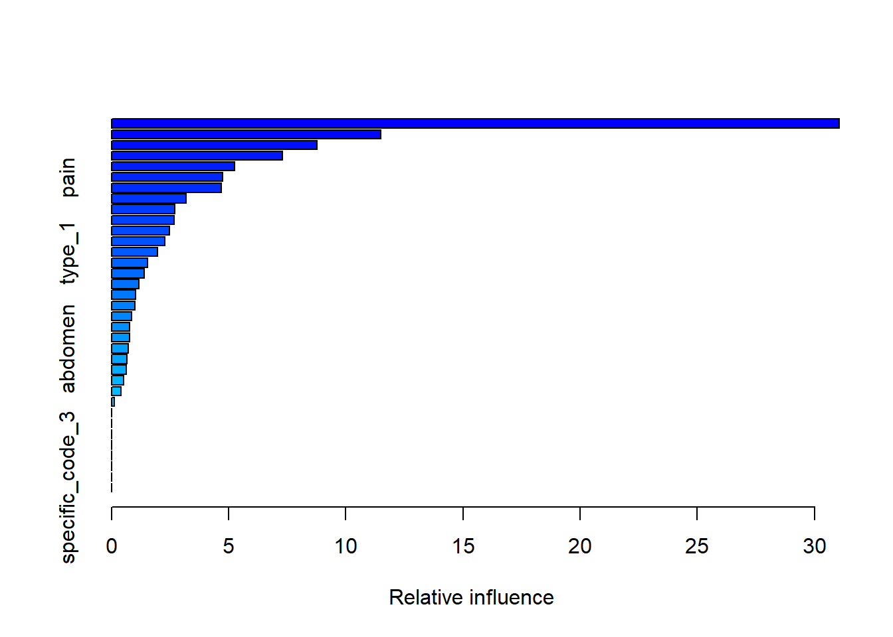

The following package(s) will be installed:
- tidyverse [2.0.0]
These packages will be installed into "~/horse_project/renv/library/windows/R-4.4/x86_64-w64-mingw32".
# Installing packages --------------------------------------------------------
- Installing tidyverse ... OK [linked from cache]
Successfully installed 1 package in 27 milliseconds.── Attaching core tidyverse packages ──────────────────────── tidyverse 2.0.0 ──
✔ dplyr 1.1.4 ✔ readr 2.1.5
✔ forcats 1.0.0 ✔ stringr 1.5.1
✔ ggplot2 3.5.1 ✔ tibble 3.2.1
✔ lubridate 1.9.3 ✔ tidyr 1.3.1
✔ purrr 1.0.2
── Conflicts ────────────────────────────────────────── tidyverse_conflicts() ──
✖ dplyr::filter() masks stats::filter()
✖ dplyr::lag() masks stats::lag()
ℹ Use the conflicted package (<http://conflicted.r-lib.org/>) to force all conflicts to become errorsThe following package(s) will be installed:
- caret [6.0-94]
These packages will be installed into "~/horse_project/renv/library/windows/R-4.4/x86_64-w64-mingw32".
# Installing packages --------------------------------------------------------
- Installing caret ... OK [linked from cache]
Successfully installed 1 package in 23 milliseconds.Loading required package: lattice
Attaching package: 'caret'
The following object is masked from 'package:purrr':
liftThe following package(s) will be installed:
- dslabs [0.8.0]
These packages will be installed into "~/horse_project/renv/library/windows/R-4.4/x86_64-w64-mingw32".
# Installing packages --------------------------------------------------------
- Installing dslabs ... OK [linked from cache]
Successfully installed 1 package in 21 milliseconds. surgery age hospital_number rectal_temp pulse respiratory_rate
1 no adult 530101 38.5 66 28
2 yes adult 534817 39.2 88 20
3 no adult 530334 38.3 40 24
4 yes young 5290409 39.1 164 84
5 no adult 530255 37.3 104 35
6 no adult 528355 NA NA NA
temp_of_extremities peripheral_pulse mucous_membrane capillary_refill_time
1 cool reduced <NA> more_3_sec
2 <NA> <NA> pale_cyanotic less_3_sec
3 normal normal pale_pink less_3_sec
4 cold normal dark_cyanotic more_3_sec
5 <NA> <NA> dark_cyanotic more_3_sec
6 warm normal pale_pink less_3_sec
pain peristalsis abdominal_distention nasogastric_tube
1 extreme_pain absent severe <NA>
2 mild_pain absent slight <NA>
3 mild_pain hypomotile none <NA>
4 depressed absent severe none
5 <NA> <NA> <NA> <NA>
6 depressed hypomotile slight slight
nasogastric_reflux nasogastric_reflux_ph rectal_exam_feces abdomen
1 <NA> NA decreased distend_large
2 <NA> NA absent other
3 <NA> NA normal normal
4 less_1_liter 5 decreased <NA>
5 <NA> NA <NA> <NA>
6 none NA decreased firm
packed_cell_volume total_protein abdomo_appearance abdomo_protein outcome
1 45 8.4 <NA> NA died
2 50 85.0 cloudy 2.0 euthanized
3 33 6.7 <NA> NA lived
4 48 7.2 serosanguious 5.3 died
5 74 7.4 <NA> NA died
6 NA NA <NA> NA lived
surgical_lesion lesion_1 lesion_2 lesion_3 cp_data
1 no 11300 0 0 no
2 no 2208 0 0 no
3 no 0 0 0 yes
4 yes 2208 0 0 yes
5 no 4300 0 0 no
6 no 0 0 0 noRows: 299
Columns: 28
$ surgery <chr> "no", "yes", "no", "yes", "no", "no", "yes", "ye…
$ age <chr> "adult", "adult", "adult", "young", "adult", "ad…
$ hospital_number <int> 530101, 534817, 530334, 5290409, 530255, 528355,…
$ rectal_temp <dbl> 38.5, 39.2, 38.3, 39.1, 37.3, NA, 37.9, NA, NA, …
$ pulse <int> 66, 88, 40, 164, 104, NA, 48, 60, 80, 90, 66, 72…
$ respiratory_rate <int> 28, 20, 24, 84, 35, NA, 16, NA, 36, NA, 12, 52, …
$ temp_of_extremities <chr> "cool", NA, "normal", "cold", NA, "warm", "norma…
$ peripheral_pulse <chr> "reduced", NA, "normal", "normal", NA, "normal",…
$ mucous_membrane <chr> NA, "pale_cyanotic", "pale_pink", "dark_cyanotic…
$ capillary_refill_time <chr> "more_3_sec", "less_3_sec", "less_3_sec", "more_…
$ pain <chr> "extreme_pain", "mild_pain", "mild_pain", "depre…
$ peristalsis <chr> "absent", "absent", "hypomotile", "absent", NA, …
$ abdominal_distention <chr> "severe", "slight", "none", "severe", NA, "sligh…
$ nasogastric_tube <chr> NA, NA, NA, "none", NA, "slight", "none", "sligh…
$ nasogastric_reflux <chr> NA, NA, NA, "less_1_liter", NA, "none", "none", …
$ nasogastric_reflux_ph <dbl> NA, NA, NA, 5.0, NA, NA, NA, NA, NA, NA, 3.0, NA…
$ rectal_exam_feces <chr> "decreased", "absent", "normal", "decreased", NA…
$ abdomen <chr> "distend_large", "other", "normal", NA, NA, "fir…
$ packed_cell_volume <dbl> 45, 50, 33, 48, 74, NA, 37, 44, 38, 40, 44, 50, …
$ total_protein <dbl> 8.4, 85.0, 6.7, 7.2, 7.4, NA, 7.0, 8.3, 6.2, 6.2…
$ abdomo_appearance <chr> NA, "cloudy", NA, "serosanguious", NA, NA, NA, N…
$ abdomo_protein <dbl> NA, 2.0, NA, 5.3, NA, NA, NA, NA, NA, 2.2, 3.6, …
$ outcome <chr> "died", "euthanized", "lived", "died", "died", "…
$ surgical_lesion <chr> "no", "no", "no", "yes", "no", "no", "yes", "yes…
$ lesion_1 <int> 11300, 2208, 0, 2208, 4300, 0, 3124, 2208, 3205,…
$ lesion_2 <int> 0, 0, 0, 0, 0, 0, 0, 0, 0, 0, 0, 0, 0, 0, 0, 0, …
$ lesion_3 <int> 0, 0, 0, 0, 0, 0, 0, 0, 0, 0, 0, 0, 0, 0, 0, 0, …
$ cp_data <chr> "no", "no", "yes", "yes", "no", "no", "no", "no"…'data.frame': 299 obs. of 28 variables:
$ surgery : chr "no" "yes" "no" "yes" ...
$ age : chr "adult" "adult" "adult" "young" ...
$ hospital_number : int 530101 534817 530334 5290409 530255 528355 526802 529607 530051 5299629 ...
$ rectal_temp : num 38.5 39.2 38.3 39.1 37.3 NA 37.9 NA NA 38.3 ...
$ pulse : int 66 88 40 164 104 NA 48 60 80 90 ...
$ respiratory_rate : int 28 20 24 84 35 NA 16 NA 36 NA ...
$ temp_of_extremities : chr "cool" NA "normal" "cold" ...
$ peripheral_pulse : chr "reduced" NA "normal" "normal" ...
$ mucous_membrane : chr NA "pale_cyanotic" "pale_pink" "dark_cyanotic" ...
$ capillary_refill_time: chr "more_3_sec" "less_3_sec" "less_3_sec" "more_3_sec" ...
$ pain : chr "extreme_pain" "mild_pain" "mild_pain" "depressed" ...
$ peristalsis : chr "absent" "absent" "hypomotile" "absent" ...
$ abdominal_distention : chr "severe" "slight" "none" "severe" ...
$ nasogastric_tube : chr NA NA NA "none" ...
$ nasogastric_reflux : chr NA NA NA "less_1_liter" ...
$ nasogastric_reflux_ph: num NA NA NA 5 NA NA NA NA NA NA ...
$ rectal_exam_feces : chr "decreased" "absent" "normal" "decreased" ...
$ abdomen : chr "distend_large" "other" "normal" NA ...
$ packed_cell_volume : num 45 50 33 48 74 NA 37 44 38 40 ...
$ total_protein : num 8.4 85 6.7 7.2 7.4 NA 7 8.3 6.2 6.2 ...
$ abdomo_appearance : chr NA "cloudy" NA "serosanguious" ...
$ abdomo_protein : num NA 2 NA 5.3 NA NA NA NA NA 2.2 ...
$ outcome : chr "died" "euthanized" "lived" "died" ...
$ surgical_lesion : chr "no" "no" "no" "yes" ...
$ lesion_1 : int 11300 2208 0 2208 4300 0 3124 2208 3205 0 ...
$ lesion_2 : int 0 0 0 0 0 0 0 0 0 0 ...
$ lesion_3 : int 0 0 0 0 0 0 0 0 0 0 ...
$ cp_data : chr "no" "no" "yes" "yes" ... [1] "surgery" "age" "hospital_number"
[4] "rectal_temp" "pulse" "respiratory_rate"
[7] "temp_of_extremities" "peripheral_pulse" "mucous_membrane"
[10] "capillary_refill_time" "pain" "peristalsis"
[13] "abdominal_distention" "nasogastric_tube" "nasogastric_reflux"
[16] "nasogastric_reflux_ph" "rectal_exam_feces" "abdomen"
[19] "packed_cell_volume" "total_protein" "abdomo_appearance"
[22] "abdomo_protein" "outcome" "surgical_lesion"
[25] "lesion_1" "lesion_2" "lesion_3"
[28] "cp_data" [1] 299[1] 28[1] 299 28 surgery age hospital_number
"character" "character" "integer"
rectal_temp pulse respiratory_rate
"numeric" "integer" "integer"
temp_of_extremities peripheral_pulse mucous_membrane
"character" "character" "character"
capillary_refill_time pain peristalsis
"character" "character" "character"
abdominal_distention nasogastric_tube nasogastric_reflux
"character" "character" "character"
nasogastric_reflux_ph rectal_exam_feces abdomen
"numeric" "character" "character"
packed_cell_volume total_protein abdomo_appearance
"numeric" "numeric" "character"
abdomo_protein outcome surgical_lesion
"numeric" "character" "character"
lesion_1 lesion_2 lesion_3
"integer" "integer" "integer"
cp_data
"character" [1] TRUE[1] 1602 surgery age hospital_number rectal_temp
Length:299 Length:299 Min. : 518476 Min. :35.40
Class :character Class :character 1st Qu.: 528904 1st Qu.:37.80
Mode :character Mode :character Median : 530301 Median :38.20
Mean :1087733 Mean :38.17
3rd Qu.: 534736 3rd Qu.:38.50
Max. :5305629 Max. :40.80
NA's :60
pulse respiratory_rate temp_of_extremities peripheral_pulse
Min. : 30 Min. : 8.00 Length:299 Length:299
1st Qu.: 48 1st Qu.:18.00 Class :character Class :character
Median : 64 Median :25.00 Mode :character Mode :character
Mean : 72 Mean :30.46
3rd Qu.: 88 3rd Qu.:36.00
Max. :184 Max. :96.00
NA's :24 NA's :58
mucous_membrane capillary_refill_time pain peristalsis
Length:299 Length:299 Length:299 Length:299
Class :character Class :character Class :character Class :character
Mode :character Mode :character Mode :character Mode :character
abdominal_distention nasogastric_tube nasogastric_reflux
Length:299 Length:299 Length:299
Class :character Class :character Class :character
Mode :character Mode :character Mode :character
nasogastric_reflux_ph rectal_exam_feces abdomen packed_cell_volume
Min. :1.000 Length:299 Length:299 Min. :23.00
1st Qu.:3.000 Class :character Class :character 1st Qu.:38.00
Median :5.000 Mode :character Mode :character Median :45.00
Mean :4.708 Mean :46.31
3rd Qu.:6.500 3rd Qu.:52.00
Max. :7.500 Max. :75.00
NA's :246 NA's :29
total_protein abdomo_appearance abdomo_protein outcome
Min. : 3.30 Length:299 Min. : 0.10 Length:299
1st Qu.: 6.50 Class :character 1st Qu.: 2.00 Class :character
Median : 7.50 Mode :character Median : 2.30 Mode :character
Mean :24.27 Mean : 3.04
3rd Qu.:56.75 3rd Qu.: 3.90
Max. :89.00 Max. :10.10
NA's :33 NA's :198
surgical_lesion lesion_1 lesion_2 lesion_3
Length:299 Min. : 0 Min. : 0.00 Min. : 0.000
Class :character 1st Qu.: 2112 1st Qu.: 0.00 1st Qu.: 0.000
Mode :character Median : 2322 Median : 0.00 Median : 0.000
Mean : 3660 Mean : 90.53 Mean : 7.388
3rd Qu.: 3209 3rd Qu.: 0.00 3rd Qu.: 0.000
Max. :41110 Max. :7111.00 Max. :2209.000
cp_data
Length:299
Class :character
Mode :character
surgery age hospital_number
0 0 0
rectal_temp pulse respiratory_rate
60 24 58
temp_of_extremities peripheral_pulse mucous_membrane
56 69 47
capillary_refill_time pain peristalsis
32 55 44
abdominal_distention nasogastric_tube nasogastric_reflux
56 104 106
nasogastric_reflux_ph rectal_exam_feces abdomen
246 102 118
packed_cell_volume total_protein abdomo_appearance
29 33 165
abdomo_protein outcome surgical_lesion
198 0 0
lesion_1 lesion_2 lesion_3
0 0 0
cp_data
0 [1] "cool" NA "normal" "cold" "warm" [1] 5
bright_pink bright_red dark_cyanotic normal_pink pale_cyanotic
30 25 20 79 41
pale_pink
57 abdomo_appearance
1 <NA>
2 cloudy
3 serosanguious
4 clear[1] 4 surgery age hospital_number
0 0 0
rectal_temp pulse respiratory_rate
0 0 0
temp_of_extremities peripheral_pulse mucous_membrane
56 69 47
capillary_refill_time pain peristalsis
32 55 44
abdominal_distention nasogastric_tube nasogastric_reflux
56 104 106
nasogastric_reflux_ph rectal_exam_feces abdomen
0 102 118
packed_cell_volume total_protein abdomo_appearance
0 0 165
abdomo_protein outcome surgical_lesion
0 0 0
lesion_1 lesion_2 lesion_3
0 0 0
cp_data
0 The following package(s) will be installed:
- corrplot [0.95]
These packages will be installed into "~/horse_project/renv/library/windows/R-4.4/x86_64-w64-mingw32".
# Installing packages --------------------------------------------------------
- Installing corrplot ... OK [linked from cache]
Successfully installed 1 package in 21 milliseconds.corrplot 0.95 loaded
[1] "surgery" "age" "rectal_temp"
[4] "pulse" "respiratory_rate" "temp_of_extremities"
[7] "peripheral_pulse" "mucous_membrane" "capillary_refill_time"
[10] "pain" "peristalsis" "abdominal_distention"
[13] "nasogastric_tube" "nasogastric_reflux" "nasogastric_reflux_ph"
[16] "rectal_exam_feces" "abdomen" "packed_cell_volume"
[19] "total_protein" "abdomo_appearance" "abdomo_protein"
[22] "outcome" "surgical_lesion" "lesion_1"
[25] "lesion_2" "lesion_3" "cp_data" surgery age temp_of_extremities peripheral_pulse mucous_membrane
1 no adult cool reduced <NA>
2 yes adult <NA> <NA> pale_cyanotic
3 no adult normal normal pale_pink
4 yes young cold normal dark_cyanotic
5 no adult <NA> <NA> dark_cyanotic
6 no adult warm normal pale_pink
7 yes adult normal normal normal_pink
8 yes adult cool <NA> <NA>
9 no adult cool absent pale_pink
10 no young normal <NA> normal_pink
11 yes adult cool reduced bright_red
12 no adult warm <NA> bright_pink
13 yes adult warm normal normal_pink
14 no young normal normal bright_pink
15 yes adult cool normal normal_pink
16 yes adult cool normal pale_cyanotic
17 yes young cool reduced pale_cyanotic
18 no adult <NA> <NA> <NA>
19 yes adult normal normal bright_pink
20 no adult cold reduced dark_cyanotic
21 yes adult normal normal bright_red
22 no adult normal <NA> normal_pink
23 yes adult warm normal pale_cyanotic
24 yes young <NA> reduced <NA>
25 yes adult cool reduced pale_pink
26 no adult <NA> <NA> <NA>
27 yes adult cold reduced pale_pink
28 yes adult cool normal normal_pink
29 yes adult <NA> <NA> <NA>
30 no adult warm normal normal_pink
31 no adult cool reduced pale_cyanotic
32 no adult cool reduced pale_cyanotic
33 yes adult warm normal normal_pink
34 yes adult normal normal normal_pink
35 yes adult cool reduced pale_cyanotic
36 no adult cold reduced pale_pink
37 no adult <NA> reduced bright_red
38 yes adult <NA> reduced <NA>
39 no adult normal normal normal_pink
40 yes young <NA> <NA> <NA>
41 yes adult cool reduced dark_cyanotic
42 no young <NA> <NA> <NA>
43 no adult cool normal pale_pink
44 yes adult cool absent pale_cyanotic
45 yes adult cool reduced pale_cyanotic
46 no adult cold reduced pale_cyanotic
47 yes adult cool <NA> pale_cyanotic
48 no adult normal normal normal_pink
49 yes adult cool reduced pale_pink
50 no adult cool reduced bright_red
51 no adult normal normal bright_pink
52 yes adult normal <NA> pale_pink
53 no adult normal normal pale_pink
54 no adult <NA> <NA> <NA>
55 no adult cool reduced normal_pink
56 yes young cool <NA> bright_red
57 yes adult <NA> <NA> <NA>
58 yes adult warm <NA> bright_pink
59 yes adult cold reduced pale_pink
60 no adult cool reduced pale_pink
61 no adult normal normal pale_pink
62 no adult warm increased normal_pink
63 yes adult warm normal bright_pink
64 no adult cold reduced pale_cyanotic
65 yes adult cool normal pale_cyanotic
66 yes adult cool normal pale_pink
67 no adult normal normal bright_red
68 no adult normal normal normal_pink
69 no adult normal <NA> pale_pink
70 no adult normal normal normal_pink
71 no adult cool <NA> <NA>
72 yes adult normal normal normal_pink
73 yes adult <NA> <NA> <NA>
74 yes adult normal normal bright_red
75 yes young <NA> <NA> <NA>
76 yes young cool reduced bright_red
77 yes adult cool reduced normal_pink
78 no adult warm <NA> normal_pink
79 yes adult cool reduced pale_pink
80 yes adult normal reduced dark_cyanotic
81 yes adult cool reduced pale_cyanotic
82 yes adult <NA> reduced normal_pink
83 yes young cool normal bright_pink
84 yes adult cool reduced dark_cyanotic
85 yes adult normal reduced bright_pink
86 no adult warm reduced pale_pink
87 yes adult cool reduced pale_cyanotic
88 no adult <NA> <NA> <NA>
89 no adult normal normal bright_red
90 no adult normal normal normal_pink
91 no adult <NA> <NA> <NA>
92 no adult cool reduced normal_pink
93 no adult cool normal normal_pink
94 no adult cool reduced normal_pink
95 no adult cold normal pale_pink
96 yes adult <NA> normal bright_pink
97 no adult <NA> <NA> pale_pink
98 yes adult cool reduced pale_cyanotic
99 no adult warm normal pale_pink
100 no adult cool reduced dark_cyanotic
101 yes adult cool reduced normal_pink
102 yes adult cold reduced pale_cyanotic
103 no adult cool <NA> normal_pink
104 yes young normal normal normal_pink
105 yes adult normal reduced pale_pink
106 yes adult normal <NA> pale_pink
107 yes adult <NA> reduced pale_pink
108 no adult normal normal pale_pink
109 yes adult cold reduced bright_pink
110 yes young cool reduced bright_pink
111 yes adult cool absent bright_red
112 yes adult cool <NA> <NA>
113 yes adult warm normal normal_pink
114 yes adult <NA> <NA> <NA>
115 yes adult cool <NA> pale_cyanotic
116 no adult cool normal normal_pink
117 yes adult normal normal normal_pink
118 no adult cool reduced pale_cyanotic
119 yes adult normal <NA> normal_pink
120 no adult warm normal bright_pink
121 yes adult normal normal bright_pink
122 yes adult <NA> <NA> dark_cyanotic
123 no adult warm normal normal_pink
124 yes adult normal normal pale_pink
125 no adult cool normal pale_cyanotic
126 yes adult cold normal normal_pink
127 yes adult cool normal pale_pink
128 yes adult cool reduced <NA>
129 yes adult <NA> <NA> pale_pink
130 yes adult <NA> <NA> normal_pink
131 yes adult <NA> <NA> <NA>
132 no adult cool normal normal_pink
133 no adult normal normal normal_pink
134 yes adult cool <NA> pale_cyanotic
135 yes young cool reduced pale_pink
136 yes adult cool reduced pale_pink
137 yes adult normal normal normal_pink
138 no adult normal increased pale_pink
139 no adult normal normal <NA>
140 yes adult cool normal normal_pink
141 no adult <NA> <NA> bright_red
142 yes adult cold reduced dark_cyanotic
143 yes adult normal normal normal_pink
144 yes adult cool reduced dark_cyanotic
145 no adult cool reduced bright_pink
146 yes adult normal reduced pale_pink
147 no adult warm normal pale_pink
148 yes adult <NA> reduced dark_cyanotic
149 no adult <NA> <NA> <NA>
150 no adult cool normal normal_pink
151 yes adult cold reduced dark_cyanotic
152 yes adult cool reduced pale_cyanotic
153 no adult cool normal normal_pink
154 no adult normal normal pale_pink
155 no adult cool reduced pale_cyanotic
156 no adult normal normal normal_pink
157 yes adult normal <NA> pale_pink
158 no adult cool normal normal_pink
159 no adult normal normal bright_pink
160 yes adult <NA> <NA> <NA>
161 yes adult <NA> <NA> <NA>
162 no adult cool <NA> <NA>
163 yes adult normal reduced pale_pink
164 yes adult normal normal bright_red
165 yes adult <NA> <NA> bright_red
166 yes adult normal normal normal_pink
167 no adult normal normal normal_pink
168 yes adult normal normal pale_pink
169 yes adult <NA> <NA> <NA>
170 no adult normal normal pale_pink
171 no adult cool reduced bright_red
172 yes adult cool reduced pale_pink
173 yes adult cool reduced bright_red
174 no adult cool absent dark_cyanotic
175 yes adult <NA> <NA> <NA>
176 yes adult normal normal pale_pink
177 yes adult <NA> <NA> pale_cyanotic
178 yes adult cool reduced pale_cyanotic
179 no adult cool reduced bright_red
180 yes adult cool normal bright_red
181 no adult <NA> <NA> normal_pink
182 yes adult cool reduced dark_cyanotic
183 no adult normal normal bright_pink
184 no adult warm increased bright_pink
185 yes adult cold reduced dark_cyanotic
186 yes adult warm reduced normal_pink
187 yes adult cold reduced normal_pink
188 yes adult normal normal <NA>
189 yes adult cool normal normal_pink
190 yes adult <NA> normal pale_cyanotic
191 no young warm normal normal_pink
192 yes adult normal normal normal_pink
193 yes adult cool reduced pale_cyanotic
194 no adult normal normal bright_pink
195 no adult cool normal normal_pink
196 no adult normal normal bright_red
197 no adult cool reduced <NA>
198 no adult normal normal normal_pink
199 no adult cool normal bright_pink
200 yes adult normal <NA> pale_pink
201 yes adult normal normal pale_pink
202 yes adult <NA> <NA> <NA>
203 no adult normal normal normal_pink
204 yes adult cool normal pale_pink
205 no adult cool reduced bright_red
206 yes adult warm reduced pale_cyanotic
207 yes adult <NA> <NA> <NA>
208 yes adult cool reduced bright_red
209 no adult cool normal normal_pink
210 yes adult <NA> normal bright_pink
211 yes adult cold reduced pale_cyanotic
212 yes young normal reduced bright_pink
213 yes adult cool normal pale_pink
214 no adult warm normal normal_pink
215 yes adult normal normal normal_pink
216 no adult <NA> <NA> <NA>
217 yes adult <NA> <NA> <NA>
218 yes adult normal increased bright_pink
219 yes adult cool reduced pale_cyanotic
220 yes adult cold absent <NA>
221 yes adult cold reduced <NA>
222 yes adult cold absent pale_cyanotic
223 yes adult normal normal pale_pink
224 yes adult normal normal normal_pink
225 no adult normal normal normal_pink
226 yes adult cold reduced bright_red
227 yes young <NA> <NA> <NA>
228 yes adult cool <NA> dark_cyanotic
229 yes young <NA> <NA> <NA>
230 yes adult cool reduced <NA>
231 no adult cool reduced dark_cyanotic
232 yes adult <NA> <NA> <NA>
233 yes adult cold reduced pale_pink
234 no adult cold normal pale_pink
235 yes adult normal normal bright_red
236 no adult normal normal normal_pink
237 no adult warm normal bright_red
238 no adult cool reduced pale_pink
239 yes adult <NA> normal <NA>
240 yes adult cold reduced pale_cyanotic
241 yes adult normal normal bright_pink
242 yes adult normal normal pale_cyanotic
243 yes adult normal <NA> <NA>
244 yes young normal reduced bright_pink
245 no adult cool reduced pale_pink
246 yes adult cool <NA> pale_pink
247 yes adult cool reduced pale_cyanotic
248 yes adult warm reduced pale_cyanotic
249 no adult warm <NA> normal_pink
250 yes adult cold absent dark_cyanotic
251 no adult cool reduced bright_pink
252 yes young cool normal bright_pink
253 no adult cool reduced pale_cyanotic
254 yes adult cool reduced pale_pink
255 yes young normal <NA> normal_pink
256 yes adult warm normal normal_pink
257 yes adult cool reduced pale_cyanotic
258 no adult normal normal normal_pink
259 yes adult cool reduced normal_pink
260 no adult <NA> normal normal_pink
261 no adult warm normal normal_pink
262 no young <NA> <NA> <NA>
263 yes adult <NA> <NA> pale_pink
264 yes adult cool normal bright_pink
265 no adult cool normal normal_pink
266 no adult warm normal pale_pink
267 no adult cool normal bright_pink
268 yes adult <NA> <NA> normal_pink
269 yes adult warm reduced normal_pink
270 yes adult cool reduced normal_pink
271 yes adult cool reduced dark_cyanotic
272 yes adult cool reduced pale_cyanotic
273 yes adult cool reduced pale_pink
274 yes adult <NA> reduced <NA>
275 yes young normal reduced dark_cyanotic
276 yes adult cool normal normal_pink
277 no adult warm reduced pale_pink
278 no adult normal normal normal_pink
279 no adult cold reduced normal_pink
280 yes adult <NA> <NA> normal_pink
281 no adult cool reduced bright_red
282 yes adult cool absent bright_red
283 yes adult <NA> <NA> <NA>
284 no adult normal normal normal_pink
285 yes adult normal normal normal_pink
286 no adult cool normal normal_pink
287 no young <NA> <NA> <NA>
288 yes adult <NA> <NA> <NA>
289 yes adult <NA> normal normal_pink
290 no adult warm normal bright_pink
291 yes adult cool reduced pale_pink
292 yes adult normal reduced bright_pink
293 yes adult cool reduced pale_pink
294 no adult normal normal normal_pink
295 yes adult cold <NA> pale_cyanotic
296 no adult cool increased pale_cyanotic
297 yes adult cold reduced pale_cyanotic
298 yes adult cool reduced pale_pink
299 yes adult <NA> <NA> <NA>
capillary_refill_time pain peristalsis abdominal_distention
1 more_3_sec extreme_pain absent severe
2 less_3_sec mild_pain absent slight
3 less_3_sec mild_pain hypomotile none
4 more_3_sec depressed absent severe
5 more_3_sec <NA> <NA> <NA>
6 less_3_sec depressed hypomotile slight
7 less_3_sec mild_pain hypomotile moderate
8 less_3_sec <NA> absent slight
9 less_3_sec severe_pain absent severe
10 less_3_sec extreme_pain hypomotile none
11 less_3_sec mild_pain hypomotile none
12 less_3_sec depressed hypermotile slight
13 less_3_sec mild_pain hypomotile moderate
14 less_3_sec alert hypomotile slight
15 less_3_sec mild_pain absent none
16 less_3_sec extreme_pain hypomotile moderate
17 more_3_sec severe_pain absent moderate
18 <NA> <NA> <NA> <NA>
19 less_3_sec depressed hypomotile none
20 <NA> <NA> hypomotile moderate
21 more_3_sec extreme_pain absent severe
22 less_3_sec alert hypomotile none
23 <NA> depressed hypomotile none
24 less_3_sec depressed absent <NA>
25 less_3_sec <NA> absent moderate
26 less_3_sec <NA> <NA> <NA>
27 more_3_sec mild_pain hypomotile moderate
28 less_3_sec <NA> hypomotile slight
29 <NA> <NA> <NA> <NA>
30 less_3_sec alert hypermotile none
31 more_3_sec extreme_pain absent severe
32 more_3_sec depressed absent slight
33 less_3_sec mild_pain hypomotile moderate
34 less_3_sec mild_pain hypermotile <NA>
35 more_3_sec extreme_pain absent severe
36 more_3_sec severe_pain absent moderate
37 more_3_sec <NA> <NA> none
38 less_3_sec extreme_pain hypomotile none
39 less_3_sec mild_pain hypomotile slight
40 <NA> <NA> <NA> <NA>
41 more_3_sec extreme_pain hypomotile moderate
42 <NA> <NA> <NA> <NA>
43 less_3_sec mild_pain hypomotile none
44 less_3_sec severe_pain absent severe
45 more_3_sec severe_pain absent <NA>
46 more_3_sec extreme_pain absent severe
47 more_3_sec extreme_pain absent severe
48 less_3_sec alert hypermotile none
49 more_3_sec depressed hypomotile moderate
50 more_3_sec severe_pain hypermotile slight
51 less_3_sec alert hypomotile slight
52 more_3_sec mild_pain hypomotile slight
53 less_3_sec alert hypomotile none
54 less_3_sec <NA> <NA> <NA>
55 more_3_sec depressed hypomotile moderate
56 less_3_sec mild_pain hypomotile severe
57 <NA> <NA> <NA> <NA>
58 less_3_sec extreme_pain hypomotile moderate
59 <NA> extreme_pain absent moderate
60 more_3_sec extreme_pain absent severe
61 less_3_sec depressed hypermotile <NA>
62 less_3_sec alert normal slight
63 less_3_sec mild_pain <NA> <NA>
64 more_3_sec depressed absent severe
65 more_3_sec mild_pain hypomotile slight
66 less_3_sec mild_pain hypomotile slight
67 more_3_sec mild_pain hypomotile none
68 less_3_sec alert hypomotile none
69 less_3_sec <NA> <NA> <NA>
70 less_3_sec alert hypomotile <NA>
71 less_3_sec mild_pain <NA> moderate
72 less_3_sec alert normal none
73 <NA> <NA> <NA> <NA>
74 less_3_sec severe_pain hypomotile none
75 <NA> <NA> <NA> <NA>
76 more_3_sec depressed hypomotile <NA>
77 less_3_sec mild_pain hypomotile slight
78 less_3_sec alert hypermotile none
79 3 extreme_pain hypomotile moderate
80 more_3_sec mild_pain absent slight
81 less_3_sec severe_pain hypomotile slight
82 less_3_sec depressed hypomotile slight
83 less_3_sec mild_pain absent none
84 more_3_sec extreme_pain <NA> severe
85 more_3_sec depressed hypomotile moderate
86 3 mild_pain hypermotile slight
87 more_3_sec extreme_pain absent moderate
88 less_3_sec <NA> <NA> <NA>
89 less_3_sec mild_pain hypomotile slight
90 less_3_sec alert hypermotile none
91 <NA> depressed <NA> <NA>
92 more_3_sec depressed hypomotile moderate
93 less_3_sec alert hypermotile none
94 less_3_sec extreme_pain hypomotile moderate
95 less_3_sec <NA> normal none
96 less_3_sec mild_pain hypomotile moderate
97 less_3_sec <NA> hypomotile none
98 less_3_sec depressed hypomotile moderate
99 less_3_sec alert hypomotile slight
100 more_3_sec depressed absent moderate
101 less_3_sec alert hypomotile <NA>
102 more_3_sec extreme_pain absent <NA>
103 less_3_sec depressed <NA> <NA>
104 less_3_sec mild_pain hypomotile slight
105 less_3_sec severe_pain absent none
106 more_3_sec depressed hypomotile slight
107 less_3_sec <NA> <NA> <NA>
108 less_3_sec alert hypomotile slight
109 more_3_sec severe_pain absent severe
110 less_3_sec mild_pain hypomotile moderate
111 more_3_sec depressed hypomotile slight
112 less_3_sec alert hypomotile slight
113 less_3_sec alert hypomotile none
114 <NA> <NA> <NA> <NA>
115 <NA> extreme_pain absent moderate
116 less_3_sec mild_pain hypomotile slight
117 less_3_sec mild_pain hypomotile moderate
118 more_3_sec mild_pain absent moderate
119 less_3_sec extreme_pain hypomotile none
120 less_3_sec alert hypomotile none
121 less_3_sec depressed hypomotile slight
122 more_3_sec severe_pain hypomotile none
123 less_3_sec mild_pain hypermotile none
124 less_3_sec severe_pain absent moderate
125 less_3_sec alert hypermotile moderate
126 less_3_sec mild_pain hypomotile slight
127 less_3_sec extreme_pain absent slight
128 less_3_sec severe_pain absent none
129 less_3_sec depressed hypomotile moderate
130 less_3_sec <NA> <NA> none
131 <NA> <NA> <NA> <NA>
132 less_3_sec mild_pain hypomotile slight
133 less_3_sec depressed hypomotile none
134 more_3_sec extreme_pain absent <NA>
135 less_3_sec extreme_pain hypermotile moderate
136 more_3_sec extreme_pain hypomotile moderate
137 less_3_sec alert normal severe
138 less_3_sec alert hypermotile none
139 less_3_sec mild_pain hypomotile <NA>
140 less_3_sec depressed normal none
141 less_3_sec <NA> <NA> <NA>
142 more_3_sec extreme_pain absent severe
143 more_3_sec alert normal none
144 less_3_sec depressed absent severe
145 less_3_sec depressed hypomotile moderate
146 less_3_sec mild_pain absent severe
147 less_3_sec mild_pain absent moderate
148 more_3_sec depressed absent slight
149 <NA> alert hypermotile <NA>
150 less_3_sec depressed hypomotile slight
151 more_3_sec severe_pain absent slight
152 more_3_sec <NA> absent severe
153 less_3_sec alert hypomotile slight
154 less_3_sec mild_pain hypomotile severe
155 less_3_sec alert absent slight
156 less_3_sec mild_pain hypomotile slight
157 more_3_sec <NA> absent severe
158 less_3_sec mild_pain hypomotile none
159 less_3_sec depressed hypermotile slight
160 <NA> severe_pain <NA> <NA>
161 less_3_sec <NA> <NA> <NA>
162 more_3_sec mild_pain hypomotile slight
163 less_3_sec extreme_pain hypomotile none
164 more_3_sec mild_pain hypomotile slight
165 less_3_sec <NA> hypomotile moderate
166 less_3_sec mild_pain hypermotile none
167 less_3_sec mild_pain hypomotile none
168 less_3_sec depressed absent slight
169 more_3_sec extreme_pain <NA> severe
170 less_3_sec <NA> hypermotile none
171 <NA> mild_pain hypomotile moderate
172 less_3_sec depressed absent moderate
173 more_3_sec depressed absent moderate
174 <NA> severe_pain <NA> severe
175 <NA> <NA> <NA> <NA>
176 less_3_sec mild_pain hypomotile none
177 less_3_sec severe_pain <NA> <NA>
178 more_3_sec extreme_pain absent severe
179 more_3_sec severe_pain hypomotile severe
180 more_3_sec severe_pain hypomotile moderate
181 less_3_sec mild_pain <NA> slight
182 more_3_sec extreme_pain <NA> severe
183 less_3_sec depressed hypermotile none
184 less_3_sec alert hypermotile none
185 more_3_sec <NA> hypomotile <NA>
186 less_3_sec <NA> hypomotile none
187 less_3_sec mild_pain hypomotile moderate
188 less_3_sec <NA> hypermotile none
189 less_3_sec depressed hypermotile none
190 less_3_sec mild_pain hypomotile none
191 less_3_sec severe_pain hypermotile none
192 less_3_sec mild_pain hypomotile moderate
193 more_3_sec severe_pain hypomotile severe
194 less_3_sec depressed normal none
195 <NA> <NA> hypermotile slight
196 more_3_sec depressed normal none
197 more_3_sec depressed absent slight
198 more_3_sec alert hypomotile none
199 less_3_sec depressed hypermotile slight
200 less_3_sec mild_pain hypermotile moderate
201 less_3_sec severe_pain absent moderate
202 <NA> <NA> <NA> <NA>
203 less_3_sec depressed hypomotile none
204 less_3_sec severe_pain absent slight
205 more_3_sec severe_pain hypomotile severe
206 more_3_sec severe_pain absent moderate
207 <NA> <NA> <NA> <NA>
208 more_3_sec <NA> hypomotile moderate
209 less_3_sec mild_pain hypermotile slight
210 less_3_sec depressed absent slight
211 less_3_sec depressed absent severe
212 more_3_sec mild_pain hypomotile moderate
213 less_3_sec <NA> normal slight
214 less_3_sec alert hypermotile none
215 less_3_sec alert normal none
216 <NA> <NA> <NA> <NA>
217 more_3_sec <NA> <NA> <NA>
218 less_3_sec depressed normal <NA>
219 less_3_sec mild_pain absent moderate
220 more_3_sec extreme_pain absent <NA>
221 less_3_sec depressed absent moderate
222 less_3_sec depressed hypomotile none
223 less_3_sec mild_pain hypomotile slight
224 less_3_sec mild_pain hypermotile none
225 less_3_sec alert hypomotile none
226 more_3_sec depressed hypomotile moderate
227 <NA> <NA> <NA> <NA>
228 more_3_sec extreme_pain absent moderate
229 <NA> <NA> hypermotile <NA>
230 less_3_sec severe_pain hypomotile severe
231 less_3_sec extreme_pain absent none
232 <NA> <NA> <NA> <NA>
233 more_3_sec mild_pain hypomotile moderate
234 less_3_sec <NA> normal none
235 less_3_sec severe_pain hypomotile none
236 less_3_sec mild_pain hypermotile slight
237 less_3_sec mild_pain hypermotile none
238 less_3_sec mild_pain hypomotile slight
239 less_3_sec extreme_pain hypomotile <NA>
240 more_3_sec extreme_pain absent severe
241 less_3_sec alert normal none
242 less_3_sec extreme_pain hypomotile moderate
243 more_3_sec <NA> hypomotile moderate
244 less_3_sec depressed hypomotile severe
245 more_3_sec extreme_pain absent severe
246 less_3_sec severe_pain normal severe
247 less_3_sec extreme_pain absent moderate
248 less_3_sec severe_pain hypomotile moderate
249 more_3_sec mild_pain hypomotile none
250 less_3_sec depressed absent none
251 less_3_sec alert absent none
252 less_3_sec depressed hypomotile severe
253 more_3_sec extreme_pain absent slight
254 less_3_sec severe_pain absent severe
255 less_3_sec severe_pain hypermotile moderate
256 less_3_sec depressed hypermotile none
257 less_3_sec <NA> absent <NA>
258 less_3_sec depressed hypomotile slight
259 less_3_sec depressed hypomotile none
260 less_3_sec severe_pain hypomotile slight
261 less_3_sec alert <NA> slight
262 <NA> <NA> <NA> <NA>
263 more_3_sec severe_pain absent slight
264 less_3_sec mild_pain hypomotile moderate
265 less_3_sec mild_pain hypomotile none
266 less_3_sec mild_pain hypomotile slight
267 less_3_sec depressed hypomotile slight
268 less_3_sec <NA> hypomotile <NA>
269 less_3_sec <NA> hypomotile none
270 less_3_sec mild_pain hypomotile slight
271 less_3_sec extreme_pain absent none
272 more_3_sec extreme_pain absent severe
273 less_3_sec extreme_pain hypomotile moderate
274 <NA> <NA> absent severe
275 more_3_sec extreme_pain hypomotile slight
276 less_3_sec severe_pain normal slight
277 less_3_sec alert hypomotile slight
278 less_3_sec alert hypermotile none
279 less_3_sec depressed absent moderate
280 <NA> alert hypermotile <NA>
281 less_3_sec depressed hypomotile none
282 more_3_sec depressed hypomotile slight
283 <NA> <NA> <NA> <NA>
284 less_3_sec mild_pain hypermotile none
285 less_3_sec mild_pain hypomotile none
286 more_3_sec severe_pain <NA> moderate
287 less_3_sec <NA> <NA> <NA>
288 <NA> <NA> <NA> <NA>
289 less_3_sec mild_pain normal slight
290 less_3_sec alert hypermotile <NA>
291 less_3_sec depressed hypomotile moderate
292 less_3_sec severe_pain hypomotile moderate
293 less_3_sec <NA> hypomotile <NA>
294 less_3_sec depressed hypermotile none
295 more_3_sec depressed absent <NA>
296 more_3_sec severe_pain hypomotile moderate
297 less_3_sec severe_pain absent moderate
298 less_3_sec mild_pain hypomotile moderate
299 <NA> <NA> <NA> <NA>
nasogastric_tube nasogastric_reflux rectal_exam_feces abdomen
1 <NA> <NA> decreased distend_large
2 <NA> <NA> absent other
3 <NA> <NA> normal normal
4 none less_1_liter decreased <NA>
5 <NA> <NA> <NA> <NA>
6 slight none decreased firm
7 none none decreased distend_large
8 slight none decreased distend_small
9 slight none decreased distend_large
10 slight none decreased <NA>
11 slight none increased distend_large
12 none none absent distend_small
13 significant none absent distend_large
14 significant <NA> normal normal
15 slight less_1_liter absent distend_small
16 slight more_1_liter absent <NA>
17 significant <NA> absent distend_large
18 <NA> <NA> <NA> <NA>
19 none none increased distend_large
20 <NA> <NA> <NA> <NA>
21 significant none absent distend_small
22 slight more_1_liter absent firm
23 <NA> <NA> normal <NA>
24 <NA> <NA> <NA> <NA>
25 significant less_1_liter <NA> <NA>
26 <NA> <NA> <NA> <NA>
27 slight none decreased distend_large
28 none none normal firm
29 <NA> <NA> <NA> <NA>
30 none none <NA> <NA>
31 significant less_1_liter absent distend_large
32 <NA> more_1_liter decreased firm
33 slight none absent distend_large
34 <NA> <NA> absent distend_small
35 significant more_1_liter absent distend_small
36 <NA> more_1_liter <NA> other
37 none less_1_liter <NA> distend_large
38 <NA> none normal normal
39 none none normal firm
40 <NA> <NA> <NA> <NA>
41 none more_1_liter absent distend_large
42 <NA> <NA> <NA> <NA>
43 none none increased other
44 none none <NA> distend_large
45 slight none <NA> distend_large
46 none none absent distend_large
47 slight less_1_liter absent distend_large
48 none none normal <NA>
49 slight less_1_liter decreased normal
50 none less_1_liter increased normal
51 none none <NA> other
52 <NA> <NA> absent distend_large
53 <NA> <NA> increased other
54 <NA> <NA> <NA> <NA>
55 slight none normal distend_large
56 significant <NA> absent <NA>
57 <NA> <NA> <NA> <NA>
58 slight less_1_liter <NA> <NA>
59 slight <NA> absent distend_small
60 none less_1_liter absent distend_large
61 none none absent distend_large
62 slight none normal normal
63 slight <NA> absent <NA>
64 none none <NA> <NA>
65 none less_1_liter absent distend_large
66 none none decreased distend_small
67 none more_1_liter decreased distend_small
68 slight none decreased other
69 slight more_1_liter <NA> <NA>
70 none none decreased other
71 slight less_1_liter absent distend_small
72 slight <NA> normal normal
73 <NA> <NA> <NA> <NA>
74 slight more_1_liter normal <NA>
75 <NA> <NA> <NA> <NA>
76 <NA> <NA> <NA> <NA>
77 <NA> <NA> decreased <NA>
78 none none normal normal
79 significant less_1_liter absent distend_large
80 slight more_1_liter <NA> distend_small
81 <NA> <NA> absent distend_small
82 significant none decreased distend_large
83 <NA> <NA> normal <NA>
84 none none <NA> <NA>
85 <NA> less_1_liter absent <NA>
86 slight less_1_liter <NA> distend_small
87 significant <NA> absent distend_large
88 <NA> <NA> <NA> <NA>
89 slight none decreased firm
90 <NA> <NA> <NA> <NA>
91 <NA> more_1_liter normal normal
92 slight none normal distend_large
93 slight none decreased normal
94 none none absent distend_large
95 none none normal normal
96 slight none decreased distend_large
97 slight none decreased other
98 <NA> more_1_liter absent distend_large
99 none none normal distend_large
100 none less_1_liter decreased distend_large
101 <NA> <NA> normal normal
102 <NA> none absent distend_large
103 <NA> <NA> <NA> <NA>
104 <NA> <NA> increased normal
105 slight more_1_liter increased distend_large
106 slight <NA> absent distend_large
107 none none normal <NA>
108 <NA> <NA> normal <NA>
109 <NA> <NA> absent distend_large
110 none none <NA> <NA>
111 slight none absent distend_large
112 <NA> <NA> <NA> <NA>
113 none none <NA> distend_large
114 <NA> <NA> <NA> <NA>
115 slight none absent distend_large
116 <NA> <NA> <NA> <NA>
117 slight none absent distend_large
118 <NA> more_1_liter absent distend_large
119 <NA> none <NA> <NA>
120 none none <NA> <NA>
121 none none decreased distend_small
122 <NA> less_1_liter normal distend_small
123 <NA> <NA> normal <NA>
124 slight none absent distend_small
125 slight none normal normal
126 slight less_1_liter absent distend_small
127 <NA> <NA> <NA> <NA>
128 slight none normal <NA>
129 <NA> <NA> <NA> <NA>
130 slight none <NA> <NA>
131 <NA> <NA> <NA> <NA>
132 none more_1_liter <NA> <NA>
133 <NA> <NA> <NA> firm
134 slight <NA> increased <NA>
135 slight less_1_liter increased <NA>
136 significant less_1_liter absent distend_large
137 slight less_1_liter absent distend_large
138 none none normal normal
139 none none <NA> <NA>
140 none none absent distend_large
141 <NA> <NA> <NA> <NA>
142 <NA> <NA> absent distend_large
143 slight <NA> normal normal
144 significant less_1_liter absent distend_large
145 slight none decreased <NA>
146 none more_1_liter absent distend_large
147 none less_1_liter normal distend_small
148 slight more_1_liter absent distend_small
149 none none normal <NA>
150 <NA> <NA> <NA> other
151 none more_1_liter absent distend_small
152 slight none <NA> <NA>
153 slight none decreased other
154 slight <NA> <NA> distend_large
155 slight <NA> <NA> other
156 none none normal firm
157 slight more_1_liter <NA> distend_large
158 <NA> <NA> <NA> <NA>
159 significant none normal firm
160 none none <NA> distend_large
161 <NA> <NA> <NA> <NA>
162 slight none decreased <NA>
163 none none decreased <NA>
164 slight less_1_liter absent distend_small
165 none <NA> absent <NA>
166 <NA> <NA> increased normal
167 slight none <NA> normal
168 slight more_1_liter <NA> distend_small
169 significant none <NA> distend_large
170 <NA> <NA> normal <NA>
171 <NA> less_1_liter <NA> <NA>
172 none more_1_liter <NA> <NA>
173 <NA> more_1_liter absent distend_small
174 <NA> <NA> <NA> <NA>
175 <NA> <NA> <NA> <NA>
176 slight none decreased other
177 <NA> none <NA> <NA>
178 none none absent <NA>
179 slight none absent distend_large
180 slight more_1_liter absent distend_small
181 none more_1_liter normal <NA>
182 none none <NA> <NA>
183 slight none normal <NA>
184 significant none normal normal
185 <NA> <NA> <NA> <NA>
186 none less_1_liter <NA> <NA>
187 significant more_1_liter absent distend_large
188 <NA> <NA> <NA> <NA>
189 slight less_1_liter normal distend_small
190 none none decreased firm
191 <NA> <NA> normal <NA>
192 none less_1_liter absent <NA>
193 <NA> <NA> <NA> <NA>
194 <NA> <NA> absent normal
195 <NA> <NA> normal <NA>
196 slight none increased firm
197 none less_1_liter absent distend_large
198 <NA> <NA> decreased <NA>
199 <NA> <NA> decreased other
200 slight none decreased firm
201 slight none decreased distend_large
202 none none <NA> distend_large
203 slight none absent normal
204 slight <NA> <NA> <NA>
205 slight none absent distend_large
206 slight none decreased distend_large
207 <NA> <NA> <NA> <NA>
208 slight more_1_liter absent distend_large
209 slight <NA> decreased firm
210 <NA> <NA> normal distend_large
211 none none absent distend_large
212 significant none <NA> <NA>
213 slight none normal distend_small
214 slight <NA> increased <NA>
215 slight none normal other
216 <NA> <NA> <NA> <NA>
217 <NA> <NA> <NA> <NA>
218 <NA> <NA> <NA> <NA>
219 slight none absent distend_small
220 <NA> <NA> <NA> <NA>
221 <NA> <NA> absent <NA>
222 slight none absent distend_small
223 slight <NA> absent distend_small
224 none none decreased distend_large
225 slight none decreased other
226 none more_1_liter <NA> distend_small
227 <NA> <NA> <NA> <NA>
228 slight less_1_liter normal distend_large
229 slight <NA> normal <NA>
230 <NA> <NA> <NA> <NA>
231 <NA> more_1_liter absent <NA>
232 <NA> <NA> <NA> <NA>
233 slight none decreased distend_large
234 none none normal normal
235 slight more_1_liter normal <NA>
236 <NA> <NA> normal <NA>
237 <NA> none <NA> other
238 slight more_1_liter <NA> distend_small
239 <NA> <NA> <NA> distend_large
240 <NA> <NA> absent distend_large
241 none none normal <NA>
242 slight more_1_liter <NA> distend_small
243 <NA> <NA> normal <NA>
244 <NA> <NA> <NA> <NA>
245 <NA> none absent distend_large
246 slight less_1_liter normal distend_large
247 slight none decreased distend_small
248 slight <NA> decreased distend_small
249 slight none <NA> other
250 none more_1_liter <NA> distend_small
251 none none <NA> distend_large
252 none none absent distend_small
253 <NA> <NA> absent <NA>
254 <NA> <NA> absent distend_large
255 <NA> <NA> increased <NA>
256 none none normal <NA>
257 <NA> more_1_liter <NA> <NA>
258 slight none decreased distend_large
259 slight none <NA> <NA>
260 none none absent <NA>
261 slight none <NA> other
262 <NA> <NA> <NA> <NA>
263 slight more_1_liter absent distend_small
264 slight none normal distend_large
265 slight none normal <NA>
266 none none normal distend_large
267 <NA> more_1_liter <NA> distend_small
268 <NA> <NA> decreased <NA>
269 none less_1_liter normal distend_large
270 slight less_1_liter decreased distend_small
271 slight more_1_liter decreased normal
272 significant more_1_liter absent distend_small
273 none none <NA> <NA>
274 <NA> <NA> <NA> distend_large
275 none none <NA> <NA>
276 significant more_1_liter decreased <NA>
277 significant none <NA> <NA>
278 <NA> <NA> normal normal
279 slight less_1_liter <NA> <NA>
280 <NA> <NA> <NA> <NA>
281 none none absent normal
282 slight none absent distend_large
283 <NA> <NA> <NA> <NA>
284 slight none normal <NA>
285 slight none absent distend_large
286 none more_1_liter <NA> <NA>
287 <NA> <NA> <NA> <NA>
288 <NA> <NA> <NA> <NA>
289 <NA> <NA> decreased <NA>
290 <NA> <NA> normal normal
291 slight less_1_liter decreased normal
292 none <NA> normal distend_large
293 slight none <NA> distend_small
294 <NA> <NA> decreased other
295 <NA> <NA> <NA> distend_large
296 significant none absent distend_small
297 slight none decreased distend_large
298 significant none absent distend_small
299 <NA> <NA> absent normal
abdomo_appearance outcome surgical_lesion lesion_1 lesion_2 lesion_3
1 <NA> died no 11300 0 0
2 cloudy euthanized no 2208 0 0
3 <NA> lived no 0 0 0
4 serosanguious died yes 2208 0 0
5 <NA> died no 4300 0 0
6 <NA> lived no 0 0 0
7 <NA> lived yes 3124 0 0
8 <NA> died yes 2208 0 0
9 <NA> euthanized yes 3205 0 0
10 clear lived no 0 0 0
11 cloudy lived yes 2124 0 0
12 <NA> lived yes 2111 0 0
13 <NA> lived no 4124 0 0
14 clear died no 0 0 0
15 clear lived yes 2112 0 0
16 <NA> died yes 3207 0 0
17 serosanguious died no 1400 0 0
18 <NA> lived no 0 0 0
19 clear lived yes 4205 0 0
20 <NA> lived no 0 0 0
21 cloudy lived yes 2111 0 0
22 <NA> lived no 0 0 0
23 <NA> lived yes 3111 0 0
24 <NA> lived yes 3111 0 0
25 <NA> lived yes 3111 0 0
26 <NA> lived no 0 0 0
27 cloudy lived yes 3111 0 0
28 cloudy lived no 4122 0 0
29 <NA> died no 4300 0 0
30 <NA> lived no 0 0 0
31 <NA> died yes 4205 0 0
32 serosanguious euthanized yes 2207 0 0
33 <NA> lived yes 2209 0 0
34 cloudy lived yes 2208 0 0
35 <NA> lived yes 1124 0 0
36 <NA> euthanized yes 7111 0 0
37 cloudy euthanized no 5205 0 0
38 clear lived yes 3111 0 0
39 clear lived no 0 0 0
40 <NA> died yes 2113 0 0
41 serosanguious died yes 4205 0 0
42 <NA> lived yes 9400 0 0
43 <NA> lived no 3111 0 0
44 cloudy euthanized yes 3205 0 0
45 serosanguious euthanized yes 3205 0 0
46 serosanguious died yes 3205 0 0
47 <NA> lived yes 2305 0 0
48 <NA> lived no 0 0 0
49 serosanguious died yes 7111 0 0
50 cloudy died no 4300 0 0
51 clear lived no 3111 0 0
52 serosanguious died yes 7209 0 0
53 <NA> lived no 3111 0 0
54 <NA> lived no 3111 0 0
55 serosanguious euthanized yes 7400 0 0
56 cloudy died yes 7111 0 0
57 <NA> lived yes 3112 0 0
58 <NA> died yes 3209 0 0
59 serosanguious died yes 3205 0 0
60 <NA> died yes 4205 0 0
61 <NA> lived no 2124 0 0
62 <NA> lived no 0 0 0
63 clear died yes 3205 0 0
64 cloudy euthanized no 2209 1400 0
65 serosanguious lived yes 2113 0 0
66 cloudy lived yes 2208 0 0
67 clear lived yes 2322 0 0
68 clear lived no 3111 0 0
69 <NA> lived no 2124 0 0
70 cloudy lived no 3111 0 0
71 <NA> euthanized yes 2209 0 0
72 cloudy lived no 0 0 0
73 <NA> died yes 2113 0 0
74 cloudy died yes 2112 0 0
75 <NA> died yes 11124 0 0
76 cloudy euthanized yes 1400 0 0
77 <NA> lived yes 3205 0 0
78 <NA> lived no 0 0 0
79 <NA> died yes 3025 0 0
80 serosanguious lived yes 2208 0 0
81 serosanguious died yes 2205 0 0
82 serosanguious lived yes 3111 0 0
83 <NA> lived yes 3111 0 0
84 <NA> died yes 3205 0 0
85 cloudy lived yes 5206 0 0
86 <NA> lived no 400 0 0
87 serosanguious died yes 4205 0 0
88 cloudy euthanized yes 2208 0 0
89 cloudy lived no 5000 0 0
90 <NA> lived no 0 0 0
91 <NA> lived yes 2322 0 0
92 serosanguious died yes 3205 0 0
93 <NA> lived no 0 0 0
94 <NA> died yes 3205 0 0
95 <NA> lived no 0 0 0
96 <NA> lived yes 3205 0 0
97 <NA> lived yes 3111 0 0
98 <NA> euthanized no 3205 0 0
99 <NA> lived no 0 0 0
100 cloudy lived no 4300 0 0
101 <NA> lived no 0 0 0
102 <NA> euthanized yes 3205 0 0
103 <NA> lived no 0 0 0
104 <NA> lived yes 7111 0 0
105 clear died yes 5400 0 0
106 <NA> lived yes 31110 0 0
107 <NA> lived yes 3209 0 0
108 <NA> lived no 0 0 0
109 serosanguious euthanized yes 3205 0 0
110 cloudy died yes 2205 0 0
111 <NA> died yes 2112 0 0
112 clear lived yes 3111 7111 0
113 <NA> lived yes 3111 0 0
114 <NA> died yes 3205 0 0
115 <NA> lived yes 3205 0 0
116 <NA> lived no 0 0 0
117 <NA> lived yes 3205 3111 0
118 clear euthanized yes 4205 0 0
119 cloudy lived yes 3112 6112 0
120 <NA> lived no 0 0 0
121 cloudy lived yes 2206 0 0
122 cloudy euthanized yes 2208 0 0
123 clear lived no 0 0 0
124 clear died yes 3205 0 0
125 <NA> euthanized yes 2205 0 0
126 <NA> lived yes 2205 0 0
127 cloudy lived yes 31110 0 0
128 cloudy lived yes 2208 0 0
129 <NA> euthanized no 2208 0 0
130 <NA> lived yes 2206 0 0
131 <NA> died yes 2113 0 0
132 <NA> died yes 1400 0 0
133 <NA> lived yes 400 0 0
134 <NA> died yes 4205 0 0
135 cloudy died yes 2205 0 0
136 <NA> died yes 3025 0 0
137 <NA> lived yes 3111 0 0
138 <NA> lived no 0 0 0
139 clear lived no 0 0 0
140 <NA> lived no 5124 0 0
141 <NA> died no 1400 0 0
142 serosanguious died yes 3205 0 0
143 cloudy lived no 0 0 0
144 <NA> euthanized no 1400 0 0
145 <NA> lived yes 0 0 0
146 <NA> lived yes 3111 0 0
147 <NA> died yes 2209 0 0
148 <NA> lived yes 2112 0 0
149 <NA> lived no 0 0 0
150 <NA> lived no 0 0 0
151 serosanguious died yes 2207 0 0
152 serosanguious lived yes 2209 0 0
153 clear lived no 3111 0 0
154 <NA> lived yes 4124 0 0
155 clear lived no 400 0 0
156 clear lived no 0 0 0
157 <NA> euthanized yes 2205 0 0
158 <NA> lived no 3111 0 0
159 cloudy lived no 0 0 0
160 cloudy lived yes 4205 0 0
161 <NA> died yes 7113 0 0
162 clear lived no 0 0 0
163 serosanguious euthanized yes 6209 0 0
164 <NA> lived yes 2208 0 0
165 clear euthanized no 1400 0 0
166 clear lived no 0 0 0
167 <NA> lived no 3111 0 0
168 <NA> lived yes 2124 0 0
169 <NA> euthanized yes 3205 0 0
170 <NA> lived no 0 0 0
171 serosanguious died yes 5400 0 0
172 serosanguious lived yes 2206 0 0
173 cloudy died yes 2207 0 0
174 <NA> died yes 3400 0 0
175 <NA> lived yes 2208 0 0
176 <NA> lived yes 6112 0 0
177 cloudy died yes 4205 0 0
178 serosanguious lived yes 6111 3111 0
179 <NA> euthanized no 1111 0 0
180 serosanguious died yes 2300 0 0
181 <NA> lived no 3111 0 0
182 <NA> died yes 2205 0 0
183 clear lived no 0 0 0
184 <NA> lived no 0 0 0
185 <NA> lived yes 5400 0 0
186 <NA> lived yes 21110 0 0
187 serosanguious lived yes 7209 0 0
188 clear lived yes 4111 0 0
189 clear lived yes 31110 0 0
190 serosanguious lived yes 3133 0 0
191 <NA> lived no 7111 0 0
192 clear lived yes 5111 0 0
193 <NA> died yes 3205 0 0
194 <NA> lived no 0 0 0
195 <NA> lived no 0 0 0
196 cloudy euthanized no 300 0 0
197 <NA> died yes 1400 0 0
198 <NA> lived no 0 0 0
199 <NA> lived no 0 0 0
200 cloudy lived yes 3205 0 0
201 clear died yes 3209 0 0
202 serosanguious euthanized yes 2208 0 0
203 <NA> lived no 31110 0 0
204 clear lived yes 3115 0 0
205 <NA> euthanized no 4124 0 0
206 <NA> lived yes 6111 3112 0
207 <NA> died yes 2208 0 0
208 <NA> euthanized yes 3205 0 0
209 clear lived no 0 0 0
210 serosanguious died yes 5400 0 0
211 clear died yes 3111 0 0
212 clear lived no 2124 0 0
213 cloudy lived yes 2112 0 0
214 cloudy lived no 0 0 0
215 <NA> lived yes 3111 0 0
216 <NA> lived no 0 0 0
217 <NA> lived yes 2209 0 0
218 <NA> euthanized yes 3112 0 0
219 <NA> lived yes 2111 0 0
220 cloudy euthanized no 3205 0 0
221 cloudy lived yes 2208 0 0
222 serosanguious lived yes 2205 0 0
223 cloudy lived yes 2208 0 0
224 <NA> lived yes 3111 0 0
225 clear lived no 3111 0 0
226 serosanguious died yes 2205 0 0
227 cloudy lived yes 9000 0 0
228 serosanguious euthanized yes 3205 0 0
229 clear lived yes 4205 3111 2209
230 <NA> lived yes 2124 0 0
231 <NA> died no 3300 0 0
232 <NA> lived yes 2113 0 0
233 cloudy lived yes 3113 0 0
234 <NA> lived no 400 0 0
235 cloudy died yes 2206 0 0
236 <NA> lived no 3111 0 0
237 serosanguious lived no 0 0 0
238 serosanguious euthanized yes 2209 0 0
239 <NA> euthanized yes 3205 0 0
240 <NA> died yes 3205 0 0
241 <NA> lived no 0 0 0
242 <NA> died yes 2205 0 0
243 <NA> lived yes 2208 0 0
244 clear lived yes 9400 0 0
245 <NA> died yes 41110 0 0
246 clear lived yes 3209 0 0
247 <NA> died yes 2209 0 0
248 serosanguious lived yes 2205 0 0
249 <NA> lived no 3111 0 0
250 serosanguious euthanized yes 2113 0 0
251 <NA> died yes 5111 0 0
252 serosanguious died yes 2208 0 0
253 serosanguious lived no 400 0 0
254 <NA> lived yes 3111 0 0
255 <NA> died yes 7111 0 0
256 cloudy euthanized yes 7209 0 0
257 <NA> died yes 2205 0 0
258 clear lived no 0 0 0
259 serosanguious died yes 11400 0 0
260 <NA> lived no 0 0 0
261 <NA> lived no 3111 0 0
262 <NA> lived no 0 0 0
263 serosanguious died yes 12208 0 0
264 cloudy lived yes 2209 0 0
265 <NA> euthanized yes 5206 0 0
266 clear lived no 5124 0 0
267 serosanguious lived no 2124 0 0
268 <NA> lived no 0 0 0
269 <NA> lived yes 31110 0 0
270 <NA> died yes 2209 0 0
271 serosanguious lived yes 4206 0 0
272 <NA> lived yes 2124 0 0
273 serosanguious died yes 4205 0 0
274 <NA> euthanized yes 11124 0 0
275 <NA> died yes 4207 0 0
276 cloudy euthanized no 3111 0 0
277 <NA> lived no 3111 0 0
278 <NA> lived no 0 0 0
279 clear lived no 8300 0 0
280 <NA> lived no 0 0 0
281 <NA> died yes 8400 0 0
282 <NA> died yes 1400 0 0
283 <NA> lived yes 3124 0 0
284 cloudy lived no 0 0 0
285 clear lived yes 31110 0 0
286 <NA> euthanized yes 2205 0 0
287 <NA> lived no 0 0 0
288 <NA> lived yes 2124 0 0
289 clear lived yes 8400 0 0
290 <NA> lived no 0 0 0
291 serosanguious died yes 7111 0 0
292 cloudy died yes 31110 0 0
293 <NA> euthanized no 2209 0 0
294 <NA> lived no 0 0 0
295 <NA> euthanized no 3205 0 0
296 serosanguious euthanized yes 2208 0 0
297 <NA> died yes 3205 0 0
298 serosanguious lived yes 2208 0 0
299 clear euthanized no 6112 0 0
cp_data
1 no
2 no
3 yes
4 yes
5 no
6 no
7 no
8 no
9 no
10 yes
11 yes
12 no
13 no
14 yes
15 no
16 no
17 yes
18 no
19 yes
20 no
21 no
22 no
23 no
24 no
25 no
26 no
27 yes
28 yes
29 no
30 no
31 no
32 yes
33 no
34 yes
35 no
36 no
37 yes
38 no
39 yes
40 no
41 no
42 yes
43 no
44 no
45 no
46 no
47 yes
48 no
49 no
50 yes
51 yes
52 yes
53 no
54 yes
55 yes
56 yes
57 no
58 no
59 yes
60 no
61 no
62 no
63 yes
64 no
65 yes
66 no
67 no
68 yes
69 no
70 yes
71 yes
72 yes
73 no
74 yes
75 no
76 no
77 no
78 no
79 no
80 yes
81 yes
82 no
83 no
84 no
85 yes
86 no
87 yes
88 yes
89 yes
90 no
91 no
92 yes
93 no
94 no
95 no
96 no
97 no
98 no
99 no
100 yes
101 no
102 no
103 no
104 no
105 no
106 no
107 yes
108 no
109 no
110 yes
111 no
112 no
113 no
114 yes
115 no
116 no
117 no
118 no
119 no
120 no
121 yes
122 no
123 no
124 yes
125 no
126 no
127 no
128 yes
129 no
130 no
131 no
132 no
133 no
134 no
135 yes
136 no
137 no
138 no
139 no
140 no
141 no
142 yes
143 yes
144 no
145 no
146 no
147 no
148 yes
149 no
150 no
151 yes
152 no
153 yes
154 no
155 yes
156 yes
157 no
158 no
159 yes
160 no
161 no
162 no
163 no
164 yes
165 no
166 yes
167 no
168 no
169 no
170 no
171 yes
172 no
173 yes
174 yes
175 no
176 no
177 yes
178 no
179 yes
180 no
181 yes
182 no
183 no
184 no
185 no
186 no
187 yes
188 no
189 no
190 yes
191 no
192 no
193 no
194 no
195 no
196 yes
197 yes
198 no
199 no
200 yes
201 yes
202 no
203 no
204 yes
205 no
206 no
207 no
208 no
209 no
210 yes
211 yes
212 no
213 yes
214 yes
215 no
216 no
217 yes
218 no
219 no
220 no
221 no
222 yes
223 yes
224 no
225 yes
226 no
227 yes
228 no
229 no
230 no
231 no
232 no
233 yes
234 no
235 yes
236 no
237 no
238 yes
239 no
240 no
241 yes
242 no
243 yes
244 yes
245 no
246 no
247 no
248 no
249 no
250 no
251 no
252 yes
253 yes
254 no
255 no
256 no
257 yes
258 no
259 yes
260 no
261 yes
262 no
263 yes
264 yes
265 no
266 yes
267 yes
268 no
269 no
270 no
271 no
272 no
273 yes
274 no
275 no
276 no
277 no
278 no
279 yes
280 no
281 yes
282 no
283 no
284 yes
285 yes
286 no
287 no
288 no
289 yes
290 no
291 no
292 no
293 no
294 no
295 no
296 yes
297 no
298 yes
299 no[1] "lesion_1 is not a factor. It will not be processed."
[1] "lesion_2 is not a factor. It will not be processed."
[1] "lesion_3 is not a factor. It will not be processed."$surgery
[1] 2
$age
[1] 2
$temp_of_extremities
[1] 5
$peripheral_pulse
[1] 5
$mucous_membrane
[1] 7
$capillary_refill_time
[1] 4
$pain
[1] 6
$peristalsis
[1] 5
$abdominal_distention
[1] 5
$nasogastric_tube
[1] 4
$nasogastric_reflux
[1] 4
$rectal_exam_feces
[1] 5
$abdomen
[1] 6
$abdomo_appearance
[1] 4
$outcome
[1] 3
$surgical_lesion
[1] 2
$lesion_1
[1] 61
$lesion_2
[1] 6
$lesion_3
[1] 2
$cp_data
[1] 2 surgery age rectal_temp pulse respiratory_rate temp_of_extremities
1 no adult 38.50000 66 28.00000 cool
2 yes adult 39.20000 88 20.00000 cool
3 no adult 38.30000 40 24.00000 normal
4 yes young 39.10000 164 84.00000 cold
5 no adult 37.30000 104 35.00000 cool
6 no adult 38.16862 72 30.46058 warm
peripheral_pulse mucous_membrane capillary_refill_time pain
1 reduced normal_pink more_3_sec extreme_pain
2 normal pale_cyanotic less_3_sec mild_pain
3 normal pale_pink less_3_sec mild_pain
4 normal dark_cyanotic more_3_sec depressed
5 normal dark_cyanotic more_3_sec mild_pain
6 normal pale_pink less_3_sec depressed
peristalsis abdominal_distention nasogastric_tube nasogastric_reflux
1 absent severe slight none
2 absent slight slight none
3 hypomotile none slight none
4 absent severe none less_1_liter
5 hypomotile none slight none
6 hypomotile slight slight none
nasogastric_reflux_ph rectal_exam_feces abdomen packed_cell_volume
1 4.707547 decreased distend_large 45.00000
2 4.707547 absent other 50.00000
3 4.707547 normal normal 33.00000
4 5.000000 decreased distend_large 48.00000
5 4.707547 absent distend_large 74.00000
6 4.707547 decreased firm 46.30741
total_protein abdomo_appearance abdomo_protein outcome surgical_lesion
1 8.40000 cloudy 3.039604 died no
2 85.00000 cloudy 2.000000 euthanized no
3 6.70000 cloudy 3.039604 lived no
4 7.20000 serosanguious 5.300000 died yes
5 7.40000 cloudy 3.039604 died no
6 24.27444 cloudy 3.039604 lived no
lesion_1 lesion_2 lesion_3 cp_data site_1 type_1 subtype_1 specific_code_1
1 11300 0 0 no 1 1 3 0
2 2208 0 0 no 2 2 0 8
3 0 0 0 yes 0
4 2208 0 0 yes 2 2 0 8
5 4300 0 0 no 4 3 0 0
6 0 0 0 no 0
site_2 type_2 subtype_2 specific_code_2 site_3 type_3 subtype_3
1 0 0
2 0 0
3 0 0
4 0 0
5 0 0
6 0 0
specific_code_3
1
2
3
4
5
6 'data.frame': 299 obs. of 39 variables:
$ surgery : Factor w/ 2 levels "no","yes": 1 2 1 2 1 1 2 2 1 1 ...
$ age : Factor w/ 2 levels "adult","young": 1 1 1 2 1 1 1 1 1 2 ...
$ rectal_temp : num 38.5 39.2 38.3 39.1 37.3 ...
$ pulse : num 66 88 40 164 104 72 48 60 80 90 ...
$ respiratory_rate : num 28 20 24 84 35 ...
$ temp_of_extremities : Factor w/ 4 levels "cold","cool",..: 2 2 3 1 2 4 3 2 2 3 ...
$ peripheral_pulse : Factor w/ 4 levels "absent","increased",..: 4 3 3 3 3 3 3 3 1 3 ...
$ mucous_membrane : Factor w/ 6 levels "bright_pink",..: 4 5 6 3 3 6 4 4 6 4 ...
$ capillary_refill_time: Factor w/ 3 levels "3","less_3_sec",..: 3 2 2 3 3 2 2 2 2 2 ...
$ pain : Factor w/ 5 levels "alert","depressed",..: 3 4 4 2 4 2 4 4 5 3 ...
$ peristalsis : Factor w/ 4 levels "absent","hypermotile",..: 1 1 3 1 3 3 3 1 1 3 ...
$ abdominal_distention : Factor w/ 4 levels "moderate","none",..: 3 4 2 3 2 4 1 4 3 2 ...
$ nasogastric_tube : Factor w/ 3 levels "none","significant",..: 3 3 3 1 3 3 1 3 3 3 ...
$ nasogastric_reflux : Factor w/ 3 levels "less_1_liter",..: 3 3 3 1 3 3 3 3 3 3 ...
$ nasogastric_reflux_ph: num 4.71 4.71 4.71 5 4.71 ...
$ rectal_exam_feces : Factor w/ 4 levels "absent","decreased",..: 2 1 4 2 1 2 2 2 2 2 ...
$ abdomen : Factor w/ 5 levels "distend_large",..: 1 5 4 1 1 3 1 2 1 1 ...
$ packed_cell_volume : num 45 50 33 48 74 ...
$ total_protein : num 8.4 85 6.7 7.2 7.4 ...
$ abdomo_appearance : Factor w/ 3 levels "clear","cloudy",..: 2 2 2 3 2 2 2 2 2 1 ...
$ abdomo_protein : num 3.04 2 3.04 5.3 3.04 ...
$ outcome : Factor w/ 3 levels "died","euthanized",..: 1 2 3 1 1 3 3 1 2 3 ...
$ surgical_lesion : Factor w/ 2 levels "no","yes": 1 1 1 2 1 1 2 2 2 1 ...
$ lesion_1 : int 11300 2208 0 2208 4300 0 3124 2208 3205 0 ...
$ lesion_2 : int 0 0 0 0 0 0 0 0 0 0 ...
$ lesion_3 : int 0 0 0 0 0 0 0 0 0 0 ...
$ cp_data : Factor w/ 2 levels "no","yes": 1 1 2 2 1 1 1 1 1 2 ...
$ site_1 : Factor w/ 11 levels "1","3","0","2",..: 1 4 3 4 7 3 2 4 2 3 ...
$ type_1 : Factor w/ 11 levels "1","3","0","2",..: 1 4 6 4 2 6 1 4 4 6 ...
$ subtype_1 : Factor w/ 11 levels "1","3","0","2",..: 2 3 6 3 3 6 4 3 3 6 ...
$ specific_code_1 : Factor w/ 11 levels "1","3","0","2",..: 3 5 6 5 3 6 7 5 8 6 ...
$ site_2 : Factor w/ 8 levels "0","","1","4",..: 1 1 1 1 1 1 1 1 1 1 ...
$ type_2 : Factor w/ 8 levels "0","","1","4",..: 2 2 2 2 2 2 2 2 2 2 ...
$ subtype_2 : Factor w/ 8 levels "0","","1","4",..: 2 2 2 2 2 2 2 2 2 2 ...
$ specific_code_2 : Factor w/ 8 levels "0","","1","4",..: 2 2 2 2 2 2 2 2 2 2 ...
$ site_3 : Factor w/ 4 levels "0","","2","9": 1 1 1 1 1 1 1 1 1 1 ...
$ type_3 : Factor w/ 4 levels "0","","2","9": 2 2 2 2 2 2 2 2 2 2 ...
$ subtype_3 : Factor w/ 4 levels "0","","2","9": 2 2 2 2 2 2 2 2 2 2 ...
$ specific_code_3 : Factor w/ 4 levels "0","","2","9": 2 2 2 2 2 2 2 2 2 2 ... surgery age rectal_temp
"factor" "factor" "numeric"
pulse respiratory_rate temp_of_extremities
"numeric" "numeric" "factor"
peripheral_pulse mucous_membrane capillary_refill_time
"factor" "factor" "factor"
pain peristalsis abdominal_distention
"factor" "factor" "factor"
nasogastric_tube nasogastric_reflux nasogastric_reflux_ph
"factor" "factor" "numeric"
rectal_exam_feces abdomen packed_cell_volume
"factor" "factor" "numeric"
total_protein abdomo_appearance abdomo_protein
"numeric" "factor" "numeric"
outcome surgical_lesion lesion_1
"factor" "factor" "integer"
lesion_2 lesion_3 cp_data
"integer" "integer" "factor"
site_1 type_1 subtype_1
"factor" "factor" "factor"
specific_code_1 site_2 type_2
"factor" "factor" "factor"
subtype_2 specific_code_2 site_3
"factor" "factor" "factor"
type_3 subtype_3 specific_code_3
"factor" "factor" "factor" surgery age rectal_temp pulse respiratory_rate temp_of_extremities
1 no adult 38.50000 66 28.00000 cool
2 yes adult 39.20000 88 20.00000 cool
3 no adult 38.30000 40 24.00000 normal
4 yes young 39.10000 164 84.00000 cold
5 no adult 37.30000 104 35.00000 cool
6 no adult 38.16862 72 30.46058 warm
7 yes adult 37.90000 48 16.00000 normal
8 yes adult 38.16862 60 30.46058 cool
9 no adult 38.16862 80 36.00000 cool
10 no young 38.30000 90 30.46058 normal
11 yes adult 38.10000 66 12.00000 cool
12 no adult 39.10000 72 52.00000 warm
13 yes adult 37.20000 42 12.00000 warm
14 no young 38.00000 92 28.00000 normal
15 yes adult 38.20000 76 28.00000 cool
16 yes adult 37.60000 96 48.00000 cool
17 yes young 38.16862 128 36.00000 cool
18 no adult 37.50000 48 24.00000 cool
19 yes adult 37.60000 64 21.00000 normal
20 no adult 39.40000 110 35.00000 cold
21 yes adult 39.90000 72 60.00000 normal
22 no adult 38.40000 48 16.00000 normal
23 yes adult 38.60000 42 34.00000 warm
24 yes young 38.30000 130 60.00000 cool
25 yes adult 38.10000 60 12.00000 cool
26 no adult 37.80000 60 42.00000 cool
27 yes adult 38.30000 72 30.00000 cold
28 yes adult 37.80000 48 12.00000 cool
29 yes adult 38.16862 72 30.46058 cool
30 no adult 37.70000 48 30.46058 warm
31 no adult 37.70000 96 30.00000 cool
32 no adult 37.20000 108 12.00000 cool
33 yes adult 37.20000 60 30.46058 warm
34 yes adult 38.20000 64 28.00000 normal
35 yes adult 38.16862 100 30.00000 cool
36 no adult 38.16862 104 24.00000 cold
37 no adult 38.30000 112 16.00000 cool
38 yes adult 37.80000 72 30.46058 cool
39 no adult 38.60000 52 30.46058 normal
40 yes young 39.20000 146 96.00000 cool
41 yes adult 38.16862 88 30.46058 cool
42 no young 39.00000 150 72.00000 cool
43 no adult 38.00000 60 12.00000 cool
44 yes adult 38.16862 120 30.46058 cool
45 yes adult 35.40000 140 24.00000 cool
46 no adult 38.16862 120 30.46058 cold
47 yes adult 37.90000 60 15.00000 cool
48 no adult 37.50000 48 16.00000 normal
49 yes adult 38.90000 80 44.00000 cool
50 no adult 37.20000 84 48.00000 cool
51 no adult 38.60000 46 30.46058 normal
52 yes adult 37.40000 84 36.00000 normal
53 no adult 38.16862 72 30.46058 normal
54 no adult 38.60000 40 20.00000 cool
55 no adult 40.30000 114 36.00000 cool
56 yes young 38.60000 160 20.00000 cool
57 yes adult 38.16862 72 30.46058 cool
58 yes adult 38.16862 64 36.00000 warm
59 yes adult 38.16862 72 20.00000 cold
60 no adult 38.16862 96 30.46058 cool
61 no adult 37.80000 48 32.00000 normal
62 no adult 38.50000 60 30.46058 warm
63 yes adult 37.80000 88 22.00000 warm
64 no adult 38.20000 130 16.00000 cold
65 yes adult 39.00000 64 36.00000 cool
66 yes adult 38.16862 60 36.00000 cool
67 no adult 37.90000 72 30.46058 normal
68 no adult 38.40000 54 24.00000 normal
69 no adult 38.16862 52 16.00000 normal
70 no adult 38.00000 48 12.00000 normal
71 no adult 37.00000 60 20.00000 cool
72 yes adult 37.80000 48 28.00000 normal
73 yes adult 37.70000 56 30.46058 cool
74 yes adult 38.10000 52 24.00000 normal
75 yes young 38.16862 72 30.46058 cool
76 yes young 39.70000 100 30.46058 cool
77 yes adult 37.60000 38 20.00000 cool
78 no adult 38.70000 52 20.00000 warm
79 yes adult 38.16862 72 30.46058 cool
80 yes adult 37.50000 96 18.00000 normal
81 yes adult 36.40000 98 35.00000 cool
82 yes adult 37.30000 40 30.46058 cool
83 yes young 38.10000 100 80.00000 cool
84 yes adult 38.00000 72 24.00000 cool
85 yes adult 37.80000 60 80.00000 normal
86 no adult 38.00000 54 30.00000 warm
87 yes adult 38.16862 88 40.00000 cool
88 no adult 38.16862 40 16.00000 cool
89 no adult 39.00000 64 40.00000 normal
90 no adult 38.30000 42 10.00000 normal
91 no adult 38.00000 52 16.00000 cool
92 no adult 40.30000 114 36.00000 cool
93 no adult 38.80000 50 20.00000 cool
94 no adult 38.16862 72 30.46058 cool
95 no adult 37.50000 48 30.00000 cold
96 yes adult 37.30000 48 20.00000 cool
97 no adult 38.16862 84 36.00000 cool
98 yes adult 38.10000 88 32.00000 cool
99 no adult 37.70000 44 40.00000 warm
100 no adult 39.60000 108 51.00000 cool
101 yes adult 38.20000 40 16.00000 cool
102 yes adult 38.16862 60 20.00000 cold
103 no adult 38.30000 40 16.00000 cool
104 yes young 38.00000 140 68.00000 normal
105 yes adult 37.80000 52 24.00000 normal
106 yes adult 38.16862 70 36.00000 normal
107 yes adult 38.30000 52 96.00000 cool
108 no adult 37.30000 50 32.00000 normal
109 yes adult 38.70000 60 32.00000 cold
110 yes young 38.40000 84 40.00000 cool
111 yes adult 38.16862 70 16.00000 cool
112 yes adult 38.30000 40 16.00000 cool
113 yes adult 38.16862 40 30.46058 warm
114 yes adult 36.80000 60 28.00000 cool
115 yes adult 38.40000 44 24.00000 cool
116 no adult 38.16862 72 40.00000 cool
117 yes adult 38.00000 44 12.00000 normal
118 no adult 39.50000 72 30.46058 cool
119 yes adult 36.50000 78 30.00000 normal
120 no adult 38.10000 56 20.00000 warm
121 yes adult 39.40000 54 66.00000 normal
122 yes adult 38.30000 80 40.00000 cool
123 no adult 38.70000 40 28.00000 warm
124 yes adult 38.20000 64 24.00000 normal
125 no adult 37.60000 48 20.00000 cool
126 yes adult 38.00000 42 68.00000 cold
127 yes adult 38.70000 72 30.46058 cool
128 yes adult 37.40000 50 32.00000 cool
129 yes adult 37.40000 84 20.00000 cool
130 yes adult 38.40000 49 30.46058 cool
131 yes adult 37.80000 30 12.00000 cool
132 no adult 37.60000 88 36.00000 cool
133 no adult 37.90000 40 24.00000 normal
134 yes adult 38.16862 100 30.46058 cool
135 yes young 38.10000 136 48.00000 cool
136 yes adult 38.16862 72 30.46058 cool
137 yes adult 38.00000 48 30.46058 normal
138 no adult 38.00000 56 30.46058 normal
139 no adult 38.00000 60 32.00000 normal
140 yes adult 38.10000 44 9.00000 cool
141 no adult 36.00000 42 30.00000 cool
142 yes adult 38.16862 120 30.46058 cold
143 yes adult 37.80000 48 28.00000 normal
144 yes adult 37.10000 84 40.00000 cool
145 no adult 38.16862 80 32.00000 cool
146 yes adult 38.20000 48 30.46058 normal
147 no adult 38.00000 44 12.00000 warm
148 yes adult 38.30000 132 30.46058 cool
149 no adult 38.70000 48 24.00000 cool
150 no adult 38.90000 44 14.00000 cool
151 yes adult 39.30000 72 30.46058 cold
152 yes adult 38.16862 100 30.46058 cool
153 no adult 38.60000 48 20.00000 cool
154 no adult 38.80000 48 40.00000 normal
155 no adult 38.00000 48 20.00000 cool
156 no adult 38.60000 52 20.00000 normal
157 yes adult 37.80000 60 24.00000 normal
158 no adult 38.00000 42 40.00000 cool
159 no adult 38.16862 72 12.00000 normal
160 yes adult 38.16862 72 30.46058 cool
161 yes adult 38.30000 42 24.00000 cool
162 no adult 39.50000 60 10.00000 cool
163 yes adult 38.00000 66 20.00000 normal
164 yes adult 38.70000 76 30.46058 normal
165 yes adult 39.40000 120 48.00000 cool
166 yes adult 38.30000 40 18.00000 normal
167 no adult 38.16862 44 24.00000 normal
168 yes adult 38.40000 104 40.00000 normal
169 yes adult 38.16862 65 24.00000 cool
170 no adult 37.50000 44 20.00000 normal
171 no adult 39.00000 86 16.00000 cool
172 yes adult 38.50000 129 48.00000 cool
173 yes adult 38.16862 104 30.46058 cool
174 no adult 38.16862 72 30.46058 cool
175 yes adult 38.16862 72 30.46058 cool
176 yes adult 38.20000 60 30.00000 normal
177 yes adult 38.16862 68 14.00000 cool
178 yes adult 38.16862 60 30.00000 cool
179 no adult 38.50000 100 30.46058 cool
180 yes adult 38.40000 84 30.00000 cool
181 no adult 37.80000 48 14.00000 cool
182 yes adult 38.00000 72 24.00000 cool
183 no adult 37.80000 56 16.00000 normal
184 no adult 38.20000 68 32.00000 warm
185 yes adult 38.50000 120 60.00000 cold
186 yes adult 39.30000 64 90.00000 warm
187 yes adult 38.40000 80 30.00000 cold
188 yes adult 38.50000 60 30.46058 normal
189 yes adult 38.30000 60 16.00000 cool
190 yes adult 37.10000 40 8.00000 cool
191 no young 38.16862 100 44.00000 warm
192 yes adult 38.20000 48 18.00000 normal
193 yes adult 38.16862 60 48.00000 cool
194 no adult 37.90000 88 24.00000 normal
195 no adult 38.00000 44 12.00000 cool
196 no adult 38.50000 60 20.00000 normal
197 no adult 38.50000 96 36.00000 cool
198 no adult 38.30000 60 20.00000 normal
199 no adult 38.50000 60 40.00000 cool
200 yes adult 37.30000 48 12.00000 normal
201 yes adult 38.50000 86 30.46058 normal
202 yes adult 37.50000 48 40.00000 cool
203 no adult 37.20000 36 9.00000 normal
204 yes adult 39.20000 72 23.00000 cool
205 no adult 38.50000 100 30.46058 cool
206 yes adult 38.50000 96 30.00000 warm
207 yes adult 38.16862 72 30.46058 cool
208 yes adult 37.80000 88 80.00000 cool
209 no adult 37.50000 44 10.00000 cool
210 yes adult 37.90000 68 20.00000 cool
211 yes adult 38.00000 86 24.00000 cold
212 yes young 38.90000 120 30.00000 normal
213 yes adult 37.60000 45 12.00000 cool
214 no adult 38.60000 56 32.00000 warm
215 yes adult 37.80000 40 12.00000 normal
216 no adult 38.16862 72 30.46058 cool
217 yes adult 38.00000 76 18.00000 cool
218 yes adult 38.10000 40 36.00000 normal
219 yes adult 38.16862 52 28.00000 cool
220 yes adult 39.20000 88 58.00000 cold
221 yes adult 38.50000 92 40.00000 cold
222 yes adult 38.16862 112 13.00000 cold
223 yes adult 37.70000 66 12.00000 normal
224 yes adult 38.80000 50 14.00000 normal
225 no adult 38.40000 54 24.00000 normal
226 yes adult 39.20000 120 20.00000 cold
227 yes young 38.16862 72 30.46058 cool
228 yes adult 37.30000 90 40.00000 cool
229 yes young 38.50000 120 70.00000 cool
230 yes adult 38.50000 104 40.00000 cool
231 no adult 39.50000 92 28.00000 cool
232 yes adult 38.50000 30 18.00000 cool
233 yes adult 38.30000 72 30.00000 cold
234 no adult 37.50000 48 30.00000 cold
235 yes adult 38.10000 52 24.00000 normal
236 no adult 38.20000 42 26.00000 normal
237 no adult 37.90000 54 42.00000 warm
238 no adult 36.10000 88 30.46058 cool
239 yes adult 38.10000 70 22.00000 cool
240 yes adult 38.00000 90 30.00000 cold
241 yes adult 38.20000 52 16.00000 normal
242 yes adult 38.16862 36 32.00000 normal
243 yes adult 38.40000 92 20.00000 normal
244 yes young 38.20000 124 88.00000 normal
245 no adult 38.16862 96 30.46058 cool
246 yes adult 37.60000 68 32.00000 cool
247 yes adult 38.10000 88 24.00000 cool
248 yes adult 38.00000 108 60.00000 warm
249 no adult 38.20000 48 30.46058 warm
250 yes adult 39.30000 100 51.00000 cold
251 no adult 36.60000 42 18.00000 cool
252 yes young 38.80000 124 36.00000 cool
253 no adult 38.16862 112 24.00000 cool
254 yes adult 38.16862 80 30.46058 cool
255 yes young 38.80000 184 84.00000 normal
256 yes adult 37.50000 72 30.46058 warm
257 yes adult 38.70000 96 28.00000 cool
258 no adult 37.50000 52 12.00000 normal
259 yes adult 40.80000 72 42.00000 cool
260 no adult 38.00000 40 25.00000 cool
261 no adult 38.40000 48 16.00000 warm
262 no young 38.60000 88 28.00000 cool
263 yes adult 37.10000 75 36.00000 cool
264 yes adult 38.30000 44 21.00000 cool
265 no adult 38.16862 56 68.00000 cool
266 no adult 38.60000 68 20.00000 warm
267 no adult 38.30000 54 18.00000 cool
268 yes adult 38.20000 42 20.00000 cool
269 yes adult 39.30000 64 90.00000 warm
270 yes adult 37.50000 60 50.00000 cool
271 yes adult 37.70000 80 30.46058 cool
272 yes adult 38.16862 100 30.00000 cool
273 yes adult 37.70000 120 28.00000 cool
274 yes adult 38.16862 76 30.46058 cool
275 yes young 38.80000 150 50.00000 normal
276 yes adult 38.00000 36 16.00000 cool
277 no adult 36.90000 50 40.00000 warm
278 no adult 37.80000 40 16.00000 normal
279 no adult 38.20000 56 40.00000 cold
280 yes adult 38.60000 48 12.00000 cool
281 no adult 40.00000 78 30.46058 cool
282 yes adult 38.16862 70 16.00000 cool
283 yes adult 38.20000 72 18.00000 cool
284 no adult 38.50000 54 30.46058 normal
285 yes adult 38.50000 66 24.00000 normal
286 no adult 37.80000 82 12.00000 cool
287 no young 39.50000 84 30.00000 cool
288 yes adult 38.16862 72 30.46058 cool
289 yes adult 38.00000 50 36.00000 cool
290 no adult 38.60000 45 16.00000 warm
291 yes adult 38.90000 80 44.00000 cool
292 yes adult 37.00000 66 20.00000 normal
293 yes adult 38.16862 78 24.00000 cool
294 no adult 38.50000 40 16.00000 normal
295 yes adult 38.16862 120 70.00000 cold
296 no adult 37.20000 72 24.00000 cool
297 yes adult 37.50000 72 30.00000 cold
298 yes adult 36.50000 100 24.00000 cool
299 yes adult 37.20000 40 20.00000 cool
peripheral_pulse mucous_membrane capillary_refill_time pain
1 reduced normal_pink more_3_sec extreme_pain
2 normal pale_cyanotic less_3_sec mild_pain
3 normal pale_pink less_3_sec mild_pain
4 normal dark_cyanotic more_3_sec depressed
5 normal dark_cyanotic more_3_sec mild_pain
6 normal pale_pink less_3_sec depressed
7 normal normal_pink less_3_sec mild_pain
8 normal normal_pink less_3_sec mild_pain
9 absent pale_pink less_3_sec severe_pain
10 normal normal_pink less_3_sec extreme_pain
11 reduced bright_red less_3_sec mild_pain
12 normal bright_pink less_3_sec depressed
13 normal normal_pink less_3_sec mild_pain
14 normal bright_pink less_3_sec alert
15 normal normal_pink less_3_sec mild_pain
16 normal pale_cyanotic less_3_sec extreme_pain
17 reduced pale_cyanotic more_3_sec severe_pain
18 normal normal_pink less_3_sec mild_pain
19 normal bright_pink less_3_sec depressed
20 reduced dark_cyanotic less_3_sec mild_pain
21 normal bright_red more_3_sec extreme_pain
22 normal normal_pink less_3_sec alert
23 normal pale_cyanotic less_3_sec depressed
24 reduced normal_pink less_3_sec depressed
25 reduced pale_pink less_3_sec mild_pain
26 normal normal_pink less_3_sec mild_pain
27 reduced pale_pink more_3_sec mild_pain
28 normal normal_pink less_3_sec mild_pain
29 normal normal_pink less_3_sec mild_pain
30 normal normal_pink less_3_sec alert
31 reduced pale_cyanotic more_3_sec extreme_pain
32 reduced pale_cyanotic more_3_sec depressed
33 normal normal_pink less_3_sec mild_pain
34 normal normal_pink less_3_sec mild_pain
35 reduced pale_cyanotic more_3_sec extreme_pain
36 reduced pale_pink more_3_sec severe_pain
37 reduced bright_red more_3_sec mild_pain
38 reduced normal_pink less_3_sec extreme_pain
39 normal normal_pink less_3_sec mild_pain
40 normal normal_pink less_3_sec mild_pain
41 reduced dark_cyanotic more_3_sec extreme_pain
42 normal normal_pink less_3_sec mild_pain
43 normal pale_pink less_3_sec mild_pain
44 absent pale_cyanotic less_3_sec severe_pain
45 reduced pale_cyanotic more_3_sec severe_pain
46 reduced pale_cyanotic more_3_sec extreme_pain
47 normal pale_cyanotic more_3_sec extreme_pain
48 normal normal_pink less_3_sec alert
49 reduced pale_pink more_3_sec depressed
50 reduced bright_red more_3_sec severe_pain
51 normal bright_pink less_3_sec alert
52 normal pale_pink more_3_sec mild_pain
53 normal pale_pink less_3_sec alert
54 normal normal_pink less_3_sec mild_pain
55 reduced normal_pink more_3_sec depressed
56 normal bright_red less_3_sec mild_pain
57 normal normal_pink less_3_sec mild_pain
58 normal bright_pink less_3_sec extreme_pain
59 reduced pale_pink less_3_sec extreme_pain
60 reduced pale_pink more_3_sec extreme_pain
61 normal pale_pink less_3_sec depressed
62 increased normal_pink less_3_sec alert
63 normal bright_pink less_3_sec mild_pain
64 reduced pale_cyanotic more_3_sec depressed
65 normal pale_cyanotic more_3_sec mild_pain
66 normal pale_pink less_3_sec mild_pain
67 normal bright_red more_3_sec mild_pain
68 normal normal_pink less_3_sec alert
69 normal pale_pink less_3_sec mild_pain
70 normal normal_pink less_3_sec alert
71 normal normal_pink less_3_sec mild_pain
72 normal normal_pink less_3_sec alert
73 normal normal_pink less_3_sec mild_pain
74 normal bright_red less_3_sec severe_pain
75 normal normal_pink less_3_sec mild_pain
76 reduced bright_red more_3_sec depressed
77 reduced normal_pink less_3_sec mild_pain
78 normal normal_pink less_3_sec alert
79 reduced pale_pink 3 extreme_pain
80 reduced dark_cyanotic more_3_sec mild_pain
81 reduced pale_cyanotic less_3_sec severe_pain
82 reduced normal_pink less_3_sec depressed
83 normal bright_pink less_3_sec mild_pain
84 reduced dark_cyanotic more_3_sec extreme_pain
85 reduced bright_pink more_3_sec depressed
86 reduced pale_pink 3 mild_pain
87 reduced pale_cyanotic more_3_sec extreme_pain
88 normal normal_pink less_3_sec mild_pain
89 normal bright_red less_3_sec mild_pain
90 normal normal_pink less_3_sec alert
91 normal normal_pink less_3_sec depressed
92 reduced normal_pink more_3_sec depressed
93 normal normal_pink less_3_sec alert
94 reduced normal_pink less_3_sec extreme_pain
95 normal pale_pink less_3_sec mild_pain
96 normal bright_pink less_3_sec mild_pain
97 normal pale_pink less_3_sec mild_pain
98 reduced pale_cyanotic less_3_sec depressed
99 normal pale_pink less_3_sec alert
100 reduced dark_cyanotic more_3_sec depressed
101 reduced normal_pink less_3_sec alert
102 reduced pale_cyanotic more_3_sec extreme_pain
103 normal normal_pink less_3_sec depressed
104 normal normal_pink less_3_sec mild_pain
105 reduced pale_pink less_3_sec severe_pain
106 normal pale_pink more_3_sec depressed
107 reduced pale_pink less_3_sec mild_pain
108 normal pale_pink less_3_sec alert
109 reduced bright_pink more_3_sec severe_pain
110 reduced bright_pink less_3_sec mild_pain
111 absent bright_red more_3_sec depressed
112 normal normal_pink less_3_sec alert
113 normal normal_pink less_3_sec alert
114 normal normal_pink less_3_sec mild_pain
115 normal pale_cyanotic less_3_sec extreme_pain
116 normal normal_pink less_3_sec mild_pain
117 normal normal_pink less_3_sec mild_pain
118 reduced pale_cyanotic more_3_sec mild_pain
119 normal normal_pink less_3_sec extreme_pain
120 normal bright_pink less_3_sec alert
121 normal bright_pink less_3_sec depressed
122 normal dark_cyanotic more_3_sec severe_pain
123 normal normal_pink less_3_sec mild_pain
124 normal pale_pink less_3_sec severe_pain
125 normal pale_cyanotic less_3_sec alert
126 normal normal_pink less_3_sec mild_pain
127 normal pale_pink less_3_sec extreme_pain
128 reduced normal_pink less_3_sec severe_pain
129 normal pale_pink less_3_sec depressed
130 normal normal_pink less_3_sec mild_pain
131 normal normal_pink less_3_sec mild_pain
132 normal normal_pink less_3_sec mild_pain
133 normal normal_pink less_3_sec depressed
134 normal pale_cyanotic more_3_sec extreme_pain
135 reduced pale_pink less_3_sec extreme_pain
136 reduced pale_pink more_3_sec extreme_pain
137 normal normal_pink less_3_sec alert
138 increased pale_pink less_3_sec alert
139 normal normal_pink less_3_sec mild_pain
140 normal normal_pink less_3_sec depressed
141 normal bright_red less_3_sec mild_pain
142 reduced dark_cyanotic more_3_sec extreme_pain
143 normal normal_pink more_3_sec alert
144 reduced dark_cyanotic less_3_sec depressed
145 reduced bright_pink less_3_sec depressed
146 reduced pale_pink less_3_sec mild_pain
147 normal pale_pink less_3_sec mild_pain
148 reduced dark_cyanotic more_3_sec depressed
149 normal normal_pink less_3_sec alert
150 normal normal_pink less_3_sec depressed
151 reduced dark_cyanotic more_3_sec severe_pain
152 reduced pale_cyanotic more_3_sec mild_pain
153 normal normal_pink less_3_sec alert
154 normal pale_pink less_3_sec mild_pain
155 reduced pale_cyanotic less_3_sec alert
156 normal normal_pink less_3_sec mild_pain
157 normal pale_pink more_3_sec mild_pain
158 normal normal_pink less_3_sec mild_pain
159 normal bright_pink less_3_sec depressed
160 normal normal_pink less_3_sec severe_pain
161 normal normal_pink less_3_sec mild_pain
162 normal normal_pink more_3_sec mild_pain
163 reduced pale_pink less_3_sec extreme_pain
164 normal bright_red more_3_sec mild_pain
165 normal bright_red less_3_sec mild_pain
166 normal normal_pink less_3_sec mild_pain
167 normal normal_pink less_3_sec mild_pain
168 normal pale_pink less_3_sec depressed
169 normal normal_pink more_3_sec extreme_pain
170 normal pale_pink less_3_sec mild_pain
171 reduced bright_red less_3_sec mild_pain
172 reduced pale_pink less_3_sec depressed
173 reduced bright_red more_3_sec depressed
174 absent dark_cyanotic less_3_sec severe_pain
175 normal normal_pink less_3_sec mild_pain
176 normal pale_pink less_3_sec mild_pain
177 normal pale_cyanotic less_3_sec severe_pain
178 reduced pale_cyanotic more_3_sec extreme_pain
179 reduced bright_red more_3_sec severe_pain
180 normal bright_red more_3_sec severe_pain
181 normal normal_pink less_3_sec mild_pain
182 reduced dark_cyanotic more_3_sec extreme_pain
183 normal bright_pink less_3_sec depressed
184 increased bright_pink less_3_sec alert
185 reduced dark_cyanotic more_3_sec mild_pain
186 reduced normal_pink less_3_sec mild_pain
187 reduced normal_pink less_3_sec mild_pain
188 normal normal_pink less_3_sec mild_pain
189 normal normal_pink less_3_sec depressed
190 normal pale_cyanotic less_3_sec mild_pain
191 normal normal_pink less_3_sec severe_pain
192 normal normal_pink less_3_sec mild_pain
193 reduced pale_cyanotic more_3_sec severe_pain
194 normal bright_pink less_3_sec depressed
195 normal normal_pink less_3_sec mild_pain
196 normal bright_red more_3_sec depressed
197 reduced normal_pink more_3_sec depressed
198 normal normal_pink more_3_sec alert
199 normal bright_pink less_3_sec depressed
200 normal pale_pink less_3_sec mild_pain
201 normal pale_pink less_3_sec severe_pain
202 normal normal_pink less_3_sec mild_pain
203 normal normal_pink less_3_sec depressed
204 normal pale_pink less_3_sec severe_pain
205 reduced bright_red more_3_sec severe_pain
206 reduced pale_cyanotic more_3_sec severe_pain
207 normal normal_pink less_3_sec mild_pain
208 reduced bright_red more_3_sec mild_pain
209 normal normal_pink less_3_sec mild_pain
210 normal bright_pink less_3_sec depressed
211 reduced pale_cyanotic less_3_sec depressed
212 reduced bright_pink more_3_sec mild_pain
213 normal pale_pink less_3_sec mild_pain
214 normal normal_pink less_3_sec alert
215 normal normal_pink less_3_sec alert
216 normal normal_pink less_3_sec mild_pain
217 normal normal_pink more_3_sec mild_pain
218 increased bright_pink less_3_sec depressed
219 reduced pale_cyanotic less_3_sec mild_pain
220 absent normal_pink more_3_sec extreme_pain
221 reduced normal_pink less_3_sec depressed
222 absent pale_cyanotic less_3_sec depressed
223 normal pale_pink less_3_sec mild_pain
224 normal normal_pink less_3_sec mild_pain
225 normal normal_pink less_3_sec alert
226 reduced bright_red more_3_sec depressed
227 normal normal_pink less_3_sec mild_pain
228 normal dark_cyanotic more_3_sec extreme_pain
229 normal normal_pink less_3_sec mild_pain
230 reduced normal_pink less_3_sec severe_pain
231 reduced dark_cyanotic less_3_sec extreme_pain
232 normal normal_pink less_3_sec mild_pain
233 reduced pale_pink more_3_sec mild_pain
234 normal pale_pink less_3_sec mild_pain
235 normal bright_red less_3_sec severe_pain
236 normal normal_pink less_3_sec mild_pain
237 normal bright_red less_3_sec mild_pain
238 reduced pale_pink less_3_sec mild_pain
239 normal normal_pink less_3_sec extreme_pain
240 reduced pale_cyanotic more_3_sec extreme_pain
241 normal bright_pink less_3_sec alert
242 normal pale_cyanotic less_3_sec extreme_pain
243 normal normal_pink more_3_sec mild_pain
244 reduced bright_pink less_3_sec depressed
245 reduced pale_pink more_3_sec extreme_pain
246 normal pale_pink less_3_sec severe_pain
247 reduced pale_cyanotic less_3_sec extreme_pain
248 reduced pale_cyanotic less_3_sec severe_pain
249 normal normal_pink more_3_sec mild_pain
250 absent dark_cyanotic less_3_sec depressed
251 reduced bright_pink less_3_sec alert
252 normal bright_pink less_3_sec depressed
253 reduced pale_cyanotic more_3_sec extreme_pain
254 reduced pale_pink less_3_sec severe_pain
255 normal normal_pink less_3_sec severe_pain
256 normal normal_pink less_3_sec depressed
257 reduced pale_cyanotic less_3_sec mild_pain
258 normal normal_pink less_3_sec depressed
259 reduced normal_pink less_3_sec depressed
260 normal normal_pink less_3_sec severe_pain
261 normal normal_pink less_3_sec alert
262 normal normal_pink less_3_sec mild_pain
263 normal pale_pink more_3_sec severe_pain
264 normal bright_pink less_3_sec mild_pain
265 normal normal_pink less_3_sec mild_pain
266 normal pale_pink less_3_sec mild_pain
267 normal bright_pink less_3_sec depressed
268 normal normal_pink less_3_sec mild_pain
269 reduced normal_pink less_3_sec mild_pain
270 reduced normal_pink less_3_sec mild_pain
271 reduced dark_cyanotic less_3_sec extreme_pain
272 reduced pale_cyanotic more_3_sec extreme_pain
273 reduced pale_pink less_3_sec extreme_pain
274 reduced normal_pink less_3_sec mild_pain
275 reduced dark_cyanotic more_3_sec extreme_pain
276 normal normal_pink less_3_sec severe_pain
277 reduced pale_pink less_3_sec alert
278 normal normal_pink less_3_sec alert
279 reduced normal_pink less_3_sec depressed
280 normal normal_pink less_3_sec alert
281 reduced bright_red less_3_sec depressed
282 absent bright_red more_3_sec depressed
283 normal normal_pink less_3_sec mild_pain
284 normal normal_pink less_3_sec mild_pain
285 normal normal_pink less_3_sec mild_pain
286 normal normal_pink more_3_sec severe_pain
287 normal normal_pink less_3_sec mild_pain
288 normal normal_pink less_3_sec mild_pain
289 normal normal_pink less_3_sec mild_pain
290 normal bright_pink less_3_sec alert
291 reduced pale_pink less_3_sec depressed
292 reduced bright_pink less_3_sec severe_pain
293 reduced pale_pink less_3_sec mild_pain
294 normal normal_pink less_3_sec depressed
295 normal pale_cyanotic more_3_sec depressed
296 increased pale_cyanotic more_3_sec severe_pain
297 reduced pale_cyanotic less_3_sec severe_pain
298 reduced pale_pink less_3_sec mild_pain
299 normal normal_pink less_3_sec mild_pain
peristalsis abdominal_distention nasogastric_tube nasogastric_reflux
1 absent severe slight none
2 absent slight slight none
3 hypomotile none slight none
4 absent severe none less_1_liter
5 hypomotile none slight none
6 hypomotile slight slight none
7 hypomotile moderate none none
8 absent slight slight none
9 absent severe slight none
10 hypomotile none slight none
11 hypomotile none slight none
12 hypermotile slight none none
13 hypomotile moderate significant none
14 hypomotile slight significant none
15 absent none slight less_1_liter
16 hypomotile moderate slight more_1_liter
17 absent moderate significant none
18 hypomotile none slight none
19 hypomotile none none none
20 hypomotile moderate slight none
21 absent severe significant none
22 hypomotile none slight more_1_liter
23 hypomotile none slight none
24 absent none slight none
25 absent moderate significant less_1_liter
26 hypomotile none slight none
27 hypomotile moderate slight none
28 hypomotile slight none none
29 hypomotile none slight none
30 hypermotile none none none
31 absent severe significant less_1_liter
32 absent slight slight more_1_liter
33 hypomotile moderate slight none
34 hypermotile none slight none
35 absent severe significant more_1_liter
36 absent moderate slight more_1_liter
37 hypomotile none none less_1_liter
38 hypomotile none slight none
39 hypomotile slight none none
40 hypomotile none slight none
41 hypomotile moderate none more_1_liter
42 hypomotile none slight none
43 hypomotile none none none
44 absent severe none none
45 absent none slight none
46 absent severe none none
47 absent severe slight less_1_liter
48 hypermotile none none none
49 hypomotile moderate slight less_1_liter
50 hypermotile slight none less_1_liter
51 hypomotile slight none none
52 hypomotile slight slight none
53 hypomotile none slight none
54 hypomotile none slight none
55 hypomotile moderate slight none
56 hypomotile severe significant none
57 hypomotile none slight none
58 hypomotile moderate slight less_1_liter
59 absent moderate slight none
60 absent severe none less_1_liter
61 hypermotile none none none
62 normal slight slight none
63 hypomotile none slight none
64 absent severe none none
65 hypomotile slight none less_1_liter
66 hypomotile slight none none
67 hypomotile none none more_1_liter
68 hypomotile none slight none
69 hypomotile none slight more_1_liter
70 hypomotile none none none
71 hypomotile moderate slight less_1_liter
72 normal none slight none
73 hypomotile none slight none
74 hypomotile none slight more_1_liter
75 hypomotile none slight none
76 hypomotile none slight none
77 hypomotile slight slight none
78 hypermotile none none none
79 hypomotile moderate significant less_1_liter
80 absent slight slight more_1_liter
81 hypomotile slight slight none
82 hypomotile slight significant none
83 absent none slight none
84 hypomotile severe none none
85 hypomotile moderate slight less_1_liter
86 hypermotile slight slight less_1_liter
87 absent moderate significant none
88 hypomotile none slight none
89 hypomotile slight slight none
90 hypermotile none slight none
91 hypomotile none slight more_1_liter
92 hypomotile moderate slight none
93 hypermotile none slight none
94 hypomotile moderate none none
95 normal none none none
96 hypomotile moderate slight none
97 hypomotile none slight none
98 hypomotile moderate slight more_1_liter
99 hypomotile slight none none
100 absent moderate none less_1_liter
101 hypomotile none slight none
102 absent none slight none
103 hypomotile none slight none
104 hypomotile slight slight none
105 absent none slight more_1_liter
106 hypomotile slight slight none
107 hypomotile none none none
108 hypomotile slight slight none
109 absent severe slight none
110 hypomotile moderate none none
111 hypomotile slight slight none
112 hypomotile slight slight none
113 hypomotile none none none
114 hypomotile none slight none
115 absent moderate slight none
116 hypomotile slight slight none
117 hypomotile moderate slight none
118 absent moderate slight more_1_liter
119 hypomotile none slight none
120 hypomotile none none none
121 hypomotile slight none none
122 hypomotile none slight less_1_liter
123 hypermotile none slight none
124 absent moderate slight none
125 hypermotile moderate slight none
126 hypomotile slight slight less_1_liter
127 absent slight slight none
128 absent none slight none
129 hypomotile moderate slight none
130 hypomotile none slight none
131 hypomotile none slight none
132 hypomotile slight none more_1_liter
133 hypomotile none slight none
134 absent none slight none
135 hypermotile moderate slight less_1_liter
136 hypomotile moderate significant less_1_liter
137 normal severe slight less_1_liter
138 hypermotile none none none
139 hypomotile none none none
140 normal none none none
141 hypomotile none slight none
142 absent severe slight none
143 normal none slight none
144 absent severe significant less_1_liter
145 hypomotile moderate slight none
146 absent severe none more_1_liter
147 absent moderate none less_1_liter
148 absent slight slight more_1_liter
149 hypermotile none none none
150 hypomotile slight slight none
151 absent slight none more_1_liter
152 absent severe slight none
153 hypomotile slight slight none
154 hypomotile severe slight none
155 absent slight slight none
156 hypomotile slight none none
157 absent severe slight more_1_liter
158 hypomotile none slight none
159 hypermotile slight significant none
160 hypomotile none none none
161 hypomotile none slight none
162 hypomotile slight slight none
163 hypomotile none none none
164 hypomotile slight slight less_1_liter
165 hypomotile moderate none none
166 hypermotile none slight none
167 hypomotile none slight none
168 absent slight slight more_1_liter
169 hypomotile severe significant none
170 hypermotile none slight none
171 hypomotile moderate slight less_1_liter
172 absent moderate none more_1_liter
173 absent moderate slight more_1_liter
174 hypomotile severe slight none
175 hypomotile none slight none
176 hypomotile none slight none
177 hypomotile none slight none
178 absent severe none none
179 hypomotile severe slight none
180 hypomotile moderate slight more_1_liter
181 hypomotile slight none more_1_liter
182 hypomotile severe none none
183 hypermotile none slight none
184 hypermotile none significant none
185 hypomotile none slight none
186 hypomotile none none less_1_liter
187 hypomotile moderate significant more_1_liter
188 hypermotile none slight none
189 hypermotile none slight less_1_liter
190 hypomotile none none none
191 hypermotile none slight none
192 hypomotile moderate none less_1_liter
193 hypomotile severe slight none
194 normal none slight none
195 hypermotile slight slight none
196 normal none slight none
197 absent slight none less_1_liter
198 hypomotile none slight none
199 hypermotile slight slight none
200 hypermotile moderate slight none
201 absent moderate slight none
202 hypomotile none none none
203 hypomotile none slight none
204 absent slight slight none
205 hypomotile severe slight none
206 absent moderate slight none
207 hypomotile none slight none
208 hypomotile moderate slight more_1_liter
209 hypermotile slight slight none
210 absent slight slight none
211 absent severe none none
212 hypomotile moderate significant none
213 normal slight slight none
214 hypermotile none slight none
215 normal none slight none
216 hypomotile none slight none
217 hypomotile none slight none
218 normal none slight none
219 absent moderate slight none
220 absent none slight none
221 absent moderate slight none
222 hypomotile none slight none
223 hypomotile slight slight none
224 hypermotile none none none
225 hypomotile none slight none
226 hypomotile moderate none more_1_liter
227 hypomotile none slight none
228 absent moderate slight less_1_liter
229 hypermotile none slight none
230 hypomotile severe slight none
231 absent none slight more_1_liter
232 hypomotile none slight none
233 hypomotile moderate slight none
234 normal none none none
235 hypomotile none slight more_1_liter
236 hypermotile slight slight none
237 hypermotile none slight none
238 hypomotile slight slight more_1_liter
239 hypomotile none slight none
240 absent severe slight none
241 normal none none none
242 hypomotile moderate slight more_1_liter
243 hypomotile moderate slight none
244 hypomotile severe slight none
245 absent severe slight none
246 normal severe slight less_1_liter
247 absent moderate slight none
248 hypomotile moderate slight none
249 hypomotile none slight none
250 absent none none more_1_liter
251 absent none none none
252 hypomotile severe none none
253 absent slight slight none
254 absent severe slight none
255 hypermotile moderate slight none
256 hypermotile none none none
257 absent none slight more_1_liter
258 hypomotile slight slight none
259 hypomotile none slight none
260 hypomotile slight none none
261 hypomotile slight slight none
262 hypomotile none slight none
263 absent slight slight more_1_liter
264 hypomotile moderate slight none
265 hypomotile none slight none
266 hypomotile slight none none
267 hypomotile slight slight more_1_liter
268 hypomotile none slight none
269 hypomotile none none less_1_liter
270 hypomotile slight slight less_1_liter
271 absent none slight more_1_liter
272 absent severe significant more_1_liter
273 hypomotile moderate none none
274 absent severe slight none
275 hypomotile slight none none
276 normal slight significant more_1_liter
277 hypomotile slight significant none
278 hypermotile none slight none
279 absent moderate slight less_1_liter
280 hypermotile none slight none
281 hypomotile none none none
282 hypomotile slight slight none
283 hypomotile none slight none
284 hypermotile none slight none
285 hypomotile none slight none
286 hypomotile moderate none more_1_liter
287 hypomotile none slight none
288 hypomotile none slight none
289 normal slight slight none
290 hypermotile none slight none
291 hypomotile moderate slight less_1_liter
292 hypomotile moderate none none
293 hypomotile none slight none
294 hypermotile none slight none
295 absent none slight none
296 hypomotile moderate significant none
297 absent moderate slight none
298 hypomotile moderate significant none
299 hypomotile none slight none
nasogastric_reflux_ph rectal_exam_feces abdomen packed_cell_volume
1 4.707547 decreased distend_large 45.00000
2 4.707547 absent other 50.00000
3 4.707547 normal normal 33.00000
4 5.000000 decreased distend_large 48.00000
5 4.707547 absent distend_large 74.00000
6 4.707547 decreased firm 46.30741
7 4.707547 decreased distend_large 37.00000
8 4.707547 decreased distend_small 44.00000
9 4.707547 decreased distend_large 38.00000
10 4.707547 decreased distend_large 40.00000
11 3.000000 increased distend_large 44.00000
12 4.707547 absent distend_small 50.00000
13 4.707547 absent distend_large 46.30741
14 7.200000 normal normal 37.00000
15 4.707547 absent distend_small 46.00000
16 4.500000 absent distend_large 45.00000
17 4.707547 absent distend_large 53.00000
18 4.707547 absent distend_large 46.30741
19 4.707547 increased distend_large 40.00000
20 4.707547 absent distend_large 55.00000
21 4.707547 absent distend_small 46.00000
22 5.500000 absent firm 49.00000
23 4.707547 normal distend_large 48.00000
24 4.707547 absent distend_large 50.00000
25 2.000000 absent distend_large 51.00000
26 4.707547 absent distend_large 46.30741
27 4.707547 decreased distend_large 43.00000
28 4.707547 normal firm 37.00000
29 4.707547 absent distend_large 46.30741
30 4.707547 absent distend_large 45.00000
31 4.000000 absent distend_large 66.00000
32 6.000000 decreased firm 52.00000
33 4.707547 absent distend_large 43.00000
34 4.707547 absent distend_small 49.00000
35 4.707547 absent distend_small 52.00000
36 4.707547 absent other 73.00000
37 4.707547 absent distend_large 51.00000
38 4.707547 normal normal 56.00000
39 4.707547 normal firm 32.00000
40 4.707547 absent distend_large 46.30741
41 4.707547 absent distend_large 63.00000
42 4.707547 absent distend_large 47.00000
43 4.707547 increased other 47.00000
44 4.707547 absent distend_large 52.00000
45 4.707547 absent distend_large 57.00000
46 4.707547 absent distend_large 60.00000
47 4.707547 absent distend_large 65.00000
48 4.707547 normal distend_large 37.00000
49 7.000000 decreased normal 54.00000
50 4.707547 increased normal 73.00000
51 4.707547 absent other 49.00000
52 4.707547 absent distend_large 46.30741
53 4.707547 increased other 43.00000
54 4.707547 absent distend_large 41.00000
55 7.000000 normal distend_large 57.00000
56 4.707547 absent distend_large 38.00000
57 4.707547 absent distend_large 24.00000
58 4.707547 absent distend_large 42.00000
59 4.707547 absent distend_small 53.00000
60 4.707547 absent distend_large 60.00000
61 4.707547 absent distend_large 37.00000
62 4.707547 normal normal 44.00000
63 4.707547 absent distend_large 64.00000
64 4.707547 absent distend_large 65.00000
65 7.000000 absent distend_large 44.00000
66 4.707547 decreased distend_small 26.00000
67 2.000000 decreased distend_small 58.00000
68 4.707547 decreased other 49.00000
69 5.500000 absent distend_large 55.00000
70 4.707547 decreased other 42.00000
71 4.500000 absent distend_small 43.00000
72 4.707547 normal normal 46.00000
73 4.707547 absent distend_large 46.30741
74 7.000000 normal distend_large 54.00000
75 4.707547 absent distend_large 37.00000
76 4.707547 absent distend_large 48.00000
77 4.707547 decreased distend_large 37.00000
78 4.707547 normal normal 33.00000
79 4.707547 absent distend_large 46.00000
80 5.000000 absent distend_small 69.00000
81 4.707547 absent distend_small 47.00000
82 4.707547 decreased distend_large 36.00000
83 4.707547 normal distend_large 36.00000
84 4.707547 absent distend_large 68.00000
85 5.500000 absent distend_large 40.00000
86 4.707547 absent distend_small 45.00000
87 4.707547 absent distend_large 50.00000
88 4.707547 absent distend_large 50.00000
89 4.707547 decreased firm 42.00000
90 4.707547 absent distend_large 38.00000
91 1.000000 normal normal 53.00000
92 7.000000 normal distend_large 57.00000
93 4.707547 decreased normal 42.00000
94 4.707547 absent distend_large 38.00000
95 4.707547 normal normal 48.00000
96 4.707547 decreased distend_large 41.00000
97 4.707547 decreased other 44.00000
98 1.000000 absent distend_large 55.00000
99 4.707547 normal distend_large 41.00000
100 4.707547 decreased distend_large 59.00000
101 4.707547 normal normal 34.00000
102 4.707547 absent distend_large 46.30741
103 4.707547 absent distend_large 37.00000
104 4.707547 increased normal 39.00000
105 5.700000 increased distend_large 48.00000
106 4.707547 absent distend_large 36.00000
107 4.707547 normal distend_large 43.00000
108 4.707547 normal distend_large 44.00000
109 4.707547 absent distend_large 53.00000
110 4.707547 absent distend_large 36.00000
111 4.707547 absent distend_large 60.00000
112 4.707547 absent distend_large 38.00000
113 4.707547 absent distend_large 39.00000
114 4.707547 absent distend_large 46.30741
115 4.707547 absent distend_large 50.00000
116 4.707547 absent distend_large 45.00000
117 4.707547 absent distend_large 42.00000
118 5.500000 absent distend_large 46.30741
119 4.707547 absent distend_large 34.00000
120 4.707547 absent distend_large 46.00000
121 4.707547 decreased distend_small 39.00000
122 4.707547 normal distend_small 67.00000
123 4.707547 normal distend_large 39.00000
124 4.707547 absent distend_small 45.00000
125 4.707547 normal normal 37.00000
126 4.707547 absent distend_small 41.00000
127 4.707547 absent distend_large 33.00000
128 4.707547 normal distend_large 45.00000
129 4.707547 absent distend_large 31.00000
130 4.707547 absent distend_large 44.00000
131 4.707547 absent distend_large 46.30741
132 1.500000 absent distend_large 44.00000
133 4.707547 absent firm 40.00000
134 4.707547 increased distend_large 59.00000
135 4.400000 increased distend_large 33.00000
136 4.707547 absent distend_large 46.00000
137 4.707547 absent distend_large 46.30741
138 4.707547 normal normal 42.00000
139 4.707547 absent distend_large 50.00000
140 4.707547 absent distend_large 31.00000
141 4.707547 absent distend_large 64.00000
142 4.707547 absent distend_large 57.00000
143 4.707547 normal normal 46.00000
144 2.000000 absent distend_large 75.00000
145 4.707547 decreased distend_large 50.00000
146 2.000000 absent distend_large 42.00000
147 6.500000 normal distend_small 33.00000
148 6.200000 absent distend_small 57.00000
149 4.707547 normal distend_large 34.00000
150 4.707547 absent other 33.00000
151 4.000000 absent distend_small 75.00000
152 2.000000 absent distend_large 68.00000
153 4.707547 decreased other 50.00000
154 4.707547 absent distend_large 41.00000
155 5.000000 absent other 49.00000
156 4.707547 normal firm 36.00000
157 2.000000 absent distend_large 52.00000
158 4.707547 absent distend_large 46.30741
159 4.707547 normal firm 44.00000
160 4.707547 absent distend_large 35.00000
161 4.707547 absent distend_large 40.00000
162 4.707547 decreased distend_large 38.00000
163 4.707547 decreased distend_large 46.00000
164 4.707547 absent distend_small 50.00000
165 4.707547 absent distend_large 56.00000
166 4.707547 increased normal 43.00000
167 4.707547 absent normal 46.30741
168 6.500000 absent distend_small 55.00000
169 4.707547 absent distend_large 46.30741
170 4.707547 normal distend_large 35.00000
171 4.707547 absent distend_large 68.00000
172 2.000000 absent distend_large 57.00000
173 4.707547 absent distend_small 69.00000
174 4.707547 absent distend_large 46.30741
175 4.707547 absent distend_large 46.30741
176 4.707547 decreased other 48.00000
177 4.300000 absent distend_large 46.30741
178 4.707547 absent distend_large 45.00000
179 4.707547 absent distend_large 46.30741
180 6.500000 absent distend_small 47.00000
181 5.300000 normal distend_large 35.00000
182 4.707547 absent distend_large 68.00000
183 4.707547 normal distend_large 44.00000
184 4.707547 normal normal 43.00000
185 4.707547 absent distend_large 54.00000
186 4.707547 absent distend_large 39.00000
187 4.707547 absent distend_large 32.00000
188 4.707547 absent distend_large 33.00000
189 3.000000 normal distend_small 30.00000
190 4.707547 decreased firm 23.00000
191 4.707547 normal distend_large 37.00000
192 4.707547 absent distend_large 48.00000
193 4.707547 absent distend_large 58.00000
194 4.707547 absent normal 37.00000
195 4.707547 normal distend_large 42.00000
196 4.707547 increased firm 63.00000
197 4.707547 absent distend_large 70.00000
198 4.707547 decreased distend_large 34.00000
199 4.707547 decreased other 49.00000
200 4.707547 decreased firm 40.00000
201 4.707547 decreased distend_large 45.00000
202 4.707547 absent distend_large 41.00000
203 4.707547 absent normal 35.00000
204 4.707547 absent distend_large 36.00000
205 4.707547 absent distend_large 46.30741
206 4.707547 decreased distend_large 50.00000
207 4.707547 absent distend_large 45.00000
208 4.707547 absent distend_large 64.00000
209 4.707547 decreased firm 43.00000
210 4.707547 normal distend_large 45.00000
211 4.707547 absent distend_large 45.00000
212 3.000000 absent distend_large 47.00000
213 4.707547 normal distend_small 39.00000
214 4.707547 increased distend_large 40.00000
215 4.707547 normal other 38.00000
216 4.707547 absent distend_large 46.30741
217 4.707547 absent distend_large 71.00000
218 4.707547 absent distend_large 46.30741
219 4.707547 absent distend_small 37.00000
220 4.707547 absent distend_large 46.30741
221 4.707547 absent distend_large 46.00000
222 4.500000 absent distend_small 60.00000
223 4.707547 absent distend_small 31.50000
224 4.707547 decreased distend_large 38.00000
225 4.707547 decreased other 49.00000
226 4.707547 absent distend_small 60.00000
227 4.707547 absent distend_large 45.00000
228 4.707547 normal distend_large 65.00000
229 4.707547 normal distend_large 35.00000
230 4.707547 absent distend_large 46.30741
231 4.707547 absent distend_large 72.00000
232 4.707547 absent distend_large 40.00000
233 4.707547 decreased distend_large 43.00000
234 4.707547 normal normal 48.00000
235 7.000000 normal distend_large 54.00000
236 4.707547 normal distend_large 36.00000
237 4.707547 absent other 47.00000
238 4.707547 absent distend_small 45.00000
239 4.707547 absent distend_large 36.00000
240 4.707547 absent distend_large 55.00000
241 4.707547 normal distend_large 43.00000
242 4.000000 absent distend_small 41.00000
243 4.707547 normal distend_large 46.30741
244 4.707547 absent distend_large 47.00000
245 4.707547 absent distend_large 60.00000
246 6.500000 normal distend_large 47.00000
247 4.707547 decreased distend_small 41.00000
248 4.707547 decreased distend_small 46.30741
249 4.707547 absent other 34.00000
250 2.000000 absent distend_small 66.00000
251 4.707547 absent distend_large 52.00000
252 4.707547 absent distend_small 50.00000
253 4.707547 absent distend_large 40.00000
254 4.707547 absent distend_large 43.00000
255 4.707547 increased distend_large 33.00000
256 4.707547 normal distend_large 35.00000
257 7.500000 absent distend_large 64.00000
258 4.707547 decreased distend_large 36.00000
259 4.707547 absent distend_large 54.00000
260 4.707547 absent distend_large 37.00000
261 4.707547 absent other 39.00000
262 4.707547 absent distend_large 35.00000
263 5.000000 absent distend_small 48.00000
264 4.707547 normal distend_large 44.00000
265 4.707547 normal distend_large 40.00000
266 4.707547 normal distend_large 38.00000
267 5.400000 absent distend_small 44.00000
268 4.707547 decreased distend_large 47.00000
269 6.500000 normal distend_large 39.00000
270 3.500000 decreased distend_small 35.00000
271 4.707547 decreased normal 50.00000
272 4.707547 absent distend_small 52.00000
273 4.707547 absent distend_large 65.00000
274 4.707547 absent distend_large 46.30741
275 4.707547 absent distend_large 50.00000
276 2.000000 decreased distend_large 37.00000
277 7.000000 absent distend_large 37.50000
278 4.707547 normal normal 37.00000
279 7.500000 absent distend_large 47.00000
280 4.707547 absent distend_large 36.00000
281 4.707547 absent normal 66.00000
282 4.707547 absent distend_large 60.00000
283 4.707547 absent distend_large 35.00000
284 4.707547 normal distend_large 40.00000
285 4.707547 absent distend_large 40.00000
286 4.707547 absent distend_large 50.00000
287 4.707547 absent distend_large 28.00000
288 4.707547 absent distend_large 46.30741
289 4.707547 decreased distend_large 39.00000
290 4.707547 normal normal 43.00000
291 7.000000 decreased normal 54.00000
292 4.707547 normal distend_large 35.00000
293 4.707547 absent distend_small 43.00000
294 4.707547 decreased other 37.00000
295 4.707547 absent distend_large 55.00000
296 4.707547 absent distend_small 44.00000
297 4.707547 decreased distend_large 60.00000
298 4.707547 absent distend_small 50.00000
299 4.707547 absent normal 36.00000
total_protein abdomo_appearance abdomo_protein outcome surgical_lesion
1 8.40000 cloudy 3.039604 died no
2 85.00000 cloudy 2.000000 euthanized no
3 6.70000 cloudy 3.039604 lived no
4 7.20000 serosanguious 5.300000 died yes
5 7.40000 cloudy 3.039604 died no
6 24.27444 cloudy 3.039604 lived no
7 7.00000 cloudy 3.039604 lived yes
8 8.30000 cloudy 3.039604 died yes
9 6.20000 cloudy 3.039604 euthanized yes
10 6.20000 clear 2.200000 lived no
11 6.00000 cloudy 3.600000 lived yes
12 7.80000 cloudy 3.039604 lived yes
13 7.00000 cloudy 3.039604 lived no
14 6.10000 clear 3.039604 died no
15 81.00000 clear 2.000000 lived yes
16 6.80000 cloudy 3.039604 died yes
17 7.80000 serosanguious 4.700000 died no
18 24.27444 cloudy 3.039604 lived no
19 7.00000 clear 3.039604 lived yes
20 8.70000 cloudy 3.039604 lived no
21 6.10000 cloudy 3.039604 lived yes
22 6.80000 cloudy 3.039604 lived no
23 7.20000 cloudy 3.039604 lived yes
24 70.00000 cloudy 3.039604 lived yes
25 65.00000 cloudy 3.039604 lived yes
26 24.27444 cloudy 3.039604 lived no
27 7.00000 cloudy 3.900000 lived yes
28 5.50000 cloudy 1.300000 lived no
29 24.27444 cloudy 3.039604 died no
30 76.00000 cloudy 3.039604 lived no
31 7.50000 cloudy 3.039604 died yes
32 8.20000 serosanguious 7.400000 euthanized yes
33 6.60000 cloudy 3.039604 lived yes
34 8.60000 cloudy 6.600000 lived yes
35 6.60000 cloudy 3.039604 lived yes
36 8.40000 cloudy 3.039604 euthanized yes
37 6.00000 cloudy 1.000000 euthanized no
38 80.00000 clear 2.000000 lived yes
39 6.60000 clear 5.000000 lived no
40 24.27444 cloudy 3.039604 died yes
41 6.50000 serosanguious 3.039604 died yes
42 8.50000 cloudy 0.100000 lived yes
43 7.00000 cloudy 3.039604 lived no
44 67.00000 cloudy 2.000000 euthanized yes
45 69.00000 serosanguious 2.000000 euthanized yes
46 6.50000 serosanguious 3.039604 died yes
47 7.50000 cloudy 3.039604 lived yes
48 6.50000 cloudy 3.039604 lived no
49 6.50000 serosanguious 3.039604 died yes
50 5.50000 cloudy 4.100000 died no
51 9.10000 clear 1.600000 lived no
52 24.27444 serosanguious 3.039604 died yes
53 7.70000 cloudy 3.039604 lived no
54 6.40000 cloudy 3.039604 lived no
55 8.10000 serosanguious 4.500000 euthanized yes
56 24.27444 cloudy 3.039604 died yes
57 6.70000 cloudy 3.039604 lived yes
58 7.70000 cloudy 3.039604 died yes
59 5.90000 serosanguious 3.039604 died yes
60 24.27444 cloudy 3.039604 died yes
61 6.70000 cloudy 3.039604 lived no
62 7.70000 cloudy 3.039604 lived no
63 8.00000 clear 6.000000 died yes
64 82.00000 cloudy 2.000000 euthanized no
65 7.50000 serosanguious 5.000000 lived yes
66 72.00000 cloudy 1.000000 lived yes
67 74.00000 clear 2.000000 lived yes
68 7.20000 clear 3.039604 lived no
69 7.20000 cloudy 3.039604 lived no
70 6.30000 cloudy 4.100000 lived no
71 7.60000 cloudy 3.039604 euthanized yes
72 5.90000 cloudy 7.000000 lived no
73 24.27444 cloudy 3.039604 died yes
74 7.50000 cloudy 2.600000 died yes
75 4.90000 cloudy 3.039604 died yes
76 57.00000 cloudy 2.000000 euthanized yes
77 68.00000 cloudy 3.039604 lived yes
78 77.00000 cloudy 3.039604 lived no
79 5.90000 cloudy 3.039604 died yes
80 8.90000 serosanguious 3.039604 lived yes
81 6.40000 serosanguious 3.600000 died yes
82 24.27444 serosanguious 2.000000 lived yes
83 5.70000 cloudy 3.039604 lived yes
84 7.80000 cloudy 3.039604 died yes
85 4.50000 cloudy 3.039604 lived yes
86 6.20000 cloudy 3.039604 lived no
87 7.70000 serosanguious 1.400000 died yes
88 7.00000 cloudy 3.900000 euthanized yes
89 7.50000 cloudy 2.300000 lived no
90 61.00000 cloudy 3.039604 lived no
91 86.00000 cloudy 3.039604 lived yes
92 8.10000 serosanguious 4.500000 died yes
93 6.20000 cloudy 3.039604 lived no
94 6.50000 cloudy 3.039604 died yes
95 8.60000 cloudy 3.039604 lived no
96 69.00000 cloudy 3.039604 lived yes
97 8.50000 cloudy 3.039604 lived yes
98 60.00000 cloudy 3.039604 euthanized no
99 60.00000 cloudy 3.039604 lived no
100 8.00000 cloudy 2.600000 lived no
101 66.00000 cloudy 3.039604 lived no
102 24.27444 cloudy 3.039604 euthanized yes
103 57.00000 cloudy 3.039604 lived no
104 5.30000 cloudy 3.039604 lived yes
105 6.60000 clear 3.700000 died yes
106 7.30000 cloudy 3.039604 lived yes
107 6.10000 cloudy 3.039604 lived yes
108 7.00000 cloudy 3.039604 lived no
109 64.00000 serosanguious 2.000000 euthanized yes
110 6.60000 cloudy 2.800000 died yes
111 7.50000 cloudy 3.039604 died yes
112 58.00000 clear 2.000000 lived yes
113 56.00000 cloudy 3.039604 lived yes
114 24.27444 cloudy 10.000000 died yes
115 77.00000 cloudy 3.039604 lived yes
116 70.00000 cloudy 3.039604 lived no
117 65.00000 cloudy 3.039604 lived yes
118 6.70000 clear 3.039604 euthanized yes
119 75.00000 cloudy 1.000000 lived yes
120 70.00000 cloudy 3.039604 lived no
121 6.00000 cloudy 3.039604 lived yes
122 10.20000 cloudy 1.000000 euthanized yes
123 62.00000 clear 1.000000 lived no
124 7.50000 clear 2.000000 died yes
125 5.50000 cloudy 3.039604 euthanized yes
126 7.60000 cloudy 3.039604 lived yes
127 6.50000 cloudy 3.039604 lived yes
128 7.90000 cloudy 1.000000 lived yes
129 61.00000 cloudy 1.000000 euthanized no
130 7.60000 cloudy 3.039604 lived yes
131 24.27444 cloudy 3.039604 died yes
132 6.00000 cloudy 3.039604 died yes
133 5.70000 cloudy 3.039604 lived yes
134 6.30000 cloudy 3.039604 died yes
135 4.90000 cloudy 2.900000 died yes
136 5.90000 cloudy 3.039604 died yes
137 24.27444 cloudy 3.039604 lived yes
138 71.00000 cloudy 3.039604 lived no
139 7.00000 clear 1.000000 lived no
140 7.30000 cloudy 3.039604 lived no
141 6.80000 cloudy 3.039604 died no
142 4.50000 serosanguious 3.900000 died yes
143 5.90000 cloudy 7.000000 lived no
144 81.00000 cloudy 3.039604 euthanized no
145 80.00000 cloudy 3.039604 lived yes
146 71.00000 cloudy 3.039604 lived yes
147 6.50000 cloudy 3.039604 died yes
148 8.00000 cloudy 5.200000 lived yes
149 63.00000 cloudy 3.039604 lived no
150 64.00000 cloudy 3.039604 lived no
151 24.27444 serosanguious 4.300000 died yes
152 64.00000 serosanguious 2.000000 lived yes
153 7.30000 clear 3.039604 lived no
154 65.00000 cloudy 3.039604 lived yes
155 8.30000 clear 3.039604 lived no
156 6.60000 clear 5.000000 lived no
157 75.00000 cloudy 3.039604 euthanized yes
158 24.27444 cloudy 3.039604 lived no
159 7.50000 cloudy 3.039604 lived no
160 58.00000 cloudy 1.000000 lived yes
161 8.50000 cloudy 3.039604 died yes
162 56.00000 clear 3.039604 lived no
163 46.00000 serosanguious 2.000000 euthanized yes
164 8.00000 cloudy 3.039604 lived yes
165 64.00000 clear 2.000000 euthanized no
166 5.90000 clear 3.039604 lived no
167 6.30000 cloudy 3.039604 lived no
168 8.50000 cloudy 3.039604 lived yes
169 24.27444 cloudy 3.039604 euthanized yes
170 7.20000 cloudy 3.039604 lived no
171 5.80000 serosanguious 6.000000 died yes
172 66.00000 serosanguious 2.000000 lived yes
173 8.60000 cloudy 3.400000 died yes
174 24.27444 cloudy 3.039604 died yes
175 24.27444 cloudy 3.039604 lived yes
176 66.00000 cloudy 3.039604 lived yes
177 24.27444 cloudy 2.800000 died yes
178 70.00000 serosanguious 2.000000 lived yes
179 24.27444 cloudy 3.039604 euthanized no
180 7.50000 serosanguious 3.039604 died yes
181 7.50000 cloudy 3.039604 lived no
182 7.80000 cloudy 3.039604 died yes
183 68.00000 clear 1.000000 lived no
184 65.00000 cloudy 3.039604 lived no
185 24.27444 cloudy 3.039604 lived yes
186 6.70000 cloudy 3.039604 lived yes
187 6.10000 serosanguious 4.300000 lived yes
188 53.00000 clear 3.039604 lived yes
189 6.00000 clear 3.000000 lived yes
190 6.70000 serosanguious 3.039604 lived yes
191 4.70000 cloudy 3.039604 lived no
192 74.00000 clear 2.000000 lived yes
193 7.60000 cloudy 3.039604 died yes
194 56.00000 cloudy 3.039604 lived no
195 64.00000 cloudy 3.039604 lived no
196 7.50000 cloudy 2.300000 euthanized no
197 8.50000 cloudy 3.039604 died yes
198 66.00000 cloudy 3.039604 lived no
199 59.00000 cloudy 3.039604 lived no
200 6.60000 cloudy 3.039604 lived yes
201 7.40000 clear 3.400000 died yes
202 55.00000 serosanguious 2.000000 euthanized yes
203 5.70000 cloudy 3.039604 lived no
204 6.60000 clear 3.000000 lived yes
205 24.27444 cloudy 3.039604 euthanized no
206 65.00000 cloudy 3.039604 lived yes
207 8.70000 cloudy 3.039604 died yes
208 89.00000 cloudy 3.039604 euthanized yes
209 51.00000 clear 1.000000 lived no
210 4.00000 serosanguious 2.800000 died yes
211 5.50000 clear 10.100000 died yes
212 6.30000 clear 3.039604 lived no
213 7.00000 cloudy 1.500000 lived yes
214 7.00000 cloudy 2.100000 lived no
215 7.00000 cloudy 3.039604 lived yes
216 24.27444 cloudy 3.039604 lived no
217 11.00000 cloudy 3.039604 lived yes
218 24.27444 cloudy 3.039604 euthanized yes
219 8.10000 cloudy 3.039604 lived yes
220 24.27444 cloudy 2.000000 euthanized no
221 67.00000 cloudy 2.000000 lived yes
222 6.30000 serosanguious 3.039604 lived yes
223 6.20000 cloudy 1.600000 lived yes
224 58.00000 cloudy 3.039604 lived yes
225 7.20000 clear 8.000000 lived no
226 8.80000 serosanguious 3.039604 died yes
227 6.50000 cloudy 3.039604 lived yes
228 50.00000 serosanguious 2.000000 euthanized yes
229 54.00000 clear 1.000000 lived yes
230 24.27444 cloudy 3.039604 lived yes
231 6.40000 cloudy 3.600000 died no
232 7.70000 cloudy 3.039604 lived yes
233 7.00000 cloudy 3.900000 lived yes
234 8.60000 cloudy 3.039604 lived no
235 7.50000 cloudy 2.600000 died yes
236 6.90000 cloudy 3.039604 lived no
237 54.00000 serosanguious 1.000000 lived no
238 7.00000 serosanguious 4.800000 euthanized yes
239 65.00000 cloudy 3.039604 euthanized yes
240 6.10000 cloudy 3.039604 died yes
241 8.10000 cloudy 3.039604 lived no
242 5.90000 cloudy 3.039604 died yes
243 24.27444 cloudy 3.039604 lived yes
244 8.00000 clear 3.039604 lived yes
245 24.27444 cloudy 3.039604 died yes
246 7.20000 clear 3.039604 lived yes
247 4.60000 cloudy 3.039604 died yes
248 24.27444 serosanguious 3.039604 lived yes
249 6.60000 cloudy 3.039604 lived no
250 13.00000 serosanguious 2.000000 euthanized yes
251 7.10000 cloudy 3.039604 died yes
252 7.60000 serosanguious 3.039604 died yes
253 5.30000 serosanguious 2.600000 lived no
254 70.00000 cloudy 3.039604 lived yes
255 3.30000 cloudy 3.039604 died yes
256 65.00000 cloudy 2.000000 euthanized yes
257 9.00000 cloudy 3.039604 died yes
258 61.00000 clear 1.000000 lived no
259 7.40000 serosanguious 3.039604 died yes
260 69.00000 cloudy 3.039604 lived no
261 6.50000 cloudy 3.039604 lived no
262 5.90000 cloudy 3.039604 lived no
263 7.40000 serosanguious 3.200000 died yes
264 6.50000 cloudy 4.400000 lived yes
265 6.00000 cloudy 3.039604 euthanized yes
266 6.50000 clear 3.039604 lived no
267 7.20000 serosanguious 3.039604 lived no
268 60.00000 cloudy 3.039604 lived no
269 6.70000 cloudy 3.039604 lived yes
270 6.50000 cloudy 3.039604 died yes
271 55.00000 serosanguious 2.000000 lived yes
272 6.60000 cloudy 3.039604 lived yes
273 7.00000 serosanguious 3.039604 died yes
274 24.27444 cloudy 3.039604 euthanized yes
275 6.20000 cloudy 3.039604 died yes
276 75.00000 cloudy 1.000000 euthanized no
277 6.50000 cloudy 3.039604 lived no
278 6.80000 cloudy 3.039604 lived no
279 7.20000 clear 2.500000 lived no
280 67.00000 cloudy 3.039604 lived no
281 6.50000 cloudy 3.039604 died yes
282 7.50000 cloudy 3.039604 died yes
283 6.40000 cloudy 3.039604 lived yes
284 6.80000 cloudy 7.000000 lived no
285 6.70000 clear 3.039604 lived yes
286 7.00000 cloudy 3.039604 euthanized yes
287 5.00000 cloudy 3.039604 lived no
288 24.27444 cloudy 3.039604 lived yes
289 6.60000 clear 5.300000 lived yes
290 58.00000 cloudy 3.039604 lived no
291 6.50000 serosanguious 3.039604 died yes
292 6.90000 cloudy 3.039604 died yes
293 62.00000 cloudy 2.000000 euthanized no
294 67.00000 cloudy 3.039604 lived no
295 65.00000 cloudy 3.039604 euthanized no
296 24.27444 serosanguious 3.300000 euthanized yes
297 6.80000 cloudy 3.039604 died yes
298 6.00000 serosanguious 3.400000 lived yes
299 62.00000 clear 1.000000 euthanized no
cp_data site_1 type_1 subtype_1 specific_code_1 site_2 type_2 subtype_2
1 no 1 1 3 0 0
2 no 2 2 0 8 0
3 yes 0 0
4 yes 2 2 0 8 0
5 no 4 3 0 0 0
6 no 0 0
7 no 3 1 2 4 0
8 no 2 2 0 8 0
9 no 3 2 0 5 0
10 yes 0 0
11 yes 2 1 2 4 0
12 no 2 1 1 1 0
13 no 4 1 2 4 0
14 yes 0 0
15 no 2 1 1 2 0
16 no 3 2 0 7 0
17 yes 1 4 0 0 0
18 no 0 0
19 yes 4 2 0 5 0
20 no 0 0
21 no 2 1 1 1 0
22 no 0 0
23 no 3 1 1 1 0
24 no 3 1 1 1 0
25 no 3 1 1 1 0
26 no 0 0
27 yes 3 1 1 1 0
28 yes 4 1 2 2 0
29 no 4 3 0 0 0
30 no 0 0
31 no 4 2 0 5 0
32 yes 2 2 0 7 0
33 no 2 2 0 9 0
34 yes 2 2 0 8 0
35 no 1 1 2 4 0
36 no 7 1 1 1 0
37 yes 5 2 0 5 0
38 no 3 1 1 1 0
39 yes 0 0
40 no 2 1 1 3 0
41 no 4 2 0 5 0
42 yes 9 4 0 0 0
43 no 3 1 1 1 0
44 no 3 2 0 5 0
45 no 3 2 0 5 0
46 no 3 2 0 5 0
47 yes 2 3 0 5 0
48 no 0 0
49 no 7 1 1 1 0
50 yes 4 3 0 0 0
51 yes 3 1 1 1 0
52 yes 7 2 0 9 0
53 no 3 1 1 1 0
54 yes 3 1 1 1 0
55 yes 7 4 0 0 0
56 yes 7 1 1 1 0
57 no 3 1 1 2 0
58 no 3 2 0 9 0
59 yes 3 2 0 5 0
60 no 4 2 0 5 0
61 no 2 1 2 4 0
62 no 0 0
63 yes 3 2 0 5 0
64 no 2 2 0 9 1 4 0
65 yes 2 1 1 3 0
66 no 2 2 0 8 0
67 no 2 3 2 2 0
68 yes 3 1 1 1 0
69 no 2 1 2 4 0
70 yes 3 1 1 1 0
71 yes 2 2 0 9 0
72 yes 0 0
73 no 2 1 1 3 0
74 yes 2 1 1 2 0
75 no 1 1 1 2 0
76 no 1 4 0 0 0
77 no 3 2 0 5 0
78 no 0 0
79 no 3 0 2 5 0
80 yes 2 2 0 8 0
81 yes 2 2 0 5 0
82 no 3 1 1 1 0
83 no 3 1 1 1 0
84 no 3 2 0 5 0
85 yes 5 2 0 6 0
86 no 4 0 0 0
87 yes 4 2 0 5 0
88 yes 2 2 0 8 0
89 yes 5 0 0 0 0
90 no 0 0
91 no 2 3 2 2 0
92 yes 3 2 0 5 0
93 no 0 0
94 no 3 2 0 5 0
95 no 0 0
96 no 3 2 0 5 0
97 no 3 1 1 1 0
98 no 3 2 0 5 0
99 no 0 0
100 yes 4 3 0 0 0
101 no 0 0
102 no 3 2 0 5 0
103 no 0 0
104 no 7 1 1 1 0
105 no 5 4 0 0 0
106 no 3 1 1 1 0
107 yes 3 2 0 9 0
108 no 0 0
109 no 3 2 0 5 0
110 yes 2 2 0 5 0
111 no 2 1 1 2 0
112 no 3 1 1 1 7 1 1
113 no 3 1 1 1 0
114 yes 3 2 0 5 0
115 no 3 2 0 5 0
116 no 0 0
117 no 3 2 0 5 3 1 1
118 no 4 2 0 5 0
119 no 3 1 1 2 6 1 1
120 no 0 0
121 yes 2 2 0 6 0
122 no 2 2 0 8 0
123 no 0 0
124 yes 3 2 0 5 0
125 no 2 2 0 5 0
126 no 2 2 0 5 0
127 no 3 1 1 1 0
128 yes 2 2 0 8 0
129 no 2 2 0 8 0
130 no 2 2 0 6 0
131 no 2 1 1 3 0
132 no 1 4 0 0 0
133 no 4 0 0 0
134 no 4 2 0 5 0
135 yes 2 2 0 5 0
136 no 3 0 2 5 0
137 no 3 1 1 1 0
138 no 0 0
139 no 0 0
140 no 5 1 2 4 0
141 no 1 4 0 0 0
142 yes 3 2 0 5 0
143 yes 0 0
144 no 1 4 0 0 0
145 no 0 0
146 no 3 1 1 1 0
147 no 2 2 0 9 0
148 yes 2 1 1 2 0
149 no 0 0
150 no 0 0
151 yes 2 2 0 7 0
152 no 2 2 0 9 0
153 yes 3 1 1 1 0
154 no 4 1 2 4 0
155 yes 4 0 0 0
156 yes 0 0
157 no 2 2 0 5 0
158 no 3 1 1 1 0
159 yes 0 0
160 no 4 2 0 5 0
161 no 7 1 1 3 0
162 no 0 0
163 no 6 2 0 9 0
164 yes 2 2 0 8 0
165 no 1 4 0 0 0
166 yes 0 0
167 no 3 1 1 1 0
168 no 2 1 2 4 0
169 no 3 2 0 5 0
170 no 0 0
171 yes 5 4 0 0 0
172 no 2 2 0 6 0
173 yes 2 2 0 7 0
174 yes 3 4 0 0 0
175 no 2 2 0 8 0
176 no 6 1 1 2 0
177 yes 4 2 0 5 0
178 no 6 1 1 1 3 1 1
179 yes 1 1 1 1 0
180 no 2 3 0 0 0
181 yes 3 1 1 1 0
182 no 2 2 0 5 0
183 no 0 0
184 no 0 0
185 no 5 4 0 0 0
186 no 2 1 1 1 0
187 yes 7 2 0 9 0
188 no 4 1 1 1 0
189 no 3 1 1 1 0
190 yes 3 1 3 3 0
191 no 7 1 1 1 0
192 no 5 1 1 1 0
193 no 3 2 0 5 0
194 no 0 0
195 no 0 0
196 yes 3 0 0 0
197 yes 1 4 0 0 0
198 no 0 0
199 no 0 0
200 yes 3 2 0 5 0
201 yes 3 2 0 9 0
202 no 2 2 0 8 0
203 no 3 1 1 1 0
204 yes 3 1 1 5 0
205 no 4 1 2 4 0
206 no 6 1 1 1 3 1 1
207 no 2 2 0 8 0
208 no 3 2 0 5 0
209 no 0 0
210 yes 5 4 0 0 0
211 yes 3 1 1 1 0
212 no 2 1 2 4 0
213 yes 2 1 1 2 0
214 yes 0 0
215 no 3 1 1 1 0
216 no 0 0
217 yes 2 2 0 9 0
218 no 3 1 1 2 0
219 no 2 1 1 1 0
220 no 3 2 0 5 0
221 no 2 2 0 8 0
222 yes 2 2 0 5 0
223 yes 2 2 0 8 0
224 no 3 1 1 1 0
225 yes 3 1 1 1 0
226 no 2 2 0 5 0
227 yes 9 0 0 0 0
228 no 3 2 0 5 0
229 no 4 2 0 5 3 1 1
230 no 2 1 2 4 0
231 no 3 3 0 0 0
232 no 2 1 1 3 0
233 yes 3 1 1 3 0
234 no 4 0 0 0
235 yes 2 2 0 6 0
236 no 3 1 1 1 0
237 no 0 0
238 yes 2 2 0 9 0
239 no 3 2 0 5 0
240 no 3 2 0 5 0
241 yes 0 0
242 no 2 2 0 5 0
243 yes 2 2 0 8 0
244 yes 9 4 0 0 0
245 no 4 1 1 1 0
246 no 3 2 0 9 0
247 no 2 2 0 9 0
248 no 2 2 0 5 0
249 no 3 1 1 1 0
250 no 2 1 1 3 0
251 no 5 1 1 1 0
252 yes 2 2 0 8 0
253 yes 4 0 0 0
254 no 3 1 1 1 0
255 no 7 1 1 1 0
256 no 7 2 0 9 0
257 yes 2 2 0 5 0
258 no 0 0
259 yes 1 1 4 0 0
260 no 0 0
261 yes 3 1 1 1 0
262 no 0 0
263 yes 1 2 2 0 0
264 yes 2 2 0 9 0
265 no 5 2 0 6 0
266 yes 5 1 2 4 0
267 yes 2 1 2 4 0
268 no 0 0
269 no 3 1 1 1 0
270 no 2 2 0 9 0
271 no 4 2 0 6 0
272 no 2 1 2 4 0
273 yes 4 2 0 5 0
274 no 1 1 1 2 0
275 no 4 2 0 7 0
276 no 3 1 1 1 0
277 no 3 1 1 1 0
278 no 0 0
279 yes 8 3 0 0 0
280 no 0 0
281 yes 8 4 0 0 0
282 no 1 4 0 0 0
283 no 3 1 2 4 0
284 yes 0 0
285 yes 3 1 1 1 0
286 no 2 2 0 5 0
287 no 0 0
288 no 2 1 2 4 0
289 yes 8 4 0 0 0
290 no 0 0
291 no 7 1 1 1 0
292 no 3 1 1 1 0
293 no 2 2 0 9 0
294 no 0 0
295 no 3 2 0 5 0
296 yes 2 2 0 8 0
297 no 3 2 0 5 0
298 yes 2 2 0 8 0
299 no 6 1 1 2 0
specific_code_2 site_3 type_3 subtype_3 specific_code_3
1 0
2 0
3 0
4 0
5 0
6 0
7 0
8 0
9 0
10 0
11 0
12 0
13 0
14 0
15 0
16 0
17 0
18 0
19 0
20 0
21 0
22 0
23 0
24 0
25 0
26 0
27 0
28 0
29 0
30 0
31 0
32 0
33 0
34 0
35 0
36 0
37 0
38 0
39 0
40 0
41 0
42 0
43 0
44 0
45 0
46 0
47 0
48 0
49 0
50 0
51 0
52 0
53 0
54 0
55 0
56 0
57 0
58 0
59 0
60 0
61 0
62 0
63 0
64 0 0
65 0
66 0
67 0
68 0
69 0
70 0
71 0
72 0
73 0
74 0
75 0
76 0
77 0
78 0
79 0
80 0
81 0
82 0
83 0
84 0
85 0
86 0
87 0
88 0
89 0
90 0
91 0
92 0
93 0
94 0
95 0
96 0
97 0
98 0
99 0
100 0
101 0
102 0
103 0
104 0
105 0
106 0
107 0
108 0
109 0
110 0
111 0
112 1 0
113 0
114 0
115 0
116 0
117 1 0
118 0
119 2 0
120 0
121 0
122 0
123 0
124 0
125 0
126 0
127 0
128 0
129 0
130 0
131 0
132 0
133 0
134 0
135 0
136 0
137 0
138 0
139 0
140 0
141 0
142 0
143 0
144 0
145 0
146 0
147 0
148 0
149 0
150 0
151 0
152 0
153 0
154 0
155 0
156 0
157 0
158 0
159 0
160 0
161 0
162 0
163 0
164 0
165 0
166 0
167 0
168 0
169 0
170 0
171 0
172 0
173 0
174 0
175 0
176 0
177 0
178 1 0
179 0
180 0
181 0
182 0
183 0
184 0
185 0
186 0
187 0
188 0
189 0
190 0
191 0
192 0
193 0
194 0
195 0
196 0
197 0
198 0
199 0
200 0
201 0
202 0
203 0
204 0
205 0
206 2 0
207 0
208 0
209 0
210 0
211 0
212 0
213 0
214 0
215 0
216 0
217 0
218 0
219 0
220 0
221 0
222 0
223 0
224 0
225 0
226 0
227 0
228 0
229 1 2 2 0 9
230 0
231 0
232 0
233 0
234 0
235 0
236 0
237 0
238 0
239 0
240 0
241 0
242 0
243 0
244 0
245 0
246 0
247 0
248 0
249 0
250 0
251 0
252 0
253 0
254 0
255 0
256 0
257 0
258 0
259 0
260 0
261 0
262 0
263 0
264 0
265 0
266 0
267 0
268 0
269 0
270 0
271 0
272 0
273 0
274 0
275 0
276 0
277 0
278 0
279 0
280 0
281 0
282 0
283 0
284 0
285 0
286 0
287 0
288 0
289 0
290 0
291 0
292 0
293 0
294 0
295 0
296 0
297 0
298 0
299 0 The following package(s) will be installed:
- nnet [7.3-19]
These packages will be installed into "~/horse_project/renv/library/windows/R-4.4/x86_64-w64-mingw32".
# Installing packages --------------------------------------------------------
- Installing nnet ... OK [linked from cache]
Successfully installed 1 package in 22 milliseconds.The following package(s) will be installed:
- rpart [4.1.23]
These packages will be installed into "~/horse_project/renv/library/windows/R-4.4/x86_64-w64-mingw32".
# Installing packages --------------------------------------------------------
- Installing rpart ... OK [linked from cache]
Successfully installed 1 package in 21 milliseconds.The following package(s) will be installed:
- randomForest [4.7-1.2]
These packages will be installed into "~/horse_project/renv/library/windows/R-4.4/x86_64-w64-mingw32".
# Installing packages --------------------------------------------------------
- Installing randomForest ... OK [linked from cache]
Successfully installed 1 package in 22 milliseconds.The following package(s) will be installed:
- e1071 [1.7-16]
These packages will be installed into "~/horse_project/renv/library/windows/R-4.4/x86_64-w64-mingw32".
# Installing packages --------------------------------------------------------
- Installing e1071 ... OK [linked from cache]
Successfully installed 1 package in 21 milliseconds.The following package(s) will be installed:
- class [7.3-22]
These packages will be installed into "~/horse_project/renv/library/windows/R-4.4/x86_64-w64-mingw32".
# Installing packages --------------------------------------------------------
- Installing class ... OK [linked from cache]
Successfully installed 1 package in 21 milliseconds.The following package(s) will be installed:
- gbm [2.2.2]
These packages will be installed into "~/horse_project/renv/library/windows/R-4.4/x86_64-w64-mingw32".
# Installing packages --------------------------------------------------------
- Installing gbm ... OK [linked from cache]
Successfully installed 1 package in 21 milliseconds.The following package(s) will be installed:
- glmnet [4.1-8]
These packages will be installed into "~/horse_project/renv/library/windows/R-4.4/x86_64-w64-mingw32".
# Installing packages --------------------------------------------------------
- Installing glmnet ... OK [linked from cache]
Successfully installed 1 package in 22 milliseconds.randomForest 4.7-1.2
Type rfNews() to see new features/changes/bug fixes.
Attaching package: 'randomForest'
The following object is masked from 'package:dplyr':
combine
The following object is masked from 'package:ggplot2':
margin Length Class Mode
call 5 -none- call
type 1 -none- character
predicted 241 factor numeric
err.rate 400 -none- numeric
confusion 12 -none- numeric
votes 723 matrix numeric
oob.times 241 -none- numeric
classes 3 -none- character
importance 175 -none- numeric
importanceSD 140 -none- numeric
localImportance 0 -none- NULL
proximity 0 -none- NULL
ntree 1 -none- numeric
mtry 1 -none- numeric
forest 14 -none- list
y 241 factor numeric
test 0 -none- NULL
inbag 0 -none- NULL
terms 3 terms call Confusion Matrix and Statistics
Reference
Prediction died euthanized lived
died 9 2 1
euthanized 0 4 0
lived 6 2 34
Overall Statistics
Accuracy : 0.8103
95% CI : (0.6859, 0.9013)
No Information Rate : 0.6034
P-Value [Acc > NIR] : 0.0006361
Kappa : 0.6207
Mcnemar's Test P-Value : 0.0557513
Statistics by Class:
Class: died Class: euthanized Class: lived
Sensitivity 0.6000 0.50000 0.9714
Specificity 0.9302 1.00000 0.6522
Pos Pred Value 0.7500 1.00000 0.8095
Neg Pred Value 0.8696 0.92593 0.9375
Prevalence 0.2586 0.13793 0.6034
Detection Rate 0.1552 0.06897 0.5862
Detection Prevalence 0.2069 0.06897 0.7241
Balanced Accuracy 0.7651 0.75000 0.8118 Sensitivity Specificity Pos Pred Value Neg Pred Value
Class: died 0.6000000 0.9302326 0.7500000 0.8695652
Class: euthanized 0.5000000 1.0000000 1.0000000 0.9259259
Class: lived 0.9714286 0.6521739 0.8095238 0.9375000
Precision Recall F1 Prevalence Detection Rate
Class: died 0.7500000 0.6000000 0.6666667 0.2586207 0.15517241
Class: euthanized 1.0000000 0.5000000 0.6666667 0.1379310 0.06896552
Class: lived 0.8095238 0.9714286 0.8831169 0.6034483 0.58620690
Detection Prevalence Balanced Accuracy
Class: died 0.20689655 0.7651163
Class: euthanized 0.06896552 0.7500000
Class: lived 0.72413793 0.8118012 died euthanized lived MeanDecreaseAccuracy
surgery 0.2545851 3.28305186 4.77077636 4.57908851
age 1.1158309 1.42258560 1.07351508 1.88580505
rectal_temp -1.1896605 -1.35099240 -0.47228780 -1.66561962
pulse 3.0694388 -0.33678530 2.18802462 3.49148737
respiratory_rate 0.9157852 -0.55704275 0.53966402 0.83424784
temp_of_extremities 1.8736356 1.96005153 -0.58485027 1.47199778
peripheral_pulse 2.3705252 -0.01781613 1.62639943 3.12613959
mucous_membrane 1.3930396 1.04220898 1.85453892 2.50014190
capillary_refill_time -1.8828890 -0.61939600 0.85145360 -0.44689197
pain 4.7919923 -0.56484182 2.63256914 4.33767281
peristalsis 1.6641920 -2.05149525 1.30898781 1.20367509
abdominal_distention 2.1347414 0.45710628 2.28298562 2.95114018
nasogastric_tube 1.7980857 1.75561846 1.61824110 2.91479268
nasogastric_reflux -2.6069531 0.23443754 0.02145345 -1.67342190
nasogastric_reflux_ph -1.4425285 0.35066011 2.60498680 0.48509036
rectal_exam_feces 3.3834066 -1.03979910 -1.65620446 0.86718294
abdomen 0.6512809 -0.90636576 0.46234254 0.38452608
packed_cell_volume 3.3116031 -0.42548656 2.86820835 3.85300184
total_protein 6.8931697 4.64697503 0.70989551 6.03234123
abdomo_appearance 2.5232867 0.90613007 2.19895606 3.63137989
abdomo_protein 1.9425391 2.92261422 0.30013033 3.09635170
surgical_lesion 2.7055330 -0.09403257 3.84200807 4.21967275
cp_data -0.4189699 -1.28072580 0.96724153 -0.05286428
site_1 2.0831118 0.21975772 3.87482914 4.29298189
type_1 3.3412570 4.20653539 5.27319768 6.51658821
subtype_1 2.2181074 2.75823765 4.00494602 4.80691829
specific_code_1 5.2922909 1.58839431 8.01813324 9.21990823
site_2 0.0000000 0.00000000 1.00503782 1.00503782
type_2 1.0050378 0.00000000 0.00000000 1.00503782
subtype_2 1.0050378 0.00000000 1.00503782 1.37375216
specific_code_2 0.0000000 0.00000000 -1.00503782 -1.00503782
site_3 0.0000000 0.00000000 0.00000000 0.00000000
type_3 0.0000000 0.00000000 0.00000000 0.00000000
subtype_3 0.0000000 0.00000000 0.00000000 0.00000000
specific_code_3 0.0000000 0.00000000 0.00000000 0.00000000
MeanDecreaseGini
surgery 1.94625428
age 0.70106181
rectal_temp 5.26369238
pulse 10.75218413
respiratory_rate 5.79364123
temp_of_extremities 3.54703363
peripheral_pulse 3.73876895
mucous_membrane 5.56569919
capillary_refill_time 2.13718657
pain 6.05562407
peristalsis 2.66711210
abdominal_distention 4.41522074
nasogastric_tube 1.73320312
nasogastric_reflux 2.07995743
nasogastric_reflux_ph 2.58295905
rectal_exam_feces 2.23914044
abdomen 1.89144557
packed_cell_volume 9.01248108
total_protein 10.79915998
abdomo_appearance 1.66552890
abdomo_protein 4.54027863
surgical_lesion 3.67721199
cp_data 1.39395232
site_1 9.01122178
type_1 6.08638708
subtype_1 5.49810394
specific_code_1 16.64309025
site_2 0.08171654
type_2 0.20336711
subtype_2 0.20274564
specific_code_2 0.08280258
site_3 0.05120223
type_3 0.01285714
subtype_3 0.02600000
specific_code_3 0.08312389# weights: 387 (256 variable)
initial value 264.765562
iter 10 value 185.129719
iter 20 value 58.815828
iter 30 value 28.470236
iter 40 value 2.074866
iter 50 value 0.005764
final value 0.000033
convergedWarning in sqrt(diag(vc)): NaNs producedCall:
multinom(formula = outcome ~ ., data = train_data)
Coefficients:
(Intercept) surgeryyes ageyoung rectal_temp pulse
euthanized 17.26031 -460.68789 -696.6808 51.17619 -1.746974
lived -28.55355 85.54912 -174.1442 30.81594 -3.847984
respiratory_rate temp_of_extremitiescool temp_of_extremitiesnormal
euthanized -0.5480135 -59.14419 -215.8786
lived 4.0917480 -193.93241 -249.8074
temp_of_extremitieswarm peripheral_pulseincreased
euthanized -226.3001 4.145497
lived -178.3999 -37.646136
peripheral_pulsenormal peripheral_pulsereduced
euthanized -273.29729 -241.5592
lived -29.44542 -170.1272
mucous_membranebright_red mucous_membranedark_cyanotic
euthanized -40.94492 441.6441
lived -32.95899 542.5683
mucous_membranenormal_pink mucous_membranepale_cyanotic
euthanized 73.97174 3.405531
lived 87.72926 210.704424
mucous_membranepale_pink capillary_refill_timeless_3_sec
euthanized -213.041720 -114.12375
lived 4.443341 -86.60222
capillary_refill_timemore_3_sec paindepressed painextreme_pain
euthanized 131.38406 24.27962 -89.40804
lived 58.04867 159.56685 -20.96069
painmild_pain painsevere_pain peristalsishypermotile
euthanized -76.14428 -82.19168 211.3350
lived 120.70064 102.72800 159.9477
peristalsishypomotile peristalsisnormal abdominal_distentionnone
euthanized -58.79320 798.2837 139.075189
lived 14.88852 543.0489 3.105968
abdominal_distentionsevere abdominal_distentionslight
euthanized 46.45012 -138.9682
lived -87.28993 -148.6498
nasogastric_tubesignificant nasogastric_tubeslight
euthanized 212.3407 162.39132
lived 161.4501 64.45013
nasogastric_refluxmore_1_liter nasogastric_refluxnone
euthanized 101.11232 -64.17763
lived 16.75211 93.82498
nasogastric_reflux_ph rectal_exam_fecesdecreased
euthanized 15.91738 45.81328
lived 12.43138 29.87592
rectal_exam_fecesincreased rectal_exam_fecesnormal
euthanized 251.3849 -129.84428
lived 448.8185 -38.08475
abdomendistend_small abdomenfirm abdomennormal abdomenother
euthanized 135.5212 394.5564 -283.03711 208.4623
lived 144.6807 283.6845 -60.90553 182.5432
packed_cell_volume total_protein abdomo_appearancecloudy
euthanized -15.75457 6.956202 18.290815
lived -13.41267 6.451288 -8.702714
abdomo_appearanceserosanguious abdomo_protein surgical_lesionyes
euthanized -6.237797 -164.59674 -360.96953
lived 72.393259 -97.56785 -98.60197
cp_datayes site_13 site_10 site_12 site_18 site_1
euthanized 80.25002 -154.5890 -179.002078 -30.13449 8.488859 0
lived 298.95974 135.6612 -8.621341 255.06737 166.426358 0
site_14 site_15 site_17 site_19 site_16 type_13
euthanized -471.184679 -235.16563 52.46964 15.83719 465.1680 -437.80859
lived -5.980499 -48.14347 -67.72553 412.35388 331.6689 -29.72271
type_10 type_12 type_18 type_1 type_14 type_15 type_17
euthanized -117.30935 -39.35987 0 -179.002078 403.79119 0 0
lived -22.71512 -437.29787 0 -8.621341 33.39237 0 0
type_19 type_16 subtype_13 subtype_10 subtype_12 subtype_18
euthanized 0 0 -602.01093 165.8667 -178.7981 0
lived 0 0 -48.94502 -73.3115 -131.6614 0
subtype_1 subtype_14 subtype_15 subtype_17 subtype_19 subtype_16
euthanized -179.002078 37.57613 0 0 0 0
lived -8.621341 -357.05519 0 0 0 0
specific_code_13 specific_code_10 specific_code_12 specific_code_18
euthanized 16.69254 -503.8606 272.2166 78.53351
lived -582.09384 -437.9087 -115.1182 54.54138
specific_code_1 specific_code_14 specific_code_15 specific_code_17
euthanized -102.82430 177.7553 -21.73411 3.237831
lived -49.28133 251.3704 -174.85570 -477.697260
specific_code_19 specific_code_16 site_2 site_21 site_24 site_27
euthanized -26.43617 79.64951 0 0 0 88.43718
lived 80.72568 264.03786 0 0 0 -103.45945
site_23 site_26 site_22 type_2 type_21 type_24 type_27
euthanized -48.16766 -8.599434 0 -14.40977 31.67008 0 0
lived 99.49893 -10.033325 0 -14.55970 -13.99384 0 0
type_23 type_26 type_22 subtype_2 subtype_21 subtype_24 subtype_27
euthanized 0 0 0 -14.40977 31.67008 0 0
lived 0 0 0 -14.55970 -13.99384 0 0
subtype_23 subtype_26 subtype_22 specific_code_2 specific_code_21
euthanized 0 0 0 -14.40977 59.664314
lived 0 0 0 -14.55970 -8.725849
specific_code_24 specific_code_27 specific_code_23 specific_code_26
euthanized 0 0 0 0
lived 0 0 0 0
specific_code_22 site_3 site_32 site_39 type_3 type_32
euthanized -27.994234 0 -0.2378135 0 17.49813 -0.2378135
lived -5.267992 0 -8.0308761 0 -20.52267 -8.0308761
type_39 subtype_3 subtype_32 subtype_39 specific_code_3
euthanized 0 17.49813 0 0 17.49813
lived 0 -20.52267 0 0 -20.52267
specific_code_32 specific_code_39
euthanized 0 -0.2378135
lived 0 -8.0308761
Std. Errors:
(Intercept) surgeryyes ageyoung rectal_temp pulse
euthanized 0.8770279 0.8770279 NaN 41.79079 217.5023
lived 68.8762637 68.8762631 1.553394e-06 454.68830 669.2751
respiratory_rate temp_of_extremitiescool temp_of_extremitiesnormal
euthanized 78.66988 2.7711 3.647879
lived 843.29309 2366.9051 1709.520910
temp_of_extremitieswarm peripheral_pulseincreased
euthanized NaN 6.126991e-08
lived 1239.562 3.460924e-12
peripheral_pulsenormal peripheral_pulsereduced
euthanized 3.647877 2.690642
lived 485.111703 774.554826
mucous_membranebright_red mucous_membranedark_cyanotic
euthanized 1.083045 0.0009781812
lived 232.488966 0.0009781812
mucous_membranenormal_pink mucous_membranepale_cyanotic
euthanized 8.482036e-07 3.736007
lived 2.208316e+02 1244.901566
mucous_membranepale_pink capillary_refill_timeless_3_sec
euthanized 3.647879 8.145331e-02
lived 1709.520911 1.947041e+03
capillary_refill_timemore_3_sec paindepressed painextreme_pain
euthanized 0.9573758 9.789284e-04 1.869798e-09
lived 1890.4183771 2.324186e+02 3.956490e+00
painmild_pain painsevere_pain peristalsishypermotile
euthanized 4.602587 3.736007 8.231106e-07
lived 2141.484181 2434.804943 8.179332e-07
peristalsishypomotile peristalsisnormal abdominal_distentionnone
euthanized 1.083045 3.460924e-12 3.654576
lived 1637.515315 3.460928e-12 1065.347722
abdominal_distentionsevere abdominal_distentionslight
euthanized 3.567469e+00 1.873014e-09
lived 2.280131e-14 1.072235e+03
nasogastric_tubesignificant nasogastric_tubeslight
euthanized 7.804001e-22 0.9573758
lived 3.959933e+00 72.4461830
nasogastric_refluxmore_1_liter nasogastric_refluxnone
euthanized 4.60258282 3.736008
lived 0.07052295 987.799503
nasogastric_reflux_ph rectal_exam_fecesdecreased
euthanized 5.749703 8.212105e-07
lived 1139.894789 1.217421e+03
rectal_exam_fecesincreased rectal_exam_fecesnormal
euthanized 1.685339e-86 1.900130e-09
lived 1.552948e-06 2.681794e-08
abdomendistend_small abdomenfirm abdomennormal abdomenother
euthanized 9.781885e-04 2.500508e-19 3.460924e-12 8.212176e-07
lived 2.464805e+03 2.545683e-19 1.547436e-06 8.212105e-07
packed_cell_volume total_protein abdomo_appearancecloudy
euthanized 38.73353 101.4964 4.521196
lived 476.14938 219.3441 2373.683509
abdomo_appearanceserosanguious abdomo_protein surgical_lesionyes
euthanized 3.654576 6.526512 0.8770292
lived 1244.859401 1563.644225 68.8762631
cp_datayes site_13 site_10 site_12 site_18
euthanized 1.869798e-09 2.771099 8.231079e-07 3.647874 1.729307e-49
lived 9.042480e+02 1040.023670 8.231079e-07 1034.169882 1.729307e-49
site_1 site_14 site_15 site_17 site_19
euthanized 0 2.780233e-08 8.174083e-13 5.840136e-11 3.790757e-134
lived 0 3.959859e+00 8.174064e-13 1.547433e-06 2.175772e-52
site_16 type_13 type_10 type_12 type_18
euthanized 1.613566e-40 1.729307e-49 1.869798e-09 0.8770345 0
lived 3.689219e-43 7.119391e-02 1.869798e-09 1792.1932265 0
type_1 type_14 type_15 type_17 type_19 type_16
euthanized 8.231079e-07 1.275216e-06 0 0 0 0
lived 8.231079e-07 3.467130e-33 0 0 0 0
subtype_13 subtype_10 subtype_12 subtype_18 subtype_1
euthanized 1.255566e-118 0.8770333 6.577318e-23 0 8.231079e-07
lived 0.000000e+00 1792.2344566 6.577318e-23 0 8.231079e-07
subtype_14 subtype_15 subtype_17 subtype_19 subtype_16
euthanized 0.000000e+00 0 0 0 0
lived 2.039827e-146 0 0 0 0
specific_code_13 specific_code_10 specific_code_12 specific_code_18
euthanized 9.781812e-04 1.275216e-06 7.516491e-09 8.158389e-12
lived 1.995454e+03 7.119391e-02 2.324194e+02 5.759807e-06
specific_code_1 specific_code_14 specific_code_15 specific_code_17
euthanized 8.213314e-07 6.577318e-23 0.8770345 2.722506e-19
lived 8.213314e-07 6.577318e-23 507.5123260 6.502536e-43
specific_code_19 specific_code_16 site_2 site_21 site_24
euthanized 7.208649e-22 8.174085e-13 0 0 0
lived 2.127339e+03 5.131437e-07 0 0 0
site_27 site_23 site_26 site_22 type_2
euthanized 1.909777e-97 3.401935e-48 4.740347e-31 0 0.8770279
lived 1.909777e-97 3.242833e-27 4.740347e-31 0 68.8762637
type_21 type_24 type_27 type_23 type_26 type_22 subtype_2
euthanized 4.740347e-31 0 0 0 0 0 0.8770279
lived 3.243252e-27 0 0 0 0 0 68.8762637
subtype_21 subtype_24 subtype_27 subtype_23 subtype_26 subtype_22
euthanized 4.740347e-31 0 0 0 0 0
lived 3.243252e-27 0 0 0 0 0
specific_code_2 specific_code_21 specific_code_24 specific_code_27
euthanized 0.8770279 3.401935e-48 0 0
lived 68.8762637 3.242833e-27 0 0
specific_code_23 specific_code_26 specific_code_22 site_3
euthanized 0 0 4.740347e-31 0
lived 0 0 4.740347e-31 0
site_32 site_39 type_3 type_32 type_39 subtype_3
euthanized 0.000000e+00 0 0.8770279 0.000000e+00 0 0.8770279
lived 1.706873e-60 0 68.8762637 1.706873e-60 0 68.8762637
subtype_32 subtype_39 specific_code_3 specific_code_32
euthanized 0 0 0.8770279 0
lived 0 0 68.8762637 0
specific_code_39
euthanized 0.000000e+00
lived 1.706873e-60
Residual Deviance: 6.549089e-05
AIC: 312.0001 Confusion Matrix and Statistics
Reference
Prediction died euthanized lived
died 8 3 4
euthanized 2 4 6
lived 5 1 25
Overall Statistics
Accuracy : 0.6379
95% CI : (0.5012, 0.7601)
No Information Rate : 0.6034
P-Value [Acc > NIR] : 0.3467
Kappa : 0.3779
Mcnemar's Test P-Value : 0.2744
Statistics by Class:
Class: died Class: euthanized Class: lived
Sensitivity 0.5333 0.50000 0.7143
Specificity 0.8372 0.84000 0.7391
Pos Pred Value 0.5333 0.33333 0.8065
Neg Pred Value 0.8372 0.91304 0.6296
Prevalence 0.2586 0.13793 0.6034
Detection Rate 0.1379 0.06897 0.4310
Detection Prevalence 0.2586 0.20690 0.5345
Balanced Accuracy 0.6853 0.67000 0.7267[1] "Accuracy: 0.637931034482759"The following package(s) will be installed:
- rpart.plot [3.1.2]
These packages will be installed into "~/horse_project/renv/library/windows/R-4.4/x86_64-w64-mingw32".
# Installing packages --------------------------------------------------------
- Installing rpart.plot ... OK [linked from cache]
Successfully installed 1 package in 22 milliseconds.Call:
rpart(formula = outcome ~ ., data = train_data, method = "class")
n= 241
CP nsplit rel error xerror xstd
1 0.14795918 0 1.0000000 1.0000000 0.07781198
2 0.05102041 2 0.7040816 0.7755102 0.07360616
3 0.03401361 3 0.6530612 0.8775510 0.07588929
4 0.03061224 6 0.5510204 0.9285714 0.07679478
5 0.01020408 7 0.5204082 0.9387755 0.07695777
6 0.01000000 9 0.5000000 0.9183673 0.07662582
Variable importance
specific_code_1 type_1 subtype_1
18 12 12
total_protein site_1 surgical_lesion
10 8 8
pulse packed_cell_volume pain
8 3 3
abdomo_protein mucous_membrane temp_of_extremities
3 2 2
respiratory_rate abdominal_distention surgery
2 2 1
abdomo_appearance peripheral_pulse capillary_refill_time
1 1 1
site_2 subtype_2 type_2
1 1 1
Node number 1: 241 observations, complexity param=0.1479592
predicted class=lived expected loss=0.406639 P(node) =1
class counts: 62 36 143
probabilities: 0.257 0.149 0.593
left son=2 (125 obs) right son=3 (116 obs)
Primary splits:
specific_code_1 splits as RLLLLRRLLLR, improve=29.86171, (0 missing)
type_1 splits as RLRL-RL----, improve=20.89122, (0 missing)
subtype_1 splits as RLLR-RL----, improve=19.35038, (0 missing)
pulse < 65 to the right, improve=17.54306, (0 missing)
pain splits as RRLRL, improve=13.49278, (0 missing)
Surrogate splits:
type_1 splits as RLLL-RL----, agree=0.884, adj=0.759, (0 split)
subtype_1 splits as RLLR-RL----, agree=0.880, adj=0.750, (0 split)
surgical_lesion splits as RL, agree=0.747, adj=0.474, (0 split)
site_1 splits as LLRLL-LLRLL, agree=0.710, adj=0.397, (0 split)
pulse < 58 to the right, agree=0.697, adj=0.371, (0 split)
Node number 2: 125 observations, complexity param=0.1479592
predicted class=died expected loss=0.568 P(node) =0.5186722
class counts: 54 31 40
probabilities: 0.432 0.248 0.320
left son=4 (99 obs) right son=5 (26 obs)
Primary splits:
total_protein < 35.13722 to the left, improve=10.027050, (0 missing)
abdomo_protein < 2.7 to the right, improve= 7.195338, (0 missing)
pain splits as LLLRL, improve= 5.494797, (0 missing)
pulse < 65 to the right, improve= 4.481912, (0 missing)
peripheral_pulse splits as LLRL, improve= 3.957682, (0 missing)
Surrogate splits:
abdomo_protein < 2.15 to the right, agree=0.856, adj=0.308, (0 split)
site_1 splits as LL-LL-LLLLR, agree=0.816, adj=0.115, (0 split)
site_2 splits as L----RR-, agree=0.816, adj=0.115, (0 split)
type_2 splits as -LR-----, agree=0.816, adj=0.115, (0 split)
subtype_2 splits as -LR-----, agree=0.816, adj=0.115, (0 split)
Node number 3: 116 observations
predicted class=lived expected loss=0.112069 P(node) =0.4813278
class counts: 8 5 103
probabilities: 0.069 0.043 0.888
Node number 4: 99 observations, complexity param=0.05102041
predicted class=died expected loss=0.4545455 P(node) =0.4107884
class counts: 54 16 29
probabilities: 0.545 0.162 0.293
left son=8 (58 obs) right son=9 (41 obs)
Primary splits:
pain splits as RLLRL, improve=4.931425, (0 missing)
pulse < 65 to the right, improve=3.644727, (0 missing)
site_1 splits as LL-RR-LRRR-, improve=3.473737, (0 missing)
respiratory_rate < 50.5 to the left, improve=3.286869, (0 missing)
peripheral_pulse splits as RRLL, improve=2.873987, (0 missing)
Surrogate splits:
specific_code_1 splits as -RLRR--LLR-, agree=0.727, adj=0.341, (0 split)
peripheral_pulse splits as LLRL, agree=0.717, adj=0.317, (0 split)
mucous_membrane splits as LLLRLL, agree=0.717, adj=0.317, (0 split)
packed_cell_volume < 44.5 to the right, agree=0.697, adj=0.268, (0 split)
site_1 splits as LL-RL-LRRR-, agree=0.687, adj=0.244, (0 split)
Node number 5: 26 observations, complexity param=0.03061224
predicted class=euthanized expected loss=0.4230769 P(node) =0.1078838
class counts: 0 15 11
probabilities: 0.000 0.577 0.423
left son=10 (11 obs) right son=11 (15 obs)
Primary splits:
packed_cell_volume < 51 to the right, improve=2.219580, (0 missing)
peripheral_pulse splits as L-RL, improve=2.053419, (0 missing)
mucous_membrane splits as RLLRLL, improve=1.734732, (0 missing)
pulse < 63 to the right, improve=1.633484, (0 missing)
site_1 splits as LL-R--R-L-L, improve=1.633484, (0 missing)
Surrogate splits:
capillary_refill_time splits as -RL, agree=0.846, adj=0.636, (0 split)
pulse < 83 to the right, agree=0.808, adj=0.545, (0 split)
mucous_membrane splits as RLLRLR, agree=0.808, adj=0.545, (0 split)
abdominal_distention splits as LRLR, agree=0.769, adj=0.455, (0 split)
respiratory_rate < 30.23029 to the right, agree=0.731, adj=0.364, (0 split)
Node number 8: 58 observations, complexity param=0.01020408
predicted class=died expected loss=0.3275862 P(node) =0.2406639
class counts: 39 10 9
probabilities: 0.672 0.172 0.155
left son=16 (40 obs) right son=17 (18 obs)
Primary splits:
total_protein < 7.85 to the left, improve=4.032950, (0 missing)
peripheral_pulse splits as RRLL, improve=3.565172, (0 missing)
abdomo_protein < 2.7 to the right, improve=2.485172, (0 missing)
specific_code_1 splits as -RLRR--LLL-, improve=2.459094, (0 missing)
site_1 splits as LR-RR-LLR--, improve=2.306994, (0 missing)
Surrogate splits:
rectal_temp < 39 to the left, agree=0.759, adj=0.222, (0 split)
respiratory_rate < 50.5 to the left, agree=0.759, adj=0.222, (0 split)
rectal_exam_feces splits as LRLR, agree=0.741, adj=0.167, (0 split)
abdomo_protein < 4.2 to the left, agree=0.741, adj=0.167, (0 split)
specific_code_1 splits as -RLLR--LLL-, agree=0.741, adj=0.167, (0 split)
Node number 9: 41 observations, complexity param=0.03401361
predicted class=lived expected loss=0.5121951 P(node) =0.1701245
class counts: 15 6 20
probabilities: 0.366 0.146 0.488
left son=18 (32 obs) right son=19 (9 obs)
Primary splits:
temp_of_extremities splits as RLRL, improve=2.850271, (0 missing)
surgery splits as LR, improve=2.807081, (0 missing)
site_1 splits as LR-RR-LRLR-, improve=2.082594, (0 missing)
cp_data splits as LR, improve=1.964173, (0 missing)
specific_code_1 splits as -LRLR--L-R-, improve=1.637853, (0 missing)
Surrogate splits:
mucous_membrane splits as LLRLLL, agree=0.829, adj=0.222, (0 split)
abdomen splits as LLRL-, agree=0.829, adj=0.222, (0 split)
peristalsis splits as LRLL, agree=0.805, adj=0.111, (0 split)
abdominal_distention splits as LLLR, agree=0.805, adj=0.111, (0 split)
site_1 splits as LL-LL-LLRL-, agree=0.805, adj=0.111, (0 split)
Node number 10: 11 observations
predicted class=euthanized expected loss=0.1818182 P(node) =0.04564315
class counts: 0 9 2
probabilities: 0.000 0.818 0.182
Node number 11: 15 observations
predicted class=lived expected loss=0.4 P(node) =0.06224066
class counts: 0 6 9
probabilities: 0.000 0.400 0.600
Node number 16: 40 observations, complexity param=0.01020408
predicted class=died expected loss=0.2 P(node) =0.1659751
class counts: 32 2 6
probabilities: 0.800 0.050 0.150
left son=32 (33 obs) right son=33 (7 obs)
Primary splits:
abdomo_appearance splits as RLL, improve=2.698701, (0 missing)
respiratory_rate < 23.5 to the right, improve=2.518280, (0 missing)
peripheral_pulse splits as R-RL, improve=1.824242, (0 missing)
pulse < 69 to the right, improve=1.729749, (0 missing)
type_1 splits as RRLL--L----, improve=1.122944, (0 missing)
Surrogate splits:
temp_of_extremities splits as LLRL, agree=0.900, adj=0.429, (0 split)
pulse < 58 to the right, agree=0.875, adj=0.286, (0 split)
nasogastric_reflux_ph < 5.35 to the left, agree=0.875, adj=0.286, (0 split)
peristalsis splits as LLLR, agree=0.850, adj=0.143, (0 split)
abdomo_protein < 2.65 to the right, agree=0.850, adj=0.143, (0 split)
Node number 17: 18 observations
predicted class=euthanized expected loss=0.5555556 P(node) =0.0746888
class counts: 7 8 3
probabilities: 0.389 0.444 0.167
Node number 18: 32 observations, complexity param=0.03401361
predicted class=died expected loss=0.5625 P(node) =0.1327801
class counts: 14 6 12
probabilities: 0.438 0.188 0.375
left son=36 (9 obs) right son=37 (23 obs)
Primary splits:
surgery splits as LR, improve=2.704106, (0 missing)
site_1 splits as LR-RR-LLLR-, improve=2.250000, (0 missing)
specific_code_1 splits as -RRLR--L-R-, improve=1.699275, (0 missing)
cp_data splits as LR, improve=1.536275, (0 missing)
total_protein < 7.85 to the right, improve=1.516667, (0 missing)
Surrogate splits:
respiratory_rate < 17 to the left, agree=0.812, adj=0.333, (0 split)
nasogastric_reflux splits as LLR, agree=0.812, adj=0.333, (0 split)
mucous_membrane splits as RL-RRR, agree=0.781, adj=0.222, (0 split)
total_protein < 6.05 to the left, agree=0.781, adj=0.222, (0 split)
abdomo_protein < 1.9 to the left, agree=0.781, adj=0.222, (0 split)
Node number 19: 9 observations
predicted class=lived expected loss=0.1111111 P(node) =0.0373444
class counts: 1 0 8
probabilities: 0.111 0.000 0.889
Node number 32: 33 observations
predicted class=died expected loss=0.1212121 P(node) =0.1369295
class counts: 29 2 2
probabilities: 0.879 0.061 0.061
Node number 33: 7 observations
predicted class=lived expected loss=0.4285714 P(node) =0.02904564
class counts: 3 0 4
probabilities: 0.429 0.000 0.571
Node number 36: 9 observations
predicted class=euthanized expected loss=0.4444444 P(node) =0.0373444
class counts: 3 5 1
probabilities: 0.333 0.556 0.111
Node number 37: 23 observations, complexity param=0.03401361
predicted class=died expected loss=0.5217391 P(node) =0.09543568
class counts: 11 1 11
probabilities: 0.478 0.043 0.478
left son=74 (11 obs) right son=75 (12 obs)
Primary splits:
total_protein < 7.85 to the right, improve=3.2075100, (0 missing)
specific_code_1 splits as -LRRR--L-R-, improve=2.3236710, (0 missing)
cp_data splits as LR, improve=1.4655520, (0 missing)
abdominal_distention splits as RLRR, improve=0.9847826, (0 missing)
packed_cell_volume < 45.6537 to the right, improve=0.8809365, (0 missing)
Surrogate splits:
packed_cell_volume < 44.5 to the right, agree=0.870, adj=0.727, (0 split)
abdominal_distention splits as RLLR, agree=0.783, adj=0.545, (0 split)
specific_code_1 splits as -LRRL--L-R-, agree=0.696, adj=0.364, (0 split)
pulse < 68 to the right, agree=0.652, adj=0.273, (0 split)
respiratory_rate < 33.23029 to the left, agree=0.652, adj=0.273, (0 split)
Node number 74: 11 observations
predicted class=died expected loss=0.2727273 P(node) =0.04564315
class counts: 8 1 2
probabilities: 0.727 0.091 0.182
Node number 75: 12 observations
predicted class=lived expected loss=0.25 P(node) =0.04979253
class counts: 3 0 9
probabilities: 0.250 0.000 0.750 Confusion Matrix and Statistics
Reference
Prediction died euthanized lived
died 9 0 0
euthanized 4 4 3
lived 2 4 32
Overall Statistics
Accuracy : 0.7759
95% CI : (0.6473, 0.8749)
No Information Rate : 0.6034
P-Value [Acc > NIR] : 0.004276
Kappa : 0.5837
Mcnemar's Test P-Value : 0.104863
Statistics by Class:
Class: died Class: euthanized Class: lived
Sensitivity 0.6000 0.50000 0.9143
Specificity 1.0000 0.86000 0.7391
Pos Pred Value 1.0000 0.36364 0.8421
Neg Pred Value 0.8776 0.91489 0.8500
Prevalence 0.2586 0.13793 0.6034
Detection Rate 0.1552 0.06897 0.5517
Detection Prevalence 0.1552 0.18966 0.6552
Balanced Accuracy 0.8000 0.68000 0.8267[1] "Accuracy: 0.775862068965517"
Call:
svm(formula = outcome ~ ., data = train_data, kernel = "radial",
cost = 1, gamma = 0.1)
Parameters:
SVM-Type: C-classification
SVM-Kernel: radial
cost: 1
Number of Support Vectors: 209
( 61 36 112 )
Number of Classes: 3
Levels:
died euthanized livedConfusion Matrix and Statistics
Reference
Prediction died euthanized lived
died 7 1 0
euthanized 0 0 0
lived 8 7 35
Overall Statistics
Accuracy : 0.7241
95% CI : (0.591, 0.8334)
No Information Rate : 0.6034
P-Value [Acc > NIR] : 0.038322
Kappa : 0.3788
Mcnemar's Test P-Value : 0.001134
Statistics by Class:
Class: died Class: euthanized Class: lived
Sensitivity 0.4667 0.0000 1.0000
Specificity 0.9767 1.0000 0.3478
Pos Pred Value 0.8750 NaN 0.7000
Neg Pred Value 0.8400 0.8621 1.0000
Prevalence 0.2586 0.1379 0.6034
Detection Rate 0.1207 0.0000 0.6034
Detection Prevalence 0.1379 0.0000 0.8621
Balanced Accuracy 0.7217 0.5000 0.6739[1] "Accuracy: 0.724137931034483" Length Class Mode
apriori 3 table numeric
tables 35 -none- list
levels 3 -none- character
isnumeric 35 -none- logical
call 4 -none- call Confusion Matrix and Statistics
Reference
Prediction died euthanized lived
died 13 1 4
euthanized 1 6 2
lived 1 1 29
Overall Statistics
Accuracy : 0.8276
95% CI : (0.7057, 0.9141)
No Information Rate : 0.6034
P-Value [Acc > NIR] : 0.0002108
Kappa : 0.7006
Mcnemar's Test P-Value : 0.5451987
Statistics by Class:
Class: died Class: euthanized Class: lived
Sensitivity 0.8667 0.7500 0.8286
Specificity 0.8837 0.9400 0.9130
Pos Pred Value 0.7222 0.6667 0.9355
Neg Pred Value 0.9500 0.9592 0.7778
Prevalence 0.2586 0.1379 0.6034
Detection Rate 0.2241 0.1034 0.5000
Detection Prevalence 0.3103 0.1552 0.5345
Balanced Accuracy 0.8752 0.8450 0.8708[1] "Accuracy: 0.827586206896552"Loaded gbm 2.2.2
This version of gbm is no longer under development. Consider transitioning to gbm3, https://github.com/gbm-developers/gbm3Warning: Setting `distribution = "multinomial"` is ill-advised as it is
currently broken. It exists only for backwards compatibility. Use at your own
risk.Iter TrainDeviance ValidDeviance StepSize Improve
1 1.0986 nan 0.0100 0.0167
2 1.0857 nan 0.0100 0.0170
3 1.0721 nan 0.0100 0.0140
4 1.0598 nan 0.0100 0.0136
5 1.0475 nan 0.0100 0.0148
6 1.0351 nan 0.0100 0.0125
7 1.0232 nan 0.0100 0.0157
8 1.0109 nan 0.0100 0.0143
9 0.9992 nan 0.0100 0.0144
10 0.9882 nan 0.0100 0.0109
20 0.8961 nan 0.0100 0.0095
40 0.7603 nan 0.0100 0.0045
60 0.6658 nan 0.0100 0.0033
80 0.6001 nan 0.0100 0.0012
100 0.5498 nan 0.0100 0.0014
120 0.5070 nan 0.0100 0.0022
140 0.4720 nan 0.0100 -0.0003
160 0.4419 nan 0.0100 -0.0015
180 0.4156 nan 0.0100 0.0001
200 0.3938 nan 0.0100 -0.0000
220 0.3715 nan 0.0100 -0.0012
240 0.3528 nan 0.0100 -0.0006
260 0.3374 nan 0.0100 -0.0016
280 0.3208 nan 0.0100 -0.0003
300 0.3040 nan 0.0100 -0.0002
320 0.2899 nan 0.0100 -0.0012
340 0.2770 nan 0.0100 -0.0006
360 0.2659 nan 0.0100 -0.0013
380 0.2551 nan 0.0100 -0.0009
400 0.2439 nan 0.0100 -0.0008
420 0.2333 nan 0.0100 -0.0013
440 0.2236 nan 0.0100 -0.0013
460 0.2151 nan 0.0100 -0.0014
480 0.2067 nan 0.0100 -0.0007
500 0.1987 nan 0.0100 -0.0011
520 0.1915 nan 0.0100 -0.0009
540 0.1844 nan 0.0100 -0.0012
560 0.1772 nan 0.0100 -0.0012
580 0.1703 nan 0.0100 -0.0008
600 0.1649 nan 0.0100 -0.0008
620 0.1590 nan 0.0100 -0.0007
640 0.1532 nan 0.0100 -0.0007
660 0.1476 nan 0.0100 -0.0012
680 0.1429 nan 0.0100 -0.0005
700 0.1381 nan 0.0100 -0.0007
720 0.1336 nan 0.0100 -0.0008
740 0.1288 nan 0.0100 -0.0005
760 0.1247 nan 0.0100 -0.0005
780 0.1209 nan 0.0100 -0.0004
800 0.1173 nan 0.0100 -0.0003
820 0.1134 nan 0.0100 -0.0003
840 0.1094 nan 0.0100 -0.0005
860 0.1061 nan 0.0100 -0.0003
880 0.1028 nan 0.0100 -0.0006
900 0.0997 nan 0.0100 -0.0004
920 0.0967 nan 0.0100 -0.0005
940 0.0938 nan 0.0100 -0.0001
960 0.0908 nan 0.0100 -0.0003
980 0.0880 nan 0.0100 -0.0007
1000 0.0853 nan 0.0100 -0.0004
var rel.inf
specific_code_1 specific_code_1 31.0569020
site_1 site_1 11.4773623
total_protein total_protein 8.7533660
pulse pulse 7.2913273
mucous_membrane mucous_membrane 5.2458481
pain pain 4.7279986
packed_cell_volume packed_cell_volume 4.6839902
abdomo_protein abdomo_protein 3.1682513
respiratory_rate respiratory_rate 2.6938280
abdominal_distention abdominal_distention 2.6593004
surgery surgery 2.4734711
rectal_temp rectal_temp 2.2720733
type_1 type_1 1.9647277
peripheral_pulse peripheral_pulse 1.5313178
temp_of_extremities temp_of_extremities 1.3911706
nasogastric_reflux nasogastric_reflux 1.1678237
capillary_refill_time capillary_refill_time 1.0223679
cp_data cp_data 1.0015002
peristalsis peristalsis 0.8507339
nasogastric_reflux_ph nasogastric_reflux_ph 0.7772528
abdomo_appearance abdomo_appearance 0.7710671
abdomen abdomen 0.7214688
surgical_lesion surgical_lesion 0.6515664
rectal_exam_feces rectal_exam_feces 0.6170792
nasogastric_tube nasogastric_tube 0.5119126
age age 0.4131212
subtype_1 subtype_1 0.1031716
site_2 site_2 0.0000000
type_2 type_2 0.0000000
subtype_2 subtype_2 0.0000000
specific_code_2 specific_code_2 0.0000000
site_3 site_3 0.0000000
type_3 type_3 0.0000000
subtype_3 subtype_3 0.0000000
specific_code_3 specific_code_3 0.0000000Confusion Matrix and Statistics
Reference
Prediction died euthanized lived
died 7 3 1
euthanized 0 3 0
lived 8 2 34
Overall Statistics
Accuracy : 0.7586
95% CI : (0.6283, 0.8613)
No Information Rate : 0.6034
P-Value [Acc > NIR] : 0.009653
Kappa : 0.5034
Mcnemar's Test P-Value : 0.015143
Statistics by Class:
Class: died Class: euthanized Class: lived
Sensitivity 0.4667 0.37500 0.9714
Specificity 0.9070 1.00000 0.5652
Pos Pred Value 0.6364 1.00000 0.7727
Neg Pred Value 0.8298 0.90909 0.9286
Prevalence 0.2586 0.13793 0.6034
Detection Rate 0.1207 0.05172 0.5862
Detection Prevalence 0.1897 0.05172 0.7586
Balanced Accuracy 0.6868 0.68750 0.7683[1] "Accuracy: 0.758620689655172"Warning in (function (x, y, offset = NULL, misc = NULL, distribution =
"bernoulli", : variable 51: site_18 has no variation.Warning in (function (x, y, offset = NULL, misc = NULL, distribution =
"bernoulli", : variable 52: site_1 has no variation.Warning in (function (x, y, offset = NULL, misc = NULL, distribution =
"bernoulli", : variable 61: type_18 has no variation.Warning in (function (x, y, offset = NULL, misc = NULL, distribution =
"bernoulli", : variable 64: type_15 has no variation.Warning in (function (x, y, offset = NULL, misc = NULL, distribution =
"bernoulli", : variable 65: type_17 has no variation.Warning in (function (x, y, offset = NULL, misc = NULL, distribution =
"bernoulli", : variable 66: type_19 has no variation.Warning in (function (x, y, offset = NULL, misc = NULL, distribution =
"bernoulli", : variable 67: type_16 has no variation.Warning in (function (x, y, offset = NULL, misc = NULL, distribution =
"bernoulli", : variable 71: subtype_18 has no variation.Warning in (function (x, y, offset = NULL, misc = NULL, distribution =
"bernoulli", : variable 73: subtype_14 has no variation.Warning in (function (x, y, offset = NULL, misc = NULL, distribution =
"bernoulli", : variable 74: subtype_15 has no variation.Warning in (function (x, y, offset = NULL, misc = NULL, distribution =
"bernoulli", : variable 75: subtype_17 has no variation.Warning in (function (x, y, offset = NULL, misc = NULL, distribution =
"bernoulli", : variable 76: subtype_19 has no variation.Warning in (function (x, y, offset = NULL, misc = NULL, distribution =
"bernoulli", : variable 77: subtype_16 has no variation.Warning in (function (x, y, offset = NULL, misc = NULL, distribution =
"bernoulli", : variable 88: site_2 has no variation.Warning in (function (x, y, offset = NULL, misc = NULL, distribution =
"bernoulli", : variable 89: site_21 has no variation.Warning in (function (x, y, offset = NULL, misc = NULL, distribution =
"bernoulli", : variable 90: site_24 has no variation.Warning in (function (x, y, offset = NULL, misc = NULL, distribution =
"bernoulli", : variable 94: site_22 has no variation.Warning in (function (x, y, offset = NULL, misc = NULL, distribution =
"bernoulli", : variable 97: type_24 has no variation.Warning in (function (x, y, offset = NULL, misc = NULL, distribution =
"bernoulli", : variable 98: type_27 has no variation.Warning in (function (x, y, offset = NULL, misc = NULL, distribution =
"bernoulli", : variable 99: type_23 has no variation.Warning in (function (x, y, offset = NULL, misc = NULL, distribution =
"bernoulli", : variable 100: type_26 has no variation.Warning in (function (x, y, offset = NULL, misc = NULL, distribution =
"bernoulli", : variable 101: type_22 has no variation.Warning in (function (x, y, offset = NULL, misc = NULL, distribution =
"bernoulli", : variable 104: subtype_24 has no variation.Warning in (function (x, y, offset = NULL, misc = NULL, distribution =
"bernoulli", : variable 105: subtype_27 has no variation.Warning in (function (x, y, offset = NULL, misc = NULL, distribution =
"bernoulli", : variable 106: subtype_23 has no variation.Warning in (function (x, y, offset = NULL, misc = NULL, distribution =
"bernoulli", : variable 107: subtype_26 has no variation.Warning in (function (x, y, offset = NULL, misc = NULL, distribution =
"bernoulli", : variable 108: subtype_22 has no variation.Warning in (function (x, y, offset = NULL, misc = NULL, distribution =
"bernoulli", : variable 111: specific_code_24 has no variation.Warning in (function (x, y, offset = NULL, misc = NULL, distribution =
"bernoulli", : variable 112: specific_code_27 has no variation.Warning in (function (x, y, offset = NULL, misc = NULL, distribution =
"bernoulli", : variable 113: specific_code_23 has no variation.Warning in (function (x, y, offset = NULL, misc = NULL, distribution =
"bernoulli", : variable 114: specific_code_26 has no variation.Warning in (function (x, y, offset = NULL, misc = NULL, distribution =
"bernoulli", : variable 116: site_3 has no variation.Warning in (function (x, y, offset = NULL, misc = NULL, distribution =
"bernoulli", : variable 118: site_39 has no variation.Warning in (function (x, y, offset = NULL, misc = NULL, distribution =
"bernoulli", : variable 121: type_39 has no variation.Warning in (function (x, y, offset = NULL, misc = NULL, distribution =
"bernoulli", : variable 123: subtype_32 has no variation.Warning in (function (x, y, offset = NULL, misc = NULL, distribution =
"bernoulli", : variable 124: subtype_39 has no variation.Warning in (function (x, y, offset = NULL, misc = NULL, distribution =
"bernoulli", : variable 126: specific_code_32 has no variation.Iter TrainDeviance ValidDeviance StepSize Improve
1 1.0986 nan 0.0100 0.0102
2 1.0903 nan 0.0100 0.0122
3 1.0816 nan 0.0100 0.0102
4 1.0727 nan 0.0100 0.0084
5 1.0653 nan 0.0100 0.0073
6 1.0570 nan 0.0100 0.0101
7 1.0480 nan 0.0100 0.0067
8 1.0403 nan 0.0100 0.0073
9 1.0321 nan 0.0100 0.0078
10 1.0247 nan 0.0100 0.0085
20 0.9615 nan 0.0100 0.0059
40 0.8713 nan 0.0100 0.0029
60 0.8082 nan 0.0100 0.0013
80 0.7618 nan 0.0100 0.0003
100 0.7267 nan 0.0100 0.0012
120 0.6999 nan 0.0100 -0.0001
140 0.6773 nan 0.0100 -0.0002
160 0.6574 nan 0.0100 -0.0003
180 0.6403 nan 0.0100 -0.0000
200 0.6237 nan 0.0100 -0.0019
220 0.6100 nan 0.0100 -0.0008
240 0.5965 nan 0.0100 -0.0008
260 0.5848 nan 0.0100 -0.0005
280 0.5734 nan 0.0100 0.0001
300 0.5637 nan 0.0100 -0.0010
320 0.5537 nan 0.0100 -0.0008
340 0.5449 nan 0.0100 -0.0006
360 0.5365 nan 0.0100 -0.0010
380 0.5282 nan 0.0100 -0.0003
400 0.5199 nan 0.0100 -0.0002
420 0.5121 nan 0.0100 -0.0013
440 0.5049 nan 0.0100 -0.0006
460 0.4978 nan 0.0100 -0.0012
480 0.4912 nan 0.0100 -0.0009
500 0.4839 nan 0.0100 -0.0009
520 0.4774 nan 0.0100 -0.0012
540 0.4712 nan 0.0100 -0.0012
560 0.4648 nan 0.0100 -0.0005
580 0.4588 nan 0.0100 -0.0006
600 0.4529 nan 0.0100 -0.0013
620 0.4480 nan 0.0100 -0.0006
640 0.4430 nan 0.0100 -0.0007
660 0.4379 nan 0.0100 -0.0006
680 0.4335 nan 0.0100 -0.0012
700 0.4276 nan 0.0100 -0.0007
720 0.4237 nan 0.0100 -0.0007
740 0.4194 nan 0.0100 -0.0004
760 0.4148 nan 0.0100 -0.0008
780 0.4106 nan 0.0100 -0.0007
800 0.4055 nan 0.0100 -0.0009
820 0.4009 nan 0.0100 -0.0009
840 0.3972 nan 0.0100 -0.0012
860 0.3937 nan 0.0100 -0.0013
880 0.3901 nan 0.0100 -0.0009
900 0.3863 nan 0.0100 -0.0010
920 0.3824 nan 0.0100 -0.0004
940 0.3786 nan 0.0100 -0.0008
960 0.3746 nan 0.0100 -0.0011
980 0.3713 nan 0.0100 -0.0005
1000 0.3681 nan 0.0100 -0.0008Warning in (function (x, y, offset = NULL, misc = NULL, distribution =
"bernoulli", : variable 51: site_18 has no variation.Warning in (function (x, y, offset = NULL, misc = NULL, distribution =
"bernoulli", : variable 52: site_1 has no variation.Warning in (function (x, y, offset = NULL, misc = NULL, distribution =
"bernoulli", : variable 61: type_18 has no variation.Warning in (function (x, y, offset = NULL, misc = NULL, distribution =
"bernoulli", : variable 64: type_15 has no variation.Warning in (function (x, y, offset = NULL, misc = NULL, distribution =
"bernoulli", : variable 65: type_17 has no variation.Warning in (function (x, y, offset = NULL, misc = NULL, distribution =
"bernoulli", : variable 66: type_19 has no variation.Warning in (function (x, y, offset = NULL, misc = NULL, distribution =
"bernoulli", : variable 67: type_16 has no variation.Warning in (function (x, y, offset = NULL, misc = NULL, distribution =
"bernoulli", : variable 71: subtype_18 has no variation.Warning in (function (x, y, offset = NULL, misc = NULL, distribution =
"bernoulli", : variable 73: subtype_14 has no variation.Warning in (function (x, y, offset = NULL, misc = NULL, distribution =
"bernoulli", : variable 74: subtype_15 has no variation.Warning in (function (x, y, offset = NULL, misc = NULL, distribution =
"bernoulli", : variable 75: subtype_17 has no variation.Warning in (function (x, y, offset = NULL, misc = NULL, distribution =
"bernoulli", : variable 76: subtype_19 has no variation.Warning in (function (x, y, offset = NULL, misc = NULL, distribution =
"bernoulli", : variable 77: subtype_16 has no variation.Warning in (function (x, y, offset = NULL, misc = NULL, distribution =
"bernoulli", : variable 88: site_2 has no variation.Warning in (function (x, y, offset = NULL, misc = NULL, distribution =
"bernoulli", : variable 89: site_21 has no variation.Warning in (function (x, y, offset = NULL, misc = NULL, distribution =
"bernoulli", : variable 90: site_24 has no variation.Warning in (function (x, y, offset = NULL, misc = NULL, distribution =
"bernoulli", : variable 94: site_22 has no variation.Warning in (function (x, y, offset = NULL, misc = NULL, distribution =
"bernoulli", : variable 97: type_24 has no variation.Warning in (function (x, y, offset = NULL, misc = NULL, distribution =
"bernoulli", : variable 98: type_27 has no variation.Warning in (function (x, y, offset = NULL, misc = NULL, distribution =
"bernoulli", : variable 99: type_23 has no variation.Warning in (function (x, y, offset = NULL, misc = NULL, distribution =
"bernoulli", : variable 100: type_26 has no variation.Warning in (function (x, y, offset = NULL, misc = NULL, distribution =
"bernoulli", : variable 101: type_22 has no variation.Warning in (function (x, y, offset = NULL, misc = NULL, distribution =
"bernoulli", : variable 104: subtype_24 has no variation.Warning in (function (x, y, offset = NULL, misc = NULL, distribution =
"bernoulli", : variable 105: subtype_27 has no variation.Warning in (function (x, y, offset = NULL, misc = NULL, distribution =
"bernoulli", : variable 106: subtype_23 has no variation.Warning in (function (x, y, offset = NULL, misc = NULL, distribution =
"bernoulli", : variable 107: subtype_26 has no variation.Warning in (function (x, y, offset = NULL, misc = NULL, distribution =
"bernoulli", : variable 108: subtype_22 has no variation.Warning in (function (x, y, offset = NULL, misc = NULL, distribution =
"bernoulli", : variable 111: specific_code_24 has no variation.Warning in (function (x, y, offset = NULL, misc = NULL, distribution =
"bernoulli", : variable 112: specific_code_27 has no variation.Warning in (function (x, y, offset = NULL, misc = NULL, distribution =
"bernoulli", : variable 113: specific_code_23 has no variation.Warning in (function (x, y, offset = NULL, misc = NULL, distribution =
"bernoulli", : variable 114: specific_code_26 has no variation.Warning in (function (x, y, offset = NULL, misc = NULL, distribution =
"bernoulli", : variable 116: site_3 has no variation.Warning in (function (x, y, offset = NULL, misc = NULL, distribution =
"bernoulli", : variable 118: site_39 has no variation.Warning in (function (x, y, offset = NULL, misc = NULL, distribution =
"bernoulli", : variable 121: type_39 has no variation.Warning in (function (x, y, offset = NULL, misc = NULL, distribution =
"bernoulli", : variable 123: subtype_32 has no variation.Warning in (function (x, y, offset = NULL, misc = NULL, distribution =
"bernoulli", : variable 124: subtype_39 has no variation.Warning in (function (x, y, offset = NULL, misc = NULL, distribution =
"bernoulli", : variable 126: specific_code_32 has no variation.Iter TrainDeviance ValidDeviance StepSize Improve
1 1.0986 nan 0.0100 0.0120
2 1.0886 nan 0.0100 0.0152
3 1.0767 nan 0.0100 0.0114
4 1.0662 nan 0.0100 0.0101
5 1.0562 nan 0.0100 0.0139
6 1.0449 nan 0.0100 0.0126
7 1.0337 nan 0.0100 0.0119
8 1.0228 nan 0.0100 0.0122
9 1.0121 nan 0.0100 0.0098
10 1.0021 nan 0.0100 0.0111
20 0.9163 nan 0.0100 0.0059
40 0.7979 nan 0.0100 0.0034
60 0.7118 nan 0.0100 0.0019
80 0.6507 nan 0.0100 0.0009
100 0.6022 nan 0.0100 0.0007
120 0.5640 nan 0.0100 0.0002
140 0.5302 nan 0.0100 -0.0004
160 0.5009 nan 0.0100 -0.0003
180 0.4746 nan 0.0100 -0.0002
200 0.4520 nan 0.0100 -0.0005
220 0.4305 nan 0.0100 -0.0004
240 0.4111 nan 0.0100 -0.0005
260 0.3917 nan 0.0100 0.0003
280 0.3741 nan 0.0100 -0.0011
300 0.3582 nan 0.0100 -0.0005
320 0.3435 nan 0.0100 -0.0014
340 0.3308 nan 0.0100 -0.0010
360 0.3170 nan 0.0100 -0.0004
380 0.3061 nan 0.0100 -0.0014
400 0.2944 nan 0.0100 -0.0012
420 0.2821 nan 0.0100 -0.0004
440 0.2722 nan 0.0100 -0.0010
460 0.2618 nan 0.0100 -0.0014
480 0.2526 nan 0.0100 -0.0013
500 0.2435 nan 0.0100 -0.0007
520 0.2347 nan 0.0100 -0.0014
540 0.2266 nan 0.0100 -0.0008
560 0.2192 nan 0.0100 -0.0014
580 0.2115 nan 0.0100 -0.0005
600 0.2037 nan 0.0100 -0.0007
620 0.1961 nan 0.0100 -0.0009
640 0.1889 nan 0.0100 -0.0003
660 0.1828 nan 0.0100 -0.0008
680 0.1764 nan 0.0100 -0.0010
700 0.1709 nan 0.0100 -0.0009
720 0.1650 nan 0.0100 -0.0006
740 0.1595 nan 0.0100 -0.0006
760 0.1542 nan 0.0100 -0.0007
780 0.1492 nan 0.0100 -0.0008
800 0.1445 nan 0.0100 -0.0004
820 0.1400 nan 0.0100 -0.0007
840 0.1356 nan 0.0100 -0.0004
860 0.1311 nan 0.0100 -0.0004
880 0.1269 nan 0.0100 -0.0003
900 0.1231 nan 0.0100 -0.0008
920 0.1194 nan 0.0100 -0.0008
940 0.1163 nan 0.0100 -0.0004
960 0.1129 nan 0.0100 -0.0006
980 0.1096 nan 0.0100 -0.0004
1000 0.1067 nan 0.0100 -0.0004Warning in (function (x, y, offset = NULL, misc = NULL, distribution =
"bernoulli", : variable 51: site_18 has no variation.Warning in (function (x, y, offset = NULL, misc = NULL, distribution =
"bernoulli", : variable 52: site_1 has no variation.Warning in (function (x, y, offset = NULL, misc = NULL, distribution =
"bernoulli", : variable 61: type_18 has no variation.Warning in (function (x, y, offset = NULL, misc = NULL, distribution =
"bernoulli", : variable 64: type_15 has no variation.Warning in (function (x, y, offset = NULL, misc = NULL, distribution =
"bernoulli", : variable 65: type_17 has no variation.Warning in (function (x, y, offset = NULL, misc = NULL, distribution =
"bernoulli", : variable 66: type_19 has no variation.Warning in (function (x, y, offset = NULL, misc = NULL, distribution =
"bernoulli", : variable 67: type_16 has no variation.Warning in (function (x, y, offset = NULL, misc = NULL, distribution =
"bernoulli", : variable 71: subtype_18 has no variation.Warning in (function (x, y, offset = NULL, misc = NULL, distribution =
"bernoulli", : variable 73: subtype_14 has no variation.Warning in (function (x, y, offset = NULL, misc = NULL, distribution =
"bernoulli", : variable 74: subtype_15 has no variation.Warning in (function (x, y, offset = NULL, misc = NULL, distribution =
"bernoulli", : variable 75: subtype_17 has no variation.Warning in (function (x, y, offset = NULL, misc = NULL, distribution =
"bernoulli", : variable 76: subtype_19 has no variation.Warning in (function (x, y, offset = NULL, misc = NULL, distribution =
"bernoulli", : variable 77: subtype_16 has no variation.Warning in (function (x, y, offset = NULL, misc = NULL, distribution =
"bernoulli", : variable 88: site_2 has no variation.Warning in (function (x, y, offset = NULL, misc = NULL, distribution =
"bernoulli", : variable 89: site_21 has no variation.Warning in (function (x, y, offset = NULL, misc = NULL, distribution =
"bernoulli", : variable 90: site_24 has no variation.Warning in (function (x, y, offset = NULL, misc = NULL, distribution =
"bernoulli", : variable 94: site_22 has no variation.Warning in (function (x, y, offset = NULL, misc = NULL, distribution =
"bernoulli", : variable 97: type_24 has no variation.Warning in (function (x, y, offset = NULL, misc = NULL, distribution =
"bernoulli", : variable 98: type_27 has no variation.Warning in (function (x, y, offset = NULL, misc = NULL, distribution =
"bernoulli", : variable 99: type_23 has no variation.Warning in (function (x, y, offset = NULL, misc = NULL, distribution =
"bernoulli", : variable 100: type_26 has no variation.Warning in (function (x, y, offset = NULL, misc = NULL, distribution =
"bernoulli", : variable 101: type_22 has no variation.Warning in (function (x, y, offset = NULL, misc = NULL, distribution =
"bernoulli", : variable 104: subtype_24 has no variation.Warning in (function (x, y, offset = NULL, misc = NULL, distribution =
"bernoulli", : variable 105: subtype_27 has no variation.Warning in (function (x, y, offset = NULL, misc = NULL, distribution =
"bernoulli", : variable 106: subtype_23 has no variation.Warning in (function (x, y, offset = NULL, misc = NULL, distribution =
"bernoulli", : variable 107: subtype_26 has no variation.Warning in (function (x, y, offset = NULL, misc = NULL, distribution =
"bernoulli", : variable 108: subtype_22 has no variation.Warning in (function (x, y, offset = NULL, misc = NULL, distribution =
"bernoulli", : variable 111: specific_code_24 has no variation.Warning in (function (x, y, offset = NULL, misc = NULL, distribution =
"bernoulli", : variable 112: specific_code_27 has no variation.Warning in (function (x, y, offset = NULL, misc = NULL, distribution =
"bernoulli", : variable 113: specific_code_23 has no variation.Warning in (function (x, y, offset = NULL, misc = NULL, distribution =
"bernoulli", : variable 114: specific_code_26 has no variation.Warning in (function (x, y, offset = NULL, misc = NULL, distribution =
"bernoulli", : variable 116: site_3 has no variation.Warning in (function (x, y, offset = NULL, misc = NULL, distribution =
"bernoulli", : variable 118: site_39 has no variation.Warning in (function (x, y, offset = NULL, misc = NULL, distribution =
"bernoulli", : variable 121: type_39 has no variation.Warning in (function (x, y, offset = NULL, misc = NULL, distribution =
"bernoulli", : variable 123: subtype_32 has no variation.Warning in (function (x, y, offset = NULL, misc = NULL, distribution =
"bernoulli", : variable 124: subtype_39 has no variation.Warning in (function (x, y, offset = NULL, misc = NULL, distribution =
"bernoulli", : variable 126: specific_code_32 has no variation.Iter TrainDeviance ValidDeviance StepSize Improve
1 1.0986 nan 0.0100 0.0132
2 1.0868 nan 0.0100 0.0131
3 1.0744 nan 0.0100 0.0139
4 1.0613 nan 0.0100 0.0114
5 1.0511 nan 0.0100 0.0136
6 1.0391 nan 0.0100 0.0133
7 1.0266 nan 0.0100 0.0119
8 1.0155 nan 0.0100 0.0109
9 1.0046 nan 0.0100 0.0129
10 0.9933 nan 0.0100 0.0077
20 0.9045 nan 0.0100 0.0083
40 0.7714 nan 0.0100 0.0019
60 0.6801 nan 0.0100 0.0024
80 0.6087 nan 0.0100 0.0006
100 0.5531 nan 0.0100 0.0008
120 0.5039 nan 0.0100 -0.0006
140 0.4648 nan 0.0100 0.0001
160 0.4307 nan 0.0100 -0.0006
180 0.4014 nan 0.0100 -0.0012
200 0.3759 nan 0.0100 -0.0005
220 0.3504 nan 0.0100 -0.0005
240 0.3286 nan 0.0100 -0.0017
260 0.3081 nan 0.0100 -0.0009
280 0.2894 nan 0.0100 -0.0015
300 0.2707 nan 0.0100 -0.0007
320 0.2535 nan 0.0100 -0.0015
340 0.2383 nan 0.0100 -0.0012
360 0.2261 nan 0.0100 -0.0009
380 0.2132 nan 0.0100 -0.0017
400 0.2012 nan 0.0100 -0.0013
420 0.1900 nan 0.0100 -0.0010
440 0.1806 nan 0.0100 -0.0008
460 0.1708 nan 0.0100 -0.0010
480 0.1604 nan 0.0100 -0.0010
500 0.1521 nan 0.0100 -0.0005
520 0.1440 nan 0.0100 -0.0006
540 0.1369 nan 0.0100 -0.0004
560 0.1297 nan 0.0100 -0.0006
580 0.1230 nan 0.0100 -0.0007
600 0.1170 nan 0.0100 -0.0007
620 0.1115 nan 0.0100 -0.0006
640 0.1058 nan 0.0100 -0.0006
660 0.1002 nan 0.0100 -0.0008
680 0.0950 nan 0.0100 -0.0003
700 0.0905 nan 0.0100 -0.0001
720 0.0856 nan 0.0100 -0.0006
740 0.0809 nan 0.0100 -0.0002
760 0.0771 nan 0.0100 -0.0007
780 0.0735 nan 0.0100 -0.0004
800 0.0699 nan 0.0100 -0.0005
820 0.0662 nan 0.0100 -0.0003
840 0.0634 nan 0.0100 -0.0003
860 0.0605 nan 0.0100 -0.0004
880 0.0577 nan 0.0100 -0.0004
900 0.0549 nan 0.0100 -0.0002
920 0.0524 nan 0.0100 -0.0002
940 0.0499 nan 0.0100 -0.0002
960 0.0477 nan 0.0100 -0.0005
980 0.0454 nan 0.0100 -0.0004
1000 0.0433 nan 0.0100 -0.0002Warning in (function (x, y, offset = NULL, misc = NULL, distribution =
"bernoulli", : variable 51: site_18 has no variation.Warning in (function (x, y, offset = NULL, misc = NULL, distribution =
"bernoulli", : variable 52: site_1 has no variation.Warning in (function (x, y, offset = NULL, misc = NULL, distribution =
"bernoulli", : variable 61: type_18 has no variation.Warning in (function (x, y, offset = NULL, misc = NULL, distribution =
"bernoulli", : variable 64: type_15 has no variation.Warning in (function (x, y, offset = NULL, misc = NULL, distribution =
"bernoulli", : variable 65: type_17 has no variation.Warning in (function (x, y, offset = NULL, misc = NULL, distribution =
"bernoulli", : variable 66: type_19 has no variation.Warning in (function (x, y, offset = NULL, misc = NULL, distribution =
"bernoulli", : variable 67: type_16 has no variation.Warning in (function (x, y, offset = NULL, misc = NULL, distribution =
"bernoulli", : variable 71: subtype_18 has no variation.Warning in (function (x, y, offset = NULL, misc = NULL, distribution =
"bernoulli", : variable 73: subtype_14 has no variation.Warning in (function (x, y, offset = NULL, misc = NULL, distribution =
"bernoulli", : variable 74: subtype_15 has no variation.Warning in (function (x, y, offset = NULL, misc = NULL, distribution =
"bernoulli", : variable 75: subtype_17 has no variation.Warning in (function (x, y, offset = NULL, misc = NULL, distribution =
"bernoulli", : variable 76: subtype_19 has no variation.Warning in (function (x, y, offset = NULL, misc = NULL, distribution =
"bernoulli", : variable 77: subtype_16 has no variation.Warning in (function (x, y, offset = NULL, misc = NULL, distribution =
"bernoulli", : variable 88: site_2 has no variation.Warning in (function (x, y, offset = NULL, misc = NULL, distribution =
"bernoulli", : variable 89: site_21 has no variation.Warning in (function (x, y, offset = NULL, misc = NULL, distribution =
"bernoulli", : variable 90: site_24 has no variation.Warning in (function (x, y, offset = NULL, misc = NULL, distribution =
"bernoulli", : variable 94: site_22 has no variation.Warning in (function (x, y, offset = NULL, misc = NULL, distribution =
"bernoulli", : variable 97: type_24 has no variation.Warning in (function (x, y, offset = NULL, misc = NULL, distribution =
"bernoulli", : variable 98: type_27 has no variation.Warning in (function (x, y, offset = NULL, misc = NULL, distribution =
"bernoulli", : variable 99: type_23 has no variation.Warning in (function (x, y, offset = NULL, misc = NULL, distribution =
"bernoulli", : variable 100: type_26 has no variation.Warning in (function (x, y, offset = NULL, misc = NULL, distribution =
"bernoulli", : variable 101: type_22 has no variation.Warning in (function (x, y, offset = NULL, misc = NULL, distribution =
"bernoulli", : variable 104: subtype_24 has no variation.Warning in (function (x, y, offset = NULL, misc = NULL, distribution =
"bernoulli", : variable 105: subtype_27 has no variation.Warning in (function (x, y, offset = NULL, misc = NULL, distribution =
"bernoulli", : variable 106: subtype_23 has no variation.Warning in (function (x, y, offset = NULL, misc = NULL, distribution =
"bernoulli", : variable 107: subtype_26 has no variation.Warning in (function (x, y, offset = NULL, misc = NULL, distribution =
"bernoulli", : variable 108: subtype_22 has no variation.Warning in (function (x, y, offset = NULL, misc = NULL, distribution =
"bernoulli", : variable 111: specific_code_24 has no variation.Warning in (function (x, y, offset = NULL, misc = NULL, distribution =
"bernoulli", : variable 112: specific_code_27 has no variation.Warning in (function (x, y, offset = NULL, misc = NULL, distribution =
"bernoulli", : variable 113: specific_code_23 has no variation.Warning in (function (x, y, offset = NULL, misc = NULL, distribution =
"bernoulli", : variable 114: specific_code_26 has no variation.Warning in (function (x, y, offset = NULL, misc = NULL, distribution =
"bernoulli", : variable 116: site_3 has no variation.Warning in (function (x, y, offset = NULL, misc = NULL, distribution =
"bernoulli", : variable 118: site_39 has no variation.Warning in (function (x, y, offset = NULL, misc = NULL, distribution =
"bernoulli", : variable 121: type_39 has no variation.Warning in (function (x, y, offset = NULL, misc = NULL, distribution =
"bernoulli", : variable 123: subtype_32 has no variation.Warning in (function (x, y, offset = NULL, misc = NULL, distribution =
"bernoulli", : variable 124: subtype_39 has no variation.Warning in (function (x, y, offset = NULL, misc = NULL, distribution =
"bernoulli", : variable 126: specific_code_32 has no variation.Iter TrainDeviance ValidDeviance StepSize Improve
1 1.0986 nan 0.1000 0.0896
2 1.0207 nan 0.1000 0.0700
3 0.9571 nan 0.1000 0.0395
4 0.9073 nan 0.1000 0.0305
5 0.8570 nan 0.1000 0.0253
6 0.8258 nan 0.1000 0.0043
7 0.8038 nan 0.1000 0.0130
8 0.7825 nan 0.1000 0.0152
9 0.7603 nan 0.1000 0.0034
10 0.7428 nan 0.1000 0.0074
20 0.6361 nan 0.1000 -0.0067
40 0.5306 nan 0.1000 -0.0054
60 0.4664 nan 0.1000 -0.0099
80 0.4218 nan 0.1000 -0.0104
100 0.3820 nan 0.1000 -0.0076
120 0.3499 nan 0.1000 -0.0108
140 0.3195 nan 0.1000 -0.0103
160 0.2947 nan 0.1000 -0.0067
180 0.2766 nan 0.1000 -0.0112
200 0.2606 nan 0.1000 -0.0035
220 0.2428 nan 0.1000 -0.0148
240 0.2294 nan 0.1000 -0.0077
260 0.2111 nan 0.1000 -0.0073
280 0.1983 nan 0.1000 -0.0098
300 0.1847 nan 0.1000 -0.0032
320 0.1736 nan 0.1000 -0.0052
340 0.1618 nan 0.1000 -0.0068
360 0.1541 nan 0.1000 -0.0053
380 0.1476 nan 0.1000 -0.0044
400 0.1397 nan 0.1000 -0.0040
420 0.1324 nan 0.1000 -0.0047
440 0.1270 nan 0.1000 -0.0043
460 0.1219 nan 0.1000 -0.0043
480 0.1181 nan 0.1000 -0.0002
500 0.1118 nan 0.1000 -0.0061
520 0.1050 nan 0.1000 -0.0025
540 0.1004 nan 0.1000 -0.0035
560 0.0957 nan 0.1000 -0.0051
580 0.0929 nan 0.1000 -0.0045
600 0.0895 nan 0.1000 -0.0045
620 0.0853 nan 0.1000 -0.0025
640 0.0837 nan 0.1000 -0.0012
660 0.0782 nan 0.1000 -0.0017
680 0.0757 nan 0.1000 -0.0013
700 0.0716 nan 0.1000 -0.0048
720 0.0685 nan 0.1000 -0.0027
740 0.0655 nan 0.1000 -0.0032
760 0.0629 nan 0.1000 -0.0012
780 0.0596 nan 0.1000 -0.0026
800 0.0580 nan 0.1000 -0.0026
820 0.0560 nan 0.1000 -0.0025
840 0.0541 nan 0.1000 -0.0019
860 0.0521 nan 0.1000 -0.0016
880 0.0495 nan 0.1000 -0.0020
900 0.0473 nan 0.1000 -0.0025
920 0.0456 nan 0.1000 -0.0015
940 0.0436 nan 0.1000 -0.0020
960 0.0418 nan 0.1000 -0.0017
980 0.0404 nan 0.1000 -0.0024
1000 0.0385 nan 0.1000 -0.0008Warning in (function (x, y, offset = NULL, misc = NULL, distribution =
"bernoulli", : variable 51: site_18 has no variation.Warning in (function (x, y, offset = NULL, misc = NULL, distribution =
"bernoulli", : variable 52: site_1 has no variation.Warning in (function (x, y, offset = NULL, misc = NULL, distribution =
"bernoulli", : variable 61: type_18 has no variation.Warning in (function (x, y, offset = NULL, misc = NULL, distribution =
"bernoulli", : variable 64: type_15 has no variation.Warning in (function (x, y, offset = NULL, misc = NULL, distribution =
"bernoulli", : variable 65: type_17 has no variation.Warning in (function (x, y, offset = NULL, misc = NULL, distribution =
"bernoulli", : variable 66: type_19 has no variation.Warning in (function (x, y, offset = NULL, misc = NULL, distribution =
"bernoulli", : variable 67: type_16 has no variation.Warning in (function (x, y, offset = NULL, misc = NULL, distribution =
"bernoulli", : variable 71: subtype_18 has no variation.Warning in (function (x, y, offset = NULL, misc = NULL, distribution =
"bernoulli", : variable 73: subtype_14 has no variation.Warning in (function (x, y, offset = NULL, misc = NULL, distribution =
"bernoulli", : variable 74: subtype_15 has no variation.Warning in (function (x, y, offset = NULL, misc = NULL, distribution =
"bernoulli", : variable 75: subtype_17 has no variation.Warning in (function (x, y, offset = NULL, misc = NULL, distribution =
"bernoulli", : variable 76: subtype_19 has no variation.Warning in (function (x, y, offset = NULL, misc = NULL, distribution =
"bernoulli", : variable 77: subtype_16 has no variation.Warning in (function (x, y, offset = NULL, misc = NULL, distribution =
"bernoulli", : variable 88: site_2 has no variation.Warning in (function (x, y, offset = NULL, misc = NULL, distribution =
"bernoulli", : variable 89: site_21 has no variation.Warning in (function (x, y, offset = NULL, misc = NULL, distribution =
"bernoulli", : variable 90: site_24 has no variation.Warning in (function (x, y, offset = NULL, misc = NULL, distribution =
"bernoulli", : variable 94: site_22 has no variation.Warning in (function (x, y, offset = NULL, misc = NULL, distribution =
"bernoulli", : variable 97: type_24 has no variation.Warning in (function (x, y, offset = NULL, misc = NULL, distribution =
"bernoulli", : variable 98: type_27 has no variation.Warning in (function (x, y, offset = NULL, misc = NULL, distribution =
"bernoulli", : variable 99: type_23 has no variation.Warning in (function (x, y, offset = NULL, misc = NULL, distribution =
"bernoulli", : variable 100: type_26 has no variation.Warning in (function (x, y, offset = NULL, misc = NULL, distribution =
"bernoulli", : variable 101: type_22 has no variation.Warning in (function (x, y, offset = NULL, misc = NULL, distribution =
"bernoulli", : variable 104: subtype_24 has no variation.Warning in (function (x, y, offset = NULL, misc = NULL, distribution =
"bernoulli", : variable 105: subtype_27 has no variation.Warning in (function (x, y, offset = NULL, misc = NULL, distribution =
"bernoulli", : variable 106: subtype_23 has no variation.Warning in (function (x, y, offset = NULL, misc = NULL, distribution =
"bernoulli", : variable 107: subtype_26 has no variation.Warning in (function (x, y, offset = NULL, misc = NULL, distribution =
"bernoulli", : variable 108: subtype_22 has no variation.Warning in (function (x, y, offset = NULL, misc = NULL, distribution =
"bernoulli", : variable 111: specific_code_24 has no variation.Warning in (function (x, y, offset = NULL, misc = NULL, distribution =
"bernoulli", : variable 112: specific_code_27 has no variation.Warning in (function (x, y, offset = NULL, misc = NULL, distribution =
"bernoulli", : variable 113: specific_code_23 has no variation.Warning in (function (x, y, offset = NULL, misc = NULL, distribution =
"bernoulli", : variable 114: specific_code_26 has no variation.Warning in (function (x, y, offset = NULL, misc = NULL, distribution =
"bernoulli", : variable 116: site_3 has no variation.Warning in (function (x, y, offset = NULL, misc = NULL, distribution =
"bernoulli", : variable 118: site_39 has no variation.Warning in (function (x, y, offset = NULL, misc = NULL, distribution =
"bernoulli", : variable 121: type_39 has no variation.Warning in (function (x, y, offset = NULL, misc = NULL, distribution =
"bernoulli", : variable 123: subtype_32 has no variation.Warning in (function (x, y, offset = NULL, misc = NULL, distribution =
"bernoulli", : variable 124: subtype_39 has no variation.Warning in (function (x, y, offset = NULL, misc = NULL, distribution =
"bernoulli", : variable 126: specific_code_32 has no variation.Iter TrainDeviance ValidDeviance StepSize Improve
1 1.0986 nan 0.1000 0.1316
2 0.9821 nan 0.1000 0.0924
3 0.8978 nan 0.1000 0.0745
4 0.8357 nan 0.1000 0.0535
5 0.7860 nan 0.1000 0.0369
6 0.7387 nan 0.1000 0.0338
7 0.7024 nan 0.1000 0.0105
8 0.6784 nan 0.1000 0.0185
9 0.6462 nan 0.1000 -0.0029
10 0.6230 nan 0.1000 -0.0177
20 0.4785 nan 0.1000 -0.0050
40 0.3132 nan 0.1000 -0.0126
60 0.2180 nan 0.1000 -0.0164
80 0.1576 nan 0.1000 -0.0100
100 0.1147 nan 0.1000 -0.0036
120 0.0835 nan 0.1000 -0.0024
140 0.0636 nan 0.1000 -0.0028
160 0.0488 nan 0.1000 -0.0014
180 0.0377 nan 0.1000 -0.0012
200 0.0288 nan 0.1000 -0.0011
220 0.0223 nan 0.1000 -0.0012
240 0.0179 nan 0.1000 -0.0007
260 0.0136 nan 0.1000 -0.0013
280 0.0111 nan 0.1000 -0.0006
300 0.0088 nan 0.1000 -0.0002
320 0.0069 nan 0.1000 -0.0003
340 0.0058 nan 0.1000 -0.0003
360 0.0046 nan 0.1000 -0.0005
380 0.0036 nan 0.1000 -0.0002
400 0.0028 nan 0.1000 -0.0001
420 0.0022 nan 0.1000 -0.0001
440 0.0017 nan 0.1000 -0.0001
460 0.0013 nan 0.1000 -0.0001
480 0.0010 nan 0.1000 -0.0001
500 0.0008 nan 0.1000 -0.0001
520 0.0006 nan 0.1000 -0.0000
540 0.0005 nan 0.1000 -0.0000
560 0.0004 nan 0.1000 -0.0000
580 0.0003 nan 0.1000 -0.0000
600 0.0002 nan 0.1000 -0.0000
620 0.0002 nan 0.1000 -0.0000
640 0.0002 nan 0.1000 -0.0000
660 0.0001 nan 0.1000 -0.0000
680 0.0001 nan 0.1000 -0.0000
700 0.0001 nan 0.1000 -0.0000
720 0.0001 nan 0.1000 -0.0000
740 0.0000 nan 0.1000 -0.0000
760 0.0000 nan 0.1000 -0.0000
780 0.0000 nan 0.1000 -0.0000
800 0.0000 nan 0.1000 -0.0000
820 0.0000 nan 0.1000 -0.0000
840 0.0000 nan 0.1000 -0.0000
860 0.0000 nan 0.1000 -0.0000
880 0.0000 nan 0.1000 -0.0000
900 0.0000 nan 0.1000 -0.0000
920 0.0000 nan 0.1000 -0.0000
940 0.0000 nan 0.1000 -0.0000
960 0.0000 nan 0.1000 -0.0000
980 0.0000 nan 0.1000 -0.0000
1000 0.0000 nan 0.1000 -0.0000Warning in (function (x, y, offset = NULL, misc = NULL, distribution =
"bernoulli", : variable 51: site_18 has no variation.Warning in (function (x, y, offset = NULL, misc = NULL, distribution =
"bernoulli", : variable 52: site_1 has no variation.Warning in (function (x, y, offset = NULL, misc = NULL, distribution =
"bernoulli", : variable 61: type_18 has no variation.Warning in (function (x, y, offset = NULL, misc = NULL, distribution =
"bernoulli", : variable 64: type_15 has no variation.Warning in (function (x, y, offset = NULL, misc = NULL, distribution =
"bernoulli", : variable 65: type_17 has no variation.Warning in (function (x, y, offset = NULL, misc = NULL, distribution =
"bernoulli", : variable 66: type_19 has no variation.Warning in (function (x, y, offset = NULL, misc = NULL, distribution =
"bernoulli", : variable 67: type_16 has no variation.Warning in (function (x, y, offset = NULL, misc = NULL, distribution =
"bernoulli", : variable 71: subtype_18 has no variation.Warning in (function (x, y, offset = NULL, misc = NULL, distribution =
"bernoulli", : variable 73: subtype_14 has no variation.Warning in (function (x, y, offset = NULL, misc = NULL, distribution =
"bernoulli", : variable 74: subtype_15 has no variation.Warning in (function (x, y, offset = NULL, misc = NULL, distribution =
"bernoulli", : variable 75: subtype_17 has no variation.Warning in (function (x, y, offset = NULL, misc = NULL, distribution =
"bernoulli", : variable 76: subtype_19 has no variation.Warning in (function (x, y, offset = NULL, misc = NULL, distribution =
"bernoulli", : variable 77: subtype_16 has no variation.Warning in (function (x, y, offset = NULL, misc = NULL, distribution =
"bernoulli", : variable 88: site_2 has no variation.Warning in (function (x, y, offset = NULL, misc = NULL, distribution =
"bernoulli", : variable 89: site_21 has no variation.Warning in (function (x, y, offset = NULL, misc = NULL, distribution =
"bernoulli", : variable 90: site_24 has no variation.Warning in (function (x, y, offset = NULL, misc = NULL, distribution =
"bernoulli", : variable 94: site_22 has no variation.Warning in (function (x, y, offset = NULL, misc = NULL, distribution =
"bernoulli", : variable 97: type_24 has no variation.Warning in (function (x, y, offset = NULL, misc = NULL, distribution =
"bernoulli", : variable 98: type_27 has no variation.Warning in (function (x, y, offset = NULL, misc = NULL, distribution =
"bernoulli", : variable 99: type_23 has no variation.Warning in (function (x, y, offset = NULL, misc = NULL, distribution =
"bernoulli", : variable 100: type_26 has no variation.Warning in (function (x, y, offset = NULL, misc = NULL, distribution =
"bernoulli", : variable 101: type_22 has no variation.Warning in (function (x, y, offset = NULL, misc = NULL, distribution =
"bernoulli", : variable 104: subtype_24 has no variation.Warning in (function (x, y, offset = NULL, misc = NULL, distribution =
"bernoulli", : variable 105: subtype_27 has no variation.Warning in (function (x, y, offset = NULL, misc = NULL, distribution =
"bernoulli", : variable 106: subtype_23 has no variation.Warning in (function (x, y, offset = NULL, misc = NULL, distribution =
"bernoulli", : variable 107: subtype_26 has no variation.Warning in (function (x, y, offset = NULL, misc = NULL, distribution =
"bernoulli", : variable 108: subtype_22 has no variation.Warning in (function (x, y, offset = NULL, misc = NULL, distribution =
"bernoulli", : variable 111: specific_code_24 has no variation.Warning in (function (x, y, offset = NULL, misc = NULL, distribution =
"bernoulli", : variable 112: specific_code_27 has no variation.Warning in (function (x, y, offset = NULL, misc = NULL, distribution =
"bernoulli", : variable 113: specific_code_23 has no variation.Warning in (function (x, y, offset = NULL, misc = NULL, distribution =
"bernoulli", : variable 114: specific_code_26 has no variation.Warning in (function (x, y, offset = NULL, misc = NULL, distribution =
"bernoulli", : variable 116: site_3 has no variation.Warning in (function (x, y, offset = NULL, misc = NULL, distribution =
"bernoulli", : variable 118: site_39 has no variation.Warning in (function (x, y, offset = NULL, misc = NULL, distribution =
"bernoulli", : variable 121: type_39 has no variation.Warning in (function (x, y, offset = NULL, misc = NULL, distribution =
"bernoulli", : variable 123: subtype_32 has no variation.Warning in (function (x, y, offset = NULL, misc = NULL, distribution =
"bernoulli", : variable 124: subtype_39 has no variation.Warning in (function (x, y, offset = NULL, misc = NULL, distribution =
"bernoulli", : variable 126: specific_code_32 has no variation.Iter TrainDeviance ValidDeviance StepSize Improve
1 1.0986 nan 0.1000 0.1487
2 0.9780 nan 0.1000 0.0570
3 0.8968 nan 0.1000 0.0466
4 0.8336 nan 0.1000 0.0483
5 0.7670 nan 0.1000 -0.0011
6 0.7321 nan 0.1000 0.0146
7 0.6903 nan 0.1000 0.0198
8 0.6583 nan 0.1000 0.0042
9 0.6307 nan 0.1000 0.0029
10 0.6042 nan 0.1000 -0.0042
20 0.3962 nan 0.1000 -0.0156
40 0.2083 nan 0.1000 -0.0105
60 0.1250 nan 0.1000 -0.0082
80 0.0706 nan 0.1000 -0.0064
100 0.0444 nan 0.1000 -0.0036
120 0.0301 nan 0.1000 -0.0029
140 0.0199 nan 0.1000 -0.0007
160 0.0128 nan 0.1000 -0.0009
180 0.0079 nan 0.1000 -0.0006
200 0.0050 nan 0.1000 -0.0003
220 0.0034 nan 0.1000 -0.0002
240 0.0023 nan 0.1000 -0.0001
260 0.0016 nan 0.1000 -0.0001
280 0.0010 nan 0.1000 -0.0001
300 0.0007 nan 0.1000 -0.0001
320 0.0004 nan 0.1000 -0.0000
340 0.0003 nan 0.1000 -0.0000
360 0.0002 nan 0.1000 -0.0000
380 0.0001 nan 0.1000 -0.0000
400 0.0001 nan 0.1000 -0.0000
420 0.0001 nan 0.1000 -0.0000
440 0.0000 nan 0.1000 -0.0000
460 0.0000 nan 0.1000 -0.0000
480 0.0000 nan 0.1000 -0.0000
500 0.0000 nan 0.1000 -0.0000
520 0.0000 nan 0.1000 -0.0000
540 0.0000 nan 0.1000 -0.0000
560 0.0000 nan 0.1000 -0.0000
580 0.0000 nan 0.1000 -0.0000
600 0.0000 nan 0.1000 -0.0000
620 0.0000 nan 0.1000 -0.0000
640 0.0000 nan 0.1000 -0.0000
660 0.0000 nan 0.1000 -0.0000
680 0.0000 nan 0.1000 -0.0000
700 0.0000 nan 0.1000 -0.0000
720 0.0000 nan 0.1000 -0.0000
740 0.0000 nan 0.1000 -0.0000
760 0.0000 nan 0.1000 -0.0000
780 0.0000 nan 0.1000 -0.0000
800 0.0000 nan 0.1000 -0.0000
820 0.0000 nan 0.1000 -0.0000
840 0.0000 nan 0.1000 -0.0000
860 0.0000 nan 0.1000 -0.0000
880 0.0000 nan 0.1000 -0.0000
900 0.0000 nan 0.1000 -0.0000
920 0.0000 nan 0.1000 -0.0000
940 0.0000 nan 0.1000 -0.0000
960 0.0000 nan 0.1000 -0.0000
980 0.0000 nan 0.1000 -0.0000
1000 0.0000 nan 0.1000 -0.0000Warning in (function (x, y, offset = NULL, misc = NULL, distribution =
"bernoulli", : variable 52: site_1 has no variation.Warning in (function (x, y, offset = NULL, misc = NULL, distribution =
"bernoulli", : variable 61: type_18 has no variation.Warning in (function (x, y, offset = NULL, misc = NULL, distribution =
"bernoulli", : variable 64: type_15 has no variation.Warning in (function (x, y, offset = NULL, misc = NULL, distribution =
"bernoulli", : variable 65: type_17 has no variation.Warning in (function (x, y, offset = NULL, misc = NULL, distribution =
"bernoulli", : variable 66: type_19 has no variation.Warning in (function (x, y, offset = NULL, misc = NULL, distribution =
"bernoulli", : variable 67: type_16 has no variation.Warning in (function (x, y, offset = NULL, misc = NULL, distribution =
"bernoulli", : variable 71: subtype_18 has no variation.Warning in (function (x, y, offset = NULL, misc = NULL, distribution =
"bernoulli", : variable 74: subtype_15 has no variation.Warning in (function (x, y, offset = NULL, misc = NULL, distribution =
"bernoulli", : variable 75: subtype_17 has no variation.Warning in (function (x, y, offset = NULL, misc = NULL, distribution =
"bernoulli", : variable 76: subtype_19 has no variation.Warning in (function (x, y, offset = NULL, misc = NULL, distribution =
"bernoulli", : variable 77: subtype_16 has no variation.Warning in (function (x, y, offset = NULL, misc = NULL, distribution =
"bernoulli", : variable 88: site_2 has no variation.Warning in (function (x, y, offset = NULL, misc = NULL, distribution =
"bernoulli", : variable 89: site_21 has no variation.Warning in (function (x, y, offset = NULL, misc = NULL, distribution =
"bernoulli", : variable 90: site_24 has no variation.Warning in (function (x, y, offset = NULL, misc = NULL, distribution =
"bernoulli", : variable 94: site_22 has no variation.Warning in (function (x, y, offset = NULL, misc = NULL, distribution =
"bernoulli", : variable 97: type_24 has no variation.Warning in (function (x, y, offset = NULL, misc = NULL, distribution =
"bernoulli", : variable 98: type_27 has no variation.Warning in (function (x, y, offset = NULL, misc = NULL, distribution =
"bernoulli", : variable 99: type_23 has no variation.Warning in (function (x, y, offset = NULL, misc = NULL, distribution =
"bernoulli", : variable 100: type_26 has no variation.Warning in (function (x, y, offset = NULL, misc = NULL, distribution =
"bernoulli", : variable 101: type_22 has no variation.Warning in (function (x, y, offset = NULL, misc = NULL, distribution =
"bernoulli", : variable 104: subtype_24 has no variation.Warning in (function (x, y, offset = NULL, misc = NULL, distribution =
"bernoulli", : variable 105: subtype_27 has no variation.Warning in (function (x, y, offset = NULL, misc = NULL, distribution =
"bernoulli", : variable 106: subtype_23 has no variation.Warning in (function (x, y, offset = NULL, misc = NULL, distribution =
"bernoulli", : variable 107: subtype_26 has no variation.Warning in (function (x, y, offset = NULL, misc = NULL, distribution =
"bernoulli", : variable 108: subtype_22 has no variation.Warning in (function (x, y, offset = NULL, misc = NULL, distribution =
"bernoulli", : variable 111: specific_code_24 has no variation.Warning in (function (x, y, offset = NULL, misc = NULL, distribution =
"bernoulli", : variable 112: specific_code_27 has no variation.Warning in (function (x, y, offset = NULL, misc = NULL, distribution =
"bernoulli", : variable 113: specific_code_23 has no variation.Warning in (function (x, y, offset = NULL, misc = NULL, distribution =
"bernoulli", : variable 114: specific_code_26 has no variation.Warning in (function (x, y, offset = NULL, misc = NULL, distribution =
"bernoulli", : variable 116: site_3 has no variation.Warning in (function (x, y, offset = NULL, misc = NULL, distribution =
"bernoulli", : variable 118: site_39 has no variation.Warning in (function (x, y, offset = NULL, misc = NULL, distribution =
"bernoulli", : variable 121: type_39 has no variation.Warning in (function (x, y, offset = NULL, misc = NULL, distribution =
"bernoulli", : variable 123: subtype_32 has no variation.Warning in (function (x, y, offset = NULL, misc = NULL, distribution =
"bernoulli", : variable 124: subtype_39 has no variation.Warning in (function (x, y, offset = NULL, misc = NULL, distribution =
"bernoulli", : variable 126: specific_code_32 has no variation.Iter TrainDeviance ValidDeviance StepSize Improve
1 1.0986 nan 0.0100 0.0106
2 1.0894 nan 0.0100 0.0101
3 1.0810 nan 0.0100 0.0091
4 1.0717 nan 0.0100 0.0100
5 1.0622 nan 0.0100 0.0103
6 1.0539 nan 0.0100 0.0110
7 1.0452 nan 0.0100 0.0071
8 1.0376 nan 0.0100 0.0096
9 1.0294 nan 0.0100 0.0080
10 1.0227 nan 0.0100 0.0083
20 0.9581 nan 0.0100 0.0057
40 0.8659 nan 0.0100 0.0044
60 0.7995 nan 0.0100 0.0033
80 0.7533 nan 0.0100 0.0012
100 0.7164 nan 0.0100 0.0010
120 0.6875 nan 0.0100 0.0003
140 0.6640 nan 0.0100 -0.0003
160 0.6435 nan 0.0100 0.0001
180 0.6271 nan 0.0100 0.0002
200 0.6125 nan 0.0100 0.0006
220 0.5986 nan 0.0100 -0.0006
240 0.5872 nan 0.0100 -0.0011
260 0.5766 nan 0.0100 -0.0013
280 0.5669 nan 0.0100 -0.0011
300 0.5576 nan 0.0100 -0.0007
320 0.5455 nan 0.0100 -0.0004
340 0.5371 nan 0.0100 -0.0014
360 0.5289 nan 0.0100 -0.0007
380 0.5205 nan 0.0100 -0.0010
400 0.5137 nan 0.0100 -0.0012
420 0.5064 nan 0.0100 -0.0012
440 0.4992 nan 0.0100 -0.0009
460 0.4911 nan 0.0100 -0.0003
480 0.4835 nan 0.0100 -0.0011
500 0.4760 nan 0.0100 -0.0004
520 0.4702 nan 0.0100 -0.0013
540 0.4636 nan 0.0100 -0.0013
560 0.4576 nan 0.0100 -0.0016
580 0.4511 nan 0.0100 -0.0007
600 0.4455 nan 0.0100 -0.0003
620 0.4401 nan 0.0100 -0.0007
640 0.4352 nan 0.0100 -0.0004
660 0.4303 nan 0.0100 -0.0012
680 0.4251 nan 0.0100 -0.0012
700 0.4199 nan 0.0100 -0.0007
720 0.4145 nan 0.0100 -0.0010
740 0.4096 nan 0.0100 -0.0009
760 0.4049 nan 0.0100 -0.0003
780 0.4005 nan 0.0100 -0.0008
800 0.3960 nan 0.0100 -0.0005
820 0.3917 nan 0.0100 -0.0008
840 0.3869 nan 0.0100 -0.0014
860 0.3830 nan 0.0100 -0.0012
880 0.3795 nan 0.0100 -0.0005
900 0.3750 nan 0.0100 -0.0008
920 0.3717 nan 0.0100 -0.0004
940 0.3679 nan 0.0100 -0.0005
960 0.3639 nan 0.0100 -0.0006
980 0.3599 nan 0.0100 -0.0007
1000 0.3559 nan 0.0100 -0.0012Warning in (function (x, y, offset = NULL, misc = NULL, distribution =
"bernoulli", : variable 52: site_1 has no variation.Warning in (function (x, y, offset = NULL, misc = NULL, distribution =
"bernoulli", : variable 61: type_18 has no variation.Warning in (function (x, y, offset = NULL, misc = NULL, distribution =
"bernoulli", : variable 64: type_15 has no variation.Warning in (function (x, y, offset = NULL, misc = NULL, distribution =
"bernoulli", : variable 65: type_17 has no variation.Warning in (function (x, y, offset = NULL, misc = NULL, distribution =
"bernoulli", : variable 66: type_19 has no variation.Warning in (function (x, y, offset = NULL, misc = NULL, distribution =
"bernoulli", : variable 67: type_16 has no variation.Warning in (function (x, y, offset = NULL, misc = NULL, distribution =
"bernoulli", : variable 71: subtype_18 has no variation.Warning in (function (x, y, offset = NULL, misc = NULL, distribution =
"bernoulli", : variable 74: subtype_15 has no variation.Warning in (function (x, y, offset = NULL, misc = NULL, distribution =
"bernoulli", : variable 75: subtype_17 has no variation.Warning in (function (x, y, offset = NULL, misc = NULL, distribution =
"bernoulli", : variable 76: subtype_19 has no variation.Warning in (function (x, y, offset = NULL, misc = NULL, distribution =
"bernoulli", : variable 77: subtype_16 has no variation.Warning in (function (x, y, offset = NULL, misc = NULL, distribution =
"bernoulli", : variable 88: site_2 has no variation.Warning in (function (x, y, offset = NULL, misc = NULL, distribution =
"bernoulli", : variable 89: site_21 has no variation.Warning in (function (x, y, offset = NULL, misc = NULL, distribution =
"bernoulli", : variable 90: site_24 has no variation.Warning in (function (x, y, offset = NULL, misc = NULL, distribution =
"bernoulli", : variable 94: site_22 has no variation.Warning in (function (x, y, offset = NULL, misc = NULL, distribution =
"bernoulli", : variable 97: type_24 has no variation.Warning in (function (x, y, offset = NULL, misc = NULL, distribution =
"bernoulli", : variable 98: type_27 has no variation.Warning in (function (x, y, offset = NULL, misc = NULL, distribution =
"bernoulli", : variable 99: type_23 has no variation.Warning in (function (x, y, offset = NULL, misc = NULL, distribution =
"bernoulli", : variable 100: type_26 has no variation.Warning in (function (x, y, offset = NULL, misc = NULL, distribution =
"bernoulli", : variable 101: type_22 has no variation.Warning in (function (x, y, offset = NULL, misc = NULL, distribution =
"bernoulli", : variable 104: subtype_24 has no variation.Warning in (function (x, y, offset = NULL, misc = NULL, distribution =
"bernoulli", : variable 105: subtype_27 has no variation.Warning in (function (x, y, offset = NULL, misc = NULL, distribution =
"bernoulli", : variable 106: subtype_23 has no variation.Warning in (function (x, y, offset = NULL, misc = NULL, distribution =
"bernoulli", : variable 107: subtype_26 has no variation.Warning in (function (x, y, offset = NULL, misc = NULL, distribution =
"bernoulli", : variable 108: subtype_22 has no variation.Warning in (function (x, y, offset = NULL, misc = NULL, distribution =
"bernoulli", : variable 111: specific_code_24 has no variation.Warning in (function (x, y, offset = NULL, misc = NULL, distribution =
"bernoulli", : variable 112: specific_code_27 has no variation.Warning in (function (x, y, offset = NULL, misc = NULL, distribution =
"bernoulli", : variable 113: specific_code_23 has no variation.Warning in (function (x, y, offset = NULL, misc = NULL, distribution =
"bernoulli", : variable 114: specific_code_26 has no variation.Warning in (function (x, y, offset = NULL, misc = NULL, distribution =
"bernoulli", : variable 116: site_3 has no variation.Warning in (function (x, y, offset = NULL, misc = NULL, distribution =
"bernoulli", : variable 118: site_39 has no variation.Warning in (function (x, y, offset = NULL, misc = NULL, distribution =
"bernoulli", : variable 121: type_39 has no variation.Warning in (function (x, y, offset = NULL, misc = NULL, distribution =
"bernoulli", : variable 123: subtype_32 has no variation.Warning in (function (x, y, offset = NULL, misc = NULL, distribution =
"bernoulli", : variable 124: subtype_39 has no variation.Warning in (function (x, y, offset = NULL, misc = NULL, distribution =
"bernoulli", : variable 126: specific_code_32 has no variation.Iter TrainDeviance ValidDeviance StepSize Improve
1 1.0986 nan 0.0100 0.0143
2 1.0863 nan 0.0100 0.0136
3 1.0755 nan 0.0100 0.0120
4 1.0641 nan 0.0100 0.0128
5 1.0537 nan 0.0100 0.0123
6 1.0431 nan 0.0100 0.0132
7 1.0324 nan 0.0100 0.0115
8 1.0220 nan 0.0100 0.0107
9 1.0108 nan 0.0100 0.0098
10 1.0009 nan 0.0100 0.0116
20 0.9174 nan 0.0100 0.0082
40 0.7946 nan 0.0100 0.0061
60 0.7032 nan 0.0100 0.0017
80 0.6378 nan 0.0100 0.0013
100 0.5860 nan 0.0100 -0.0001
120 0.5468 nan 0.0100 -0.0005
140 0.5136 nan 0.0100 -0.0000
160 0.4846 nan 0.0100 -0.0003
180 0.4586 nan 0.0100 0.0005
200 0.4342 nan 0.0100 -0.0012
220 0.4130 nan 0.0100 -0.0002
240 0.3936 nan 0.0100 -0.0002
260 0.3740 nan 0.0100 -0.0012
280 0.3566 nan 0.0100 -0.0012
300 0.3410 nan 0.0100 -0.0012
320 0.3267 nan 0.0100 -0.0011
340 0.3123 nan 0.0100 -0.0005
360 0.2976 nan 0.0100 -0.0019
380 0.2865 nan 0.0100 -0.0017
400 0.2754 nan 0.0100 -0.0016
420 0.2649 nan 0.0100 -0.0015
440 0.2547 nan 0.0100 -0.0011
460 0.2457 nan 0.0100 -0.0014
480 0.2372 nan 0.0100 -0.0012
500 0.2286 nan 0.0100 -0.0018
520 0.2200 nan 0.0100 -0.0013
540 0.2127 nan 0.0100 -0.0011
560 0.2053 nan 0.0100 -0.0012
580 0.1984 nan 0.0100 -0.0007
600 0.1921 nan 0.0100 -0.0009
620 0.1854 nan 0.0100 -0.0011
640 0.1795 nan 0.0100 -0.0007
660 0.1731 nan 0.0100 -0.0008
680 0.1670 nan 0.0100 -0.0009
700 0.1613 nan 0.0100 -0.0009
720 0.1554 nan 0.0100 -0.0008
740 0.1506 nan 0.0100 -0.0004
760 0.1461 nan 0.0100 -0.0010
780 0.1410 nan 0.0100 -0.0007
800 0.1365 nan 0.0100 -0.0003
820 0.1320 nan 0.0100 -0.0006
840 0.1278 nan 0.0100 -0.0007
860 0.1235 nan 0.0100 -0.0008
880 0.1194 nan 0.0100 -0.0009
900 0.1154 nan 0.0100 -0.0006
920 0.1116 nan 0.0100 -0.0009
940 0.1082 nan 0.0100 -0.0004
960 0.1051 nan 0.0100 -0.0004
980 0.1017 nan 0.0100 -0.0006
1000 0.0985 nan 0.0100 -0.0004Warning in (function (x, y, offset = NULL, misc = NULL, distribution =
"bernoulli", : variable 52: site_1 has no variation.Warning in (function (x, y, offset = NULL, misc = NULL, distribution =
"bernoulli", : variable 61: type_18 has no variation.Warning in (function (x, y, offset = NULL, misc = NULL, distribution =
"bernoulli", : variable 64: type_15 has no variation.Warning in (function (x, y, offset = NULL, misc = NULL, distribution =
"bernoulli", : variable 65: type_17 has no variation.Warning in (function (x, y, offset = NULL, misc = NULL, distribution =
"bernoulli", : variable 66: type_19 has no variation.Warning in (function (x, y, offset = NULL, misc = NULL, distribution =
"bernoulli", : variable 67: type_16 has no variation.Warning in (function (x, y, offset = NULL, misc = NULL, distribution =
"bernoulli", : variable 71: subtype_18 has no variation.Warning in (function (x, y, offset = NULL, misc = NULL, distribution =
"bernoulli", : variable 74: subtype_15 has no variation.Warning in (function (x, y, offset = NULL, misc = NULL, distribution =
"bernoulli", : variable 75: subtype_17 has no variation.Warning in (function (x, y, offset = NULL, misc = NULL, distribution =
"bernoulli", : variable 76: subtype_19 has no variation.Warning in (function (x, y, offset = NULL, misc = NULL, distribution =
"bernoulli", : variable 77: subtype_16 has no variation.Warning in (function (x, y, offset = NULL, misc = NULL, distribution =
"bernoulli", : variable 88: site_2 has no variation.Warning in (function (x, y, offset = NULL, misc = NULL, distribution =
"bernoulli", : variable 89: site_21 has no variation.Warning in (function (x, y, offset = NULL, misc = NULL, distribution =
"bernoulli", : variable 90: site_24 has no variation.Warning in (function (x, y, offset = NULL, misc = NULL, distribution =
"bernoulli", : variable 94: site_22 has no variation.Warning in (function (x, y, offset = NULL, misc = NULL, distribution =
"bernoulli", : variable 97: type_24 has no variation.Warning in (function (x, y, offset = NULL, misc = NULL, distribution =
"bernoulli", : variable 98: type_27 has no variation.Warning in (function (x, y, offset = NULL, misc = NULL, distribution =
"bernoulli", : variable 99: type_23 has no variation.Warning in (function (x, y, offset = NULL, misc = NULL, distribution =
"bernoulli", : variable 100: type_26 has no variation.Warning in (function (x, y, offset = NULL, misc = NULL, distribution =
"bernoulli", : variable 101: type_22 has no variation.Warning in (function (x, y, offset = NULL, misc = NULL, distribution =
"bernoulli", : variable 104: subtype_24 has no variation.Warning in (function (x, y, offset = NULL, misc = NULL, distribution =
"bernoulli", : variable 105: subtype_27 has no variation.Warning in (function (x, y, offset = NULL, misc = NULL, distribution =
"bernoulli", : variable 106: subtype_23 has no variation.Warning in (function (x, y, offset = NULL, misc = NULL, distribution =
"bernoulli", : variable 107: subtype_26 has no variation.Warning in (function (x, y, offset = NULL, misc = NULL, distribution =
"bernoulli", : variable 108: subtype_22 has no variation.Warning in (function (x, y, offset = NULL, misc = NULL, distribution =
"bernoulli", : variable 111: specific_code_24 has no variation.Warning in (function (x, y, offset = NULL, misc = NULL, distribution =
"bernoulli", : variable 112: specific_code_27 has no variation.Warning in (function (x, y, offset = NULL, misc = NULL, distribution =
"bernoulli", : variable 113: specific_code_23 has no variation.Warning in (function (x, y, offset = NULL, misc = NULL, distribution =
"bernoulli", : variable 114: specific_code_26 has no variation.Warning in (function (x, y, offset = NULL, misc = NULL, distribution =
"bernoulli", : variable 116: site_3 has no variation.Warning in (function (x, y, offset = NULL, misc = NULL, distribution =
"bernoulli", : variable 118: site_39 has no variation.Warning in (function (x, y, offset = NULL, misc = NULL, distribution =
"bernoulli", : variable 121: type_39 has no variation.Warning in (function (x, y, offset = NULL, misc = NULL, distribution =
"bernoulli", : variable 123: subtype_32 has no variation.Warning in (function (x, y, offset = NULL, misc = NULL, distribution =
"bernoulli", : variable 124: subtype_39 has no variation.Warning in (function (x, y, offset = NULL, misc = NULL, distribution =
"bernoulli", : variable 126: specific_code_32 has no variation.Iter TrainDeviance ValidDeviance StepSize Improve
1 1.0986 nan 0.0100 0.0135
2 1.0854 nan 0.0100 0.0155
3 1.0729 nan 0.0100 0.0133
4 1.0612 nan 0.0100 0.0146
5 1.0486 nan 0.0100 0.0142
6 1.0368 nan 0.0100 0.0135
7 1.0256 nan 0.0100 0.0123
8 1.0154 nan 0.0100 0.0112
9 1.0052 nan 0.0100 0.0115
10 0.9954 nan 0.0100 0.0120
20 0.9027 nan 0.0100 0.0070
40 0.7669 nan 0.0100 0.0044
60 0.6726 nan 0.0100 0.0039
80 0.6023 nan 0.0100 0.0019
100 0.5442 nan 0.0100 0.0007
120 0.4947 nan 0.0100 -0.0003
140 0.4565 nan 0.0100 -0.0005
160 0.4211 nan 0.0100 -0.0001
180 0.3921 nan 0.0100 -0.0002
200 0.3639 nan 0.0100 -0.0003
220 0.3384 nan 0.0100 -0.0021
240 0.3160 nan 0.0100 -0.0008
260 0.2945 nan 0.0100 -0.0016
280 0.2756 nan 0.0100 -0.0014
300 0.2581 nan 0.0100 -0.0010
320 0.2413 nan 0.0100 -0.0008
340 0.2258 nan 0.0100 -0.0009
360 0.2116 nan 0.0100 -0.0007
380 0.1987 nan 0.0100 -0.0007
400 0.1879 nan 0.0100 -0.0008
420 0.1770 nan 0.0100 -0.0009
440 0.1673 nan 0.0100 -0.0007
460 0.1576 nan 0.0100 -0.0009
480 0.1488 nan 0.0100 -0.0011
500 0.1402 nan 0.0100 -0.0008
520 0.1327 nan 0.0100 -0.0007
540 0.1252 nan 0.0100 -0.0007
560 0.1178 nan 0.0100 -0.0012
580 0.1115 nan 0.0100 -0.0004
600 0.1050 nan 0.0100 -0.0008
620 0.0995 nan 0.0100 -0.0008
640 0.0944 nan 0.0100 -0.0004
660 0.0892 nan 0.0100 -0.0007
680 0.0846 nan 0.0100 -0.0005
700 0.0801 nan 0.0100 -0.0007
720 0.0761 nan 0.0100 -0.0006
740 0.0724 nan 0.0100 -0.0005
760 0.0688 nan 0.0100 -0.0003
780 0.0651 nan 0.0100 -0.0002
800 0.0616 nan 0.0100 -0.0001
820 0.0585 nan 0.0100 -0.0003
840 0.0556 nan 0.0100 -0.0004
860 0.0527 nan 0.0100 -0.0003
880 0.0499 nan 0.0100 -0.0002
900 0.0474 nan 0.0100 -0.0004
920 0.0452 nan 0.0100 -0.0003
940 0.0430 nan 0.0100 -0.0001
960 0.0410 nan 0.0100 -0.0002
980 0.0390 nan 0.0100 -0.0003
1000 0.0371 nan 0.0100 -0.0002Warning in (function (x, y, offset = NULL, misc = NULL, distribution =
"bernoulli", : variable 52: site_1 has no variation.Warning in (function (x, y, offset = NULL, misc = NULL, distribution =
"bernoulli", : variable 61: type_18 has no variation.Warning in (function (x, y, offset = NULL, misc = NULL, distribution =
"bernoulli", : variable 64: type_15 has no variation.Warning in (function (x, y, offset = NULL, misc = NULL, distribution =
"bernoulli", : variable 65: type_17 has no variation.Warning in (function (x, y, offset = NULL, misc = NULL, distribution =
"bernoulli", : variable 66: type_19 has no variation.Warning in (function (x, y, offset = NULL, misc = NULL, distribution =
"bernoulli", : variable 67: type_16 has no variation.Warning in (function (x, y, offset = NULL, misc = NULL, distribution =
"bernoulli", : variable 71: subtype_18 has no variation.Warning in (function (x, y, offset = NULL, misc = NULL, distribution =
"bernoulli", : variable 74: subtype_15 has no variation.Warning in (function (x, y, offset = NULL, misc = NULL, distribution =
"bernoulli", : variable 75: subtype_17 has no variation.Warning in (function (x, y, offset = NULL, misc = NULL, distribution =
"bernoulli", : variable 76: subtype_19 has no variation.Warning in (function (x, y, offset = NULL, misc = NULL, distribution =
"bernoulli", : variable 77: subtype_16 has no variation.Warning in (function (x, y, offset = NULL, misc = NULL, distribution =
"bernoulli", : variable 88: site_2 has no variation.Warning in (function (x, y, offset = NULL, misc = NULL, distribution =
"bernoulli", : variable 89: site_21 has no variation.Warning in (function (x, y, offset = NULL, misc = NULL, distribution =
"bernoulli", : variable 90: site_24 has no variation.Warning in (function (x, y, offset = NULL, misc = NULL, distribution =
"bernoulli", : variable 94: site_22 has no variation.Warning in (function (x, y, offset = NULL, misc = NULL, distribution =
"bernoulli", : variable 97: type_24 has no variation.Warning in (function (x, y, offset = NULL, misc = NULL, distribution =
"bernoulli", : variable 98: type_27 has no variation.Warning in (function (x, y, offset = NULL, misc = NULL, distribution =
"bernoulli", : variable 99: type_23 has no variation.Warning in (function (x, y, offset = NULL, misc = NULL, distribution =
"bernoulli", : variable 100: type_26 has no variation.Warning in (function (x, y, offset = NULL, misc = NULL, distribution =
"bernoulli", : variable 101: type_22 has no variation.Warning in (function (x, y, offset = NULL, misc = NULL, distribution =
"bernoulli", : variable 104: subtype_24 has no variation.Warning in (function (x, y, offset = NULL, misc = NULL, distribution =
"bernoulli", : variable 105: subtype_27 has no variation.Warning in (function (x, y, offset = NULL, misc = NULL, distribution =
"bernoulli", : variable 106: subtype_23 has no variation.Warning in (function (x, y, offset = NULL, misc = NULL, distribution =
"bernoulli", : variable 107: subtype_26 has no variation.Warning in (function (x, y, offset = NULL, misc = NULL, distribution =
"bernoulli", : variable 108: subtype_22 has no variation.Warning in (function (x, y, offset = NULL, misc = NULL, distribution =
"bernoulli", : variable 111: specific_code_24 has no variation.Warning in (function (x, y, offset = NULL, misc = NULL, distribution =
"bernoulli", : variable 112: specific_code_27 has no variation.Warning in (function (x, y, offset = NULL, misc = NULL, distribution =
"bernoulli", : variable 113: specific_code_23 has no variation.Warning in (function (x, y, offset = NULL, misc = NULL, distribution =
"bernoulli", : variable 114: specific_code_26 has no variation.Warning in (function (x, y, offset = NULL, misc = NULL, distribution =
"bernoulli", : variable 116: site_3 has no variation.Warning in (function (x, y, offset = NULL, misc = NULL, distribution =
"bernoulli", : variable 118: site_39 has no variation.Warning in (function (x, y, offset = NULL, misc = NULL, distribution =
"bernoulli", : variable 121: type_39 has no variation.Warning in (function (x, y, offset = NULL, misc = NULL, distribution =
"bernoulli", : variable 123: subtype_32 has no variation.Warning in (function (x, y, offset = NULL, misc = NULL, distribution =
"bernoulli", : variable 124: subtype_39 has no variation.Warning in (function (x, y, offset = NULL, misc = NULL, distribution =
"bernoulli", : variable 126: specific_code_32 has no variation.Iter TrainDeviance ValidDeviance StepSize Improve
1 1.0986 nan 0.1000 0.0932
2 1.0173 nan 0.1000 0.0481
3 0.9504 nan 0.1000 0.0488
4 0.8987 nan 0.1000 0.0405
5 0.8554 nan 0.1000 0.0317
6 0.8223 nan 0.1000 0.0252
7 0.7966 nan 0.1000 0.0139
8 0.7676 nan 0.1000 0.0037
9 0.7470 nan 0.1000 0.0123
10 0.7285 nan 0.1000 0.0065
20 0.6227 nan 0.1000 -0.0135
40 0.5180 nan 0.1000 -0.0105
60 0.4560 nan 0.1000 -0.0052
80 0.4062 nan 0.1000 -0.0053
100 0.3634 nan 0.1000 -0.0080
120 0.3327 nan 0.1000 -0.0157
140 0.3089 nan 0.1000 -0.0180
160 0.2858 nan 0.1000 -0.0050
180 0.2683 nan 0.1000 -0.0064
200 0.2488 nan 0.1000 -0.0126
220 0.2330 nan 0.1000 -0.0046
240 0.2193 nan 0.1000 -0.0104
260 0.2077 nan 0.1000 -0.0127
280 0.1944 nan 0.1000 -0.0042
300 0.1822 nan 0.1000 -0.0108
320 0.1726 nan 0.1000 -0.0062
340 0.1615 nan 0.1000 -0.0063
360 0.1526 nan 0.1000 -0.0041
380 0.1467 nan 0.1000 -0.0087
400 0.1409 nan 0.1000 -0.0051
420 0.1348 nan 0.1000 -0.0068
440 0.1282 nan 0.1000 -0.0084
460 0.1221 nan 0.1000 -0.0029
480 0.1173 nan 0.1000 -0.0078
500 0.1116 nan 0.1000 -0.0093
520 0.1074 nan 0.1000 -0.0055
540 0.1037 nan 0.1000 -0.0034
560 0.0998 nan 0.1000 -0.0066
580 0.0971 nan 0.1000 -0.0040
600 0.0922 nan 0.1000 -0.0031
620 0.0890 nan 0.1000 -0.0056
640 0.0861 nan 0.1000 -0.0035
660 0.0823 nan 0.1000 -0.0035
680 0.0815 nan 0.1000 -0.0026
700 0.0777 nan 0.1000 -0.0043
720 0.0732 nan 0.1000 -0.0021
740 0.0700 nan 0.1000 -0.0047
760 0.0680 nan 0.1000 -0.0047
780 0.0657 nan 0.1000 -0.0009
800 0.0627 nan 0.1000 -0.0035
820 0.0607 nan 0.1000 -0.0024
840 0.0568 nan 0.1000 -0.0026
860 0.0557 nan 0.1000 -0.0038
880 0.0536 nan 0.1000 -0.0023
900 0.0517 nan 0.1000 -0.0052
920 0.0501 nan 0.1000 -0.0032
940 0.0488 nan 0.1000 -0.0021
960 0.0470 nan 0.1000 -0.0025
980 0.0454 nan 0.1000 -0.0009
1000 0.0444 nan 0.1000 -0.0028Warning in (function (x, y, offset = NULL, misc = NULL, distribution =
"bernoulli", : variable 52: site_1 has no variation.Warning in (function (x, y, offset = NULL, misc = NULL, distribution =
"bernoulli", : variable 61: type_18 has no variation.Warning in (function (x, y, offset = NULL, misc = NULL, distribution =
"bernoulli", : variable 64: type_15 has no variation.Warning in (function (x, y, offset = NULL, misc = NULL, distribution =
"bernoulli", : variable 65: type_17 has no variation.Warning in (function (x, y, offset = NULL, misc = NULL, distribution =
"bernoulli", : variable 66: type_19 has no variation.Warning in (function (x, y, offset = NULL, misc = NULL, distribution =
"bernoulli", : variable 67: type_16 has no variation.Warning in (function (x, y, offset = NULL, misc = NULL, distribution =
"bernoulli", : variable 71: subtype_18 has no variation.Warning in (function (x, y, offset = NULL, misc = NULL, distribution =
"bernoulli", : variable 74: subtype_15 has no variation.Warning in (function (x, y, offset = NULL, misc = NULL, distribution =
"bernoulli", : variable 75: subtype_17 has no variation.Warning in (function (x, y, offset = NULL, misc = NULL, distribution =
"bernoulli", : variable 76: subtype_19 has no variation.Warning in (function (x, y, offset = NULL, misc = NULL, distribution =
"bernoulli", : variable 77: subtype_16 has no variation.Warning in (function (x, y, offset = NULL, misc = NULL, distribution =
"bernoulli", : variable 88: site_2 has no variation.Warning in (function (x, y, offset = NULL, misc = NULL, distribution =
"bernoulli", : variable 89: site_21 has no variation.Warning in (function (x, y, offset = NULL, misc = NULL, distribution =
"bernoulli", : variable 90: site_24 has no variation.Warning in (function (x, y, offset = NULL, misc = NULL, distribution =
"bernoulli", : variable 94: site_22 has no variation.Warning in (function (x, y, offset = NULL, misc = NULL, distribution =
"bernoulli", : variable 97: type_24 has no variation.Warning in (function (x, y, offset = NULL, misc = NULL, distribution =
"bernoulli", : variable 98: type_27 has no variation.Warning in (function (x, y, offset = NULL, misc = NULL, distribution =
"bernoulli", : variable 99: type_23 has no variation.Warning in (function (x, y, offset = NULL, misc = NULL, distribution =
"bernoulli", : variable 100: type_26 has no variation.Warning in (function (x, y, offset = NULL, misc = NULL, distribution =
"bernoulli", : variable 101: type_22 has no variation.Warning in (function (x, y, offset = NULL, misc = NULL, distribution =
"bernoulli", : variable 104: subtype_24 has no variation.Warning in (function (x, y, offset = NULL, misc = NULL, distribution =
"bernoulli", : variable 105: subtype_27 has no variation.Warning in (function (x, y, offset = NULL, misc = NULL, distribution =
"bernoulli", : variable 106: subtype_23 has no variation.Warning in (function (x, y, offset = NULL, misc = NULL, distribution =
"bernoulli", : variable 107: subtype_26 has no variation.Warning in (function (x, y, offset = NULL, misc = NULL, distribution =
"bernoulli", : variable 108: subtype_22 has no variation.Warning in (function (x, y, offset = NULL, misc = NULL, distribution =
"bernoulli", : variable 111: specific_code_24 has no variation.Warning in (function (x, y, offset = NULL, misc = NULL, distribution =
"bernoulli", : variable 112: specific_code_27 has no variation.Warning in (function (x, y, offset = NULL, misc = NULL, distribution =
"bernoulli", : variable 113: specific_code_23 has no variation.Warning in (function (x, y, offset = NULL, misc = NULL, distribution =
"bernoulli", : variable 114: specific_code_26 has no variation.Warning in (function (x, y, offset = NULL, misc = NULL, distribution =
"bernoulli", : variable 116: site_3 has no variation.Warning in (function (x, y, offset = NULL, misc = NULL, distribution =
"bernoulli", : variable 118: site_39 has no variation.Warning in (function (x, y, offset = NULL, misc = NULL, distribution =
"bernoulli", : variable 121: type_39 has no variation.Warning in (function (x, y, offset = NULL, misc = NULL, distribution =
"bernoulli", : variable 123: subtype_32 has no variation.Warning in (function (x, y, offset = NULL, misc = NULL, distribution =
"bernoulli", : variable 124: subtype_39 has no variation.Warning in (function (x, y, offset = NULL, misc = NULL, distribution =
"bernoulli", : variable 126: specific_code_32 has no variation.Iter TrainDeviance ValidDeviance StepSize Improve
1 1.0986 nan 0.1000 0.1142
2 0.9902 nan 0.1000 0.1142
3 0.8925 nan 0.1000 0.0679
4 0.8240 nan 0.1000 0.0444
5 0.7727 nan 0.1000 0.0264
6 0.7322 nan 0.1000 0.0119
7 0.6970 nan 0.1000 0.0177
8 0.6648 nan 0.1000 0.0213
9 0.6276 nan 0.1000 -0.0003
10 0.6068 nan 0.1000 0.0077
20 0.4360 nan 0.1000 -0.0105
40 0.2737 nan 0.1000 -0.0146
60 0.1915 nan 0.1000 -0.0015
80 0.1336 nan 0.1000 -0.0070
100 0.0978 nan 0.1000 -0.0055
120 0.0740 nan 0.1000 -0.0034
140 0.0557 nan 0.1000 -0.0033
160 0.0414 nan 0.1000 -0.0038
180 0.0321 nan 0.1000 -0.0011
200 0.0256 nan 0.1000 -0.0017
220 0.0197 nan 0.1000 -0.0018
240 0.0154 nan 0.1000 -0.0010
260 0.0120 nan 0.1000 -0.0004
280 0.0092 nan 0.1000 -0.0007
300 0.0073 nan 0.1000 -0.0006
320 0.0057 nan 0.1000 -0.0001
340 0.0047 nan 0.1000 -0.0003
360 0.0037 nan 0.1000 -0.0002
380 0.0029 nan 0.1000 -0.0002
400 0.0023 nan 0.1000 -0.0001
420 0.0018 nan 0.1000 -0.0002
440 0.0015 nan 0.1000 -0.0001
460 0.0012 nan 0.1000 -0.0001
480 0.0010 nan 0.1000 -0.0001
500 0.0008 nan 0.1000 -0.0000
520 0.0006 nan 0.1000 -0.0000
540 0.0005 nan 0.1000 -0.0001
560 0.0004 nan 0.1000 -0.0001
580 0.0003 nan 0.1000 -0.0000
600 0.0002 nan 0.1000 -0.0000
620 0.0002 nan 0.1000 -0.0000
640 0.0002 nan 0.1000 -0.0000
660 0.0001 nan 0.1000 -0.0000
680 0.0001 nan 0.1000 -0.0000
700 0.0001 nan 0.1000 -0.0000
720 0.0001 nan 0.1000 -0.0000
740 0.0000 nan 0.1000 -0.0000
760 0.0000 nan 0.1000 -0.0000
780 0.0000 nan 0.1000 -0.0000
800 0.0000 nan 0.1000 -0.0000
820 0.0000 nan 0.1000 -0.0000
840 0.0000 nan 0.1000 -0.0000
860 0.0000 nan 0.1000 -0.0000
880 0.0000 nan 0.1000 -0.0000
900 0.0000 nan 0.1000 -0.0000
920 0.0000 nan 0.1000 -0.0000
940 0.0000 nan 0.1000 -0.0000
960 0.0000 nan 0.1000 -0.0000
980 0.0000 nan 0.1000 -0.0000
1000 0.0000 nan 0.1000 -0.0000Warning in (function (x, y, offset = NULL, misc = NULL, distribution =
"bernoulli", : variable 52: site_1 has no variation.Warning in (function (x, y, offset = NULL, misc = NULL, distribution =
"bernoulli", : variable 61: type_18 has no variation.Warning in (function (x, y, offset = NULL, misc = NULL, distribution =
"bernoulli", : variable 64: type_15 has no variation.Warning in (function (x, y, offset = NULL, misc = NULL, distribution =
"bernoulli", : variable 65: type_17 has no variation.Warning in (function (x, y, offset = NULL, misc = NULL, distribution =
"bernoulli", : variable 66: type_19 has no variation.Warning in (function (x, y, offset = NULL, misc = NULL, distribution =
"bernoulli", : variable 67: type_16 has no variation.Warning in (function (x, y, offset = NULL, misc = NULL, distribution =
"bernoulli", : variable 71: subtype_18 has no variation.Warning in (function (x, y, offset = NULL, misc = NULL, distribution =
"bernoulli", : variable 74: subtype_15 has no variation.Warning in (function (x, y, offset = NULL, misc = NULL, distribution =
"bernoulli", : variable 75: subtype_17 has no variation.Warning in (function (x, y, offset = NULL, misc = NULL, distribution =
"bernoulli", : variable 76: subtype_19 has no variation.Warning in (function (x, y, offset = NULL, misc = NULL, distribution =
"bernoulli", : variable 77: subtype_16 has no variation.Warning in (function (x, y, offset = NULL, misc = NULL, distribution =
"bernoulli", : variable 88: site_2 has no variation.Warning in (function (x, y, offset = NULL, misc = NULL, distribution =
"bernoulli", : variable 89: site_21 has no variation.Warning in (function (x, y, offset = NULL, misc = NULL, distribution =
"bernoulli", : variable 90: site_24 has no variation.Warning in (function (x, y, offset = NULL, misc = NULL, distribution =
"bernoulli", : variable 94: site_22 has no variation.Warning in (function (x, y, offset = NULL, misc = NULL, distribution =
"bernoulli", : variable 97: type_24 has no variation.Warning in (function (x, y, offset = NULL, misc = NULL, distribution =
"bernoulli", : variable 98: type_27 has no variation.Warning in (function (x, y, offset = NULL, misc = NULL, distribution =
"bernoulli", : variable 99: type_23 has no variation.Warning in (function (x, y, offset = NULL, misc = NULL, distribution =
"bernoulli", : variable 100: type_26 has no variation.Warning in (function (x, y, offset = NULL, misc = NULL, distribution =
"bernoulli", : variable 101: type_22 has no variation.Warning in (function (x, y, offset = NULL, misc = NULL, distribution =
"bernoulli", : variable 104: subtype_24 has no variation.Warning in (function (x, y, offset = NULL, misc = NULL, distribution =
"bernoulli", : variable 105: subtype_27 has no variation.Warning in (function (x, y, offset = NULL, misc = NULL, distribution =
"bernoulli", : variable 106: subtype_23 has no variation.Warning in (function (x, y, offset = NULL, misc = NULL, distribution =
"bernoulli", : variable 107: subtype_26 has no variation.Warning in (function (x, y, offset = NULL, misc = NULL, distribution =
"bernoulli", : variable 108: subtype_22 has no variation.Warning in (function (x, y, offset = NULL, misc = NULL, distribution =
"bernoulli", : variable 111: specific_code_24 has no variation.Warning in (function (x, y, offset = NULL, misc = NULL, distribution =
"bernoulli", : variable 112: specific_code_27 has no variation.Warning in (function (x, y, offset = NULL, misc = NULL, distribution =
"bernoulli", : variable 113: specific_code_23 has no variation.Warning in (function (x, y, offset = NULL, misc = NULL, distribution =
"bernoulli", : variable 114: specific_code_26 has no variation.Warning in (function (x, y, offset = NULL, misc = NULL, distribution =
"bernoulli", : variable 116: site_3 has no variation.Warning in (function (x, y, offset = NULL, misc = NULL, distribution =
"bernoulli", : variable 118: site_39 has no variation.Warning in (function (x, y, offset = NULL, misc = NULL, distribution =
"bernoulli", : variable 121: type_39 has no variation.Warning in (function (x, y, offset = NULL, misc = NULL, distribution =
"bernoulli", : variable 123: subtype_32 has no variation.Warning in (function (x, y, offset = NULL, misc = NULL, distribution =
"bernoulli", : variable 124: subtype_39 has no variation.Warning in (function (x, y, offset = NULL, misc = NULL, distribution =
"bernoulli", : variable 126: specific_code_32 has no variation.Iter TrainDeviance ValidDeviance StepSize Improve
1 1.0986 nan 0.1000 0.1152
2 0.9693 nan 0.1000 0.0890
3 0.8766 nan 0.1000 0.0795
4 0.8032 nan 0.1000 0.0279
5 0.7458 nan 0.1000 0.0313
6 0.6996 nan 0.1000 -0.0040
7 0.6628 nan 0.1000 0.0206
8 0.6275 nan 0.1000 0.0067
9 0.5977 nan 0.1000 -0.0008
10 0.5735 nan 0.1000 0.0323
20 0.3764 nan 0.1000 -0.0107
40 0.1997 nan 0.1000 -0.0158
60 0.1176 nan 0.1000 -0.0065
80 0.0676 nan 0.1000 -0.0069
100 0.0409 nan 0.1000 -0.0048
120 0.0255 nan 0.1000 -0.0017
140 0.0170 nan 0.1000 -0.0018
160 0.0108 nan 0.1000 -0.0014
180 0.0071 nan 0.1000 -0.0004
200 0.0043 nan 0.1000 -0.0005
220 0.0029 nan 0.1000 -0.0004
240 0.0019 nan 0.1000 -0.0002
260 0.0013 nan 0.1000 -0.0001
280 0.0008 nan 0.1000 -0.0001
300 0.0005 nan 0.1000 -0.0001
320 0.0003 nan 0.1000 -0.0001
340 0.0002 nan 0.1000 -0.0000
360 0.0002 nan 0.1000 -0.0000
380 0.0001 nan 0.1000 -0.0000
400 0.0001 nan 0.1000 -0.0000
420 0.0001 nan 0.1000 -0.0000
440 0.0000 nan 0.1000 -0.0000
460 0.0000 nan 0.1000 -0.0000
480 0.0000 nan 0.1000 -0.0000
500 0.0000 nan 0.1000 -0.0000
520 0.0000 nan 0.1000 -0.0000
540 0.0000 nan 0.1000 -0.0000
560 0.0000 nan 0.1000 -0.0000
580 0.0000 nan 0.1000 -0.0000
600 0.0000 nan 0.1000 -0.0000
620 0.0000 nan 0.1000 -0.0000
640 0.0000 nan 0.1000 -0.0000
660 0.0000 nan 0.1000 -0.0000
680 0.0000 nan 0.1000 -0.0000
700 0.0000 nan 0.1000 -0.0000
720 0.0000 nan 0.1000 -0.0000
740 0.0000 nan 0.1000 -0.0000
760 0.0000 nan 0.1000 -0.0000
780 0.0000 nan 0.1000 -0.0000
800 0.0000 nan 0.1000 -0.0000
820 0.0000 nan 0.1000 -0.0000
840 0.0000 nan 0.1000 -0.0000
860 0.0000 nan 0.1000 -0.0000
880 0.0000 nan 0.1000 -0.0000
900 0.0000 nan 0.1000 -0.0000
920 0.0000 nan 0.1000 -0.0000
940 0.0000 nan 0.1000 -0.0000
960 0.0000 nan 0.1000 -0.0000
980 0.0000 nan 0.1000 -0.0000
1000 0.0000 nan 0.1000 -0.0000Warning in (function (x, y, offset = NULL, misc = NULL, distribution =
"bernoulli", : variable 52: site_1 has no variation.Warning in (function (x, y, offset = NULL, misc = NULL, distribution =
"bernoulli", : variable 61: type_18 has no variation.Warning in (function (x, y, offset = NULL, misc = NULL, distribution =
"bernoulli", : variable 64: type_15 has no variation.Warning in (function (x, y, offset = NULL, misc = NULL, distribution =
"bernoulli", : variable 65: type_17 has no variation.Warning in (function (x, y, offset = NULL, misc = NULL, distribution =
"bernoulli", : variable 66: type_19 has no variation.Warning in (function (x, y, offset = NULL, misc = NULL, distribution =
"bernoulli", : variable 67: type_16 has no variation.Warning in (function (x, y, offset = NULL, misc = NULL, distribution =
"bernoulli", : variable 71: subtype_18 has no variation.Warning in (function (x, y, offset = NULL, misc = NULL, distribution =
"bernoulli", : variable 74: subtype_15 has no variation.Warning in (function (x, y, offset = NULL, misc = NULL, distribution =
"bernoulli", : variable 75: subtype_17 has no variation.Warning in (function (x, y, offset = NULL, misc = NULL, distribution =
"bernoulli", : variable 76: subtype_19 has no variation.Warning in (function (x, y, offset = NULL, misc = NULL, distribution =
"bernoulli", : variable 77: subtype_16 has no variation.Warning in (function (x, y, offset = NULL, misc = NULL, distribution =
"bernoulli", : variable 88: site_2 has no variation.Warning in (function (x, y, offset = NULL, misc = NULL, distribution =
"bernoulli", : variable 89: site_21 has no variation.Warning in (function (x, y, offset = NULL, misc = NULL, distribution =
"bernoulli", : variable 90: site_24 has no variation.Warning in (function (x, y, offset = NULL, misc = NULL, distribution =
"bernoulli", : variable 94: site_22 has no variation.Warning in (function (x, y, offset = NULL, misc = NULL, distribution =
"bernoulli", : variable 97: type_24 has no variation.Warning in (function (x, y, offset = NULL, misc = NULL, distribution =
"bernoulli", : variable 98: type_27 has no variation.Warning in (function (x, y, offset = NULL, misc = NULL, distribution =
"bernoulli", : variable 99: type_23 has no variation.Warning in (function (x, y, offset = NULL, misc = NULL, distribution =
"bernoulli", : variable 100: type_26 has no variation.Warning in (function (x, y, offset = NULL, misc = NULL, distribution =
"bernoulli", : variable 101: type_22 has no variation.Warning in (function (x, y, offset = NULL, misc = NULL, distribution =
"bernoulli", : variable 104: subtype_24 has no variation.Warning in (function (x, y, offset = NULL, misc = NULL, distribution =
"bernoulli", : variable 105: subtype_27 has no variation.Warning in (function (x, y, offset = NULL, misc = NULL, distribution =
"bernoulli", : variable 106: subtype_23 has no variation.Warning in (function (x, y, offset = NULL, misc = NULL, distribution =
"bernoulli", : variable 107: subtype_26 has no variation.Warning in (function (x, y, offset = NULL, misc = NULL, distribution =
"bernoulli", : variable 108: subtype_22 has no variation.Warning in (function (x, y, offset = NULL, misc = NULL, distribution =
"bernoulli", : variable 111: specific_code_24 has no variation.Warning in (function (x, y, offset = NULL, misc = NULL, distribution =
"bernoulli", : variable 112: specific_code_27 has no variation.Warning in (function (x, y, offset = NULL, misc = NULL, distribution =
"bernoulli", : variable 113: specific_code_23 has no variation.Warning in (function (x, y, offset = NULL, misc = NULL, distribution =
"bernoulli", : variable 114: specific_code_26 has no variation.Warning in (function (x, y, offset = NULL, misc = NULL, distribution =
"bernoulli", : variable 116: site_3 has no variation.Warning in (function (x, y, offset = NULL, misc = NULL, distribution =
"bernoulli", : variable 118: site_39 has no variation.Warning in (function (x, y, offset = NULL, misc = NULL, distribution =
"bernoulli", : variable 121: type_39 has no variation.Warning in (function (x, y, offset = NULL, misc = NULL, distribution =
"bernoulli", : variable 123: subtype_32 has no variation.Warning in (function (x, y, offset = NULL, misc = NULL, distribution =
"bernoulli", : variable 124: subtype_39 has no variation.Warning in (function (x, y, offset = NULL, misc = NULL, distribution =
"bernoulli", : variable 126: specific_code_32 has no variation.Iter TrainDeviance ValidDeviance StepSize Improve
1 1.0986 nan 0.0100 0.0080
2 1.0896 nan 0.0100 0.0089
3 1.0808 nan 0.0100 0.0084
4 1.0728 nan 0.0100 0.0088
5 1.0654 nan 0.0100 0.0090
6 1.0584 nan 0.0100 0.0078
7 1.0503 nan 0.0100 0.0097
8 1.0433 nan 0.0100 0.0085
9 1.0365 nan 0.0100 0.0083
10 1.0295 nan 0.0100 0.0074
20 0.9691 nan 0.0100 0.0059
40 0.8787 nan 0.0100 0.0033
60 0.8176 nan 0.0100 0.0031
80 0.7703 nan 0.0100 0.0027
100 0.7323 nan 0.0100 0.0004
120 0.7046 nan 0.0100 0.0008
140 0.6813 nan 0.0100 0.0003
160 0.6598 nan 0.0100 0.0001
180 0.6418 nan 0.0100 -0.0003
200 0.6261 nan 0.0100 -0.0001
220 0.6121 nan 0.0100 -0.0010
240 0.5998 nan 0.0100 0.0002
260 0.5869 nan 0.0100 0.0003
280 0.5765 nan 0.0100 -0.0012
300 0.5671 nan 0.0100 0.0001
320 0.5581 nan 0.0100 -0.0006
340 0.5498 nan 0.0100 -0.0010
360 0.5404 nan 0.0100 -0.0004
380 0.5323 nan 0.0100 -0.0008
400 0.5241 nan 0.0100 -0.0003
420 0.5174 nan 0.0100 -0.0010
440 0.5100 nan 0.0100 -0.0008
460 0.5037 nan 0.0100 -0.0010
480 0.4968 nan 0.0100 -0.0007
500 0.4910 nan 0.0100 -0.0014
520 0.4838 nan 0.0100 -0.0007
540 0.4779 nan 0.0100 -0.0004
560 0.4721 nan 0.0100 -0.0007
580 0.4669 nan 0.0100 -0.0011
600 0.4620 nan 0.0100 -0.0009
620 0.4567 nan 0.0100 -0.0003
640 0.4518 nan 0.0100 -0.0012
660 0.4468 nan 0.0100 -0.0011
680 0.4426 nan 0.0100 -0.0010
700 0.4378 nan 0.0100 -0.0010
720 0.4342 nan 0.0100 -0.0008
740 0.4287 nan 0.0100 -0.0015
760 0.4246 nan 0.0100 -0.0014
780 0.4202 nan 0.0100 -0.0007
800 0.4158 nan 0.0100 -0.0005
820 0.4116 nan 0.0100 -0.0010
840 0.4076 nan 0.0100 -0.0004
860 0.4038 nan 0.0100 -0.0013
880 0.4002 nan 0.0100 -0.0009
900 0.3965 nan 0.0100 -0.0012
920 0.3930 nan 0.0100 -0.0010
940 0.3898 nan 0.0100 -0.0003
960 0.3859 nan 0.0100 -0.0015
980 0.3826 nan 0.0100 -0.0013
1000 0.3791 nan 0.0100 -0.0007Warning in (function (x, y, offset = NULL, misc = NULL, distribution =
"bernoulli", : variable 52: site_1 has no variation.Warning in (function (x, y, offset = NULL, misc = NULL, distribution =
"bernoulli", : variable 61: type_18 has no variation.Warning in (function (x, y, offset = NULL, misc = NULL, distribution =
"bernoulli", : variable 64: type_15 has no variation.Warning in (function (x, y, offset = NULL, misc = NULL, distribution =
"bernoulli", : variable 65: type_17 has no variation.Warning in (function (x, y, offset = NULL, misc = NULL, distribution =
"bernoulli", : variable 66: type_19 has no variation.Warning in (function (x, y, offset = NULL, misc = NULL, distribution =
"bernoulli", : variable 67: type_16 has no variation.Warning in (function (x, y, offset = NULL, misc = NULL, distribution =
"bernoulli", : variable 71: subtype_18 has no variation.Warning in (function (x, y, offset = NULL, misc = NULL, distribution =
"bernoulli", : variable 74: subtype_15 has no variation.Warning in (function (x, y, offset = NULL, misc = NULL, distribution =
"bernoulli", : variable 75: subtype_17 has no variation.Warning in (function (x, y, offset = NULL, misc = NULL, distribution =
"bernoulli", : variable 76: subtype_19 has no variation.Warning in (function (x, y, offset = NULL, misc = NULL, distribution =
"bernoulli", : variable 77: subtype_16 has no variation.Warning in (function (x, y, offset = NULL, misc = NULL, distribution =
"bernoulli", : variable 88: site_2 has no variation.Warning in (function (x, y, offset = NULL, misc = NULL, distribution =
"bernoulli", : variable 89: site_21 has no variation.Warning in (function (x, y, offset = NULL, misc = NULL, distribution =
"bernoulli", : variable 90: site_24 has no variation.Warning in (function (x, y, offset = NULL, misc = NULL, distribution =
"bernoulli", : variable 94: site_22 has no variation.Warning in (function (x, y, offset = NULL, misc = NULL, distribution =
"bernoulli", : variable 97: type_24 has no variation.Warning in (function (x, y, offset = NULL, misc = NULL, distribution =
"bernoulli", : variable 98: type_27 has no variation.Warning in (function (x, y, offset = NULL, misc = NULL, distribution =
"bernoulli", : variable 99: type_23 has no variation.Warning in (function (x, y, offset = NULL, misc = NULL, distribution =
"bernoulli", : variable 100: type_26 has no variation.Warning in (function (x, y, offset = NULL, misc = NULL, distribution =
"bernoulli", : variable 101: type_22 has no variation.Warning in (function (x, y, offset = NULL, misc = NULL, distribution =
"bernoulli", : variable 104: subtype_24 has no variation.Warning in (function (x, y, offset = NULL, misc = NULL, distribution =
"bernoulli", : variable 105: subtype_27 has no variation.Warning in (function (x, y, offset = NULL, misc = NULL, distribution =
"bernoulli", : variable 106: subtype_23 has no variation.Warning in (function (x, y, offset = NULL, misc = NULL, distribution =
"bernoulli", : variable 107: subtype_26 has no variation.Warning in (function (x, y, offset = NULL, misc = NULL, distribution =
"bernoulli", : variable 108: subtype_22 has no variation.Warning in (function (x, y, offset = NULL, misc = NULL, distribution =
"bernoulli", : variable 111: specific_code_24 has no variation.Warning in (function (x, y, offset = NULL, misc = NULL, distribution =
"bernoulli", : variable 112: specific_code_27 has no variation.Warning in (function (x, y, offset = NULL, misc = NULL, distribution =
"bernoulli", : variable 113: specific_code_23 has no variation.Warning in (function (x, y, offset = NULL, misc = NULL, distribution =
"bernoulli", : variable 114: specific_code_26 has no variation.Warning in (function (x, y, offset = NULL, misc = NULL, distribution =
"bernoulli", : variable 116: site_3 has no variation.Warning in (function (x, y, offset = NULL, misc = NULL, distribution =
"bernoulli", : variable 118: site_39 has no variation.Warning in (function (x, y, offset = NULL, misc = NULL, distribution =
"bernoulli", : variable 121: type_39 has no variation.Warning in (function (x, y, offset = NULL, misc = NULL, distribution =
"bernoulli", : variable 123: subtype_32 has no variation.Warning in (function (x, y, offset = NULL, misc = NULL, distribution =
"bernoulli", : variable 124: subtype_39 has no variation.Warning in (function (x, y, offset = NULL, misc = NULL, distribution =
"bernoulli", : variable 126: specific_code_32 has no variation.Iter TrainDeviance ValidDeviance StepSize Improve
1 1.0986 nan 0.0100 0.0116
2 1.0873 nan 0.0100 0.0138
3 1.0757 nan 0.0100 0.0099
4 1.0661 nan 0.0100 0.0123
5 1.0554 nan 0.0100 0.0124
6 1.0448 nan 0.0100 0.0092
7 1.0353 nan 0.0100 0.0102
8 1.0249 nan 0.0100 0.0098
9 1.0159 nan 0.0100 0.0120
10 1.0054 nan 0.0100 0.0104
20 0.9195 nan 0.0100 0.0066
40 0.7951 nan 0.0100 0.0042
60 0.7087 nan 0.0100 0.0030
80 0.6486 nan 0.0100 0.0009
100 0.6033 nan 0.0100 -0.0004
120 0.5664 nan 0.0100 0.0010
140 0.5322 nan 0.0100 0.0002
160 0.5028 nan 0.0100 -0.0005
180 0.4766 nan 0.0100 -0.0006
200 0.4539 nan 0.0100 -0.0007
220 0.4323 nan 0.0100 -0.0015
240 0.4155 nan 0.0100 -0.0011
260 0.3972 nan 0.0100 -0.0011
280 0.3786 nan 0.0100 -0.0005
300 0.3613 nan 0.0100 -0.0016
320 0.3478 nan 0.0100 -0.0013
340 0.3333 nan 0.0100 -0.0013
360 0.3200 nan 0.0100 -0.0019
380 0.3074 nan 0.0100 -0.0010
400 0.2955 nan 0.0100 -0.0006
420 0.2842 nan 0.0100 -0.0012
440 0.2741 nan 0.0100 -0.0006
460 0.2639 nan 0.0100 -0.0010
480 0.2539 nan 0.0100 -0.0009
500 0.2447 nan 0.0100 -0.0006
520 0.2371 nan 0.0100 -0.0010
540 0.2290 nan 0.0100 -0.0016
560 0.2218 nan 0.0100 -0.0011
580 0.2141 nan 0.0100 -0.0012
600 0.2071 nan 0.0100 -0.0007
620 0.2004 nan 0.0100 -0.0009
640 0.1943 nan 0.0100 -0.0008
660 0.1880 nan 0.0100 -0.0015
680 0.1818 nan 0.0100 -0.0013
700 0.1759 nan 0.0100 -0.0009
720 0.1703 nan 0.0100 -0.0006
740 0.1654 nan 0.0100 -0.0003
760 0.1603 nan 0.0100 -0.0008
780 0.1555 nan 0.0100 -0.0007
800 0.1505 nan 0.0100 -0.0009
820 0.1460 nan 0.0100 -0.0004
840 0.1413 nan 0.0100 -0.0006
860 0.1373 nan 0.0100 -0.0005
880 0.1333 nan 0.0100 -0.0003
900 0.1290 nan 0.0100 -0.0007
920 0.1251 nan 0.0100 -0.0004
940 0.1218 nan 0.0100 -0.0006
960 0.1180 nan 0.0100 -0.0006
980 0.1148 nan 0.0100 -0.0006
1000 0.1117 nan 0.0100 -0.0005Warning in (function (x, y, offset = NULL, misc = NULL, distribution =
"bernoulli", : variable 52: site_1 has no variation.Warning in (function (x, y, offset = NULL, misc = NULL, distribution =
"bernoulli", : variable 61: type_18 has no variation.Warning in (function (x, y, offset = NULL, misc = NULL, distribution =
"bernoulli", : variable 64: type_15 has no variation.Warning in (function (x, y, offset = NULL, misc = NULL, distribution =
"bernoulli", : variable 65: type_17 has no variation.Warning in (function (x, y, offset = NULL, misc = NULL, distribution =
"bernoulli", : variable 66: type_19 has no variation.Warning in (function (x, y, offset = NULL, misc = NULL, distribution =
"bernoulli", : variable 67: type_16 has no variation.Warning in (function (x, y, offset = NULL, misc = NULL, distribution =
"bernoulli", : variable 71: subtype_18 has no variation.Warning in (function (x, y, offset = NULL, misc = NULL, distribution =
"bernoulli", : variable 74: subtype_15 has no variation.Warning in (function (x, y, offset = NULL, misc = NULL, distribution =
"bernoulli", : variable 75: subtype_17 has no variation.Warning in (function (x, y, offset = NULL, misc = NULL, distribution =
"bernoulli", : variable 76: subtype_19 has no variation.Warning in (function (x, y, offset = NULL, misc = NULL, distribution =
"bernoulli", : variable 77: subtype_16 has no variation.Warning in (function (x, y, offset = NULL, misc = NULL, distribution =
"bernoulli", : variable 88: site_2 has no variation.Warning in (function (x, y, offset = NULL, misc = NULL, distribution =
"bernoulli", : variable 89: site_21 has no variation.Warning in (function (x, y, offset = NULL, misc = NULL, distribution =
"bernoulli", : variable 90: site_24 has no variation.Warning in (function (x, y, offset = NULL, misc = NULL, distribution =
"bernoulli", : variable 94: site_22 has no variation.Warning in (function (x, y, offset = NULL, misc = NULL, distribution =
"bernoulli", : variable 97: type_24 has no variation.Warning in (function (x, y, offset = NULL, misc = NULL, distribution =
"bernoulli", : variable 98: type_27 has no variation.Warning in (function (x, y, offset = NULL, misc = NULL, distribution =
"bernoulli", : variable 99: type_23 has no variation.Warning in (function (x, y, offset = NULL, misc = NULL, distribution =
"bernoulli", : variable 100: type_26 has no variation.Warning in (function (x, y, offset = NULL, misc = NULL, distribution =
"bernoulli", : variable 101: type_22 has no variation.Warning in (function (x, y, offset = NULL, misc = NULL, distribution =
"bernoulli", : variable 104: subtype_24 has no variation.Warning in (function (x, y, offset = NULL, misc = NULL, distribution =
"bernoulli", : variable 105: subtype_27 has no variation.Warning in (function (x, y, offset = NULL, misc = NULL, distribution =
"bernoulli", : variable 106: subtype_23 has no variation.Warning in (function (x, y, offset = NULL, misc = NULL, distribution =
"bernoulli", : variable 107: subtype_26 has no variation.Warning in (function (x, y, offset = NULL, misc = NULL, distribution =
"bernoulli", : variable 108: subtype_22 has no variation.Warning in (function (x, y, offset = NULL, misc = NULL, distribution =
"bernoulli", : variable 111: specific_code_24 has no variation.Warning in (function (x, y, offset = NULL, misc = NULL, distribution =
"bernoulli", : variable 112: specific_code_27 has no variation.Warning in (function (x, y, offset = NULL, misc = NULL, distribution =
"bernoulli", : variable 113: specific_code_23 has no variation.Warning in (function (x, y, offset = NULL, misc = NULL, distribution =
"bernoulli", : variable 114: specific_code_26 has no variation.Warning in (function (x, y, offset = NULL, misc = NULL, distribution =
"bernoulli", : variable 116: site_3 has no variation.Warning in (function (x, y, offset = NULL, misc = NULL, distribution =
"bernoulli", : variable 118: site_39 has no variation.Warning in (function (x, y, offset = NULL, misc = NULL, distribution =
"bernoulli", : variable 121: type_39 has no variation.Warning in (function (x, y, offset = NULL, misc = NULL, distribution =
"bernoulli", : variable 123: subtype_32 has no variation.Warning in (function (x, y, offset = NULL, misc = NULL, distribution =
"bernoulli", : variable 124: subtype_39 has no variation.Warning in (function (x, y, offset = NULL, misc = NULL, distribution =
"bernoulli", : variable 126: specific_code_32 has no variation.Iter TrainDeviance ValidDeviance StepSize Improve
1 1.0986 nan 0.0100 0.0142
2 1.0862 nan 0.0100 0.0124
3 1.0738 nan 0.0100 0.0155
4 1.0611 nan 0.0100 0.0113
5 1.0502 nan 0.0100 0.0149
6 1.0379 nan 0.0100 0.0125
7 1.0265 nan 0.0100 0.0142
8 1.0151 nan 0.0100 0.0105
9 1.0054 nan 0.0100 0.0123
10 0.9950 nan 0.0100 0.0116
20 0.9012 nan 0.0100 0.0070
40 0.7711 nan 0.0100 0.0036
60 0.6759 nan 0.0100 0.0048
80 0.6073 nan 0.0100 -0.0001
100 0.5530 nan 0.0100 0.0009
120 0.5048 nan 0.0100 -0.0003
140 0.4657 nan 0.0100 -0.0009
160 0.4301 nan 0.0100 -0.0001
180 0.4018 nan 0.0100 0.0002
200 0.3744 nan 0.0100 -0.0001
220 0.3502 nan 0.0100 -0.0017
240 0.3289 nan 0.0100 -0.0013
260 0.3072 nan 0.0100 -0.0012
280 0.2876 nan 0.0100 -0.0011
300 0.2705 nan 0.0100 -0.0008
320 0.2548 nan 0.0100 -0.0016
340 0.2401 nan 0.0100 -0.0008
360 0.2263 nan 0.0100 -0.0010
380 0.2142 nan 0.0100 -0.0012
400 0.2015 nan 0.0100 -0.0012
420 0.1889 nan 0.0100 -0.0004
440 0.1779 nan 0.0100 -0.0010
460 0.1685 nan 0.0100 -0.0014
480 0.1596 nan 0.0100 -0.0008
500 0.1506 nan 0.0100 -0.0008
520 0.1440 nan 0.0100 -0.0004
540 0.1361 nan 0.0100 -0.0005
560 0.1289 nan 0.0100 -0.0004
580 0.1223 nan 0.0100 -0.0004
600 0.1157 nan 0.0100 -0.0006
620 0.1101 nan 0.0100 -0.0007
640 0.1045 nan 0.0100 -0.0006
660 0.0991 nan 0.0100 -0.0004
680 0.0936 nan 0.0100 -0.0004
700 0.0888 nan 0.0100 -0.0005
720 0.0847 nan 0.0100 -0.0006
740 0.0806 nan 0.0100 -0.0007
760 0.0768 nan 0.0100 -0.0006
780 0.0735 nan 0.0100 -0.0007
800 0.0697 nan 0.0100 -0.0006
820 0.0663 nan 0.0100 -0.0007
840 0.0634 nan 0.0100 -0.0001
860 0.0603 nan 0.0100 -0.0003
880 0.0573 nan 0.0100 -0.0004
900 0.0548 nan 0.0100 -0.0006
920 0.0522 nan 0.0100 -0.0000
940 0.0496 nan 0.0100 -0.0002
960 0.0472 nan 0.0100 -0.0003
980 0.0451 nan 0.0100 -0.0004
1000 0.0427 nan 0.0100 -0.0002Warning in (function (x, y, offset = NULL, misc = NULL, distribution =
"bernoulli", : variable 52: site_1 has no variation.Warning in (function (x, y, offset = NULL, misc = NULL, distribution =
"bernoulli", : variable 61: type_18 has no variation.Warning in (function (x, y, offset = NULL, misc = NULL, distribution =
"bernoulli", : variable 64: type_15 has no variation.Warning in (function (x, y, offset = NULL, misc = NULL, distribution =
"bernoulli", : variable 65: type_17 has no variation.Warning in (function (x, y, offset = NULL, misc = NULL, distribution =
"bernoulli", : variable 66: type_19 has no variation.Warning in (function (x, y, offset = NULL, misc = NULL, distribution =
"bernoulli", : variable 67: type_16 has no variation.Warning in (function (x, y, offset = NULL, misc = NULL, distribution =
"bernoulli", : variable 71: subtype_18 has no variation.Warning in (function (x, y, offset = NULL, misc = NULL, distribution =
"bernoulli", : variable 74: subtype_15 has no variation.Warning in (function (x, y, offset = NULL, misc = NULL, distribution =
"bernoulli", : variable 75: subtype_17 has no variation.Warning in (function (x, y, offset = NULL, misc = NULL, distribution =
"bernoulli", : variable 76: subtype_19 has no variation.Warning in (function (x, y, offset = NULL, misc = NULL, distribution =
"bernoulli", : variable 77: subtype_16 has no variation.Warning in (function (x, y, offset = NULL, misc = NULL, distribution =
"bernoulli", : variable 88: site_2 has no variation.Warning in (function (x, y, offset = NULL, misc = NULL, distribution =
"bernoulli", : variable 89: site_21 has no variation.Warning in (function (x, y, offset = NULL, misc = NULL, distribution =
"bernoulli", : variable 90: site_24 has no variation.Warning in (function (x, y, offset = NULL, misc = NULL, distribution =
"bernoulli", : variable 94: site_22 has no variation.Warning in (function (x, y, offset = NULL, misc = NULL, distribution =
"bernoulli", : variable 97: type_24 has no variation.Warning in (function (x, y, offset = NULL, misc = NULL, distribution =
"bernoulli", : variable 98: type_27 has no variation.Warning in (function (x, y, offset = NULL, misc = NULL, distribution =
"bernoulli", : variable 99: type_23 has no variation.Warning in (function (x, y, offset = NULL, misc = NULL, distribution =
"bernoulli", : variable 100: type_26 has no variation.Warning in (function (x, y, offset = NULL, misc = NULL, distribution =
"bernoulli", : variable 101: type_22 has no variation.Warning in (function (x, y, offset = NULL, misc = NULL, distribution =
"bernoulli", : variable 104: subtype_24 has no variation.Warning in (function (x, y, offset = NULL, misc = NULL, distribution =
"bernoulli", : variable 105: subtype_27 has no variation.Warning in (function (x, y, offset = NULL, misc = NULL, distribution =
"bernoulli", : variable 106: subtype_23 has no variation.Warning in (function (x, y, offset = NULL, misc = NULL, distribution =
"bernoulli", : variable 107: subtype_26 has no variation.Warning in (function (x, y, offset = NULL, misc = NULL, distribution =
"bernoulli", : variable 108: subtype_22 has no variation.Warning in (function (x, y, offset = NULL, misc = NULL, distribution =
"bernoulli", : variable 111: specific_code_24 has no variation.Warning in (function (x, y, offset = NULL, misc = NULL, distribution =
"bernoulli", : variable 112: specific_code_27 has no variation.Warning in (function (x, y, offset = NULL, misc = NULL, distribution =
"bernoulli", : variable 113: specific_code_23 has no variation.Warning in (function (x, y, offset = NULL, misc = NULL, distribution =
"bernoulli", : variable 114: specific_code_26 has no variation.Warning in (function (x, y, offset = NULL, misc = NULL, distribution =
"bernoulli", : variable 116: site_3 has no variation.Warning in (function (x, y, offset = NULL, misc = NULL, distribution =
"bernoulli", : variable 118: site_39 has no variation.Warning in (function (x, y, offset = NULL, misc = NULL, distribution =
"bernoulli", : variable 121: type_39 has no variation.Warning in (function (x, y, offset = NULL, misc = NULL, distribution =
"bernoulli", : variable 123: subtype_32 has no variation.Warning in (function (x, y, offset = NULL, misc = NULL, distribution =
"bernoulli", : variable 124: subtype_39 has no variation.Warning in (function (x, y, offset = NULL, misc = NULL, distribution =
"bernoulli", : variable 126: specific_code_32 has no variation.Iter TrainDeviance ValidDeviance StepSize Improve
1 1.0986 nan 0.1000 0.0677
2 1.0231 nan 0.1000 0.0662
3 0.9562 nan 0.1000 0.0590
4 0.9046 nan 0.1000 0.0365
5 0.8660 nan 0.1000 0.0319
6 0.8386 nan 0.1000 0.0311
7 0.8095 nan 0.1000 0.0184
8 0.7820 nan 0.1000 0.0042
9 0.7655 nan 0.1000 0.0089
10 0.7459 nan 0.1000 0.0187
20 0.6274 nan 0.1000 -0.0050
40 0.5159 nan 0.1000 -0.0071
60 0.4561 nan 0.1000 -0.0124
80 0.4094 nan 0.1000 -0.0039
100 0.3679 nan 0.1000 -0.0127
120 0.3345 nan 0.1000 -0.0094
140 0.3104 nan 0.1000 -0.0065
160 0.2911 nan 0.1000 -0.0072
180 0.2739 nan 0.1000 -0.0119
200 0.2556 nan 0.1000 -0.0047
220 0.2399 nan 0.1000 -0.0067
240 0.2301 nan 0.1000 -0.0057
260 0.2155 nan 0.1000 -0.0080
280 0.2058 nan 0.1000 -0.0043
300 0.1954 nan 0.1000 -0.0026
320 0.1848 nan 0.1000 -0.0163
340 0.1766 nan 0.1000 -0.0060
360 0.1686 nan 0.1000 -0.0078
380 0.1600 nan 0.1000 -0.0061
400 0.1528 nan 0.1000 -0.0036
420 0.1459 nan 0.1000 -0.0032
440 0.1408 nan 0.1000 -0.0025
460 0.1332 nan 0.1000 -0.0051
480 0.1261 nan 0.1000 -0.0041
500 0.1211 nan 0.1000 -0.0068
520 0.1178 nan 0.1000 -0.0027
540 0.1135 nan 0.1000 -0.0057
560 0.1090 nan 0.1000 -0.0083
580 0.1060 nan 0.1000 -0.0062
600 0.1018 nan 0.1000 -0.0073
620 0.0976 nan 0.1000 -0.0058
640 0.0942 nan 0.1000 -0.0064
660 0.0906 nan 0.1000 -0.0047
680 0.0861 nan 0.1000 -0.0052
700 0.0836 nan 0.1000 -0.0058
720 0.0810 nan 0.1000 -0.0065
740 0.0791 nan 0.1000 -0.0048
760 0.0772 nan 0.1000 -0.0040
780 0.0737 nan 0.1000 -0.0026
800 0.0709 nan 0.1000 -0.0034
820 0.0700 nan 0.1000 -0.0043
840 0.0672 nan 0.1000 -0.0015
860 0.0650 nan 0.1000 -0.0025
880 0.0634 nan 0.1000 -0.0019
900 0.0615 nan 0.1000 -0.0025
920 0.0596 nan 0.1000 -0.0041
940 0.0576 nan 0.1000 -0.0027
960 0.0557 nan 0.1000 -0.0011
980 0.0549 nan 0.1000 -0.0022
1000 0.0534 nan 0.1000 -0.0043Warning in (function (x, y, offset = NULL, misc = NULL, distribution =
"bernoulli", : variable 52: site_1 has no variation.Warning in (function (x, y, offset = NULL, misc = NULL, distribution =
"bernoulli", : variable 61: type_18 has no variation.Warning in (function (x, y, offset = NULL, misc = NULL, distribution =
"bernoulli", : variable 64: type_15 has no variation.Warning in (function (x, y, offset = NULL, misc = NULL, distribution =
"bernoulli", : variable 65: type_17 has no variation.Warning in (function (x, y, offset = NULL, misc = NULL, distribution =
"bernoulli", : variable 66: type_19 has no variation.Warning in (function (x, y, offset = NULL, misc = NULL, distribution =
"bernoulli", : variable 67: type_16 has no variation.Warning in (function (x, y, offset = NULL, misc = NULL, distribution =
"bernoulli", : variable 71: subtype_18 has no variation.Warning in (function (x, y, offset = NULL, misc = NULL, distribution =
"bernoulli", : variable 74: subtype_15 has no variation.Warning in (function (x, y, offset = NULL, misc = NULL, distribution =
"bernoulli", : variable 75: subtype_17 has no variation.Warning in (function (x, y, offset = NULL, misc = NULL, distribution =
"bernoulli", : variable 76: subtype_19 has no variation.Warning in (function (x, y, offset = NULL, misc = NULL, distribution =
"bernoulli", : variable 77: subtype_16 has no variation.Warning in (function (x, y, offset = NULL, misc = NULL, distribution =
"bernoulli", : variable 88: site_2 has no variation.Warning in (function (x, y, offset = NULL, misc = NULL, distribution =
"bernoulli", : variable 89: site_21 has no variation.Warning in (function (x, y, offset = NULL, misc = NULL, distribution =
"bernoulli", : variable 90: site_24 has no variation.Warning in (function (x, y, offset = NULL, misc = NULL, distribution =
"bernoulli", : variable 94: site_22 has no variation.Warning in (function (x, y, offset = NULL, misc = NULL, distribution =
"bernoulli", : variable 97: type_24 has no variation.Warning in (function (x, y, offset = NULL, misc = NULL, distribution =
"bernoulli", : variable 98: type_27 has no variation.Warning in (function (x, y, offset = NULL, misc = NULL, distribution =
"bernoulli", : variable 99: type_23 has no variation.Warning in (function (x, y, offset = NULL, misc = NULL, distribution =
"bernoulli", : variable 100: type_26 has no variation.Warning in (function (x, y, offset = NULL, misc = NULL, distribution =
"bernoulli", : variable 101: type_22 has no variation.Warning in (function (x, y, offset = NULL, misc = NULL, distribution =
"bernoulli", : variable 104: subtype_24 has no variation.Warning in (function (x, y, offset = NULL, misc = NULL, distribution =
"bernoulli", : variable 105: subtype_27 has no variation.Warning in (function (x, y, offset = NULL, misc = NULL, distribution =
"bernoulli", : variable 106: subtype_23 has no variation.Warning in (function (x, y, offset = NULL, misc = NULL, distribution =
"bernoulli", : variable 107: subtype_26 has no variation.Warning in (function (x, y, offset = NULL, misc = NULL, distribution =
"bernoulli", : variable 108: subtype_22 has no variation.Warning in (function (x, y, offset = NULL, misc = NULL, distribution =
"bernoulli", : variable 111: specific_code_24 has no variation.Warning in (function (x, y, offset = NULL, misc = NULL, distribution =
"bernoulli", : variable 112: specific_code_27 has no variation.Warning in (function (x, y, offset = NULL, misc = NULL, distribution =
"bernoulli", : variable 113: specific_code_23 has no variation.Warning in (function (x, y, offset = NULL, misc = NULL, distribution =
"bernoulli", : variable 114: specific_code_26 has no variation.Warning in (function (x, y, offset = NULL, misc = NULL, distribution =
"bernoulli", : variable 116: site_3 has no variation.Warning in (function (x, y, offset = NULL, misc = NULL, distribution =
"bernoulli", : variable 118: site_39 has no variation.Warning in (function (x, y, offset = NULL, misc = NULL, distribution =
"bernoulli", : variable 121: type_39 has no variation.Warning in (function (x, y, offset = NULL, misc = NULL, distribution =
"bernoulli", : variable 123: subtype_32 has no variation.Warning in (function (x, y, offset = NULL, misc = NULL, distribution =
"bernoulli", : variable 124: subtype_39 has no variation.Warning in (function (x, y, offset = NULL, misc = NULL, distribution =
"bernoulli", : variable 126: specific_code_32 has no variation.Iter TrainDeviance ValidDeviance StepSize Improve
1 1.0986 nan 0.1000 0.0909
2 1.0026 nan 0.1000 0.0950
3 0.9209 nan 0.1000 0.0838
4 0.8465 nan 0.1000 0.0606
5 0.7884 nan 0.1000 0.0518
6 0.7400 nan 0.1000 0.0195
7 0.7039 nan 0.1000 0.0338
8 0.6678 nan 0.1000 -0.0056
9 0.6450 nan 0.1000 -0.0276
10 0.6309 nan 0.1000 0.0082
20 0.4634 nan 0.1000 -0.0148
40 0.3088 nan 0.1000 -0.0092
60 0.2167 nan 0.1000 -0.0073
80 0.1562 nan 0.1000 -0.0077
100 0.1179 nan 0.1000 -0.0024
120 0.0924 nan 0.1000 -0.0058
140 0.0707 nan 0.1000 -0.0021
160 0.0539 nan 0.1000 -0.0037
180 0.0428 nan 0.1000 -0.0025
200 0.0341 nan 0.1000 -0.0016
220 0.0267 nan 0.1000 -0.0006
240 0.0210 nan 0.1000 -0.0017
260 0.0168 nan 0.1000 -0.0020
280 0.0135 nan 0.1000 -0.0008
300 0.0103 nan 0.1000 -0.0004
320 0.0083 nan 0.1000 -0.0005
340 0.0066 nan 0.1000 -0.0005
360 0.0051 nan 0.1000 -0.0003
380 0.0039 nan 0.1000 -0.0002
400 0.0030 nan 0.1000 -0.0002
420 0.0023 nan 0.1000 -0.0001
440 0.0019 nan 0.1000 -0.0000
460 0.0015 nan 0.1000 -0.0001
480 0.0012 nan 0.1000 -0.0001
500 0.0010 nan 0.1000 -0.0001
520 0.0007 nan 0.1000 -0.0001
540 0.0006 nan 0.1000 -0.0000
560 0.0005 nan 0.1000 -0.0000
580 0.0004 nan 0.1000 -0.0000
600 0.0003 nan 0.1000 -0.0000
620 0.0003 nan 0.1000 -0.0000
640 0.0002 nan 0.1000 -0.0000
660 0.0002 nan 0.1000 -0.0000
680 0.0001 nan 0.1000 -0.0000
700 0.0001 nan 0.1000 -0.0000
720 0.0001 nan 0.1000 -0.0000
740 0.0001 nan 0.1000 -0.0000
760 0.0001 nan 0.1000 -0.0000
780 0.0000 nan 0.1000 -0.0000
800 0.0000 nan 0.1000 -0.0000
820 0.0000 nan 0.1000 -0.0000
840 0.0000 nan 0.1000 -0.0000
860 0.0000 nan 0.1000 -0.0000
880 0.0000 nan 0.1000 -0.0000
900 0.0000 nan 0.1000 -0.0000
920 0.0000 nan 0.1000 -0.0000
940 0.0000 nan 0.1000 -0.0000
960 0.0000 nan 0.1000 -0.0000
980 0.0000 nan 0.1000 -0.0000
1000 0.0000 nan 0.1000 -0.0000Warning in (function (x, y, offset = NULL, misc = NULL, distribution =
"bernoulli", : variable 52: site_1 has no variation.Warning in (function (x, y, offset = NULL, misc = NULL, distribution =
"bernoulli", : variable 61: type_18 has no variation.Warning in (function (x, y, offset = NULL, misc = NULL, distribution =
"bernoulli", : variable 64: type_15 has no variation.Warning in (function (x, y, offset = NULL, misc = NULL, distribution =
"bernoulli", : variable 65: type_17 has no variation.Warning in (function (x, y, offset = NULL, misc = NULL, distribution =
"bernoulli", : variable 66: type_19 has no variation.Warning in (function (x, y, offset = NULL, misc = NULL, distribution =
"bernoulli", : variable 67: type_16 has no variation.Warning in (function (x, y, offset = NULL, misc = NULL, distribution =
"bernoulli", : variable 71: subtype_18 has no variation.Warning in (function (x, y, offset = NULL, misc = NULL, distribution =
"bernoulli", : variable 74: subtype_15 has no variation.Warning in (function (x, y, offset = NULL, misc = NULL, distribution =
"bernoulli", : variable 75: subtype_17 has no variation.Warning in (function (x, y, offset = NULL, misc = NULL, distribution =
"bernoulli", : variable 76: subtype_19 has no variation.Warning in (function (x, y, offset = NULL, misc = NULL, distribution =
"bernoulli", : variable 77: subtype_16 has no variation.Warning in (function (x, y, offset = NULL, misc = NULL, distribution =
"bernoulli", : variable 88: site_2 has no variation.Warning in (function (x, y, offset = NULL, misc = NULL, distribution =
"bernoulli", : variable 89: site_21 has no variation.Warning in (function (x, y, offset = NULL, misc = NULL, distribution =
"bernoulli", : variable 90: site_24 has no variation.Warning in (function (x, y, offset = NULL, misc = NULL, distribution =
"bernoulli", : variable 94: site_22 has no variation.Warning in (function (x, y, offset = NULL, misc = NULL, distribution =
"bernoulli", : variable 97: type_24 has no variation.Warning in (function (x, y, offset = NULL, misc = NULL, distribution =
"bernoulli", : variable 98: type_27 has no variation.Warning in (function (x, y, offset = NULL, misc = NULL, distribution =
"bernoulli", : variable 99: type_23 has no variation.Warning in (function (x, y, offset = NULL, misc = NULL, distribution =
"bernoulli", : variable 100: type_26 has no variation.Warning in (function (x, y, offset = NULL, misc = NULL, distribution =
"bernoulli", : variable 101: type_22 has no variation.Warning in (function (x, y, offset = NULL, misc = NULL, distribution =
"bernoulli", : variable 104: subtype_24 has no variation.Warning in (function (x, y, offset = NULL, misc = NULL, distribution =
"bernoulli", : variable 105: subtype_27 has no variation.Warning in (function (x, y, offset = NULL, misc = NULL, distribution =
"bernoulli", : variable 106: subtype_23 has no variation.Warning in (function (x, y, offset = NULL, misc = NULL, distribution =
"bernoulli", : variable 107: subtype_26 has no variation.Warning in (function (x, y, offset = NULL, misc = NULL, distribution =
"bernoulli", : variable 108: subtype_22 has no variation.Warning in (function (x, y, offset = NULL, misc = NULL, distribution =
"bernoulli", : variable 111: specific_code_24 has no variation.Warning in (function (x, y, offset = NULL, misc = NULL, distribution =
"bernoulli", : variable 112: specific_code_27 has no variation.Warning in (function (x, y, offset = NULL, misc = NULL, distribution =
"bernoulli", : variable 113: specific_code_23 has no variation.Warning in (function (x, y, offset = NULL, misc = NULL, distribution =
"bernoulli", : variable 114: specific_code_26 has no variation.Warning in (function (x, y, offset = NULL, misc = NULL, distribution =
"bernoulli", : variable 116: site_3 has no variation.Warning in (function (x, y, offset = NULL, misc = NULL, distribution =
"bernoulli", : variable 118: site_39 has no variation.Warning in (function (x, y, offset = NULL, misc = NULL, distribution =
"bernoulli", : variable 121: type_39 has no variation.Warning in (function (x, y, offset = NULL, misc = NULL, distribution =
"bernoulli", : variable 123: subtype_32 has no variation.Warning in (function (x, y, offset = NULL, misc = NULL, distribution =
"bernoulli", : variable 124: subtype_39 has no variation.Warning in (function (x, y, offset = NULL, misc = NULL, distribution =
"bernoulli", : variable 126: specific_code_32 has no variation.Iter TrainDeviance ValidDeviance StepSize Improve
1 1.0986 nan 0.1000 0.1292
2 0.9889 nan 0.1000 0.0998
3 0.8905 nan 0.1000 0.0484
4 0.8244 nan 0.1000 0.0410
5 0.7639 nan 0.1000 0.0386
6 0.7174 nan 0.1000 0.0263
7 0.6744 nan 0.1000 -0.0034
8 0.6502 nan 0.1000 0.0031
9 0.6188 nan 0.1000 0.0001
10 0.5928 nan 0.1000 -0.0085
20 0.4089 nan 0.1000 -0.0119
40 0.2340 nan 0.1000 -0.0085
60 0.1390 nan 0.1000 -0.0051
80 0.0849 nan 0.1000 -0.0053
100 0.0506 nan 0.1000 -0.0017
120 0.0330 nan 0.1000 -0.0055
140 0.0210 nan 0.1000 -0.0018
160 0.0135 nan 0.1000 -0.0019
180 0.0092 nan 0.1000 -0.0005
200 0.0067 nan 0.1000 -0.0006
220 0.0045 nan 0.1000 -0.0008
240 0.0029 nan 0.1000 -0.0004
260 0.0016 nan 0.1000 -0.0001
280 0.0011 nan 0.1000 -0.0001
300 0.0007 nan 0.1000 -0.0001
320 0.0005 nan 0.1000 -0.0000
340 0.0003 nan 0.1000 -0.0000
360 0.0002 nan 0.1000 -0.0000
380 0.0001 nan 0.1000 -0.0000
400 0.0001 nan 0.1000 -0.0000
420 0.0001 nan 0.1000 -0.0000
440 0.0000 nan 0.1000 -0.0000
460 0.0000 nan 0.1000 -0.0000
480 0.0000 nan 0.1000 -0.0000
500 0.0000 nan 0.1000 -0.0000
520 0.0000 nan 0.1000 -0.0000
540 0.0000 nan 0.1000 -0.0000
560 0.0000 nan 0.1000 -0.0000
580 0.0000 nan 0.1000 -0.0000
600 0.0000 nan 0.1000 -0.0000
620 0.0000 nan 0.1000 -0.0000
640 0.0000 nan 0.1000 -0.0000
660 0.0000 nan 0.1000 -0.0000
680 0.0000 nan 0.1000 -0.0000
700 0.0000 nan 0.1000 -0.0000
720 0.0000 nan 0.1000 -0.0000
740 0.0000 nan 0.1000 -0.0000
760 0.0000 nan 0.1000 -0.0000
780 0.0000 nan 0.1000 -0.0000
800 0.0000 nan 0.1000 -0.0000
820 0.0000 nan 0.1000 -0.0000
840 0.0000 nan 0.1000 -0.0000
860 0.0000 nan 0.1000 -0.0000
880 0.0000 nan 0.1000 -0.0000
900 0.0000 nan 0.1000 -0.0000
920 0.0000 nan 0.1000 -0.0000
940 0.0000 nan 0.1000 -0.0000
960 0.0000 nan 0.1000 -0.0000
980 0.0000 nan 0.1000 -0.0000
1000 0.0000 nan 0.1000 -0.0000Warning in (function (x, y, offset = NULL, misc = NULL, distribution =
"bernoulli", : variable 52: site_1 has no variation.Warning in (function (x, y, offset = NULL, misc = NULL, distribution =
"bernoulli", : variable 61: type_18 has no variation.Warning in (function (x, y, offset = NULL, misc = NULL, distribution =
"bernoulli", : variable 64: type_15 has no variation.Warning in (function (x, y, offset = NULL, misc = NULL, distribution =
"bernoulli", : variable 65: type_17 has no variation.Warning in (function (x, y, offset = NULL, misc = NULL, distribution =
"bernoulli", : variable 66: type_19 has no variation.Warning in (function (x, y, offset = NULL, misc = NULL, distribution =
"bernoulli", : variable 67: type_16 has no variation.Warning in (function (x, y, offset = NULL, misc = NULL, distribution =
"bernoulli", : variable 71: subtype_18 has no variation.Warning in (function (x, y, offset = NULL, misc = NULL, distribution =
"bernoulli", : variable 74: subtype_15 has no variation.Warning in (function (x, y, offset = NULL, misc = NULL, distribution =
"bernoulli", : variable 75: subtype_17 has no variation.Warning in (function (x, y, offset = NULL, misc = NULL, distribution =
"bernoulli", : variable 76: subtype_19 has no variation.Warning in (function (x, y, offset = NULL, misc = NULL, distribution =
"bernoulli", : variable 77: subtype_16 has no variation.Warning in (function (x, y, offset = NULL, misc = NULL, distribution =
"bernoulli", : variable 88: site_2 has no variation.Warning in (function (x, y, offset = NULL, misc = NULL, distribution =
"bernoulli", : variable 89: site_21 has no variation.Warning in (function (x, y, offset = NULL, misc = NULL, distribution =
"bernoulli", : variable 90: site_24 has no variation.Warning in (function (x, y, offset = NULL, misc = NULL, distribution =
"bernoulli", : variable 94: site_22 has no variation.Warning in (function (x, y, offset = NULL, misc = NULL, distribution =
"bernoulli", : variable 97: type_24 has no variation.Warning in (function (x, y, offset = NULL, misc = NULL, distribution =
"bernoulli", : variable 98: type_27 has no variation.Warning in (function (x, y, offset = NULL, misc = NULL, distribution =
"bernoulli", : variable 99: type_23 has no variation.Warning in (function (x, y, offset = NULL, misc = NULL, distribution =
"bernoulli", : variable 100: type_26 has no variation.Warning in (function (x, y, offset = NULL, misc = NULL, distribution =
"bernoulli", : variable 101: type_22 has no variation.Warning in (function (x, y, offset = NULL, misc = NULL, distribution =
"bernoulli", : variable 104: subtype_24 has no variation.Warning in (function (x, y, offset = NULL, misc = NULL, distribution =
"bernoulli", : variable 105: subtype_27 has no variation.Warning in (function (x, y, offset = NULL, misc = NULL, distribution =
"bernoulli", : variable 106: subtype_23 has no variation.Warning in (function (x, y, offset = NULL, misc = NULL, distribution =
"bernoulli", : variable 107: subtype_26 has no variation.Warning in (function (x, y, offset = NULL, misc = NULL, distribution =
"bernoulli", : variable 108: subtype_22 has no variation.Warning in (function (x, y, offset = NULL, misc = NULL, distribution =
"bernoulli", : variable 111: specific_code_24 has no variation.Warning in (function (x, y, offset = NULL, misc = NULL, distribution =
"bernoulli", : variable 112: specific_code_27 has no variation.Warning in (function (x, y, offset = NULL, misc = NULL, distribution =
"bernoulli", : variable 113: specific_code_23 has no variation.Warning in (function (x, y, offset = NULL, misc = NULL, distribution =
"bernoulli", : variable 114: specific_code_26 has no variation.Warning in (function (x, y, offset = NULL, misc = NULL, distribution =
"bernoulli", : variable 116: site_3 has no variation.Warning in (function (x, y, offset = NULL, misc = NULL, distribution =
"bernoulli", : variable 118: site_39 has no variation.Warning in (function (x, y, offset = NULL, misc = NULL, distribution =
"bernoulli", : variable 121: type_39 has no variation.Warning in (function (x, y, offset = NULL, misc = NULL, distribution =
"bernoulli", : variable 123: subtype_32 has no variation.Warning in (function (x, y, offset = NULL, misc = NULL, distribution =
"bernoulli", : variable 124: subtype_39 has no variation.Warning in (function (x, y, offset = NULL, misc = NULL, distribution =
"bernoulli", : variable 126: specific_code_32 has no variation.Iter TrainDeviance ValidDeviance StepSize Improve
1 1.0986 nan 0.0100 0.0121
2 1.0897 nan 0.0100 0.0098
3 1.0818 nan 0.0100 0.0088
4 1.0726 nan 0.0100 0.0094
5 1.0637 nan 0.0100 0.0104
6 1.0560 nan 0.0100 0.0092
7 1.0489 nan 0.0100 0.0104
8 1.0406 nan 0.0100 0.0074
9 1.0340 nan 0.0100 0.0106
10 1.0261 nan 0.0100 0.0074
20 0.9652 nan 0.0100 0.0067
40 0.8749 nan 0.0100 0.0049
60 0.8128 nan 0.0100 0.0024
80 0.7671 nan 0.0100 0.0023
100 0.7314 nan 0.0100 0.0012
120 0.7049 nan 0.0100 -0.0002
140 0.6829 nan 0.0100 -0.0010
160 0.6663 nan 0.0100 -0.0009
180 0.6505 nan 0.0100 -0.0003
200 0.6370 nan 0.0100 -0.0003
220 0.6231 nan 0.0100 -0.0009
240 0.6110 nan 0.0100 -0.0015
260 0.5997 nan 0.0100 -0.0006
280 0.5897 nan 0.0100 -0.0009
300 0.5805 nan 0.0100 -0.0005
320 0.5717 nan 0.0100 -0.0004
340 0.5630 nan 0.0100 -0.0007
360 0.5552 nan 0.0100 -0.0010
380 0.5469 nan 0.0100 -0.0012
400 0.5388 nan 0.0100 -0.0017
420 0.5317 nan 0.0100 -0.0016
440 0.5248 nan 0.0100 -0.0006
460 0.5180 nan 0.0100 -0.0013
480 0.5119 nan 0.0100 -0.0008
500 0.5059 nan 0.0100 -0.0013
520 0.4997 nan 0.0100 -0.0008
540 0.4946 nan 0.0100 -0.0010
560 0.4891 nan 0.0100 -0.0008
580 0.4838 nan 0.0100 -0.0013
600 0.4785 nan 0.0100 -0.0008
620 0.4731 nan 0.0100 -0.0009
640 0.4683 nan 0.0100 -0.0007
660 0.4632 nan 0.0100 -0.0007
680 0.4578 nan 0.0100 -0.0010
700 0.4534 nan 0.0100 -0.0013
720 0.4489 nan 0.0100 -0.0009
740 0.4440 nan 0.0100 -0.0008
760 0.4397 nan 0.0100 -0.0008
780 0.4359 nan 0.0100 -0.0009
800 0.4318 nan 0.0100 -0.0008
820 0.4285 nan 0.0100 -0.0008
840 0.4244 nan 0.0100 -0.0006
860 0.4201 nan 0.0100 -0.0015
880 0.4160 nan 0.0100 -0.0007
900 0.4134 nan 0.0100 -0.0012
920 0.4093 nan 0.0100 -0.0006
940 0.4059 nan 0.0100 -0.0013
960 0.4019 nan 0.0100 -0.0014
980 0.3988 nan 0.0100 -0.0007
1000 0.3959 nan 0.0100 -0.0008Warning in (function (x, y, offset = NULL, misc = NULL, distribution =
"bernoulli", : variable 52: site_1 has no variation.Warning in (function (x, y, offset = NULL, misc = NULL, distribution =
"bernoulli", : variable 61: type_18 has no variation.Warning in (function (x, y, offset = NULL, misc = NULL, distribution =
"bernoulli", : variable 64: type_15 has no variation.Warning in (function (x, y, offset = NULL, misc = NULL, distribution =
"bernoulli", : variable 65: type_17 has no variation.Warning in (function (x, y, offset = NULL, misc = NULL, distribution =
"bernoulli", : variable 66: type_19 has no variation.Warning in (function (x, y, offset = NULL, misc = NULL, distribution =
"bernoulli", : variable 67: type_16 has no variation.Warning in (function (x, y, offset = NULL, misc = NULL, distribution =
"bernoulli", : variable 71: subtype_18 has no variation.Warning in (function (x, y, offset = NULL, misc = NULL, distribution =
"bernoulli", : variable 74: subtype_15 has no variation.Warning in (function (x, y, offset = NULL, misc = NULL, distribution =
"bernoulli", : variable 75: subtype_17 has no variation.Warning in (function (x, y, offset = NULL, misc = NULL, distribution =
"bernoulli", : variable 76: subtype_19 has no variation.Warning in (function (x, y, offset = NULL, misc = NULL, distribution =
"bernoulli", : variable 77: subtype_16 has no variation.Warning in (function (x, y, offset = NULL, misc = NULL, distribution =
"bernoulli", : variable 88: site_2 has no variation.Warning in (function (x, y, offset = NULL, misc = NULL, distribution =
"bernoulli", : variable 89: site_21 has no variation.Warning in (function (x, y, offset = NULL, misc = NULL, distribution =
"bernoulli", : variable 90: site_24 has no variation.Warning in (function (x, y, offset = NULL, misc = NULL, distribution =
"bernoulli", : variable 94: site_22 has no variation.Warning in (function (x, y, offset = NULL, misc = NULL, distribution =
"bernoulli", : variable 97: type_24 has no variation.Warning in (function (x, y, offset = NULL, misc = NULL, distribution =
"bernoulli", : variable 98: type_27 has no variation.Warning in (function (x, y, offset = NULL, misc = NULL, distribution =
"bernoulli", : variable 99: type_23 has no variation.Warning in (function (x, y, offset = NULL, misc = NULL, distribution =
"bernoulli", : variable 100: type_26 has no variation.Warning in (function (x, y, offset = NULL, misc = NULL, distribution =
"bernoulli", : variable 101: type_22 has no variation.Warning in (function (x, y, offset = NULL, misc = NULL, distribution =
"bernoulli", : variable 104: subtype_24 has no variation.Warning in (function (x, y, offset = NULL, misc = NULL, distribution =
"bernoulli", : variable 105: subtype_27 has no variation.Warning in (function (x, y, offset = NULL, misc = NULL, distribution =
"bernoulli", : variable 106: subtype_23 has no variation.Warning in (function (x, y, offset = NULL, misc = NULL, distribution =
"bernoulli", : variable 107: subtype_26 has no variation.Warning in (function (x, y, offset = NULL, misc = NULL, distribution =
"bernoulli", : variable 108: subtype_22 has no variation.Warning in (function (x, y, offset = NULL, misc = NULL, distribution =
"bernoulli", : variable 111: specific_code_24 has no variation.Warning in (function (x, y, offset = NULL, misc = NULL, distribution =
"bernoulli", : variable 112: specific_code_27 has no variation.Warning in (function (x, y, offset = NULL, misc = NULL, distribution =
"bernoulli", : variable 113: specific_code_23 has no variation.Warning in (function (x, y, offset = NULL, misc = NULL, distribution =
"bernoulli", : variable 114: specific_code_26 has no variation.Warning in (function (x, y, offset = NULL, misc = NULL, distribution =
"bernoulli", : variable 116: site_3 has no variation.Warning in (function (x, y, offset = NULL, misc = NULL, distribution =
"bernoulli", : variable 118: site_39 has no variation.Warning in (function (x, y, offset = NULL, misc = NULL, distribution =
"bernoulli", : variable 121: type_39 has no variation.Warning in (function (x, y, offset = NULL, misc = NULL, distribution =
"bernoulli", : variable 123: subtype_32 has no variation.Warning in (function (x, y, offset = NULL, misc = NULL, distribution =
"bernoulli", : variable 124: subtype_39 has no variation.Warning in (function (x, y, offset = NULL, misc = NULL, distribution =
"bernoulli", : variable 126: specific_code_32 has no variation.Iter TrainDeviance ValidDeviance StepSize Improve
1 1.0986 nan 0.0100 0.0129
2 1.0873 nan 0.0100 0.0155
3 1.0751 nan 0.0100 0.0143
4 1.0629 nan 0.0100 0.0092
5 1.0531 nan 0.0100 0.0101
6 1.0429 nan 0.0100 0.0142
7 1.0306 nan 0.0100 0.0113
8 1.0202 nan 0.0100 0.0130
9 1.0104 nan 0.0100 0.0100
10 1.0013 nan 0.0100 0.0113
20 0.9174 nan 0.0100 0.0089
40 0.7999 nan 0.0100 0.0039
60 0.7200 nan 0.0100 0.0027
80 0.6617 nan 0.0100 0.0021
100 0.6153 nan 0.0100 0.0008
120 0.5782 nan 0.0100 0.0008
140 0.5457 nan 0.0100 0.0002
160 0.5167 nan 0.0100 -0.0006
180 0.4924 nan 0.0100 -0.0002
200 0.4704 nan 0.0100 -0.0011
220 0.4477 nan 0.0100 -0.0015
240 0.4292 nan 0.0100 -0.0018
260 0.4127 nan 0.0100 -0.0016
280 0.3950 nan 0.0100 -0.0017
300 0.3790 nan 0.0100 -0.0009
320 0.3652 nan 0.0100 -0.0010
340 0.3523 nan 0.0100 -0.0013
360 0.3387 nan 0.0100 -0.0006
380 0.3259 nan 0.0100 -0.0010
400 0.3135 nan 0.0100 -0.0007
420 0.3019 nan 0.0100 -0.0014
440 0.2907 nan 0.0100 -0.0016
460 0.2814 nan 0.0100 -0.0014
480 0.2712 nan 0.0100 -0.0009
500 0.2623 nan 0.0100 -0.0006
520 0.2539 nan 0.0100 -0.0013
540 0.2458 nan 0.0100 -0.0010
560 0.2376 nan 0.0100 -0.0013
580 0.2295 nan 0.0100 -0.0007
600 0.2219 nan 0.0100 -0.0018
620 0.2146 nan 0.0100 -0.0009
640 0.2080 nan 0.0100 -0.0006
660 0.2022 nan 0.0100 -0.0008
680 0.1956 nan 0.0100 -0.0006
700 0.1893 nan 0.0100 -0.0007
720 0.1843 nan 0.0100 -0.0008
740 0.1789 nan 0.0100 -0.0010
760 0.1736 nan 0.0100 -0.0006
780 0.1687 nan 0.0100 -0.0007
800 0.1644 nan 0.0100 -0.0008
820 0.1595 nan 0.0100 -0.0013
840 0.1548 nan 0.0100 -0.0009
860 0.1505 nan 0.0100 -0.0005
880 0.1462 nan 0.0100 -0.0004
900 0.1422 nan 0.0100 -0.0008
920 0.1380 nan 0.0100 -0.0005
940 0.1345 nan 0.0100 -0.0006
960 0.1309 nan 0.0100 -0.0006
980 0.1274 nan 0.0100 -0.0009
1000 0.1240 nan 0.0100 -0.0006Warning in (function (x, y, offset = NULL, misc = NULL, distribution =
"bernoulli", : variable 52: site_1 has no variation.Warning in (function (x, y, offset = NULL, misc = NULL, distribution =
"bernoulli", : variable 61: type_18 has no variation.Warning in (function (x, y, offset = NULL, misc = NULL, distribution =
"bernoulli", : variable 64: type_15 has no variation.Warning in (function (x, y, offset = NULL, misc = NULL, distribution =
"bernoulli", : variable 65: type_17 has no variation.Warning in (function (x, y, offset = NULL, misc = NULL, distribution =
"bernoulli", : variable 66: type_19 has no variation.Warning in (function (x, y, offset = NULL, misc = NULL, distribution =
"bernoulli", : variable 67: type_16 has no variation.Warning in (function (x, y, offset = NULL, misc = NULL, distribution =
"bernoulli", : variable 71: subtype_18 has no variation.Warning in (function (x, y, offset = NULL, misc = NULL, distribution =
"bernoulli", : variable 74: subtype_15 has no variation.Warning in (function (x, y, offset = NULL, misc = NULL, distribution =
"bernoulli", : variable 75: subtype_17 has no variation.Warning in (function (x, y, offset = NULL, misc = NULL, distribution =
"bernoulli", : variable 76: subtype_19 has no variation.Warning in (function (x, y, offset = NULL, misc = NULL, distribution =
"bernoulli", : variable 77: subtype_16 has no variation.Warning in (function (x, y, offset = NULL, misc = NULL, distribution =
"bernoulli", : variable 88: site_2 has no variation.Warning in (function (x, y, offset = NULL, misc = NULL, distribution =
"bernoulli", : variable 89: site_21 has no variation.Warning in (function (x, y, offset = NULL, misc = NULL, distribution =
"bernoulli", : variable 90: site_24 has no variation.Warning in (function (x, y, offset = NULL, misc = NULL, distribution =
"bernoulli", : variable 94: site_22 has no variation.Warning in (function (x, y, offset = NULL, misc = NULL, distribution =
"bernoulli", : variable 97: type_24 has no variation.Warning in (function (x, y, offset = NULL, misc = NULL, distribution =
"bernoulli", : variable 98: type_27 has no variation.Warning in (function (x, y, offset = NULL, misc = NULL, distribution =
"bernoulli", : variable 99: type_23 has no variation.Warning in (function (x, y, offset = NULL, misc = NULL, distribution =
"bernoulli", : variable 100: type_26 has no variation.Warning in (function (x, y, offset = NULL, misc = NULL, distribution =
"bernoulli", : variable 101: type_22 has no variation.Warning in (function (x, y, offset = NULL, misc = NULL, distribution =
"bernoulli", : variable 104: subtype_24 has no variation.Warning in (function (x, y, offset = NULL, misc = NULL, distribution =
"bernoulli", : variable 105: subtype_27 has no variation.Warning in (function (x, y, offset = NULL, misc = NULL, distribution =
"bernoulli", : variable 106: subtype_23 has no variation.Warning in (function (x, y, offset = NULL, misc = NULL, distribution =
"bernoulli", : variable 107: subtype_26 has no variation.Warning in (function (x, y, offset = NULL, misc = NULL, distribution =
"bernoulli", : variable 108: subtype_22 has no variation.Warning in (function (x, y, offset = NULL, misc = NULL, distribution =
"bernoulli", : variable 111: specific_code_24 has no variation.Warning in (function (x, y, offset = NULL, misc = NULL, distribution =
"bernoulli", : variable 112: specific_code_27 has no variation.Warning in (function (x, y, offset = NULL, misc = NULL, distribution =
"bernoulli", : variable 113: specific_code_23 has no variation.Warning in (function (x, y, offset = NULL, misc = NULL, distribution =
"bernoulli", : variable 114: specific_code_26 has no variation.Warning in (function (x, y, offset = NULL, misc = NULL, distribution =
"bernoulli", : variable 116: site_3 has no variation.Warning in (function (x, y, offset = NULL, misc = NULL, distribution =
"bernoulli", : variable 118: site_39 has no variation.Warning in (function (x, y, offset = NULL, misc = NULL, distribution =
"bernoulli", : variable 121: type_39 has no variation.Warning in (function (x, y, offset = NULL, misc = NULL, distribution =
"bernoulli", : variable 123: subtype_32 has no variation.Warning in (function (x, y, offset = NULL, misc = NULL, distribution =
"bernoulli", : variable 124: subtype_39 has no variation.Warning in (function (x, y, offset = NULL, misc = NULL, distribution =
"bernoulli", : variable 126: specific_code_32 has no variation.Iter TrainDeviance ValidDeviance StepSize Improve
1 1.0986 nan 0.0100 0.0172
2 1.0855 nan 0.0100 0.0136
3 1.0729 nan 0.0100 0.0128
4 1.0606 nan 0.0100 0.0133
5 1.0485 nan 0.0100 0.0106
6 1.0379 nan 0.0100 0.0115
7 1.0263 nan 0.0100 0.0132
8 1.0150 nan 0.0100 0.0134
9 1.0034 nan 0.0100 0.0110
10 0.9934 nan 0.0100 0.0105
20 0.9052 nan 0.0100 0.0092
40 0.7735 nan 0.0100 0.0027
60 0.6878 nan 0.0100 0.0007
80 0.6225 nan 0.0100 -0.0003
100 0.5703 nan 0.0100 -0.0005
120 0.5258 nan 0.0100 -0.0018
140 0.4880 nan 0.0100 -0.0016
160 0.4538 nan 0.0100 -0.0011
180 0.4247 nan 0.0100 -0.0003
200 0.3980 nan 0.0100 -0.0017
220 0.3729 nan 0.0100 -0.0009
240 0.3506 nan 0.0100 -0.0014
260 0.3309 nan 0.0100 -0.0020
280 0.3113 nan 0.0100 -0.0011
300 0.2930 nan 0.0100 -0.0013
320 0.2765 nan 0.0100 -0.0012
340 0.2620 nan 0.0100 -0.0006
360 0.2472 nan 0.0100 -0.0021
380 0.2340 nan 0.0100 -0.0009
400 0.2219 nan 0.0100 -0.0007
420 0.2099 nan 0.0100 -0.0009
440 0.1981 nan 0.0100 0.0000
460 0.1887 nan 0.0100 -0.0008
480 0.1794 nan 0.0100 -0.0011
500 0.1706 nan 0.0100 -0.0010
520 0.1620 nan 0.0100 -0.0010
540 0.1546 nan 0.0100 -0.0008
560 0.1478 nan 0.0100 -0.0009
580 0.1406 nan 0.0100 -0.0009
600 0.1338 nan 0.0100 -0.0011
620 0.1275 nan 0.0100 -0.0010
640 0.1216 nan 0.0100 -0.0013
660 0.1164 nan 0.0100 -0.0006
680 0.1111 nan 0.0100 -0.0008
700 0.1062 nan 0.0100 -0.0006
720 0.1014 nan 0.0100 -0.0003
740 0.0964 nan 0.0100 -0.0010
760 0.0924 nan 0.0100 -0.0007
780 0.0884 nan 0.0100 -0.0006
800 0.0847 nan 0.0100 -0.0005
820 0.0807 nan 0.0100 -0.0003
840 0.0774 nan 0.0100 -0.0003
860 0.0735 nan 0.0100 -0.0008
880 0.0702 nan 0.0100 -0.0005
900 0.0673 nan 0.0100 -0.0006
920 0.0646 nan 0.0100 -0.0003
940 0.0620 nan 0.0100 -0.0004
960 0.0592 nan 0.0100 -0.0003
980 0.0567 nan 0.0100 -0.0002
1000 0.0544 nan 0.0100 -0.0002Warning in (function (x, y, offset = NULL, misc = NULL, distribution =
"bernoulli", : variable 52: site_1 has no variation.Warning in (function (x, y, offset = NULL, misc = NULL, distribution =
"bernoulli", : variable 61: type_18 has no variation.Warning in (function (x, y, offset = NULL, misc = NULL, distribution =
"bernoulli", : variable 64: type_15 has no variation.Warning in (function (x, y, offset = NULL, misc = NULL, distribution =
"bernoulli", : variable 65: type_17 has no variation.Warning in (function (x, y, offset = NULL, misc = NULL, distribution =
"bernoulli", : variable 66: type_19 has no variation.Warning in (function (x, y, offset = NULL, misc = NULL, distribution =
"bernoulli", : variable 67: type_16 has no variation.Warning in (function (x, y, offset = NULL, misc = NULL, distribution =
"bernoulli", : variable 71: subtype_18 has no variation.Warning in (function (x, y, offset = NULL, misc = NULL, distribution =
"bernoulli", : variable 74: subtype_15 has no variation.Warning in (function (x, y, offset = NULL, misc = NULL, distribution =
"bernoulli", : variable 75: subtype_17 has no variation.Warning in (function (x, y, offset = NULL, misc = NULL, distribution =
"bernoulli", : variable 76: subtype_19 has no variation.Warning in (function (x, y, offset = NULL, misc = NULL, distribution =
"bernoulli", : variable 77: subtype_16 has no variation.Warning in (function (x, y, offset = NULL, misc = NULL, distribution =
"bernoulli", : variable 88: site_2 has no variation.Warning in (function (x, y, offset = NULL, misc = NULL, distribution =
"bernoulli", : variable 89: site_21 has no variation.Warning in (function (x, y, offset = NULL, misc = NULL, distribution =
"bernoulli", : variable 90: site_24 has no variation.Warning in (function (x, y, offset = NULL, misc = NULL, distribution =
"bernoulli", : variable 94: site_22 has no variation.Warning in (function (x, y, offset = NULL, misc = NULL, distribution =
"bernoulli", : variable 97: type_24 has no variation.Warning in (function (x, y, offset = NULL, misc = NULL, distribution =
"bernoulli", : variable 98: type_27 has no variation.Warning in (function (x, y, offset = NULL, misc = NULL, distribution =
"bernoulli", : variable 99: type_23 has no variation.Warning in (function (x, y, offset = NULL, misc = NULL, distribution =
"bernoulli", : variable 100: type_26 has no variation.Warning in (function (x, y, offset = NULL, misc = NULL, distribution =
"bernoulli", : variable 101: type_22 has no variation.Warning in (function (x, y, offset = NULL, misc = NULL, distribution =
"bernoulli", : variable 104: subtype_24 has no variation.Warning in (function (x, y, offset = NULL, misc = NULL, distribution =
"bernoulli", : variable 105: subtype_27 has no variation.Warning in (function (x, y, offset = NULL, misc = NULL, distribution =
"bernoulli", : variable 106: subtype_23 has no variation.Warning in (function (x, y, offset = NULL, misc = NULL, distribution =
"bernoulli", : variable 107: subtype_26 has no variation.Warning in (function (x, y, offset = NULL, misc = NULL, distribution =
"bernoulli", : variable 108: subtype_22 has no variation.Warning in (function (x, y, offset = NULL, misc = NULL, distribution =
"bernoulli", : variable 111: specific_code_24 has no variation.Warning in (function (x, y, offset = NULL, misc = NULL, distribution =
"bernoulli", : variable 112: specific_code_27 has no variation.Warning in (function (x, y, offset = NULL, misc = NULL, distribution =
"bernoulli", : variable 113: specific_code_23 has no variation.Warning in (function (x, y, offset = NULL, misc = NULL, distribution =
"bernoulli", : variable 114: specific_code_26 has no variation.Warning in (function (x, y, offset = NULL, misc = NULL, distribution =
"bernoulli", : variable 116: site_3 has no variation.Warning in (function (x, y, offset = NULL, misc = NULL, distribution =
"bernoulli", : variable 118: site_39 has no variation.Warning in (function (x, y, offset = NULL, misc = NULL, distribution =
"bernoulli", : variable 121: type_39 has no variation.Warning in (function (x, y, offset = NULL, misc = NULL, distribution =
"bernoulli", : variable 123: subtype_32 has no variation.Warning in (function (x, y, offset = NULL, misc = NULL, distribution =
"bernoulli", : variable 124: subtype_39 has no variation.Warning in (function (x, y, offset = NULL, misc = NULL, distribution =
"bernoulli", : variable 126: specific_code_32 has no variation.Iter TrainDeviance ValidDeviance StepSize Improve
1 1.0986 nan 0.1000 0.1089
2 1.0113 nan 0.1000 0.0511
3 0.9499 nan 0.1000 0.0494
4 0.9042 nan 0.1000 0.0351
5 0.8609 nan 0.1000 0.0263
6 0.8297 nan 0.1000 0.0197
7 0.8017 nan 0.1000 0.0072
8 0.7802 nan 0.1000 0.0179
9 0.7622 nan 0.1000 0.0115
10 0.7449 nan 0.1000 -0.0012
20 0.6495 nan 0.1000 -0.0069
40 0.5451 nan 0.1000 -0.0138
60 0.4852 nan 0.1000 -0.0075
80 0.4333 nan 0.1000 -0.0095
100 0.3960 nan 0.1000 -0.0171
120 0.3631 nan 0.1000 -0.0065
140 0.3350 nan 0.1000 -0.0060
160 0.3127 nan 0.1000 -0.0104
180 0.2933 nan 0.1000 -0.0101
200 0.2763 nan 0.1000 -0.0157
220 0.2596 nan 0.1000 -0.0049
240 0.2451 nan 0.1000 -0.0010
260 0.2310 nan 0.1000 -0.0116
280 0.2175 nan 0.1000 -0.0108
300 0.2076 nan 0.1000 -0.0119
320 0.1985 nan 0.1000 -0.0096
340 0.1897 nan 0.1000 -0.0085
360 0.1785 nan 0.1000 -0.0108
380 0.1724 nan 0.1000 -0.0077
400 0.1643 nan 0.1000 -0.0080
420 0.1574 nan 0.1000 -0.0044
440 0.1497 nan 0.1000 -0.0069
460 0.1455 nan 0.1000 -0.0054
480 0.1410 nan 0.1000 -0.0038
500 0.1348 nan 0.1000 -0.0060
520 0.1289 nan 0.1000 -0.0039
540 0.1234 nan 0.1000 -0.0026
560 0.1190 nan 0.1000 -0.0084
580 0.1151 nan 0.1000 -0.0029
600 0.1105 nan 0.1000 -0.0040
620 0.1061 nan 0.1000 -0.0029
640 0.1020 nan 0.1000 -0.0037
660 0.0989 nan 0.1000 -0.0036
680 0.0961 nan 0.1000 -0.0054
700 0.0936 nan 0.1000 -0.0046
720 0.0895 nan 0.1000 -0.0044
740 0.0879 nan 0.1000 -0.0052
760 0.0841 nan 0.1000 -0.0033
780 0.0817 nan 0.1000 -0.0033
800 0.0788 nan 0.1000 -0.0027
820 0.0770 nan 0.1000 -0.0032
840 0.0744 nan 0.1000 -0.0047
860 0.0722 nan 0.1000 -0.0021
880 0.0700 nan 0.1000 -0.0034
900 0.0671 nan 0.1000 -0.0025
920 0.0645 nan 0.1000 -0.0021
940 0.0629 nan 0.1000 -0.0042
960 0.0610 nan 0.1000 -0.0026
980 0.0588 nan 0.1000 -0.0027
1000 0.0576 nan 0.1000 -0.0023Warning in (function (x, y, offset = NULL, misc = NULL, distribution =
"bernoulli", : variable 52: site_1 has no variation.Warning in (function (x, y, offset = NULL, misc = NULL, distribution =
"bernoulli", : variable 61: type_18 has no variation.Warning in (function (x, y, offset = NULL, misc = NULL, distribution =
"bernoulli", : variable 64: type_15 has no variation.Warning in (function (x, y, offset = NULL, misc = NULL, distribution =
"bernoulli", : variable 65: type_17 has no variation.Warning in (function (x, y, offset = NULL, misc = NULL, distribution =
"bernoulli", : variable 66: type_19 has no variation.Warning in (function (x, y, offset = NULL, misc = NULL, distribution =
"bernoulli", : variable 67: type_16 has no variation.Warning in (function (x, y, offset = NULL, misc = NULL, distribution =
"bernoulli", : variable 71: subtype_18 has no variation.Warning in (function (x, y, offset = NULL, misc = NULL, distribution =
"bernoulli", : variable 74: subtype_15 has no variation.Warning in (function (x, y, offset = NULL, misc = NULL, distribution =
"bernoulli", : variable 75: subtype_17 has no variation.Warning in (function (x, y, offset = NULL, misc = NULL, distribution =
"bernoulli", : variable 76: subtype_19 has no variation.Warning in (function (x, y, offset = NULL, misc = NULL, distribution =
"bernoulli", : variable 77: subtype_16 has no variation.Warning in (function (x, y, offset = NULL, misc = NULL, distribution =
"bernoulli", : variable 88: site_2 has no variation.Warning in (function (x, y, offset = NULL, misc = NULL, distribution =
"bernoulli", : variable 89: site_21 has no variation.Warning in (function (x, y, offset = NULL, misc = NULL, distribution =
"bernoulli", : variable 90: site_24 has no variation.Warning in (function (x, y, offset = NULL, misc = NULL, distribution =
"bernoulli", : variable 94: site_22 has no variation.Warning in (function (x, y, offset = NULL, misc = NULL, distribution =
"bernoulli", : variable 97: type_24 has no variation.Warning in (function (x, y, offset = NULL, misc = NULL, distribution =
"bernoulli", : variable 98: type_27 has no variation.Warning in (function (x, y, offset = NULL, misc = NULL, distribution =
"bernoulli", : variable 99: type_23 has no variation.Warning in (function (x, y, offset = NULL, misc = NULL, distribution =
"bernoulli", : variable 100: type_26 has no variation.Warning in (function (x, y, offset = NULL, misc = NULL, distribution =
"bernoulli", : variable 101: type_22 has no variation.Warning in (function (x, y, offset = NULL, misc = NULL, distribution =
"bernoulli", : variable 104: subtype_24 has no variation.Warning in (function (x, y, offset = NULL, misc = NULL, distribution =
"bernoulli", : variable 105: subtype_27 has no variation.Warning in (function (x, y, offset = NULL, misc = NULL, distribution =
"bernoulli", : variable 106: subtype_23 has no variation.Warning in (function (x, y, offset = NULL, misc = NULL, distribution =
"bernoulli", : variable 107: subtype_26 has no variation.Warning in (function (x, y, offset = NULL, misc = NULL, distribution =
"bernoulli", : variable 108: subtype_22 has no variation.Warning in (function (x, y, offset = NULL, misc = NULL, distribution =
"bernoulli", : variable 111: specific_code_24 has no variation.Warning in (function (x, y, offset = NULL, misc = NULL, distribution =
"bernoulli", : variable 112: specific_code_27 has no variation.Warning in (function (x, y, offset = NULL, misc = NULL, distribution =
"bernoulli", : variable 113: specific_code_23 has no variation.Warning in (function (x, y, offset = NULL, misc = NULL, distribution =
"bernoulli", : variable 114: specific_code_26 has no variation.Warning in (function (x, y, offset = NULL, misc = NULL, distribution =
"bernoulli", : variable 116: site_3 has no variation.Warning in (function (x, y, offset = NULL, misc = NULL, distribution =
"bernoulli", : variable 118: site_39 has no variation.Warning in (function (x, y, offset = NULL, misc = NULL, distribution =
"bernoulli", : variable 121: type_39 has no variation.Warning in (function (x, y, offset = NULL, misc = NULL, distribution =
"bernoulli", : variable 123: subtype_32 has no variation.Warning in (function (x, y, offset = NULL, misc = NULL, distribution =
"bernoulli", : variable 124: subtype_39 has no variation.Warning in (function (x, y, offset = NULL, misc = NULL, distribution =
"bernoulli", : variable 126: specific_code_32 has no variation.Iter TrainDeviance ValidDeviance StepSize Improve
1 1.0986 nan 0.1000 0.1040
2 0.9886 nan 0.1000 0.0463
3 0.9025 nan 0.1000 0.0520
4 0.8453 nan 0.1000 0.0351
5 0.8006 nan 0.1000 0.0259
6 0.7565 nan 0.1000 0.0265
7 0.7166 nan 0.1000 0.0014
8 0.6895 nan 0.1000 0.0066
9 0.6621 nan 0.1000 0.0076
10 0.6391 nan 0.1000 -0.0060
20 0.4784 nan 0.1000 -0.0083
40 0.3178 nan 0.1000 -0.0068
60 0.2315 nan 0.1000 -0.0148
80 0.1687 nan 0.1000 -0.0079
100 0.1277 nan 0.1000 -0.0079
120 0.0948 nan 0.1000 -0.0039
140 0.0749 nan 0.1000 -0.0038
160 0.0592 nan 0.1000 -0.0023
180 0.0476 nan 0.1000 -0.0036
200 0.0371 nan 0.1000 -0.0016
220 0.0298 nan 0.1000 -0.0023
240 0.0239 nan 0.1000 -0.0007
260 0.0189 nan 0.1000 -0.0012
280 0.0158 nan 0.1000 -0.0008
300 0.0128 nan 0.1000 -0.0016
320 0.0109 nan 0.1000 -0.0011
340 0.0087 nan 0.1000 -0.0005
360 0.0071 nan 0.1000 -0.0006
380 0.0059 nan 0.1000 -0.0005
400 0.0050 nan 0.1000 -0.0004
420 0.0040 nan 0.1000 -0.0003
440 0.0031 nan 0.1000 -0.0001
460 0.0026 nan 0.1000 -0.0001
480 0.0021 nan 0.1000 -0.0001
500 0.0017 nan 0.1000 -0.0000
520 0.0014 nan 0.1000 -0.0001
540 0.0011 nan 0.1000 -0.0001
560 0.0009 nan 0.1000 -0.0000
580 0.0008 nan 0.1000 -0.0000
600 0.0006 nan 0.1000 -0.0000
620 0.0005 nan 0.1000 -0.0000
640 0.0004 nan 0.1000 -0.0000
660 0.0003 nan 0.1000 -0.0000
680 0.0003 nan 0.1000 -0.0000
700 0.0002 nan 0.1000 -0.0000
720 0.0002 nan 0.1000 -0.0000
740 0.0001 nan 0.1000 -0.0000
760 0.0001 nan 0.1000 -0.0000
780 0.0001 nan 0.1000 -0.0000
800 0.0001 nan 0.1000 -0.0000
820 0.0001 nan 0.1000 -0.0000
840 0.0001 nan 0.1000 -0.0000
860 0.0000 nan 0.1000 -0.0000
880 0.0000 nan 0.1000 -0.0000
900 0.0000 nan 0.1000 -0.0000
920 0.0000 nan 0.1000 -0.0000
940 0.0000 nan 0.1000 -0.0000
960 0.0000 nan 0.1000 -0.0000
980 0.0000 nan 0.1000 -0.0000
1000 0.0000 nan 0.1000 -0.0000Warning in (function (x, y, offset = NULL, misc = NULL, distribution =
"bernoulli", : variable 52: site_1 has no variation.Warning in (function (x, y, offset = NULL, misc = NULL, distribution =
"bernoulli", : variable 61: type_18 has no variation.Warning in (function (x, y, offset = NULL, misc = NULL, distribution =
"bernoulli", : variable 64: type_15 has no variation.Warning in (function (x, y, offset = NULL, misc = NULL, distribution =
"bernoulli", : variable 65: type_17 has no variation.Warning in (function (x, y, offset = NULL, misc = NULL, distribution =
"bernoulli", : variable 66: type_19 has no variation.Warning in (function (x, y, offset = NULL, misc = NULL, distribution =
"bernoulli", : variable 67: type_16 has no variation.Warning in (function (x, y, offset = NULL, misc = NULL, distribution =
"bernoulli", : variable 71: subtype_18 has no variation.Warning in (function (x, y, offset = NULL, misc = NULL, distribution =
"bernoulli", : variable 74: subtype_15 has no variation.Warning in (function (x, y, offset = NULL, misc = NULL, distribution =
"bernoulli", : variable 75: subtype_17 has no variation.Warning in (function (x, y, offset = NULL, misc = NULL, distribution =
"bernoulli", : variable 76: subtype_19 has no variation.Warning in (function (x, y, offset = NULL, misc = NULL, distribution =
"bernoulli", : variable 77: subtype_16 has no variation.Warning in (function (x, y, offset = NULL, misc = NULL, distribution =
"bernoulli", : variable 88: site_2 has no variation.Warning in (function (x, y, offset = NULL, misc = NULL, distribution =
"bernoulli", : variable 89: site_21 has no variation.Warning in (function (x, y, offset = NULL, misc = NULL, distribution =
"bernoulli", : variable 90: site_24 has no variation.Warning in (function (x, y, offset = NULL, misc = NULL, distribution =
"bernoulli", : variable 94: site_22 has no variation.Warning in (function (x, y, offset = NULL, misc = NULL, distribution =
"bernoulli", : variable 97: type_24 has no variation.Warning in (function (x, y, offset = NULL, misc = NULL, distribution =
"bernoulli", : variable 98: type_27 has no variation.Warning in (function (x, y, offset = NULL, misc = NULL, distribution =
"bernoulli", : variable 99: type_23 has no variation.Warning in (function (x, y, offset = NULL, misc = NULL, distribution =
"bernoulli", : variable 100: type_26 has no variation.Warning in (function (x, y, offset = NULL, misc = NULL, distribution =
"bernoulli", : variable 101: type_22 has no variation.Warning in (function (x, y, offset = NULL, misc = NULL, distribution =
"bernoulli", : variable 104: subtype_24 has no variation.Warning in (function (x, y, offset = NULL, misc = NULL, distribution =
"bernoulli", : variable 105: subtype_27 has no variation.Warning in (function (x, y, offset = NULL, misc = NULL, distribution =
"bernoulli", : variable 106: subtype_23 has no variation.Warning in (function (x, y, offset = NULL, misc = NULL, distribution =
"bernoulli", : variable 107: subtype_26 has no variation.Warning in (function (x, y, offset = NULL, misc = NULL, distribution =
"bernoulli", : variable 108: subtype_22 has no variation.Warning in (function (x, y, offset = NULL, misc = NULL, distribution =
"bernoulli", : variable 111: specific_code_24 has no variation.Warning in (function (x, y, offset = NULL, misc = NULL, distribution =
"bernoulli", : variable 112: specific_code_27 has no variation.Warning in (function (x, y, offset = NULL, misc = NULL, distribution =
"bernoulli", : variable 113: specific_code_23 has no variation.Warning in (function (x, y, offset = NULL, misc = NULL, distribution =
"bernoulli", : variable 114: specific_code_26 has no variation.Warning in (function (x, y, offset = NULL, misc = NULL, distribution =
"bernoulli", : variable 116: site_3 has no variation.Warning in (function (x, y, offset = NULL, misc = NULL, distribution =
"bernoulli", : variable 118: site_39 has no variation.Warning in (function (x, y, offset = NULL, misc = NULL, distribution =
"bernoulli", : variable 121: type_39 has no variation.Warning in (function (x, y, offset = NULL, misc = NULL, distribution =
"bernoulli", : variable 123: subtype_32 has no variation.Warning in (function (x, y, offset = NULL, misc = NULL, distribution =
"bernoulli", : variable 124: subtype_39 has no variation.Warning in (function (x, y, offset = NULL, misc = NULL, distribution =
"bernoulli", : variable 126: specific_code_32 has no variation.Iter TrainDeviance ValidDeviance StepSize Improve
1 1.0986 nan 0.1000 0.1216
2 0.9846 nan 0.1000 0.0713
3 0.9006 nan 0.1000 0.0475
4 0.8347 nan 0.1000 0.0297
5 0.7828 nan 0.1000 0.0478
6 0.7338 nan 0.1000 0.0125
7 0.6958 nan 0.1000 0.0117
8 0.6655 nan 0.1000 0.0180
9 0.6297 nan 0.1000 -0.0130
10 0.6104 nan 0.1000 0.0059
20 0.4228 nan 0.1000 -0.0209
40 0.2314 nan 0.1000 -0.0225
60 0.1365 nan 0.1000 -0.0028
80 0.0854 nan 0.1000 -0.0106
100 0.0567 nan 0.1000 -0.0043
120 0.0364 nan 0.1000 -0.0030
140 0.0239 nan 0.1000 -0.0013
160 0.0154 nan 0.1000 -0.0012
180 0.0106 nan 0.1000 -0.0007
200 0.0071 nan 0.1000 -0.0006
220 0.0050 nan 0.1000 -0.0006
240 0.0036 nan 0.1000 -0.0001
260 0.0024 nan 0.1000 -0.0002
280 0.0017 nan 0.1000 -0.0002
300 0.0012 nan 0.1000 -0.0001
320 0.0008 nan 0.1000 -0.0000
340 0.0005 nan 0.1000 -0.0001
360 0.0003 nan 0.1000 -0.0000
380 0.0002 nan 0.1000 -0.0000
400 0.0002 nan 0.1000 -0.0000
420 0.0001 nan 0.1000 -0.0000
440 0.0001 nan 0.1000 -0.0000
460 0.0001 nan 0.1000 -0.0000
480 0.0000 nan 0.1000 -0.0000
500 0.0000 nan 0.1000 -0.0000
520 0.0000 nan 0.1000 -0.0000
540 0.0000 nan 0.1000 -0.0000
560 0.0000 nan 0.1000 -0.0000
580 0.0000 nan 0.1000 -0.0000
600 0.0000 nan 0.1000 -0.0000
620 0.0000 nan 0.1000 -0.0000
640 0.0000 nan 0.1000 -0.0000
660 0.0000 nan 0.1000 -0.0000
680 0.0000 nan 0.1000 -0.0000
700 0.0000 nan 0.1000 -0.0000
720 0.0000 nan 0.1000 -0.0000
740 0.0000 nan 0.1000 -0.0000
760 0.0000 nan 0.1000 -0.0000
780 0.0000 nan 0.1000 -0.0000
800 0.0000 nan 0.1000 -0.0000
820 0.0000 nan 0.1000 -0.0000
840 0.0000 nan 0.1000 -0.0000
860 0.0000 nan 0.1000 -0.0000
880 0.0000 nan 0.1000 -0.0000
900 0.0000 nan 0.1000 -0.0000
920 0.0000 nan 0.1000 -0.0000
940 0.0000 nan 0.1000 -0.0000
960 0.0000 nan 0.1000 -0.0000
980 0.0000 nan 0.1000 -0.0000
1000 0.0000 nan 0.1000 -0.0000Warning in (function (x, y, offset = NULL, misc = NULL, distribution =
"bernoulli", : variable 52: site_1 has no variation.Warning in (function (x, y, offset = NULL, misc = NULL, distribution =
"bernoulli", : variable 61: type_18 has no variation.Warning in (function (x, y, offset = NULL, misc = NULL, distribution =
"bernoulli", : variable 64: type_15 has no variation.Warning in (function (x, y, offset = NULL, misc = NULL, distribution =
"bernoulli", : variable 65: type_17 has no variation.Warning in (function (x, y, offset = NULL, misc = NULL, distribution =
"bernoulli", : variable 66: type_19 has no variation.Warning in (function (x, y, offset = NULL, misc = NULL, distribution =
"bernoulli", : variable 67: type_16 has no variation.Warning in (function (x, y, offset = NULL, misc = NULL, distribution =
"bernoulli", : variable 68: subtype_13 has no variation.Warning in (function (x, y, offset = NULL, misc = NULL, distribution =
"bernoulli", : variable 71: subtype_18 has no variation.Warning in (function (x, y, offset = NULL, misc = NULL, distribution =
"bernoulli", : variable 74: subtype_15 has no variation.Warning in (function (x, y, offset = NULL, misc = NULL, distribution =
"bernoulli", : variable 75: subtype_17 has no variation.Warning in (function (x, y, offset = NULL, misc = NULL, distribution =
"bernoulli", : variable 76: subtype_19 has no variation.Warning in (function (x, y, offset = NULL, misc = NULL, distribution =
"bernoulli", : variable 77: subtype_16 has no variation.Warning in (function (x, y, offset = NULL, misc = NULL, distribution =
"bernoulli", : variable 88: site_2 has no variation.Warning in (function (x, y, offset = NULL, misc = NULL, distribution =
"bernoulli", : variable 89: site_21 has no variation.Warning in (function (x, y, offset = NULL, misc = NULL, distribution =
"bernoulli", : variable 90: site_24 has no variation.Warning in (function (x, y, offset = NULL, misc = NULL, distribution =
"bernoulli", : variable 91: site_27 has no variation.Warning in (function (x, y, offset = NULL, misc = NULL, distribution =
"bernoulli", : variable 93: site_26 has no variation.Warning in (function (x, y, offset = NULL, misc = NULL, distribution =
"bernoulli", : variable 94: site_22 has no variation.Warning in (function (x, y, offset = NULL, misc = NULL, distribution =
"bernoulli", : variable 97: type_24 has no variation.Warning in (function (x, y, offset = NULL, misc = NULL, distribution =
"bernoulli", : variable 98: type_27 has no variation.Warning in (function (x, y, offset = NULL, misc = NULL, distribution =
"bernoulli", : variable 99: type_23 has no variation.Warning in (function (x, y, offset = NULL, misc = NULL, distribution =
"bernoulli", : variable 100: type_26 has no variation.Warning in (function (x, y, offset = NULL, misc = NULL, distribution =
"bernoulli", : variable 101: type_22 has no variation.Warning in (function (x, y, offset = NULL, misc = NULL, distribution =
"bernoulli", : variable 104: subtype_24 has no variation.Warning in (function (x, y, offset = NULL, misc = NULL, distribution =
"bernoulli", : variable 105: subtype_27 has no variation.Warning in (function (x, y, offset = NULL, misc = NULL, distribution =
"bernoulli", : variable 106: subtype_23 has no variation.Warning in (function (x, y, offset = NULL, misc = NULL, distribution =
"bernoulli", : variable 107: subtype_26 has no variation.Warning in (function (x, y, offset = NULL, misc = NULL, distribution =
"bernoulli", : variable 108: subtype_22 has no variation.Warning in (function (x, y, offset = NULL, misc = NULL, distribution =
"bernoulli", : variable 111: specific_code_24 has no variation.Warning in (function (x, y, offset = NULL, misc = NULL, distribution =
"bernoulli", : variable 112: specific_code_27 has no variation.Warning in (function (x, y, offset = NULL, misc = NULL, distribution =
"bernoulli", : variable 113: specific_code_23 has no variation.Warning in (function (x, y, offset = NULL, misc = NULL, distribution =
"bernoulli", : variable 114: specific_code_26 has no variation.Warning in (function (x, y, offset = NULL, misc = NULL, distribution =
"bernoulli", : variable 116: site_3 has no variation.Warning in (function (x, y, offset = NULL, misc = NULL, distribution =
"bernoulli", : variable 117: site_32 has no variation.Warning in (function (x, y, offset = NULL, misc = NULL, distribution =
"bernoulli", : variable 118: site_39 has no variation.Warning in (function (x, y, offset = NULL, misc = NULL, distribution =
"bernoulli", : variable 119: type_3 has no variation.Warning in (function (x, y, offset = NULL, misc = NULL, distribution =
"bernoulli", : variable 120: type_32 has no variation.Warning in (function (x, y, offset = NULL, misc = NULL, distribution =
"bernoulli", : variable 121: type_39 has no variation.Warning in (function (x, y, offset = NULL, misc = NULL, distribution =
"bernoulli", : variable 122: subtype_3 has no variation.Warning in (function (x, y, offset = NULL, misc = NULL, distribution =
"bernoulli", : variable 123: subtype_32 has no variation.Warning in (function (x, y, offset = NULL, misc = NULL, distribution =
"bernoulli", : variable 124: subtype_39 has no variation.Warning in (function (x, y, offset = NULL, misc = NULL, distribution =
"bernoulli", : variable 125: specific_code_3 has no variation.Warning in (function (x, y, offset = NULL, misc = NULL, distribution =
"bernoulli", : variable 126: specific_code_32 has no variation.Warning in (function (x, y, offset = NULL, misc = NULL, distribution =
"bernoulli", : variable 127: specific_code_39 has no variation.Iter TrainDeviance ValidDeviance StepSize Improve
1 1.0986 nan 0.0100 0.0111
2 1.0907 nan 0.0100 0.0089
3 1.0828 nan 0.0100 0.0101
4 1.0739 nan 0.0100 0.0109
5 1.0653 nan 0.0100 0.0097
6 1.0573 nan 0.0100 0.0102
7 1.0486 nan 0.0100 0.0086
8 1.0417 nan 0.0100 0.0111
9 1.0340 nan 0.0100 0.0090
10 1.0255 nan 0.0100 0.0071
20 0.9590 nan 0.0100 0.0078
40 0.8632 nan 0.0100 0.0040
60 0.7989 nan 0.0100 0.0018
80 0.7537 nan 0.0100 0.0003
100 0.7192 nan 0.0100 0.0002
120 0.6905 nan 0.0100 -0.0005
140 0.6675 nan 0.0100 -0.0006
160 0.6487 nan 0.0100 -0.0011
180 0.6325 nan 0.0100 0.0007
200 0.6173 nan 0.0100 -0.0014
220 0.6045 nan 0.0100 -0.0005
240 0.5930 nan 0.0100 -0.0013
260 0.5812 nan 0.0100 -0.0009
280 0.5713 nan 0.0100 -0.0010
300 0.5613 nan 0.0100 -0.0011
320 0.5523 nan 0.0100 -0.0007
340 0.5442 nan 0.0100 -0.0015
360 0.5358 nan 0.0100 -0.0006
380 0.5283 nan 0.0100 -0.0012
400 0.5216 nan 0.0100 -0.0007
420 0.5146 nan 0.0100 -0.0005
440 0.5074 nan 0.0100 -0.0008
460 0.5007 nan 0.0100 -0.0011
480 0.4934 nan 0.0100 -0.0006
500 0.4865 nan 0.0100 -0.0013
520 0.4803 nan 0.0100 -0.0009
540 0.4740 nan 0.0100 -0.0010
560 0.4692 nan 0.0100 -0.0003
580 0.4638 nan 0.0100 -0.0005
600 0.4585 nan 0.0100 -0.0008
620 0.4530 nan 0.0100 -0.0010
640 0.4481 nan 0.0100 -0.0020
660 0.4435 nan 0.0100 -0.0009
680 0.4383 nan 0.0100 -0.0009
700 0.4330 nan 0.0100 -0.0008
720 0.4289 nan 0.0100 -0.0013
740 0.4258 nan 0.0100 -0.0003
760 0.4211 nan 0.0100 -0.0009
780 0.4166 nan 0.0100 -0.0006
800 0.4126 nan 0.0100 -0.0011
820 0.4088 nan 0.0100 -0.0010
840 0.4050 nan 0.0100 -0.0007
860 0.4014 nan 0.0100 -0.0005
880 0.3973 nan 0.0100 -0.0006
900 0.3934 nan 0.0100 -0.0010
920 0.3900 nan 0.0100 -0.0009
940 0.3858 nan 0.0100 -0.0014
960 0.3818 nan 0.0100 -0.0009
980 0.3787 nan 0.0100 -0.0010
1000 0.3748 nan 0.0100 -0.0010Warning in (function (x, y, offset = NULL, misc = NULL, distribution =
"bernoulli", : variable 52: site_1 has no variation.Warning in (function (x, y, offset = NULL, misc = NULL, distribution =
"bernoulli", : variable 61: type_18 has no variation.Warning in (function (x, y, offset = NULL, misc = NULL, distribution =
"bernoulli", : variable 64: type_15 has no variation.Warning in (function (x, y, offset = NULL, misc = NULL, distribution =
"bernoulli", : variable 65: type_17 has no variation.Warning in (function (x, y, offset = NULL, misc = NULL, distribution =
"bernoulli", : variable 66: type_19 has no variation.Warning in (function (x, y, offset = NULL, misc = NULL, distribution =
"bernoulli", : variable 67: type_16 has no variation.Warning in (function (x, y, offset = NULL, misc = NULL, distribution =
"bernoulli", : variable 68: subtype_13 has no variation.Warning in (function (x, y, offset = NULL, misc = NULL, distribution =
"bernoulli", : variable 71: subtype_18 has no variation.Warning in (function (x, y, offset = NULL, misc = NULL, distribution =
"bernoulli", : variable 74: subtype_15 has no variation.Warning in (function (x, y, offset = NULL, misc = NULL, distribution =
"bernoulli", : variable 75: subtype_17 has no variation.Warning in (function (x, y, offset = NULL, misc = NULL, distribution =
"bernoulli", : variable 76: subtype_19 has no variation.Warning in (function (x, y, offset = NULL, misc = NULL, distribution =
"bernoulli", : variable 77: subtype_16 has no variation.Warning in (function (x, y, offset = NULL, misc = NULL, distribution =
"bernoulli", : variable 88: site_2 has no variation.Warning in (function (x, y, offset = NULL, misc = NULL, distribution =
"bernoulli", : variable 89: site_21 has no variation.Warning in (function (x, y, offset = NULL, misc = NULL, distribution =
"bernoulli", : variable 90: site_24 has no variation.Warning in (function (x, y, offset = NULL, misc = NULL, distribution =
"bernoulli", : variable 91: site_27 has no variation.Warning in (function (x, y, offset = NULL, misc = NULL, distribution =
"bernoulli", : variable 93: site_26 has no variation.Warning in (function (x, y, offset = NULL, misc = NULL, distribution =
"bernoulli", : variable 94: site_22 has no variation.Warning in (function (x, y, offset = NULL, misc = NULL, distribution =
"bernoulli", : variable 97: type_24 has no variation.Warning in (function (x, y, offset = NULL, misc = NULL, distribution =
"bernoulli", : variable 98: type_27 has no variation.Warning in (function (x, y, offset = NULL, misc = NULL, distribution =
"bernoulli", : variable 99: type_23 has no variation.Warning in (function (x, y, offset = NULL, misc = NULL, distribution =
"bernoulli", : variable 100: type_26 has no variation.Warning in (function (x, y, offset = NULL, misc = NULL, distribution =
"bernoulli", : variable 101: type_22 has no variation.Warning in (function (x, y, offset = NULL, misc = NULL, distribution =
"bernoulli", : variable 104: subtype_24 has no variation.Warning in (function (x, y, offset = NULL, misc = NULL, distribution =
"bernoulli", : variable 105: subtype_27 has no variation.Warning in (function (x, y, offset = NULL, misc = NULL, distribution =
"bernoulli", : variable 106: subtype_23 has no variation.Warning in (function (x, y, offset = NULL, misc = NULL, distribution =
"bernoulli", : variable 107: subtype_26 has no variation.Warning in (function (x, y, offset = NULL, misc = NULL, distribution =
"bernoulli", : variable 108: subtype_22 has no variation.Warning in (function (x, y, offset = NULL, misc = NULL, distribution =
"bernoulli", : variable 111: specific_code_24 has no variation.Warning in (function (x, y, offset = NULL, misc = NULL, distribution =
"bernoulli", : variable 112: specific_code_27 has no variation.Warning in (function (x, y, offset = NULL, misc = NULL, distribution =
"bernoulli", : variable 113: specific_code_23 has no variation.Warning in (function (x, y, offset = NULL, misc = NULL, distribution =
"bernoulli", : variable 114: specific_code_26 has no variation.Warning in (function (x, y, offset = NULL, misc = NULL, distribution =
"bernoulli", : variable 116: site_3 has no variation.Warning in (function (x, y, offset = NULL, misc = NULL, distribution =
"bernoulli", : variable 117: site_32 has no variation.Warning in (function (x, y, offset = NULL, misc = NULL, distribution =
"bernoulli", : variable 118: site_39 has no variation.Warning in (function (x, y, offset = NULL, misc = NULL, distribution =
"bernoulli", : variable 119: type_3 has no variation.Warning in (function (x, y, offset = NULL, misc = NULL, distribution =
"bernoulli", : variable 120: type_32 has no variation.Warning in (function (x, y, offset = NULL, misc = NULL, distribution =
"bernoulli", : variable 121: type_39 has no variation.Warning in (function (x, y, offset = NULL, misc = NULL, distribution =
"bernoulli", : variable 122: subtype_3 has no variation.Warning in (function (x, y, offset = NULL, misc = NULL, distribution =
"bernoulli", : variable 123: subtype_32 has no variation.Warning in (function (x, y, offset = NULL, misc = NULL, distribution =
"bernoulli", : variable 124: subtype_39 has no variation.Warning in (function (x, y, offset = NULL, misc = NULL, distribution =
"bernoulli", : variable 125: specific_code_3 has no variation.Warning in (function (x, y, offset = NULL, misc = NULL, distribution =
"bernoulli", : variable 126: specific_code_32 has no variation.Warning in (function (x, y, offset = NULL, misc = NULL, distribution =
"bernoulli", : variable 127: specific_code_39 has no variation.Iter TrainDeviance ValidDeviance StepSize Improve
1 1.0986 nan 0.0100 0.0158
2 1.0859 nan 0.0100 0.0140
3 1.0740 nan 0.0100 0.0113
4 1.0627 nan 0.0100 0.0095
5 1.0522 nan 0.0100 0.0136
6 1.0411 nan 0.0100 0.0119
7 1.0299 nan 0.0100 0.0120
8 1.0194 nan 0.0100 0.0107
9 1.0103 nan 0.0100 0.0110
10 0.9999 nan 0.0100 0.0077
20 0.9147 nan 0.0100 0.0089
40 0.7916 nan 0.0100 0.0069
60 0.7038 nan 0.0100 0.0021
80 0.6420 nan 0.0100 0.0010
100 0.5959 nan 0.0100 -0.0007
120 0.5550 nan 0.0100 0.0002
140 0.5210 nan 0.0100 -0.0011
160 0.4913 nan 0.0100 0.0001
180 0.4641 nan 0.0100 -0.0009
200 0.4406 nan 0.0100 0.0000
220 0.4187 nan 0.0100 -0.0005
240 0.3984 nan 0.0100 -0.0003
260 0.3807 nan 0.0100 -0.0004
280 0.3652 nan 0.0100 -0.0005
300 0.3490 nan 0.0100 -0.0014
320 0.3351 nan 0.0100 -0.0015
340 0.3222 nan 0.0100 -0.0011
360 0.3090 nan 0.0100 -0.0006
380 0.2970 nan 0.0100 -0.0003
400 0.2845 nan 0.0100 -0.0004
420 0.2741 nan 0.0100 -0.0007
440 0.2631 nan 0.0100 -0.0013
460 0.2531 nan 0.0100 -0.0011
480 0.2439 nan 0.0100 -0.0008
500 0.2342 nan 0.0100 -0.0010
520 0.2254 nan 0.0100 -0.0015
540 0.2177 nan 0.0100 -0.0006
560 0.2095 nan 0.0100 -0.0011
580 0.2021 nan 0.0100 -0.0006
600 0.1957 nan 0.0100 -0.0013
620 0.1896 nan 0.0100 -0.0009
640 0.1831 nan 0.0100 -0.0007
660 0.1769 nan 0.0100 -0.0009
680 0.1709 nan 0.0100 -0.0002
700 0.1650 nan 0.0100 -0.0006
720 0.1599 nan 0.0100 -0.0008
740 0.1553 nan 0.0100 -0.0003
760 0.1503 nan 0.0100 -0.0007
780 0.1454 nan 0.0100 -0.0005
800 0.1409 nan 0.0100 -0.0006
820 0.1367 nan 0.0100 -0.0004
840 0.1327 nan 0.0100 -0.0009
860 0.1288 nan 0.0100 -0.0004
880 0.1251 nan 0.0100 -0.0006
900 0.1215 nan 0.0100 -0.0009
920 0.1180 nan 0.0100 -0.0007
940 0.1148 nan 0.0100 -0.0005
960 0.1119 nan 0.0100 -0.0003
980 0.1087 nan 0.0100 -0.0005
1000 0.1057 nan 0.0100 -0.0005Warning in (function (x, y, offset = NULL, misc = NULL, distribution =
"bernoulli", : variable 52: site_1 has no variation.Warning in (function (x, y, offset = NULL, misc = NULL, distribution =
"bernoulli", : variable 61: type_18 has no variation.Warning in (function (x, y, offset = NULL, misc = NULL, distribution =
"bernoulli", : variable 64: type_15 has no variation.Warning in (function (x, y, offset = NULL, misc = NULL, distribution =
"bernoulli", : variable 65: type_17 has no variation.Warning in (function (x, y, offset = NULL, misc = NULL, distribution =
"bernoulli", : variable 66: type_19 has no variation.Warning in (function (x, y, offset = NULL, misc = NULL, distribution =
"bernoulli", : variable 67: type_16 has no variation.Warning in (function (x, y, offset = NULL, misc = NULL, distribution =
"bernoulli", : variable 68: subtype_13 has no variation.Warning in (function (x, y, offset = NULL, misc = NULL, distribution =
"bernoulli", : variable 71: subtype_18 has no variation.Warning in (function (x, y, offset = NULL, misc = NULL, distribution =
"bernoulli", : variable 74: subtype_15 has no variation.Warning in (function (x, y, offset = NULL, misc = NULL, distribution =
"bernoulli", : variable 75: subtype_17 has no variation.Warning in (function (x, y, offset = NULL, misc = NULL, distribution =
"bernoulli", : variable 76: subtype_19 has no variation.Warning in (function (x, y, offset = NULL, misc = NULL, distribution =
"bernoulli", : variable 77: subtype_16 has no variation.Warning in (function (x, y, offset = NULL, misc = NULL, distribution =
"bernoulli", : variable 88: site_2 has no variation.Warning in (function (x, y, offset = NULL, misc = NULL, distribution =
"bernoulli", : variable 89: site_21 has no variation.Warning in (function (x, y, offset = NULL, misc = NULL, distribution =
"bernoulli", : variable 90: site_24 has no variation.Warning in (function (x, y, offset = NULL, misc = NULL, distribution =
"bernoulli", : variable 91: site_27 has no variation.Warning in (function (x, y, offset = NULL, misc = NULL, distribution =
"bernoulli", : variable 93: site_26 has no variation.Warning in (function (x, y, offset = NULL, misc = NULL, distribution =
"bernoulli", : variable 94: site_22 has no variation.Warning in (function (x, y, offset = NULL, misc = NULL, distribution =
"bernoulli", : variable 97: type_24 has no variation.Warning in (function (x, y, offset = NULL, misc = NULL, distribution =
"bernoulli", : variable 98: type_27 has no variation.Warning in (function (x, y, offset = NULL, misc = NULL, distribution =
"bernoulli", : variable 99: type_23 has no variation.Warning in (function (x, y, offset = NULL, misc = NULL, distribution =
"bernoulli", : variable 100: type_26 has no variation.Warning in (function (x, y, offset = NULL, misc = NULL, distribution =
"bernoulli", : variable 101: type_22 has no variation.Warning in (function (x, y, offset = NULL, misc = NULL, distribution =
"bernoulli", : variable 104: subtype_24 has no variation.Warning in (function (x, y, offset = NULL, misc = NULL, distribution =
"bernoulli", : variable 105: subtype_27 has no variation.Warning in (function (x, y, offset = NULL, misc = NULL, distribution =
"bernoulli", : variable 106: subtype_23 has no variation.Warning in (function (x, y, offset = NULL, misc = NULL, distribution =
"bernoulli", : variable 107: subtype_26 has no variation.Warning in (function (x, y, offset = NULL, misc = NULL, distribution =
"bernoulli", : variable 108: subtype_22 has no variation.Warning in (function (x, y, offset = NULL, misc = NULL, distribution =
"bernoulli", : variable 111: specific_code_24 has no variation.Warning in (function (x, y, offset = NULL, misc = NULL, distribution =
"bernoulli", : variable 112: specific_code_27 has no variation.Warning in (function (x, y, offset = NULL, misc = NULL, distribution =
"bernoulli", : variable 113: specific_code_23 has no variation.Warning in (function (x, y, offset = NULL, misc = NULL, distribution =
"bernoulli", : variable 114: specific_code_26 has no variation.Warning in (function (x, y, offset = NULL, misc = NULL, distribution =
"bernoulli", : variable 116: site_3 has no variation.Warning in (function (x, y, offset = NULL, misc = NULL, distribution =
"bernoulli", : variable 117: site_32 has no variation.Warning in (function (x, y, offset = NULL, misc = NULL, distribution =
"bernoulli", : variable 118: site_39 has no variation.Warning in (function (x, y, offset = NULL, misc = NULL, distribution =
"bernoulli", : variable 119: type_3 has no variation.Warning in (function (x, y, offset = NULL, misc = NULL, distribution =
"bernoulli", : variable 120: type_32 has no variation.Warning in (function (x, y, offset = NULL, misc = NULL, distribution =
"bernoulli", : variable 121: type_39 has no variation.Warning in (function (x, y, offset = NULL, misc = NULL, distribution =
"bernoulli", : variable 122: subtype_3 has no variation.Warning in (function (x, y, offset = NULL, misc = NULL, distribution =
"bernoulli", : variable 123: subtype_32 has no variation.Warning in (function (x, y, offset = NULL, misc = NULL, distribution =
"bernoulli", : variable 124: subtype_39 has no variation.Warning in (function (x, y, offset = NULL, misc = NULL, distribution =
"bernoulli", : variable 125: specific_code_3 has no variation.Warning in (function (x, y, offset = NULL, misc = NULL, distribution =
"bernoulli", : variable 126: specific_code_32 has no variation.Warning in (function (x, y, offset = NULL, misc = NULL, distribution =
"bernoulli", : variable 127: specific_code_39 has no variation.Iter TrainDeviance ValidDeviance StepSize Improve
1 1.0986 nan 0.0100 0.0169
2 1.0857 nan 0.0100 0.0170
3 1.0730 nan 0.0100 0.0144
4 1.0601 nan 0.0100 0.0128
5 1.0491 nan 0.0100 0.0158
6 1.0375 nan 0.0100 0.0096
7 1.0266 nan 0.0100 0.0133
8 1.0150 nan 0.0100 0.0118
9 1.0041 nan 0.0100 0.0117
10 0.9926 nan 0.0100 0.0113
20 0.9032 nan 0.0100 0.0086
40 0.7695 nan 0.0100 0.0063
60 0.6770 nan 0.0100 0.0026
80 0.6078 nan 0.0100 0.0028
100 0.5536 nan 0.0100 0.0001
120 0.5092 nan 0.0100 0.0003
140 0.4679 nan 0.0100 0.0005
160 0.4321 nan 0.0100 -0.0018
180 0.4020 nan 0.0100 0.0006
200 0.3740 nan 0.0100 -0.0008
220 0.3490 nan 0.0100 -0.0003
240 0.3262 nan 0.0100 -0.0003
260 0.3060 nan 0.0100 -0.0003
280 0.2868 nan 0.0100 -0.0001
300 0.2671 nan 0.0100 -0.0005
320 0.2504 nan 0.0100 -0.0013
340 0.2356 nan 0.0100 -0.0008
360 0.2211 nan 0.0100 -0.0004
380 0.2080 nan 0.0100 -0.0013
400 0.1963 nan 0.0100 -0.0005
420 0.1856 nan 0.0100 -0.0016
440 0.1755 nan 0.0100 -0.0004
460 0.1661 nan 0.0100 -0.0006
480 0.1574 nan 0.0100 -0.0012
500 0.1490 nan 0.0100 -0.0002
520 0.1406 nan 0.0100 -0.0004
540 0.1334 nan 0.0100 -0.0008
560 0.1268 nan 0.0100 -0.0003
580 0.1201 nan 0.0100 -0.0005
600 0.1137 nan 0.0100 -0.0006
620 0.1079 nan 0.0100 -0.0005
640 0.1026 nan 0.0100 -0.0004
660 0.0971 nan 0.0100 -0.0005
680 0.0922 nan 0.0100 -0.0010
700 0.0879 nan 0.0100 -0.0007
720 0.0837 nan 0.0100 -0.0007
740 0.0799 nan 0.0100 -0.0004
760 0.0759 nan 0.0100 -0.0004
780 0.0726 nan 0.0100 -0.0004
800 0.0689 nan 0.0100 -0.0002
820 0.0658 nan 0.0100 -0.0003
840 0.0624 nan 0.0100 -0.0003
860 0.0594 nan 0.0100 -0.0003
880 0.0569 nan 0.0100 -0.0001
900 0.0542 nan 0.0100 -0.0003
920 0.0519 nan 0.0100 -0.0004
940 0.0497 nan 0.0100 -0.0006
960 0.0479 nan 0.0100 -0.0004
980 0.0455 nan 0.0100 -0.0001
1000 0.0434 nan 0.0100 -0.0002Warning in (function (x, y, offset = NULL, misc = NULL, distribution =
"bernoulli", : variable 52: site_1 has no variation.Warning in (function (x, y, offset = NULL, misc = NULL, distribution =
"bernoulli", : variable 61: type_18 has no variation.Warning in (function (x, y, offset = NULL, misc = NULL, distribution =
"bernoulli", : variable 64: type_15 has no variation.Warning in (function (x, y, offset = NULL, misc = NULL, distribution =
"bernoulli", : variable 65: type_17 has no variation.Warning in (function (x, y, offset = NULL, misc = NULL, distribution =
"bernoulli", : variable 66: type_19 has no variation.Warning in (function (x, y, offset = NULL, misc = NULL, distribution =
"bernoulli", : variable 67: type_16 has no variation.Warning in (function (x, y, offset = NULL, misc = NULL, distribution =
"bernoulli", : variable 68: subtype_13 has no variation.Warning in (function (x, y, offset = NULL, misc = NULL, distribution =
"bernoulli", : variable 71: subtype_18 has no variation.Warning in (function (x, y, offset = NULL, misc = NULL, distribution =
"bernoulli", : variable 74: subtype_15 has no variation.Warning in (function (x, y, offset = NULL, misc = NULL, distribution =
"bernoulli", : variable 75: subtype_17 has no variation.Warning in (function (x, y, offset = NULL, misc = NULL, distribution =
"bernoulli", : variable 76: subtype_19 has no variation.Warning in (function (x, y, offset = NULL, misc = NULL, distribution =
"bernoulli", : variable 77: subtype_16 has no variation.Warning in (function (x, y, offset = NULL, misc = NULL, distribution =
"bernoulli", : variable 88: site_2 has no variation.Warning in (function (x, y, offset = NULL, misc = NULL, distribution =
"bernoulli", : variable 89: site_21 has no variation.Warning in (function (x, y, offset = NULL, misc = NULL, distribution =
"bernoulli", : variable 90: site_24 has no variation.Warning in (function (x, y, offset = NULL, misc = NULL, distribution =
"bernoulli", : variable 91: site_27 has no variation.Warning in (function (x, y, offset = NULL, misc = NULL, distribution =
"bernoulli", : variable 93: site_26 has no variation.Warning in (function (x, y, offset = NULL, misc = NULL, distribution =
"bernoulli", : variable 94: site_22 has no variation.Warning in (function (x, y, offset = NULL, misc = NULL, distribution =
"bernoulli", : variable 97: type_24 has no variation.Warning in (function (x, y, offset = NULL, misc = NULL, distribution =
"bernoulli", : variable 98: type_27 has no variation.Warning in (function (x, y, offset = NULL, misc = NULL, distribution =
"bernoulli", : variable 99: type_23 has no variation.Warning in (function (x, y, offset = NULL, misc = NULL, distribution =
"bernoulli", : variable 100: type_26 has no variation.Warning in (function (x, y, offset = NULL, misc = NULL, distribution =
"bernoulli", : variable 101: type_22 has no variation.Warning in (function (x, y, offset = NULL, misc = NULL, distribution =
"bernoulli", : variable 104: subtype_24 has no variation.Warning in (function (x, y, offset = NULL, misc = NULL, distribution =
"bernoulli", : variable 105: subtype_27 has no variation.Warning in (function (x, y, offset = NULL, misc = NULL, distribution =
"bernoulli", : variable 106: subtype_23 has no variation.Warning in (function (x, y, offset = NULL, misc = NULL, distribution =
"bernoulli", : variable 107: subtype_26 has no variation.Warning in (function (x, y, offset = NULL, misc = NULL, distribution =
"bernoulli", : variable 108: subtype_22 has no variation.Warning in (function (x, y, offset = NULL, misc = NULL, distribution =
"bernoulli", : variable 111: specific_code_24 has no variation.Warning in (function (x, y, offset = NULL, misc = NULL, distribution =
"bernoulli", : variable 112: specific_code_27 has no variation.Warning in (function (x, y, offset = NULL, misc = NULL, distribution =
"bernoulli", : variable 113: specific_code_23 has no variation.Warning in (function (x, y, offset = NULL, misc = NULL, distribution =
"bernoulli", : variable 114: specific_code_26 has no variation.Warning in (function (x, y, offset = NULL, misc = NULL, distribution =
"bernoulli", : variable 116: site_3 has no variation.Warning in (function (x, y, offset = NULL, misc = NULL, distribution =
"bernoulli", : variable 117: site_32 has no variation.Warning in (function (x, y, offset = NULL, misc = NULL, distribution =
"bernoulli", : variable 118: site_39 has no variation.Warning in (function (x, y, offset = NULL, misc = NULL, distribution =
"bernoulli", : variable 119: type_3 has no variation.Warning in (function (x, y, offset = NULL, misc = NULL, distribution =
"bernoulli", : variable 120: type_32 has no variation.Warning in (function (x, y, offset = NULL, misc = NULL, distribution =
"bernoulli", : variable 121: type_39 has no variation.Warning in (function (x, y, offset = NULL, misc = NULL, distribution =
"bernoulli", : variable 122: subtype_3 has no variation.Warning in (function (x, y, offset = NULL, misc = NULL, distribution =
"bernoulli", : variable 123: subtype_32 has no variation.Warning in (function (x, y, offset = NULL, misc = NULL, distribution =
"bernoulli", : variable 124: subtype_39 has no variation.Warning in (function (x, y, offset = NULL, misc = NULL, distribution =
"bernoulli", : variable 125: specific_code_3 has no variation.Warning in (function (x, y, offset = NULL, misc = NULL, distribution =
"bernoulli", : variable 126: specific_code_32 has no variation.Warning in (function (x, y, offset = NULL, misc = NULL, distribution =
"bernoulli", : variable 127: specific_code_39 has no variation.Iter TrainDeviance ValidDeviance StepSize Improve
1 1.0986 nan 0.1000 0.1123
2 1.0099 nan 0.1000 0.0648
3 0.9443 nan 0.1000 0.0571
4 0.8924 nan 0.1000 0.0450
5 0.8518 nan 0.1000 0.0295
6 0.8156 nan 0.1000 0.0172
7 0.7888 nan 0.1000 -0.0031
8 0.7666 nan 0.1000 0.0064
9 0.7498 nan 0.1000 0.0072
10 0.7348 nan 0.1000 0.0074
20 0.6355 nan 0.1000 -0.0154
40 0.5341 nan 0.1000 -0.0141
60 0.4764 nan 0.1000 -0.0104
80 0.4248 nan 0.1000 -0.0138
100 0.3870 nan 0.1000 -0.0087
120 0.3503 nan 0.1000 -0.0101
140 0.3275 nan 0.1000 -0.0075
160 0.3029 nan 0.1000 -0.0157
180 0.2820 nan 0.1000 -0.0110
200 0.2663 nan 0.1000 -0.0068
220 0.2507 nan 0.1000 -0.0067
240 0.2364 nan 0.1000 -0.0060
260 0.2205 nan 0.1000 -0.0032
280 0.2073 nan 0.1000 -0.0046
300 0.1984 nan 0.1000 -0.0051
320 0.1884 nan 0.1000 -0.0082
340 0.1803 nan 0.1000 -0.0059
360 0.1731 nan 0.1000 -0.0053
380 0.1655 nan 0.1000 -0.0056
400 0.1569 nan 0.1000 -0.0098
420 0.1512 nan 0.1000 -0.0106
440 0.1467 nan 0.1000 -0.0053
460 0.1368 nan 0.1000 -0.0024
480 0.1307 nan 0.1000 -0.0024
500 0.1255 nan 0.1000 -0.0030
520 0.1215 nan 0.1000 -0.0036
540 0.1178 nan 0.1000 -0.0051
560 0.1138 nan 0.1000 -0.0034
580 0.1080 nan 0.1000 -0.0068
600 0.1045 nan 0.1000 -0.0048
620 0.1020 nan 0.1000 -0.0020
640 0.0983 nan 0.1000 -0.0058
660 0.0955 nan 0.1000 -0.0034
680 0.0914 nan 0.1000 -0.0016
700 0.0884 nan 0.1000 -0.0018
720 0.0853 nan 0.1000 -0.0038
740 0.0816 nan 0.1000 -0.0024
760 0.0794 nan 0.1000 -0.0019
780 0.0765 nan 0.1000 -0.0036
800 0.0739 nan 0.1000 -0.0025
820 0.0715 nan 0.1000 -0.0027
840 0.0688 nan 0.1000 -0.0014
860 0.0663 nan 0.1000 -0.0030
880 0.0647 nan 0.1000 -0.0016
900 0.0620 nan 0.1000 -0.0057
920 0.0596 nan 0.1000 -0.0016
940 0.0589 nan 0.1000 -0.0016
960 0.0575 nan 0.1000 -0.0006
980 0.0555 nan 0.1000 -0.0031
1000 0.0543 nan 0.1000 -0.0020Warning in (function (x, y, offset = NULL, misc = NULL, distribution =
"bernoulli", : variable 52: site_1 has no variation.Warning in (function (x, y, offset = NULL, misc = NULL, distribution =
"bernoulli", : variable 61: type_18 has no variation.Warning in (function (x, y, offset = NULL, misc = NULL, distribution =
"bernoulli", : variable 64: type_15 has no variation.Warning in (function (x, y, offset = NULL, misc = NULL, distribution =
"bernoulli", : variable 65: type_17 has no variation.Warning in (function (x, y, offset = NULL, misc = NULL, distribution =
"bernoulli", : variable 66: type_19 has no variation.Warning in (function (x, y, offset = NULL, misc = NULL, distribution =
"bernoulli", : variable 67: type_16 has no variation.Warning in (function (x, y, offset = NULL, misc = NULL, distribution =
"bernoulli", : variable 68: subtype_13 has no variation.Warning in (function (x, y, offset = NULL, misc = NULL, distribution =
"bernoulli", : variable 71: subtype_18 has no variation.Warning in (function (x, y, offset = NULL, misc = NULL, distribution =
"bernoulli", : variable 74: subtype_15 has no variation.Warning in (function (x, y, offset = NULL, misc = NULL, distribution =
"bernoulli", : variable 75: subtype_17 has no variation.Warning in (function (x, y, offset = NULL, misc = NULL, distribution =
"bernoulli", : variable 76: subtype_19 has no variation.Warning in (function (x, y, offset = NULL, misc = NULL, distribution =
"bernoulli", : variable 77: subtype_16 has no variation.Warning in (function (x, y, offset = NULL, misc = NULL, distribution =
"bernoulli", : variable 88: site_2 has no variation.Warning in (function (x, y, offset = NULL, misc = NULL, distribution =
"bernoulli", : variable 89: site_21 has no variation.Warning in (function (x, y, offset = NULL, misc = NULL, distribution =
"bernoulli", : variable 90: site_24 has no variation.Warning in (function (x, y, offset = NULL, misc = NULL, distribution =
"bernoulli", : variable 91: site_27 has no variation.Warning in (function (x, y, offset = NULL, misc = NULL, distribution =
"bernoulli", : variable 93: site_26 has no variation.Warning in (function (x, y, offset = NULL, misc = NULL, distribution =
"bernoulli", : variable 94: site_22 has no variation.Warning in (function (x, y, offset = NULL, misc = NULL, distribution =
"bernoulli", : variable 97: type_24 has no variation.Warning in (function (x, y, offset = NULL, misc = NULL, distribution =
"bernoulli", : variable 98: type_27 has no variation.Warning in (function (x, y, offset = NULL, misc = NULL, distribution =
"bernoulli", : variable 99: type_23 has no variation.Warning in (function (x, y, offset = NULL, misc = NULL, distribution =
"bernoulli", : variable 100: type_26 has no variation.Warning in (function (x, y, offset = NULL, misc = NULL, distribution =
"bernoulli", : variable 101: type_22 has no variation.Warning in (function (x, y, offset = NULL, misc = NULL, distribution =
"bernoulli", : variable 104: subtype_24 has no variation.Warning in (function (x, y, offset = NULL, misc = NULL, distribution =
"bernoulli", : variable 105: subtype_27 has no variation.Warning in (function (x, y, offset = NULL, misc = NULL, distribution =
"bernoulli", : variable 106: subtype_23 has no variation.Warning in (function (x, y, offset = NULL, misc = NULL, distribution =
"bernoulli", : variable 107: subtype_26 has no variation.Warning in (function (x, y, offset = NULL, misc = NULL, distribution =
"bernoulli", : variable 108: subtype_22 has no variation.Warning in (function (x, y, offset = NULL, misc = NULL, distribution =
"bernoulli", : variable 111: specific_code_24 has no variation.Warning in (function (x, y, offset = NULL, misc = NULL, distribution =
"bernoulli", : variable 112: specific_code_27 has no variation.Warning in (function (x, y, offset = NULL, misc = NULL, distribution =
"bernoulli", : variable 113: specific_code_23 has no variation.Warning in (function (x, y, offset = NULL, misc = NULL, distribution =
"bernoulli", : variable 114: specific_code_26 has no variation.Warning in (function (x, y, offset = NULL, misc = NULL, distribution =
"bernoulli", : variable 116: site_3 has no variation.Warning in (function (x, y, offset = NULL, misc = NULL, distribution =
"bernoulli", : variable 117: site_32 has no variation.Warning in (function (x, y, offset = NULL, misc = NULL, distribution =
"bernoulli", : variable 118: site_39 has no variation.Warning in (function (x, y, offset = NULL, misc = NULL, distribution =
"bernoulli", : variable 119: type_3 has no variation.Warning in (function (x, y, offset = NULL, misc = NULL, distribution =
"bernoulli", : variable 120: type_32 has no variation.Warning in (function (x, y, offset = NULL, misc = NULL, distribution =
"bernoulli", : variable 121: type_39 has no variation.Warning in (function (x, y, offset = NULL, misc = NULL, distribution =
"bernoulli", : variable 122: subtype_3 has no variation.Warning in (function (x, y, offset = NULL, misc = NULL, distribution =
"bernoulli", : variable 123: subtype_32 has no variation.Warning in (function (x, y, offset = NULL, misc = NULL, distribution =
"bernoulli", : variable 124: subtype_39 has no variation.Warning in (function (x, y, offset = NULL, misc = NULL, distribution =
"bernoulli", : variable 125: specific_code_3 has no variation.Warning in (function (x, y, offset = NULL, misc = NULL, distribution =
"bernoulli", : variable 126: specific_code_32 has no variation.Warning in (function (x, y, offset = NULL, misc = NULL, distribution =
"bernoulli", : variable 127: specific_code_39 has no variation.Iter TrainDeviance ValidDeviance StepSize Improve
1 1.0986 nan 0.1000 0.1176
2 0.9868 nan 0.1000 0.0854
3 0.9048 nan 0.1000 0.0643
4 0.8421 nan 0.1000 0.0533
5 0.7898 nan 0.1000 0.0390
6 0.7450 nan 0.1000 0.0427
7 0.7030 nan 0.1000 0.0302
8 0.6705 nan 0.1000 0.0110
9 0.6401 nan 0.1000 -0.0001
10 0.6160 nan 0.1000 0.0054
20 0.4574 nan 0.1000 0.0044
40 0.3018 nan 0.1000 -0.0045
60 0.2006 nan 0.1000 -0.0096
80 0.1462 nan 0.1000 -0.0039
100 0.1074 nan 0.1000 -0.0069
120 0.0820 nan 0.1000 -0.0050
140 0.0650 nan 0.1000 -0.0041
160 0.0510 nan 0.1000 -0.0032
180 0.0413 nan 0.1000 -0.0041
200 0.0327 nan 0.1000 -0.0037
220 0.0261 nan 0.1000 -0.0006
240 0.0237 nan 0.1000 -0.0002
260 0.0173 nan 0.1000 -0.0004
280 0.0135 nan 0.1000 -0.0016
300 0.0108 nan 0.1000 -0.0014
320 0.0084 nan 0.1000 -0.0007
340 0.0071 nan 0.1000 -0.0004
360 0.0056 nan 0.1000 -0.0003
380 0.0044 nan 0.1000 -0.0002
400 0.0036 nan 0.1000 -0.0002
420 0.0029 nan 0.1000 -0.0001
440 0.0024 nan 0.1000 -0.0003
460 0.0020 nan 0.1000 -0.0002
480 0.0015 nan 0.1000 -0.0001
500 0.0012 nan 0.1000 -0.0001
520 0.0010 nan 0.1000 -0.0001
540 0.0008 nan 0.1000 -0.0000
560 0.0007 nan 0.1000 -0.0001
580 0.0005 nan 0.1000 -0.0000
600 0.0005 nan 0.1000 -0.0000
620 0.0004 nan 0.1000 -0.0001
640 0.0003 nan 0.1000 -0.0001
660 0.0003 nan 0.1000 -0.0000
680 0.0002 nan 0.1000 -0.0000
700 0.0002 nan 0.1000 -0.0000
720 0.0001 nan 0.1000 -0.0000
740 0.0001 nan 0.1000 -0.0000
760 0.0001 nan 0.1000 -0.0000
780 0.0001 nan 0.1000 -0.0000
800 0.0001 nan 0.1000 -0.0000
820 0.0001 nan 0.1000 -0.0000
840 0.0000 nan 0.1000 -0.0000
860 0.0000 nan 0.1000 -0.0000
880 0.0000 nan 0.1000 -0.0000
900 0.0000 nan 0.1000 -0.0000
920 0.0000 nan 0.1000 -0.0000
940 0.0000 nan 0.1000 -0.0000
960 0.0000 nan 0.1000 -0.0000
980 0.0000 nan 0.1000 -0.0000
1000 0.0000 nan 0.1000 -0.0000Warning in (function (x, y, offset = NULL, misc = NULL, distribution =
"bernoulli", : variable 52: site_1 has no variation.Warning in (function (x, y, offset = NULL, misc = NULL, distribution =
"bernoulli", : variable 61: type_18 has no variation.Warning in (function (x, y, offset = NULL, misc = NULL, distribution =
"bernoulli", : variable 64: type_15 has no variation.Warning in (function (x, y, offset = NULL, misc = NULL, distribution =
"bernoulli", : variable 65: type_17 has no variation.Warning in (function (x, y, offset = NULL, misc = NULL, distribution =
"bernoulli", : variable 66: type_19 has no variation.Warning in (function (x, y, offset = NULL, misc = NULL, distribution =
"bernoulli", : variable 67: type_16 has no variation.Warning in (function (x, y, offset = NULL, misc = NULL, distribution =
"bernoulli", : variable 68: subtype_13 has no variation.Warning in (function (x, y, offset = NULL, misc = NULL, distribution =
"bernoulli", : variable 71: subtype_18 has no variation.Warning in (function (x, y, offset = NULL, misc = NULL, distribution =
"bernoulli", : variable 74: subtype_15 has no variation.Warning in (function (x, y, offset = NULL, misc = NULL, distribution =
"bernoulli", : variable 75: subtype_17 has no variation.Warning in (function (x, y, offset = NULL, misc = NULL, distribution =
"bernoulli", : variable 76: subtype_19 has no variation.Warning in (function (x, y, offset = NULL, misc = NULL, distribution =
"bernoulli", : variable 77: subtype_16 has no variation.Warning in (function (x, y, offset = NULL, misc = NULL, distribution =
"bernoulli", : variable 88: site_2 has no variation.Warning in (function (x, y, offset = NULL, misc = NULL, distribution =
"bernoulli", : variable 89: site_21 has no variation.Warning in (function (x, y, offset = NULL, misc = NULL, distribution =
"bernoulli", : variable 90: site_24 has no variation.Warning in (function (x, y, offset = NULL, misc = NULL, distribution =
"bernoulli", : variable 91: site_27 has no variation.Warning in (function (x, y, offset = NULL, misc = NULL, distribution =
"bernoulli", : variable 93: site_26 has no variation.Warning in (function (x, y, offset = NULL, misc = NULL, distribution =
"bernoulli", : variable 94: site_22 has no variation.Warning in (function (x, y, offset = NULL, misc = NULL, distribution =
"bernoulli", : variable 97: type_24 has no variation.Warning in (function (x, y, offset = NULL, misc = NULL, distribution =
"bernoulli", : variable 98: type_27 has no variation.Warning in (function (x, y, offset = NULL, misc = NULL, distribution =
"bernoulli", : variable 99: type_23 has no variation.Warning in (function (x, y, offset = NULL, misc = NULL, distribution =
"bernoulli", : variable 100: type_26 has no variation.Warning in (function (x, y, offset = NULL, misc = NULL, distribution =
"bernoulli", : variable 101: type_22 has no variation.Warning in (function (x, y, offset = NULL, misc = NULL, distribution =
"bernoulli", : variable 104: subtype_24 has no variation.Warning in (function (x, y, offset = NULL, misc = NULL, distribution =
"bernoulli", : variable 105: subtype_27 has no variation.Warning in (function (x, y, offset = NULL, misc = NULL, distribution =
"bernoulli", : variable 106: subtype_23 has no variation.Warning in (function (x, y, offset = NULL, misc = NULL, distribution =
"bernoulli", : variable 107: subtype_26 has no variation.Warning in (function (x, y, offset = NULL, misc = NULL, distribution =
"bernoulli", : variable 108: subtype_22 has no variation.Warning in (function (x, y, offset = NULL, misc = NULL, distribution =
"bernoulli", : variable 111: specific_code_24 has no variation.Warning in (function (x, y, offset = NULL, misc = NULL, distribution =
"bernoulli", : variable 112: specific_code_27 has no variation.Warning in (function (x, y, offset = NULL, misc = NULL, distribution =
"bernoulli", : variable 113: specific_code_23 has no variation.Warning in (function (x, y, offset = NULL, misc = NULL, distribution =
"bernoulli", : variable 114: specific_code_26 has no variation.Warning in (function (x, y, offset = NULL, misc = NULL, distribution =
"bernoulli", : variable 116: site_3 has no variation.Warning in (function (x, y, offset = NULL, misc = NULL, distribution =
"bernoulli", : variable 117: site_32 has no variation.Warning in (function (x, y, offset = NULL, misc = NULL, distribution =
"bernoulli", : variable 118: site_39 has no variation.Warning in (function (x, y, offset = NULL, misc = NULL, distribution =
"bernoulli", : variable 119: type_3 has no variation.Warning in (function (x, y, offset = NULL, misc = NULL, distribution =
"bernoulli", : variable 120: type_32 has no variation.Warning in (function (x, y, offset = NULL, misc = NULL, distribution =
"bernoulli", : variable 121: type_39 has no variation.Warning in (function (x, y, offset = NULL, misc = NULL, distribution =
"bernoulli", : variable 122: subtype_3 has no variation.Warning in (function (x, y, offset = NULL, misc = NULL, distribution =
"bernoulli", : variable 123: subtype_32 has no variation.Warning in (function (x, y, offset = NULL, misc = NULL, distribution =
"bernoulli", : variable 124: subtype_39 has no variation.Warning in (function (x, y, offset = NULL, misc = NULL, distribution =
"bernoulli", : variable 125: specific_code_3 has no variation.Warning in (function (x, y, offset = NULL, misc = NULL, distribution =
"bernoulli", : variable 126: specific_code_32 has no variation.Warning in (function (x, y, offset = NULL, misc = NULL, distribution =
"bernoulli", : variable 127: specific_code_39 has no variation.Iter TrainDeviance ValidDeviance StepSize Improve
1 1.0986 nan 0.1000 0.1440
2 0.9827 nan 0.1000 0.0956
3 0.8901 nan 0.1000 0.0823
4 0.8121 nan 0.1000 0.0578
5 0.7471 nan 0.1000 0.0305
6 0.7028 nan 0.1000 0.0484
7 0.6549 nan 0.1000 0.0240
8 0.6178 nan 0.1000 0.0070
9 0.5900 nan 0.1000 0.0129
10 0.5652 nan 0.1000 0.0061
20 0.3819 nan 0.1000 -0.0128
40 0.2092 nan 0.1000 -0.0164
60 0.1189 nan 0.1000 -0.0060
80 0.0713 nan 0.1000 -0.0060
100 0.0451 nan 0.1000 -0.0027
120 0.0299 nan 0.1000 -0.0024
140 0.0202 nan 0.1000 -0.0030
160 0.0140 nan 0.1000 -0.0018
180 0.0112 nan 0.1000 -0.0003
200 0.0087 nan 0.1000 -0.0002
220 0.0050 nan 0.1000 -0.0003
240 0.0031 nan 0.1000 -0.0002
260 0.0021 nan 0.1000 -0.0001
280 0.0014 nan 0.1000 -0.0002
300 0.0010 nan 0.1000 -0.0001
320 0.0008 nan 0.1000 -0.0001
340 0.0005 nan 0.1000 -0.0001
360 0.0004 nan 0.1000 -0.0000
380 0.0003 nan 0.1000 -0.0000
400 0.0002 nan 0.1000 -0.0000
420 0.0001 nan 0.1000 -0.0000
440 0.0001 nan 0.1000 -0.0000
460 0.0001 nan 0.1000 -0.0000
480 0.0000 nan 0.1000 -0.0000
500 0.0000 nan 0.1000 -0.0000
520 0.0000 nan 0.1000 -0.0000
540 0.0000 nan 0.1000 -0.0000
560 0.0000 nan 0.1000 -0.0000
580 0.0000 nan 0.1000 -0.0000
600 0.0000 nan 0.1000 -0.0000
620 0.0000 nan 0.1000 -0.0000
640 0.0000 nan 0.1000 -0.0000
660 0.0000 nan 0.1000 0.0000
680 0.0000 nan 0.1000 0.0000
700 0.0000 nan 0.1000 -0.0000
720 0.0000 nan 0.1000 -0.0000
740 0.0000 nan 0.1000 -0.0000
760 0.0000 nan 0.1000 -0.0000
780 0.0000 nan 0.1000 -0.0000
800 0.0000 nan 0.1000 -0.0000
820 0.0000 nan 0.1000 -0.0000
840 0.0000 nan 0.1000 -0.0000
860 0.0000 nan 0.1000 -0.0000
880 0.0000 nan 0.1000 -0.0000
900 0.0000 nan 0.1000 -0.0000
920 0.0000 nan 0.1000 -0.0000
940 0.0000 nan 0.1000 -0.0000
960 0.0000 nan 0.1000 -0.0000
980 0.0000 nan 0.1000 -0.0000
1000 0.0000 nan 0.1000 -0.0000Warning in (function (x, y, offset = NULL, misc = NULL, distribution =
"bernoulli", : variable 52: site_1 has no variation.Warning in (function (x, y, offset = NULL, misc = NULL, distribution =
"bernoulli", : variable 61: type_18 has no variation.Warning in (function (x, y, offset = NULL, misc = NULL, distribution =
"bernoulli", : variable 64: type_15 has no variation.Warning in (function (x, y, offset = NULL, misc = NULL, distribution =
"bernoulli", : variable 65: type_17 has no variation.Warning in (function (x, y, offset = NULL, misc = NULL, distribution =
"bernoulli", : variable 66: type_19 has no variation.Warning in (function (x, y, offset = NULL, misc = NULL, distribution =
"bernoulli", : variable 67: type_16 has no variation.Warning in (function (x, y, offset = NULL, misc = NULL, distribution =
"bernoulli", : variable 71: subtype_18 has no variation.Warning in (function (x, y, offset = NULL, misc = NULL, distribution =
"bernoulli", : variable 74: subtype_15 has no variation.Warning in (function (x, y, offset = NULL, misc = NULL, distribution =
"bernoulli", : variable 75: subtype_17 has no variation.Warning in (function (x, y, offset = NULL, misc = NULL, distribution =
"bernoulli", : variable 76: subtype_19 has no variation.Warning in (function (x, y, offset = NULL, misc = NULL, distribution =
"bernoulli", : variable 77: subtype_16 has no variation.Warning in (function (x, y, offset = NULL, misc = NULL, distribution =
"bernoulli", : variable 88: site_2 has no variation.Warning in (function (x, y, offset = NULL, misc = NULL, distribution =
"bernoulli", : variable 89: site_21 has no variation.Warning in (function (x, y, offset = NULL, misc = NULL, distribution =
"bernoulli", : variable 90: site_24 has no variation.Warning in (function (x, y, offset = NULL, misc = NULL, distribution =
"bernoulli", : variable 94: site_22 has no variation.Warning in (function (x, y, offset = NULL, misc = NULL, distribution =
"bernoulli", : variable 97: type_24 has no variation.Warning in (function (x, y, offset = NULL, misc = NULL, distribution =
"bernoulli", : variable 98: type_27 has no variation.Warning in (function (x, y, offset = NULL, misc = NULL, distribution =
"bernoulli", : variable 99: type_23 has no variation.Warning in (function (x, y, offset = NULL, misc = NULL, distribution =
"bernoulli", : variable 100: type_26 has no variation.Warning in (function (x, y, offset = NULL, misc = NULL, distribution =
"bernoulli", : variable 101: type_22 has no variation.Warning in (function (x, y, offset = NULL, misc = NULL, distribution =
"bernoulli", : variable 104: subtype_24 has no variation.Warning in (function (x, y, offset = NULL, misc = NULL, distribution =
"bernoulli", : variable 105: subtype_27 has no variation.Warning in (function (x, y, offset = NULL, misc = NULL, distribution =
"bernoulli", : variable 106: subtype_23 has no variation.Warning in (function (x, y, offset = NULL, misc = NULL, distribution =
"bernoulli", : variable 107: subtype_26 has no variation.Warning in (function (x, y, offset = NULL, misc = NULL, distribution =
"bernoulli", : variable 108: subtype_22 has no variation.Warning in (function (x, y, offset = NULL, misc = NULL, distribution =
"bernoulli", : variable 111: specific_code_24 has no variation.Warning in (function (x, y, offset = NULL, misc = NULL, distribution =
"bernoulli", : variable 112: specific_code_27 has no variation.Warning in (function (x, y, offset = NULL, misc = NULL, distribution =
"bernoulli", : variable 113: specific_code_23 has no variation.Warning in (function (x, y, offset = NULL, misc = NULL, distribution =
"bernoulli", : variable 114: specific_code_26 has no variation.Warning in (function (x, y, offset = NULL, misc = NULL, distribution =
"bernoulli", : variable 116: site_3 has no variation.Warning in (function (x, y, offset = NULL, misc = NULL, distribution =
"bernoulli", : variable 118: site_39 has no variation.Warning in (function (x, y, offset = NULL, misc = NULL, distribution =
"bernoulli", : variable 121: type_39 has no variation.Warning in (function (x, y, offset = NULL, misc = NULL, distribution =
"bernoulli", : variable 123: subtype_32 has no variation.Warning in (function (x, y, offset = NULL, misc = NULL, distribution =
"bernoulli", : variable 124: subtype_39 has no variation.Warning in (function (x, y, offset = NULL, misc = NULL, distribution =
"bernoulli", : variable 126: specific_code_32 has no variation.Iter TrainDeviance ValidDeviance StepSize Improve
1 1.0986 nan 0.0100 0.0108
2 1.0899 nan 0.0100 0.0101
3 1.0816 nan 0.0100 0.0095
4 1.0736 nan 0.0100 0.0109
5 1.0650 nan 0.0100 0.0095
6 1.0578 nan 0.0100 0.0088
7 1.0505 nan 0.0100 0.0093
8 1.0433 nan 0.0100 0.0078
9 1.0358 nan 0.0100 0.0098
10 1.0281 nan 0.0100 0.0088
20 0.9651 nan 0.0100 0.0071
40 0.8739 nan 0.0100 0.0027
60 0.8122 nan 0.0100 0.0028
80 0.7679 nan 0.0100 0.0022
100 0.7331 nan 0.0100 0.0017
120 0.7071 nan 0.0100 0.0008
140 0.6859 nan 0.0100 0.0009
160 0.6678 nan 0.0100 0.0000
180 0.6517 nan 0.0100 0.0007
200 0.6378 nan 0.0100 -0.0005
220 0.6249 nan 0.0100 0.0000
240 0.6126 nan 0.0100 -0.0004
260 0.6010 nan 0.0100 -0.0005
280 0.5906 nan 0.0100 -0.0000
300 0.5812 nan 0.0100 -0.0004
320 0.5723 nan 0.0100 -0.0004
340 0.5636 nan 0.0100 -0.0002
360 0.5554 nan 0.0100 -0.0010
380 0.5475 nan 0.0100 -0.0002
400 0.5405 nan 0.0100 -0.0005
420 0.5332 nan 0.0100 -0.0011
440 0.5259 nan 0.0100 -0.0013
460 0.5188 nan 0.0100 -0.0006
480 0.5128 nan 0.0100 -0.0005
500 0.5070 nan 0.0100 -0.0006Stochastic Gradient Boosting
241 samples
35 predictor
3 classes: 'died', 'euthanized', 'lived'
No pre-processing
Resampling: Cross-Validated (5 fold)
Summary of sample sizes: 192, 192, 192, 194, 194
Resampling results across tuning parameters:
shrinkage interaction.depth n.trees Accuracy Kappa
0.01 1 500 0.6975250 0.4195648
0.01 1 1000 0.6893617 0.4128886
0.01 3 500 0.6767694 0.3889753
0.01 3 1000 0.6691272 0.3850175
0.01 5 500 0.6891880 0.4180998
0.01 5 1000 0.6811984 0.4076732
0.10 1 500 0.6441164 0.3377063
0.10 1 1000 0.6274425 0.3135968
0.10 3 500 0.6693009 0.3947546
0.10 3 1000 0.6526270 0.3626974
0.10 5 500 0.6565350 0.3612028
0.10 5 1000 0.6565350 0.3697403
Tuning parameter 'n.minobsinnode' was held constant at a value of 10
Accuracy was used to select the optimal model using the largest value.
The final values used for the model were n.trees = 500, interaction.depth =
1, shrinkage = 0.01 and n.minobsinnode = 10.# weights: 396
initial value 272.156844
iter 10 value 141.808835
iter 20 value 75.686890
iter 30 value 48.853340
iter 40 value 45.554079
iter 50 value 40.033184
iter 60 value 36.353516
iter 70 value 34.014281
iter 80 value 32.987457
iter 90 value 31.424830
iter 100 value 27.024412
iter 110 value 20.115904
iter 120 value 17.023747
iter 130 value 16.414568
iter 140 value 14.623158
iter 150 value 12.912724
iter 160 value 8.884297
iter 170 value 5.595302
iter 180 value 3.771507
iter 190 value 3.361441
iter 200 value 3.029598
iter 210 value 2.925620
iter 220 value 2.865167
iter 230 value 2.844616
iter 240 value 2.835812
iter 250 value 2.831257
iter 260 value 2.828131
iter 270 value 2.815201
iter 280 value 2.804168
iter 290 value 2.795962
iter 300 value 2.746165
iter 310 value 2.725389
iter 320 value 2.716844
iter 330 value 2.713244
iter 340 value 2.711143
iter 350 value 2.708128
iter 360 value 2.691276
iter 370 value 2.672969
iter 380 value 2.658010
iter 390 value 2.647331
iter 400 value 2.642483
iter 410 value 2.639376
iter 420 value 2.636367
iter 430 value 2.619391
iter 440 value 2.603995
iter 450 value 2.594025
iter 460 value 2.589356
iter 470 value 2.587401
iter 480 value 2.586783
iter 490 value 2.586563
iter 500 value 2.586472
iter 510 value 2.586398
iter 520 value 2.586320
iter 530 value 2.586235
iter 540 value 2.586182
iter 550 value 2.586158
iter 560 value 2.586147
iter 570 value 2.586142
iter 580 value 2.586140
iter 590 value 2.586139
final value 2.586139
convergedConfusion Matrix and Statistics
Reference
Prediction died euthanized lived
died 7 1 4
euthanized 3 5 2
lived 5 2 29
Overall Statistics
Accuracy : 0.7069
95% CI : (0.5727, 0.8191)
No Information Rate : 0.6034
P-Value [Acc > NIR] : 0.06804
Kappa : 0.4653
Mcnemar's Test P-Value : 0.77439
Statistics by Class:
Class: died Class: euthanized Class: lived
Sensitivity 0.4667 0.62500 0.8286
Specificity 0.8837 0.90000 0.6957
Pos Pred Value 0.5833 0.50000 0.8056
Neg Pred Value 0.8261 0.93750 0.7273
Prevalence 0.2586 0.13793 0.6034
Detection Rate 0.1207 0.08621 0.5000
Detection Prevalence 0.2069 0.17241 0.6207
Balanced Accuracy 0.6752 0.76250 0.7621[1] "Accuracy: 0.706896551724138"Neural Network
241 samples
35 predictor
3 classes: 'died', 'euthanized', 'lived'
No pre-processing
Resampling: Cross-Validated (5 fold)
Summary of sample sizes: 193, 194, 191, 193, 193
Resampling results across tuning parameters:
size decay Accuracy Kappa
3 0.001 0.6348936 0.3304787
3 0.010 0.6806809 0.4383731
5 0.001 0.6476702 0.3329564
5 0.010 0.6560922 0.3473556
7 0.001 0.6481809 0.2950833
7 0.010 0.6559255 0.3745519
Accuracy was used to select the optimal model using the largest value.
The final values used for the model were size = 3 and decay = 0.01.